⚠️ 本詳解為 AI 彙整之參考擬答，非官方標準答案；法規內容以最新公告版本為準。
試回答下列各題： (一) 近來國內勞工因工作時間過長造成過勞職業災害，屢見於報章媒體，勞工過勞問題已不容忽視。雇主依職業安全衛生設施規則規定，為預防輪班、夜間工作、長時間工作等異常工作負荷促發疾病應妥為規劃，其規劃內容應包含那些事項，以避免過勞職業災害之發生？(12 分) (二) 事業單位依規定配置有醫護人員從事勞工健康服務者，雇主應依那些事項訂定異常工作負荷促發疾病預防計畫？(8 分)
(一) 依職業安全衛生設施規則第324-2條規定，雇主使勞工從事輪班、夜間工作、長時間工作等異常工作負荷之作業，為避免勞工因此促發疾病，其規劃內容應包含下列6項疾病預防措施，並作成執行紀錄留存三年： 一、辨識及評估高風險群（如具心血管疾病史、工時過長、輪班頻繁之勞工）。 二、安排醫師面談及健康指導。 三、調整或縮短工作時間及更換工作內容之措施。 四、實施健康檢查、健康管理及健康促進。 五、執行成效之評估及改善。 六、其他有關安全衛生事項（如職場疲勞量表施測、工作壓力源調查等）。
(二) 依同條第2項規定，事業單位依規定配置有醫護人員從事勞工健康服務者，雇主應依勞工作業環境特性、工作形態及身體狀況三大面向，參照中央主管機關公告之相關指引（如《異常工作負荷促發疾病預防指引》），訂定異常工作負荷促發疾病預防計畫，並據以執行；未規定應配置醫護人員之事業單位，則得以執行紀錄或文件代替正式書面計畫。訂定計畫時應由醫護人員實質參與規劃，內容宜涵蓋高風險群辨識機制、面談healthcare流程、工時調整配套、健康追蹤管理措施及計畫執行成效之定期檢討，並應依勞工工作場所實際危害特性彈性調整，非制式套用範本。
本題係職業安全衛生設施規則第324-2條之標準考點，(一)(二)兩小題係同一條文之第1項與第2項，作答時應清楚區分：第1項為「所有雇主」皆須採行之6項基本措施；第2項為「配置有醫護人員」之事業單位，須進一步依「環境特性、工作形態、身體狀況」三要素訂定正式書面計畫。常見失分點為將兩小題答案完全重複、未點出「配置醫護人員」此一觸發訂定正式計畫之門檻條件，或漏答6項措施中的任一項。
試回答下列有關危害性化學品評估及分級管理之問題： (一) 何謂相似暴露族群？(3 分) (二) 何謂分級管理？(3 分) (三) 勞工作業場所容許暴露標準所定有容許標準之化學品，其暴露評估方式有那些？(6 分) (四) 依分級管理結果，應採取防範或控制之程序或方案為何？(8 分)
(一) 相似暴露族群（Similar Exposure Group, SEG）係指工作性質、使用化學品種類、作業程序及作業環境條件均相近，因而預期具有相似暴露形態與暴露濃度分佈之一群勞工。於規劃作業環境監測計畫時，雇主應先進行相似暴露族群之劃分，以此群體為單位選取代表性採樣對象，據以推估群體整體暴露狀況，避免逐一針對每位勞工採樣所造成之資源浪費。
(二) 分級管理係指依化學品之健康危害特性及暴露評估結果，評定其風險等級，並依風險高低分級採取對應之控制或管理措施，使風險等級愈高者採行愈積極之控制手段，以有效分配安全衛生管理資源。
(三) 依危害性化學品評估及分級管理辦法第8條、第9條規定，對於中央主管機關定有容許暴露標準之化學品，雇主應運用下列方式實施暴露評估： 一、有科學根據之採樣分析方法（如個人採樣、區域採樣，經實驗室分析定量）。 二、運用定量推估模式（如淨化模式、質量平衡模式等數學模式）推估暴露濃度。 三、必要時輔以直讀式儀器或其他半定量、定量之評估工具。 且應依勞工作業環境監測實施辦法所定之監測種類及期程，定期辦理。
(四) 依同辦法第10條規定，雇主應依暴露評估結果，依下列風險等級分別採取控制或管理程序： 一、第一級管理（暴露濃度低於容許暴露標準二分之一）：持續維持原有控制或管理措施，製程或作業內容變更時另採行適當之變更管理措施。 二、第二級管理（暴露濃度介於二分之一與容許暴露標準之間）：就製程設備、作業程序或作業方法實施檢點，採取必要之改善措施。 三、第三級管理（暴露濃度高於或等於容許暴露標準）：應即採取有效控制措施，並於完成改善後重新評估，確保暴露濃度低於容許暴露標準。 控制措施之選擇並應遵循危害控制優先順序（消除、替代、工程控制、行政管理、個人防護具），以工程控制為優先，行政管理及防護具僅為輔助或過渡手段。
本題以危害性化學品評估及分級管理辦法為主軸，作答需區分「已定容許暴露標準」與「未定容許暴露標準」化學品之不同評估路徑——本題明確限定於已定容許標準者，應扣緊「採樣分析＋定量推估模式」兩大方式作答，勿誤植未定標準化學品適用之CCB技術指引。分級管理程序題常見失分為僅答三級管理門檻數值，而漏答「危害控制優先順序」此一貫穿工程實務的核心原則。
使用適當之防護具可降低勞工吸入有害物質與噪音暴露。 (一) 試列舉4種應考慮使用呼吸防護具之場合。(8 分) (二) 試列舉3項在選用呼吸防護具時應先確認之事項。(6 分) (三) 耳塞與耳罩各有其優缺點，相較於耳塞，試列舉3項耳罩之優點。(6 分)
(一) 依職業安全衛生設施規則第277-1條呼吸防護措施之精神，下列場合應考慮使用呼吸防護具（列舉4項）： 一、密閉設備、局部排氣裝置等工程控制設施在技術上尚無法設置、正進行改善尚未完成，或發生故障暫時失效之過渡期間。 二、從事非例行性、作業時間短暫之臨時性作業（如局限空間清理、設備維修保養），設置工程控制設備顯不符成本效益者。 三、於化學品洩漏、火災爆炸等緊急狀況下，供勞工避難、搶救或緊急應變使用。 四、經作業環境監測或暴露評估結果，勞工暴露濃度有可能超過容許暴露標準，於工程控制措施尚未能降低暴露前，作為過渡性之個人防護措施。
(二) 依同條第1項「危害辨識及暴露評估」「防護具之選擇」等呼吸防護措施要求，選用呼吸防護具前應先確認下列事項（列舉3項）： 一、作業場所有害物之種類、型態（氣狀或粒狀）及暴露濃度，以決定應選用淨化式（如防毒面罩、防塵口罩）或供氣式（如空氣呼吸器、輸氣管面罩）防護具。 二、作業場所氧氣濃度是否正常，若有缺氧之虞，應排除淨化式呼吸防護具、改用供氣式呼吸防護具。 三、所選防護具之指定防護係數（APF）是否足以將勞工暴露濃度降低至容許暴露標準以下，並確認防護具與勞工臉型密合，通過密合度測試。
(三) 相較於耳塞，耳罩之優點如下（列舉3項）： 一、配戴技巧要求較低，不需塞入外耳道，較不易因配戴不當（如未完全塞入、密合不足）而降低實際防護效果，較適合初學者或配戴訓練不足之勞工。 二、監督管理者可用目視即確認勞工是否確實佩戴，稽核較容易；耳塞配戴與否較不易由外觀判斷。 三、不與外耳道直接接觸，衛生性較佳，較不易因重複使用或不潔操作引起外耳道發炎、感染等問題，且屬可重複使用之防護具，不需如拋棄式耳塞般頻繁更換。
本題考核防護具選用之實務判斷，非純法規背誦。呼吸防護具使用場合題應扣緊「工程控制未能完成或不符成本效益之過渡措施」此一核心原則，避免答成「凡有害物作業一律戴呼吸防護具」而忽略防護具屬控制優先順序之末位手段；選用確認事項應涵蓋「有害物特性」「作業環境氧氣濃度」「防護係數與密合度」三個面向，避免僅答「尺寸大小」等表面事項。耳罩優點題應緊扣「配戴容易度、稽核便利性、衛生性」三個具體角度作答，避免與「隔音效果較佳」等未必成立之籠統敘述混淆（實際上耳塞低頻隔音效果有時優於耳罩）。
解釋名詞。(20 分) (一) 虛驚事故(near miss) (二) 職業安全衛生法所稱之「工作者」及「職業災害」 (三) IDLH(立即危害生命或健康濃度值) (四) BEI(生物暴露指標) (五) 潛涵症(潛水伕症)
(一) 虛驚事故（near miss）：指未實際造成人員傷亡或財產損失，但已具備發生職業災害之潛在條件，若當下情況稍有不同即可能演變為真正意外事故之異常事件（如物體掉落但未擊中人員、化學品輕微外洩但未造成暴露）。虛驚事故屬職業安全衛生管理系統中之「先行（主動式）指標」，透過建立通報與根因分析機制，可於真正災害發生前及早發現系統性缺失並加以改善。
(二) 「工作者」及「職業災害」：依職業安全衛生法第2條第1款，「工作者」指勞工、自營作業者及其他受工作場所負責人指揮或監督從事勞動之人員，其範圍較「勞工」廣，涵蓋派遣勞工、承攬人、實習學生等非傳統僱傭關係之從業者。依同條第5款，「職業災害」指因勞動場所之建築物、機械、設備、原料、材料、化學品、氣體、蒸氣、粉塵等或作業活動及其他職業上原因引起之工作者疾病、傷害、失能或死亡；其範圍不限於意外傷害，亦包含長期暴露所致之職業疾病。
(三) IDLH（立即危害生命或健康濃度值，Immediately Dangerous to Life or Health）：指勞工於無適當呼吸防護下暴露於此一有害物濃度，在30分鐘內即可能導致死亡、產生無法逆轉之健康傷害，或使勞工喪失自力逃離污染環境能力之濃度上限值。IDLH常作為選用供氣式呼吸防護具（而非淨化式）及訂定緊急應變、搶救進入條件之重要判斷依據。
(四) BEI（生物暴露指標，Biological Exposure Indices）：由美國政府工業衛生師協會（ACGIH）公告，係以勞工生物檢體（如血液、尿液、呼氣）中化學品原形物、其代謝物，或化學品與生物分子作用之產物濃度，反映該勞工整體吸收劑量之生物監測指標值。BEI之特點在於能反映經呼吸道、皮膚、消化道等所有暴露途徑之總吸收劑量，可作為驗證及輔助空氣中濃度監測（僅反映吸入途徑）之互補工具。
(五) 潛涵症（潛水伕症，減壓病，Decompression Sickness）：勞工從事高壓室內作業或潛水作業時，因高壓環境下體內組織溶解之氮氣等惰性氣體量增加，若減壓（洩壓）過程速率過快，體內過飽和之溶解氣體來不及經肺部循環排出，即於血液及組織中形成氣泡，阻塞微血管、壓迫神經或關節，產生皮膚搔癢起疹、關節肌肉疼痛（俗稱彎腰症）、暈眩，嚴重者導致神經症狀甚至癱瘓、猝死。《異常氣壓危害預防標準》即為預防此類危害，就加壓速率、高壓下作業時間及減壓時間等訂有具體規範。
名詞解釋題貴在要素完整、用語精確。「工作者」與「職業災害」屬條文定義型考點，應直接引用法定用語作答，不宜自行簡化；IDLH與BEI皆為國際通用之職業衛生技術指標（非我國法規定義），作答應點出其「濃度門檻／應用目的」（IDLH為緊急暴露上限、防護具選用依據）與「反映總劑量／輔助環境監測」（BEI）之核心特性，避免僅譯出中文全名而未說明其實務意涵；潛涵症應點出「減壓速率過快、氣體形成氣泡」之致病機轉，而非僅答「潛水後不舒服」。
某作業場所使用二甲苯有機溶劑作業，某日(溫度為27℃，壓力為750mmHg)對該場所之勞工甲進行暴露評估，其暴露情形如下： 採樣設備＝計數型流量計(流速為200cm³/min)＋活性碳管(脫附效率為95%)
| 樣本編號 | 採樣時間 | 樣本分析結果(mg) |
|---|---|---|
| 1 | 08:00~12:00 | 2 |
| 2 | 13:00~15:00 | 12 |
| 3 | 15:00~18:00 | 0.1 |
已知： 1. 採樣現場之溫度壓力與校正現場相同 2. 二甲苯之分子量為106，8小時日時量平均容許濃度為100ppm、434mg/m³ 3. 變量係數表：容許濃度<1(3)、≧1,<10(2)、≧10,<100(1.5)、≧100,<1000(1.25)、≧1000(1.0)
試回答下列問題： (一) 於25℃，1atm下之各時段採樣體積為多少m³？(5 分) (二) 勞工甲於該工作日之二甲苯時量平均暴露濃度為多少mg/m³？(8 分) (三) 評估勞工甲之暴露是否符合法令規定？(7 分)
(一) 各時段採樣體積（校正至25℃、1atm）
各時段實際採樣時間：時段1為08:00~12:00共4小時（240分）、時段2為13:00~15:00共2小時（120分）、時段3為15:00~18:00共3小時（180分）。
採樣現場條件下之實際採樣體積： V₁(實際) = 200cm³/min × 240min = 48,000cm³ V₂(實際) = 200cm³/min × 120min = 24,000cm³ V₃(實際) = 200cm³/min × 180min = 36,000cm³
依理想氣體定律換算至25℃(298K)、1atm(760mmHg)（採樣現場為27℃即300K、750mmHg）： 校正係數 = (750/760) × (298/300) = 0.98026
V₁(標準) = 48,000 × 0.98026 ≈ 47,053cm³ ≈ 0.0471 m³ V₂(標準) = 24,000 × 0.98026 ≈ 23,526cm³ ≈ 0.0235 m³ V₃(標準) = 36,000 × 0.98026 ≈ 35,289cm³ ≈ 0.0353 m³
(二) 時量平均暴露濃度
活性碳管脫附效率95%，各時段實際採集之二甲苯質量須先除以脫附效率還原： M₁ = 2 ÷ 0.95 ≈ 2.105mg M₂ = 12 ÷ 0.95 ≈ 12.632mg M₃ = 0.1 ÷ 0.95 ≈ 0.105mg
各時段濃度： C₁ = 2.105 ÷ 0.0471 ≈ 44.7mg/m³ C₂ = 12.632 ÷ 0.0235 ≈ 536.9mg/m³ C₃ = 0.105 ÷ 0.0353 ≈ 3.0mg/m³
8小時時量平均濃度（依規定以8小時為除數）： TWA = (C₁×4 + C₂×2 + C₃×3) ÷ 8 = (44.7×4 + 536.9×2 + 3.0×3) ÷ 8 = (178.8 + 1073.8 + 8.9) ÷ 8 ≈ 1261.5 ÷ 8 ≈ 157.7 mg/m³
(三) 是否符合法令規定
綜合而言，勞工甲當日二甲苯暴露之時量平均濃度與各時段實測濃度均未超過法令所定容許濃度，尚符合法令規定；惟時段2實測濃度（536.9mg/m³）已相當接近最高容許濃度上限（542.5mg/m³），該時段暴露風險偏高，建議雇主檢討該時段之通風換氣及作業方式，降低尖峰暴露濃度，並持續追蹤監測。
本題為職業衛生採樣計算之綜合題型，作答須注意三個易失分環節：其一，採樣體積校正時溫度須換算為絕對溫度(K)，且校正方向須正確（現場條件轉換至標準條件）；其二，活性碳管脫附效率95%須用以「還原」實際採集量（除以0.95，而非乘以0.95），此為最常見計算方向錯誤處；其三，變量係數表原則上係用以核算「任何連續不足15分鐘」之短時間暴露上限，本題各時段雖均長於15分鐘，但依題目設計脈絡（提供變量係數表且要求「評估是否符合法令規定」），應理解為命題者要求以此表核算各時段峰值濃度是否逾越「最高容許濃度」之簡化處理，作答時可於結論中一併說明此檢核方式之意涵，而不宜僅計算TWA、忽略峰值濃度之檢核意義。
⚠️ 本詳解為 AI 彙整之參考擬答，非官方標準答案；法規內容以最新公告版本為準。
(一) 請說明依危害性化學品評估及分級管理辦法及技術指引規定，雇主使勞工製造、處置、使用符合何條件化學品，應採取分級管理措施？(5 分)請說明如何實施分級管理措施 (請以國際勞工組織國際化學品分級管理CCB 說明)？(5 分) (二) 使用之化學品依勞工作業場所容許暴露標準已定有容許暴露標準者，如何實施分級管理措施 (請就事業單位勞工人數達500 人規模說明)？(5 分)又請說明依風險等級，分別採取控制或管理措施為何？(5 分)
(一) 依危害性化學品評估及分級管理辦法規定，雇主使勞工製造、處置或使用之化學品，若符合國家標準CNS15030化學品分類、具有健康危害者，即應評估其危害及暴露程度，劃分風險等級，並採取對應之分級管理措施；此類義務並不以該化學品已定有容許暴露標準為前提。
對於尚未訂有容許暴露標準之化學品，雇主應參照中央主管機關公告之技術指引辦理評估，其中最常用者為國際勞工組織（ILO）發展之國際化學品管制分級（Control Banding, CCB）法：先依化學品之健康危害特性（如GHS健康危害分類）區分為A至E共五個危害等級；再依使用量（大、中、小）及物質逸散難易度（粉塵之飛散性、液體之揮發性）評定暴露等級；將危害等級與暴露等級交叉查表，即可得出對應之控制措施帶（如一般通風換氣、工程控制／局部排氣、密閉或隔離、尋求專家諮詢等四個等級），據以採行適當之控制或管理設施，毋須仰賴容許暴露標準之採樣分析即可完成分級管理。
(二) 依同辦法第8條，中央主管機關對該化學品定有容許暴露標準，而事業單位從事特別危害健康作業之勞工人數在一百人以上，或總勞工人數達五百人以上者，雇主應依有科學根據之採樣分析方法或運用定量推估模式，實施暴露評估；並依評估結果，依下列頻率定期實施：暴露濃度低於容許暴露標準二分之一者，至少每三年評估一次；暴露濃度低於容許暴露標準但高於或等於其二分之一者，至少每年評估一次；暴露濃度高於或等於容許暴露標準者，至少每三個月評估一次。
依第10條，雇主應依風險等級分別採行下列措施：第一級管理（暴露濃度低於容許暴露標準二分之一）應持續維持原有控制或管理措施，製程或作業內容變更時另採行適當之變更管理措施；第二級管理（暴露濃度介於二分之一與容許暴露標準之間）應就製程設備、作業程序或作業方法實施檢點，採取必要之改善措施；第三級管理（暴露濃度高於或等於容許暴露標準）應即採取有效控制措施，並於完成改善後重新評估，確保暴露濃度低於容許暴露標準。
本題考核考生對危害性化學品評估及分級管理辦法「雙軌制」的理解：一軌是已有容許暴露標準者走「暴露評估—風險分級—三級管理」路徑；另一軌是未定容許暴露標準者走CCB等定性／半定量技術指引路徑。常見失分點為將CCB誤植為法規條文內容、或漏answer 500人規模對應之評估頻率門檻，以及混淆三級管理與暴露評估頻率兩套不同的門檻數字。
試解釋下列名詞：(20 分) (一) 局限空間。 (二) 腕道症候群。 (三) 熱適應。 (四) 體適能。
(一) 局限空間：指非供勞工在其內部從事經常性作業，勞工進出方法受限制，且無法以自然通風來維持充分、清淨空氣之空間，例如坑井、儲槽、地下管溝、船艙等，此類空間常伴隨缺氧、中毒、感電、塌陷、被夾、被捲及火災爆炸等特殊危害，須依規定訂定危害防止計畫始得作業。
(二) 腕道症候群（Carpal Tunnel Syndrome）：又稱腕隧道症候群，係正中神經於腕部腕隧道處，因長期重複性手腕屈伸、抓握施力、震動工具操作等人因工程負荷造成局部壓迫、腱鞘發炎腫脹壓迫神經所致之周邊神經病變，臨床表現為拇指、食指、中指及部分無名指麻木、刺痛、無力，甚至肌肉萎縮，屬常見之職業性上肢肌肉骨骼疾病。
(三) 熱適應（Heat Acclimatization）：指勞工於高溫環境下反覆暴露約一至二週後，身體透過增加排汗率、提早排汗反應、降低汗液中鈉鹽濃度、增加心搏輸出量及提升皮膚血流調節效率等一系列生理機轉，逐漸提升對高溫作業之生理耐受能力與工作效率之適應過程；新進勞工或久未從事高溫作業者因尚未熱適應，中暑風險顯著較高。
(四) 體適能（Physical Fitness）：指個人身體從事日常生活活動及工作負荷所具備之機能狀態，一般涵蓋心肺耐力、肌力與肌耐力、柔軟度及身體組成等要素；體適能良好之勞工較能負荷勞動強度、延緩疲勞產生，並降低過度施力所致之肌肉骨骼傷害及運動傷害風險，為職業健康促進之重要指標。
名詞解釋題重點在於用語精確、要素完整。局限空間須完整說出「非經常性作業、進出受限、通風不良」三要素，切勿僅答「密閉空間」；腕道症候群與體適能屬職業醫學及人因工程常見用詞，答題時應點出致病機轉／構成要素而非僅譯名；熱適應則應強調「重複暴露」與「生理機轉（排汗、心血管調節）」兩重點，常見失分為僅答「習慣高溫」而未說明生理適應內容。
試回答下列問題： (一) 執行職業安全衛生管理系統之風險評估時，其中之作業條件清查可作為辨識危害與後果及評估風險的依據。請列舉6 項有關作業清查宜包含的資訊。(12 分) (二) 特定化學物質塔槽內部清洗作業時， 1. 除可能中毒、捲夾與感電外，請另列舉4 項可能的危害。(4 分) 2. 依法令規定，須有那些作業主管及教育訓練？(4 分)
(一) 依風險評估技術指引，作業條件清查宜包含下列資訊： 一、作業／製程流程及作業內容說明。 二、使用之機械、設備、器具清單及其潛在危害資訊。 三、使用之化學品清單及其安全資料表（SDS）。 四、作業環境監測與暴露評估結果。 五、從事該作業之勞工人數、資格與教育訓練情形。 六、過去發生之職業災害、虛驚事件及異常狀況紀錄。 以上資訊為辨識危害、評估其發生可能性與嚴重度並決定風險等級之基礎依據。
(二)-1 特定化學物質塔槽內部清洗作業，除中毒、捲夾與感電外，尚可能存在下列危害： 一、缺氧（塔槽內部通風不良，氧氣濃度可能低於18%）。 二、火災爆炸（清洗過程殘留可燃性氣體或蒸氣遇火源、靜電引燃）。 三、局限空間內墜落（槽內高低差、內部結構複雜、照明不足）。 四、化學灼傷／腐蝕傷害（殘留酚液等腐蝕性物質接觸皮膚或眼睛）。
(二)-2 依職業安全衛生教育訓練規則第11條規定，特定化學物質塔槽內部清洗屬有害作業，雇主應分別選任特定化學物質作業主管（監督特化物質作業）及缺氧作業主管（因局限空間有缺氧之虞），並使其於擔任前事前接受有害作業主管之安全衛生教育訓練；從事該作業之一般勞工亦應接受一般安全衛生教育訓練及該特定作業所需之在職教育訓練。
作業條件清查屬職業安全衛生管理系統（TOSHMS／ISO 45001）風險評估之前置作業，答題應扣緊「危害辨識所需之基礎資訊」鋪陳，避免直接跳答「風險等級」等後續步驟。塔槽清洗危害列舉題常見失分為僅答重複之「中毒」相關危害而未擴及缺氧、墜落等局限空間固有風險；作業主管題型則須注意「特定化學物質作業」與「局限空間（缺氧）作業」為兩套不同法令、需分別選任不同作業主管，不可僅答一種。
某生技公司為從事疫苗之生產製造，於廠內飼養動物、培養病原菌並使用針器。若您是該公司之職業衛生管理師，為預防員工因接觸生物病原體而引發職業感染，請依職業安全衛生設施規則規定，回答下列問題: (一) 試列舉7 項為預防生物性感染所應採行之措施。(14 分) (二) 對於遭受針扎之員工，列舉3 項應有之作為。(6 分)
(一) 依職業安全衛生設施規則第297-1條，雇主對於工作場所有生物病原體危害之虞者，應採取下列感染預防措施（列舉7項）： 一、危害暴露範圍之確認。 二、相關機械、設備、器具等之管理及檢點。 三、警告傳達及標示。 四、健康管理。 五、感染預防作業標準。 六、感染預防教育訓練。 七、扎傷事故之防治。 上述措施應依作業環境特性訂定實施計畫，並將執行紀錄留存三年；本案為醫療保健服務業性質之生技疫苗製造，尚應增列勞工工作前預防感染之預防注射等事項。
(二) 依同規則第297-2條，雇主對於作業中遭生物病原體污染之針具或尖銳物品扎傷之勞工，應建立扎傷感染災害調查制度並採取下列措施： 一、指定專責單位或專人負責接受報告、調查、處理、追蹤及紀錄等事宜，相關紀錄應留存三年。 二、調查扎傷勞工之針具或尖銳物品之危害性及感染源；但感染源之調查如需進行個案血液檢查者，應經當事人同意後始得為之。 三、調查結果勞工有感染之虞者，應使勞工接受特定項目之健康檢查，並依醫師建議，採取對扎傷勞工採血檢驗與保存、預防性投藥及其他必要之防治措施。
本題直接對應職業安全衛生設施規則第297-1條及第297-2條之列舉款項，屬條文背誦型題目，作答時應以條文用語為準，避免自行發明項目導致與官方規定用語不符；扎傷員工3項作為之常見失分點為漏答「感染源調查需經當事人同意」此一保障勞工隱私權之限制條件。
設某一半自由音場所有一穩定性噪音源(為點音源)，經測得其輸出之功率為0.1瓦(watt)。試回答下列問題： (一) 該音源之音功率級 (Sound power level , Lw) 為多少分貝？(請列出計算過程) (5 分) (二) 有一勞工在距離音源4 公尺處作業，則在常溫常壓下，理論上的音壓級 (Sound pressure level , Lp) 為多少分貝？(請列出計算過程) (5 分) (三) 若該勞工每日在該處作業8小時，則其暴露劑量為多少？(請列出計算過程) (5 分) (四) 承上題，依相關法令規定，雇主應採取那些管理措施？(5 分) 提示：log2=0.3；基準音功率為10-12 瓦(watt)
(一) 音功率級 Lw Lw = 10 log(W/W₀) = 10 log(0.1 / 10⁻¹²) = 10 log(10¹¹) = 10 × 11 = 110 dB
(二) 音壓級 Lp（半自由音場，半球面輻射，指向係數Q=2，r=4公尺） 半自由音場點音源之公式：Lp = Lw − 20 log r − 8 20 log 4 = 20 × 2 log2 = 20 × 2 × 0.3 = 12 Lp = 110 − 12 − 8 = 90 dB
(三) 暴露劑量 依職業安全衛生設施規則第300條噪音對照表，90分貝之工作日容許暴露時間為8小時。 劑量 D = 實際暴露時間 ／ 容許暴露時間 = 8小時 ／ 8小時 = 1 = 100%
(四) 管理措施 因該勞工八小時日時量平均音壓級（90分貝）已達85分貝，暴露劑量達百分之五十以上之門檻，依職業安全衛生設施規則第300-1條，雇主應採取下列聽力保護措施，並作成執行紀錄留存三年： 一、噪音監測及暴露評估。 二、噪音危害控制。 三、防音防護具之選用及佩戴。 四、聽力保護教育訓練。 五、健康檢查及管理。 六、成效評估及改善。 事業單位勞工人數達一百人以上者，並應訂定聽力保護計畫據以執行。
本題為聲學計算基本題，關鍵在於區分「自由音場（Q=1，−11）」與「半自由音場（Q=2，−8）」之公式差異，題目已明確指定「半自由音場」，應採−8而非−11之修正值；劑量計算須先由Lp查對照表得出容許暴露時間，再以實際時間除以容許時間，不可直接套用公式硬算。管理措施題應扣緊300-1條之6項聽力保護措施逐一列出，避免僅籠統回答「配戴耳塞」。
⚠️ 本詳解為 AI 彙整之參考擬答，非官方標準答案；法規內容以最新公告版本為準。
某工廠老闆使其員工從事特別危害健康作業，為維護勞工健康，應實施健康分級管理。請依勞工健康保護規則，回答下列問題： (一) 試列舉2項特別危害健康作業。(4 分) (二) 試就「醫師綜合判定結果」及「與工作相關性」，說明第二、三、四級健康管理之差異。(6 分) (三) 請說明雇主對於特別危害健康作業屬於第二級以上健康管理者應有之作為。(10 分)
(一) 依勞工健康保護規則第2條規定，特別危害健康作業指符合附表一之物理性及化學性危害之作業，例如： 一、高溫作業。 二、噪音作業（八小時日時量平均音壓級達85分貝以上者）。 （其他如游離輻射作業、粉塵作業、石綿作業、苯作業、鉛作業等，均屬本規則所定特別危害健康作業之例。）
(二) 依同規則第22條規定，特別危害健康作業之健康管理應依特殊健康檢查結果，經職業醫學科專科醫師（職醫）綜合判定，分為四級，其中第二、三、四級之差異在於「異常結果與工作之相關性」是否已能確認： - 第二級管理：特殊健康檢查或健康追蹤檢查結果，部分或全部項目異常，經職醫綜合判定為異常，惟該異常與工作無關（即職醫已能確認此異常非該特別危害健康作業所致）。 - 第三級管理：檢查結果部分或全部項目異常，經職醫綜合判定為異常，但尚無法確定該異常與工作之相關性，須由職醫進一步評估、追蹤釐清。 - 第四級管理：檢查結果部分或全部項目異常，經職醫綜合判定為異常，且已確認與工作有關（即研判為疑似職業病或工作相關疾病）。 三者之判定順序反映「相關性由不確定走向確認」之光譜：第三級為診斷未明、有待釐清之過渡狀態；第二級為已釐清且排除工作相關；第四級為已釐清且確認與工作相關，風險等級最高。
(三) 依同規則第22條第2項、第3項規定，雇主對於特別危害健康作業屬於第二級以上健康管理者，應有下列作為： 一、應由職醫於健康檢查紀錄註明勞工不適宜從事之作業，以及其他應處理及注意事項；屬第三級或第四級管理者，並應由職醫註明臨床診斷。 二、第二級管理者：雇主應提供勞工個人健康指導。 三、第三級管理者：雇主應請職醫實施健康追蹤檢查，必要時應會同職業安全衛生人員實施疑似工作相關疾病之現場評估，並依評估結果重新分級，將分級結果及採行措施依中央主管機關公告之方式通報。 四、第四級管理者：經職醫評估現場仍有工作危害因子暴露者，雇主應採取危害控制及相關管理措施（如改善工程控制、調整作業方式、變更工作或縮短作業時間等）。 上述各項健康管理紀錄，雇主均應妥善保存備查，並落實追蹤管理，不得僅完成健康檢查即視為已盡義務。
本題直接對應勞工健康保護規則第22條，係甲級考試常見的條文核心考點。(二)小題易失分於未能區分「相關性未確定（第三級）」與「相關性已確定不相關（第二級）」之邏輯順序，誤以為第二級風險高於第三級；(三)小題應注意「第二級」僅須提供個人健康指導，「第三級」須職醫追蹤檢查並視需要現場評估，「第四級」則須實質危害控制措施，三者作為之強度依級別遞增，切勿三級管理措施混用或籠統回答「加強健康管理」而未具體列出各級差異化作為。
(一) 所謂的職業病可視為因為職業的原因所導致的疾病，要判定疾病的發生是否真的由職業因素所引起，是相當專業的過程。我國目前是採列舉方式，並且必須由職業病專家判定，一般的判定條件如何？(共5項，每項2分，共10分) (二) 作業環境監測結果與導致職業病具有相當因果關係，請就下圖A、B、C三種狀態判定是否合法？並請簡要說明雇主是否應採取因應措施。(每項2分，共6分)（圖示：以平均值及LCL95%可信度下限、UCL95%可信度上限之信賴區間，對照容許濃度標準之相對位置） (三) 依勞工作業場所容許暴露標準「空氣中粉塵容許濃度表」，粉塵種類分4種。1、何謂第三種粉塵？(2分) 2、試說明採樣該類粉塵有效樣本之規定。(2分)
(一) 職業病之判定為結合流行病學、臨床醫學與職業衛生暴露評估之專業過程，職業病專家（如職業醫學科專科醫師、職業病鑑定委員會）一般依下列5項條件綜合判定： 一、疾病診斷明確：需有明確之臨床或病理診斷，確認勞工罹患特定疾病。 二、具有職業暴露之證據：需證明勞工工作場所確實存在可能致病之危害因子，且勞工有實際暴露之事實（暴露史、作業環境監測或暴露評估資料佐證）。 三、時序性相符：暴露須發生在發病之前，且暴露期間、發病時間點及潛伏期須與該疾病之醫學致病機轉相符。 四、暴露程度與疾病具合理之因果關聯：暴露劑量（濃度、時間）與疾病嚴重度間存在生物學上可信的劑量反應關係，且致病機轉具生物學合理性，並有相當之流行病學研究證據支持此關聯性。 五、排除其他非職業原因：需綜合評估勞工個人病史、生活習慣、其他非職場暴露等因素，於排除或相對衡量其他可能病因後，認定職業暴露為導致該疾病之相當（重要）原因。
(二) 以95%信賴區間（平均值±LCL95%~UCL95%）與容許濃度標準之相對位置判定： - 狀態A（信賴區間完全低於容許濃度標準）：以95%信心水準可判定實際暴露濃度顯著低於容許濃度標準，屬合法（未超標）。雇主原則上可維持現有控制措施，依規定頻率持續辦理監測即可，尚無須立即採取改善措施。 - 狀態B（信賴區間跨越容許濃度標準，LCL95%低於標準而UCL95%高於標準）：現有樣本數尚無法以統計顯著方式判定真實暴露濃度是否超過容許濃度標準，屬無法確定合法性之情形。雇主宜擴大採樣樣本數或提高監測頻率以縮小信賴區間、確認真實暴露狀況，並基於預防原則可先行採取暫時性改善措施，降低不確定情形下之暴露風險。 - 狀態C（信賴區間完全高於容許濃度標準）：以95%信心水準可判定實際暴露濃度顯著超過容許濃度標準，屬不合法（確定超標）。雇主應依風險等級即刻採取有效之工程控制、行政管理或個人防護具等危害控制措施，並於改善完成後重新辦理暴露評估，確保暴露濃度已降至容許濃度標準以下。
(三) 依勞工作業場所容許暴露標準附表二「空氣中粉塵容許濃度表」，粉塵依游離二氧化矽含量及物質特性分為四種： 1. 第三種粉塵：指不含游離二氧化矽（或游離二氧化矽含量甚微、未達分類門檻）之礦物性粉塵及其他經公告之粉塵，亦即扣除第一種（游離二氧化矽含量高之礦物性粉塵）及第二種（游離二氧化矽含量較低之礦物性粉塵）以外，具有一定健康危害性之其他粉塵類別（如部分金屬粉塵）。 2. 採樣有效樣本規定：從事第三種粉塵之作業環境監測時，其樣本應以能定量分析且達最小可秤重（稱重）之採樣量為有效樣本，即單一採樣所收集之粉塵重量須達分析方法可靠定量之最低秤重門檻，方能作為有效樣本採計；未達最小有效採樣量者，應延長採樣時間或以多次採樣合併計算，以確保分析結果之準確性與代表性。
(一)小題職業病判定5要件屬職業醫學基本功，回答時應扣緊「診斷明確→暴露證據→時序性→劑量反應與生物合理性→排除其他病因」此一邏輯鏈，勿僅籠統回答「經醫師診斷即可」；(二)小題信賴區間判定題常見失分為只看平均值與容許濃度標準之大小關係，而忽略「信賴區間是否跨越標準線」才是統計顯著性判定之關鍵——平均值高於標準但信賴區間跨越標準線時，仍不能直接判定「不合法」；(三)小題粉塵分類屬附表細節記憶題，若無法逐字確認附表內容，作答應把握「依游離二氧化矽含量區分毒性等級」之分類邏輯與「有效樣本須達最小可秤重量」之採樣品管原則，此為本大題較易失分之細節記憶部分，考生宜以官方公告之附表二原文為準。
請針對畫底線之名詞作解釋 (20 分) (一) 有關健康之佛萊明漢危險預估評分表（Framingham Risk Score） (二) 人因工程之關鍵指標法 (Key Indicator Method, KIM) (三) 空氣中粉塵的氣動粒徑 (Aerodynamic Diameter) (四) 化學災害緊急應變時，穿著之A級防護衣
(一) 佛萊明漢危險預估評分表（Framingham Risk Score）：源自美國Framingham心臟研究之長期世代追蹤資料所發展之心血管疾病風險預測工具，依年齡、性別、總膽固醇、高密度脂蛋白膽固醇（HDL）、收縮壓（是否服用降血壓藥）、吸菸狀態、是否罹患糖尿病等危險因子計算積分，用以估算個人未來10年內發生冠心病（或粥狀動脈硬化性心血管疾病）之機率。於職業衛生實務上，常運用於雇主對「異常工作負荷促發疾病」高風險群之辨識，作為評估勞工心血管疾病風險等級、決定是否安排醫師面談與健康指導之依據。
(二) 關鍵指標法（Key Indicator Method, KIM）：由德國聯邦職業安全衛生研究所（BAuA）發展之人因工程半定量評估方法，用於評估人工物料處理（如提舉、搬運、拖拉推）及重複性作業所致之肌肉骨骼負荷風險。其評估架構係就時間（頻率、持續時間）、負荷重量或施力、作業姿勢及作業條件（如工作空間、地面狀況）等關鍵指標分別評分後加總，依總分對照風險等級表（通常分為低、可接受、中等、高等風險等級），據以判斷是否需採取人因改善措施，屬現場快速篩選、非侵入式之評估工具。
(三) 氣動粒徑（Aerodynamic Diameter）：指與實際待測粒子具有相同終端沉降速度（terminal settling velocity），而密度為1 g/cm³之球形粒子之直徑。由於實際粉塵、氣膠粒子形狀不規則且密度各異，直接以幾何粒徑難以比較不同粒子在空氣中之沉降、飄浮及呼吸道沉積行為，故以氣動粒徑作為統一比較基準；粉塵之可呼吸性分級（如可呼吸性粉塵、胸腔性粉塵、可吸入性粉塵）及採樣器（如旋風分離器）之粒徑篩選特性，均係以氣動粒徑為衡量單位。
(四) A級防護衣：化學災害緊急應變時，依國際通用之化學防護裝備分級（如NFPA 1991及美國OSHA HAZWOPER分級系統），A級為防護等級最高之個人防護裝備，係全身氣密式（totally-encapsulating）化學防護衣，須完全包覆全身並與自攜式呼吸防護具（SCBA）或供氣式呼吸防護具搭配使用，以達到皮膚、眼睛及呼吸道之完全氣密隔絕。適用於化學品外洩物質種類不明、濃度可能達IDLH等級，或對皮膚具高度危害（如強腐蝕性、劇毒性、致癌性）之未知或高風險化學災害搶救現場，為緊急應變人員最高規格之防護配備。
本大題為跨領域名詞解釋，考核範圍涵蓋職業醫學（Framingham）、人因工程（KIM）、氣膠物理（氣動粒徑）及緊急應變裝備（A級防護衣），彼此無關聯，須逐項精準作答。常見失分點：Framingham評分表誤答成單純「膽固醇檢測」而未提及其為10年心血管疾病風險預測模型；KIM誤與其他人因工程評估法（如RULA、NIOSH提舉方程式）混淆而未點出其「關鍵指標加總評分」之特色；氣動粒徑常被誤解為粒子之幾何直徑，應強調其為「等效沉降速度」之定義；A級防護衣則應扣緊「全身氣密式＋最高防護等級＋適用未知或高危害洩漏」三要素，避免與B、C級（非氣密式或僅呼吸防護搭配一般化學防護衣）混淆。
某公司部分場所為噪音作業場所，今您為該公司的職業衛生管理師，為保護勞工免受聽力危害，應訂定聽力保護計畫據以執行。請依據作業環境監測結果，列出聽力保護計畫之具體內容。(20 分)
依職業安全衛生設施規則第300-1條規定，雇主對於勞工8小時日時量平均音壓級超過85分貝，或噪音暴露劑量超過百分之五十之工作場所，應採取聽力保護措施；勞工人數達100人以上之事業單位，並應訂定聽力保護計畫據以執行。聽力保護計畫之具體內容應包含下列6大項目：
一、噪音監測及暴露評估：依作業環境監測結果，辨識噪音超過管理值（85分貝）之作業場所及暴露勞工，定期實施噪音監測，並計算勞工個人噪音暴露劑量及8小時日時量平均音壓級，作為擬訂後續措施之基礎資料。
二、噪音危害控制：優先以工程控制降低噪音源（如產生強烈噪音之機械應予適當隔離、採消音、密閉、振動隔離、吸音材料等），其次為行政管理（如調整作業排班、縮短暴露時間），將勞工噪音暴露降至最低。
三、防音防護具之選用及佩戴：依作業環境噪音特性選用適當之耳塞、耳罩等防音防護具，確認防護具之噪音衰減率（NRR）足以將勞工實際暴露降至安全範圍，並落實監督勞工正確配戴。
四、聽力保護教育訓練：對暴露勞工實施噪音危害認知、防護具正確使用與保養、聽力保護計畫內容之教育訓練，提升勞工自我防護意識。
五、健康檢查及管理：對噪音作業勞工依規定實施特殊體格（健康）檢查及純音聽力檢查，依檢查結果分級管理，追蹤聽力損失異常者，必要時調整作業或轉換工作。
六、成效評估及改善：定期檢討聽力保護計畫執行成效（如聽力檢查異常率、噪音監測改善情形），對未達預期成效之項目研擬改善對策，並持續更新計畫內容。
上述聽力保護措施及計畫執行紀錄，雇主應作成書面紀錄留存三年備查；勞工人數未滿100人之事業單位，得以執行紀錄或文件代替正式聽力保護計畫。
本題屬條文列舉型考點，應直接扣緊職業安全衛生設施規則第300-1條之6項法定內容逐一展開說明，不可僅條列標題而未闡述具體作法（本題配分達20分，屬需充分申論之大題）。常見失分為漏答「成效評估及改善」此一常被忽略之收尾項目，或將「噪音危害控制」與「防音防護具」兩項內容混為一談而未區分工程控制（源頭）與個人防護（末端）之層次；此外亦應提及100人之門檻規定，以完整回應「訂定聽力保護計畫」之適用條件。
某事業單位作業場所之溫度、壓力分別為25℃、一大氣壓。試回答下列問題： (一) 今以可燃性氣體監測器測定空氣中丙酮的濃度時，指針指在2.0%LEL的位置。試問此時空氣中丙酮的濃度相當多少ppm？(5 分) (二) 若丙酮每日八小時的消費量為20kg。今裝設整體換氣裝置作為控制設備時 1. 依職業安全衛生設施規則規定，為避免發生火災爆炸之危害，其最小通風換氣量為何？(5 分) 2. 為預防勞工發生丙酮中毒危害，理論上欲控制在八小時日時量平均容許濃度以下的最小換氣量為何？(5 分) 3. 依有機溶劑中毒預防規則規定，每分鐘所需之最小換氣量為何？(5 分) 已知：丙酮(分子量為58)的爆炸下限值(Lower explosive limit, LEL)為2.5%，8小時日時量平均容許濃度為750ppm。
(一) 丙酮濃度換算
可燃性氣體監測器係以LEL之百分比顯示讀值。丙酮LEL=2.5%（即25,000ppm），指針指示2.0%LEL，代表實際濃度為LEL之2.0%：
實際濃度 = 2.0% × LEL = 0.02 × 2.5% = 0.05% = 500 ppm
(二)-1 避免火災爆炸之最小通風換氣量
丙酮每小時消費量：W = 20,000g ÷ 8hr = 2,500g/hr = 41.67g/min
以理想氣體定律，25℃、1atm下1莫耳氣體體積為24.45L，丙酮蒸氣發生率： V(蒸氣) = (41.67g/min ÷ 58g/mol) × 24.45L/mol ≈ 0.7185mol/min × 24.45L/mol ≈ 17.56 L/min
為避免火災爆炸危害，依職業安全衛生設施規則第1080條規定，蒸氣或氣體濃度達爆炸下限值之30%以上時即應強制通風、退避，故設計上應將濃度控制於30%LEL以下：
控制目標濃度 = 30% × LEL = 0.3 × 25,000ppm = 7,500ppm
最小換氣量 Q = V(蒸氣，L/min) × 10⁶ ÷ 目標濃度(ppm) = 17.56×10⁶ ÷ 7,500 ≈ 2,341 L/min ≈ 2.34 m³/min
(二)-2 預防中毒危害之最小換氣量（理論值）
以同樣之蒸氣發生率，控制目標改為8小時日時量平均容許濃度750ppm：
Q = 17.56×10⁶ ÷ 750 ≈ 23,413 L/min ≈ 23.41 m³/min
(二)-3 依有機溶劑中毒預防規則規定之最小換氣量
依有機溶劑中毒預防規則第15條規定，整體換氣裝置之每分鐘所需換氣量，應依有機溶劑種類及一小時消費量，依附表四所定之標準公式計算。丙酮依附表一分類屬第二種有機溶劑，其標準公式為：
Q(m³/min) = 0.04 × W（W為一小時消費量，公克）
W = 2,500 g/hr
Q = 0.04 × 2,500 = 100 m³/min
小結：三項計算結果由小到大依序為「防火防爆最小換氣量」（2.34 m³/min）＜「健康危害理論最小換氣量」（23.41 m³/min）＜「法規實務換氣量」（100 m³/min）。此差異反映法規實務公式已內含相當之安全係數，以彌補實際通風系統混合不均勻、氣流短路等因素，確保現場實際防護效果優於理論計算值；同時亦顯示以防火防爆為目的之通風設計，遠不足以達成健康危害防治之目的，兩者不可互相取代。
本題為整體換氣裝置設計之綜合計算題，核心觀念在於區分「防火防爆」與「健康危害防治」兩種截然不同之通風設計目標——前者以爆炸下限之安全係數（本題採30%LEL）為控制標準，後者以容許暴露標準（750ppm）為控制標準，兩者所需換氣量可能相差十倍以上，此為本題最重要之考點提示，作答時應於結論明確點出兩者之數量級差異及其原因。第(二)-3小題涉及附表四之標準公式係數，屬法規附表細節記憶題，若考生對丙酮之有機溶劑分類或係數記憶不確定，仍應完整寫出計算方法（消費量×分類係數）之架構並代入已知數據，展現計算邏輯，即使係數記憶有誤仍可爭取部分配分。
⚠️ 本詳解為 AI 彙整之參考擬答，非官方標準答案；法規內容以最新公告版本為準。
某化學工廠（勞工人數為600 人）在室內使用正己烷溶劑（勞工作業場所容許暴露標準為50ppm）進行攪拌混合，請問： (一) 依危害性化學品評估及分級管理辦法規定，該廠應如何運用其作業環境監測結果與勞工作業場所容許暴露標準，決定其定期實施危害性化學品評估之頻率？(10 分) (二) 對於化學品暴露評估結果，該廠應如何依風險等級，分別採取控制或管理措施？(10 分)
(一) 該化學工廠使用之正己烷（PEL＝50ppm）已定有容許暴露標準，且事業單位總勞工人數600人已達500人門檻，依危害性化學品評估及分級管理辦法第8條，雇主應依有科學根據之採樣分析方法或運用定量推估模式，實施暴露評估，並依作業環境監測結果與容許暴露標準之比值，決定後續定期評估頻率： 一、監測結果之暴露濃度低於容許暴露標準二分之一（即低於25ppm）者，至少每三年評估一次。 二、暴露濃度低於容許暴露標準但高於或等於其二分之一（即介於25ppm至50ppm之間）者，至少每年評估一次。 三、暴露濃度高於或等於容許暴露標準（即50ppm以上）者，至少每三個月評估一次。 此外，依第9條，前述暴露評估應配合勞工作業環境監測實施辦法所定之監測項目及期程辦理，必要時得輔以其他半定量、定量之評估模式或工具實施；化學品之種類、操作程序或製程條件變更而有增加暴露風險之虞者，應於變更前或變更後三個月內重新實施暴露評估。
(二) 依第10條，雇主對於暴露評估結果，應依下列風險等級分別採取控制或管理措施： 一、第一級管理（暴露濃度低於PEL二分之一，即低於25ppm）：除應持續維持原有之控制或管理措施外，製程或作業內容變更時，應併採行適當之變更管理措施。 二、第二級管理（暴露濃度介於PEL二分之一與PEL之間，即25至50ppm）：應就製程設備、作業程序或作業方法實施檢點，採取必要之改善措施（如加強局部排氣裝置效能、縮短作業時間）。 三、第三級管理（暴露濃度高於或等於PEL，即50ppm以上）：應即採取有效控制措施（如密閉化、局部排氣、防護具強制配戴等），並於完成改善後重新評估，確保暴露濃度低於容許暴露標準。
本題為典型套用危害性化學品評估及分級管理辦法計算門檻之情境題，關鍵在於準確代入「600人≥500人」門檻判斷須實施暴露評估，並將「25ppm＝PEL之二分之一」正確切分三個頻率區間；常見失分為將暴露評估頻率與三級管理門檻兩套規定混為一談，或誤將勞工人數門檻記為100人（該門檻僅適用於「特別危害健康作業」勞工人數，非總勞工人數）。
雇主使勞工於局限空間從事作業前，應先確認該局限空間內有無可能引起勞工之危害，如有危害之虞者，應訂定危害防止計畫，並使現場作業主管、監視人員、作業勞工及相關承攬人依循辦理。 (一) 前項危害防止計畫訂定事項，請寫出六項。(12 分) (二) 若局限空間現場濃度已經超過立即致危濃度（Immediately Dangerous to Life or Health, IDLH），請問應佩戴何種呼吸防護具進行作業？(8 分)
(一) 依職業安全衛生設施規則第29-1條，雇主訂定之局限空間危害防止計畫，應依作業可能引起之危害訂定下列事項（列舉6項）： 一、局限空間內危害之確認。 二、局限空間內氧氣、危險物、有害物濃度之測定。 三、通風換氣實施方式。 四、電能、高溫、低溫與危害物質之隔離措施及缺氧、中毒、感電、塌陷、被夾、被捲等危害防止措施。 五、作業方法及安全管制作法。 六、進入作業許可程序。
(二) 局限空間現場濃度已超過IDLH（立即致危濃度）時，屬於淨氣式（過濾式）呼吸防護具無法提供足夠保護之高風險狀況，依缺氧症預防規則第25條，雇主應置備適當且數量足夠之空氣呼吸器等呼吸防護具，並使勞工確實戴用；具體而言，應使勞工佩戴「正壓式自攜式呼吸器（Positive-Pressure SCBA）」，或「具逃生用氣瓶（escape bottle）之正壓式供氣式呼吸防護具（輸氣管面罩）」等供氣式呼吸防護具，不得使用僅具過濾功能之淨氣式呼吸防護具（如防毒面具、防塵口罩），以確保於IDLH環境或呼吸防護具失效時，勞工仍有獨立氣源可供緊急逃生使用。
危害防止計畫9款項目為常考條文，作答時建議依條文順序作答較不易遺漏；IDLH呼吸防護具選用屬呼吸防護觀念題，重點在於區分「淨氣式（過濾式）」與「供氣式（正壓式）」防護具之適用時機——IDLH環境因氧氣濃度或有害物濃度已達立即危及生命程度，過濾式防護具（含供氣濾罐式）皆不足以保護，僅正壓式SCBA或具逃生氣瓶之供氣式呼吸器方可使用，此為呼吸防護計畫實務與考試常見混淆點。
試簡要回答下列問題： (一) 異常氣壓危害預防標準所稱異常氣壓作業種類有那二種，並請簡要說明？(4 分) (二) 何謂熱適應？(4 分) (三) 何謂衝擊性噪音？(4 分) (四) 何謂勞工之社會心理危害 (psychosocial stress)？(4 分) (五) 某醫學中心有五名某地區洋蔥採收工人因眼睛角膜潰瘍而住院，3 人進行角膜移植，另外2 人則須進行角膜刮除與抗真菌藥物治療。試問洋蔥採收工人可能是那些原因導致，而發生此危害？(4 分)
(一) 依異常氣壓危害預防標準第2條，異常氣壓作業種類有二： 一、高壓室內作業：指沈箱施工法或壓氣潛盾施工法及其他壓氣施工法中，於表壓力超過大氣壓之作業室或豎管內部實施之作業。 二、潛水作業：指使用潛水器具之水肺或水面供氣設備等，於水深超過十公尺之水中實施之作業。
(二) 熱適應係指勞工於高溫環境下反覆暴露約一至二週後，透過增加排汗率、提早排汗反應、降低汗液鈉鹽濃度、提升心血管調節效率等生理機轉，逐漸增強對高溫作業耐受能力之生理適應過程；新進或久未從事高溫作業者因尚未熱適應，中暑風險較高。
(三) 衝擊性噪音係指突然發生、持續時間極短（一般定義峰值到達時間小於0.035秒、且由峰值衰減10分貝以下之時間小於0.5秒）且瞬間音壓極高之尖銳噪音，如衝床、鉚釘、爆破等作業產生之噪音；依職業安全衛生設施規則第300條，任何時間均不得使勞工暴露於峰值超過140分貝之衝擊性噪音。
(四) 社會心理危害係指工作環境中因工作要求、工作控制感、報酬與付出失衡、組織公平性、人際互動衝突、職場暴力或不法侵害、異常工作負荷（如輪班、長時間工作）等因素，對勞工心理健康產生負面影響，進而可能促發身心症狀或精神疾病之危害型態；職業安全衛生設施規則第324-2條（異常工作負荷促發疾病預防）及第324-3條（執行職務遭受不法侵害預防）即為現行法令對此類危害之管理規定。
(五) 洋蔥採收工人角膜潰瘍案例，最可能是植物性外傷合併黴菌感染所致之「真菌性角膜炎」：採收作業中，洋蔥表面、田間植物碎屑或銳利葉梗上附著之絲狀真菌孢子（常見病原為鐮孢菌屬 Fusarium spp.等），因採收動作造成之微小角膜擦傷或穿刺傷而侵入眼部組織，於高溫潮濕之田間氣候下滋生繁殖，導致角膜潰瘍甚至穿孔，須以角膜移植或角膜刮除合併抗真菌藥物治療；此屬生物性危害（植物來源真菌病原體）合併機械性外傷所致之職業性眼疾。
本題為簡答題組，作答宜精簡扼要、直指要點，避免長篇論述失焦。異常氣壓兩種作業之關鍵區辨在於「表壓力超過大氣壓之陸上/構造物內作業」與「水深超過10公尺之水中作業」；衝擊性噪音常見失分為僅答「很大聲的噪音」而未點出「瞬間性、峰值特性」；洋蔥採收角膜潰瘍為職業衛生實務案例考題，重點在於辨識其為「植物來源真菌感染」而非單純物理性外傷，此為特殊生物性危害之延伸應用。
不適合的作業檯面或座椅常會導致作業員的背痛、頸痛或肩痛。請說明為預防以坐姿作業從事工作之勞工發生上述不適症狀，在(一)作業檯面 (10 分) ，及(二)座椅 (10 分) 設計上應注意之事項。
坐姿作業之背痛、頸痛、肩痛多與人因工程設計不良（作業檯面過高／過低、座椅缺乏支撐）致勞工長時間維持不良姿勢或過度施力有關，依職業安全衛生設施規則第324-1條，雇主對重複性作業應採取人因性危害預防措施，其中作業檯面及座椅之人因工程設計為基本改善對策：
(一) 作業檯面設計注意事項 一、檯面高度應可調整，使勞工於坐姿下維持手肘約呈90度屈曲之自然操作高度，避免長期聳肩或彎腰。 二、檯面下方應留有足夠之膝部及腿部活動空間，避免勞工被迫側身或前傾作業。 三、常用物品、工具及操作按鍵應配置於勞工伸手可及之範圍內，減少過度前伸或扭轉軀幹之動作。 四、檯面邊緣宜為圓弧形，避免尖角壓迫前臂及腹部。 五、檯面應具適當之照明及低反光、防眩材質，避免因視覺疲勞誘發頸部前傾姿勢。
(二) 座椅設計注意事項 一、座椅高度應可調整，使勞工雙腳能平踏地面或使用穩固之腳踏板，避免大腿後側受壓迫。 二、座椅應具備可調整之腰靠，支撐腰椎生理前凸曲度，減少下背部負荷。 三、座墊應具適當軟硬度、深度及前緣圓弧設計，避免壓迫大腿後側血循環。 四、椅背宜可調整傾角，並具備扶手支撐上肢重量，以減少肩頸部之靜態負荷。 五、座椅底座應具備穩定之五爪滑輪並可旋轉，便於勞工於工作範圍內轉身取物，減少軀幹過度扭轉。
本題屬人因工程應用題，答題應扣緊「檯面高度／腿部空間／伸手範圍」與「座椅高度／腰靠／座墊／可調整性」兩大構面分別列點作答，避免兩題答案重複或籠統帶過；閱卷通常重視細節具體度（如「可調整」「圓弧」「腰靠支撐」等具體設計特徵），僅答「符合人體工學」而無具體措施內容則不易得高分。
某工廠使用含石英之礦物性粉塵從事作業，為評估勞工作業場所空氣中可呼吸性粉塵暴露情形，進行個人採樣分析，計取得單一勞工2 個連續樣本如下： 樣本A：採樣時間240分鐘，採樣空氣體積0.41 m³，可呼吸性粉塵重量0.7mg，濃度1.71 mg/m³，結晶型游離二氧化矽百分比17% 樣本B：採樣時間240分鐘，採樣空氣體積0.35 m³，可呼吸性粉塵重量0.5mg，濃度1.43 mg/m³，結晶型游離二氧化矽百分比19% Total：採樣時間480分鐘，採樣空氣體積0.76 m³，可呼吸性粉塵重量1.2mg 試以計算式回答下列問題：(提示：第一種可呼吸性粉塵容許濃度標準為 10 mg/m3 ÷ [% SiO2 ＋2]) (一) 整體採樣樣本中結晶型游離二氧化矽所佔百分比(%)。(5 分) (二) 第一種可呼吸性粉塵容許濃度標準(mg/m3) 。(5 分) (三) 勞工8 小時日時量平均濃度(mg/m3)。(5 分) (四) 依危害性化學品評估及分級管理辦法規定，該作業場所屬第幾級管理。(5 分)
(一) 整體樣本結晶型游離二氧化矽百分比 以各樣本粉塵重量加權平均計算： %SiO2(整體) = (WA×%A + WB×%B) / (WA + WB) = (0.7×17 + 0.5×19) / (0.7+0.5) = (11.9 + 9.5) / 1.2 = 21.4 / 1.2 = 17.83%
(二) 第一種可呼吸性粉塵容許濃度標準 PEL = 10 / (%SiO2 + 2) = 10 / (17.83 + 2) = 10 / 19.83 = 0.50 mg/m³
(三) 勞工8小時日時量平均濃度 兩樣本合計採樣時間480分鐘（恰為8小時全程工作日），故整體時量平均濃度即為總粉塵重量除以總採樣體積： TWA = 總粉塵重量 / 總採樣體積 = 1.2 mg / 0.76 m³ = 1.58 mg/m³
(四) 分級管理判定 比較TWA與PEL：1.58 mg/m³ ÷ 0.50 mg/m³ ≈ 3.13，暴露濃度已高於容許暴露標準（比值大於1）。 依危害性化學品評估及分級管理辦法第10條，暴露濃度高於或等於容許暴露標準者，屬第三級管理，雇主應即採取有效控制措施（如加強局部排氣、限制作業時間、強制配戴防塵口罩等），並於完成改善後重新評估，確保暴露濃度低於容許暴露標準。
本題為可呼吸性粉塵暴露評估之經典計算題，核心觀念有三：其一，整體SiO2百分比須以「粉塵重量」加權平均，不可直接算術平均兩樣本之17%與19%；其二，因兩樣本採樣時間合計恰為8小時全程工作日，TWA可直接以總粉塵重量除以總採樣體積求得，不需再另以時間加權；其三，分級判定係比較TWA與依SiO2百分比推算之PEL比值，而非與固定容許濃度比較。常見失分為SiO2百分比誤用算術平均、或誤將個別樣本濃度（1.71、1.43）平均當作TWA。
⚠️ 本詳解為 AI 彙整之參考擬答，非官方標準答案；法規內容以最新公告版本為準。
某化學工廠勞工操作45%酚液儲槽高壓鋼絲軟管拆除作業，因鋼絲軟管入口端未關閉，被酚液噴到身體造成重大職業災害案。請依特定化學物質危害預防標準規定，回答下列問題： (一) 雇主對處置或使用丁類物質之設備，或儲存該物質之儲槽等，因改造、修理或清掃等而拆卸該設備之作業，應依規定辦理那些事項，以避免漏洩造成職業災害？(請列舉6 項，12 分) (二) 雇主應使特定化學物質作業主管執行那些規定事項？(8 分)
(一) 依特定化學物質危害預防標準第30條，雇主對製造、處置或使用乙類、丙類或丁類物質之設備，或儲存該物質之儲槽等，因改造、修理或清掃等而拆卸該設備之作業，應依下列規定辦理（列舉6項）： 一、派遣特定化學物質作業主管從事監督作業。 二、決定作業方法及順序，於事前告知從事作業之勞工。 三、確實將該物質自該作業設備排出。 四、為使該設備連接之所有配管不致流入該物質，應將該閥、旋塞等設計為雙重開關構造或設置盲板等。 五、依前款規定設置之閥、旋塞應予加鎖或設置盲板，並將「不得開啟」之標示揭示於顯明易見之處。 六、使用換氣裝置將設備內部充分換氣，並以測定方法確認作業設備內之該物質濃度未超過容許濃度。 本案酚液屬乙類物質，鋼絲軟管拆除前未確實排空並關閉入口端（相當於未落實上述第三、四、五款規定），為本案漏洩致重大職業災害之直接違失所在。
(二) 依同標準第37條，雇主使勞工從事特定化學物質之作業時，應指定現場主管擔任特定化學物質作業主管，實際從事監督作業，並使其執行下列規定事項： 一、預防從事作業之勞工遭受污染或吸入該物質。 二、決定作業方法並指揮勞工作業。 三、保存每月檢點局部排氣裝置及其他預防勞工健康危害之裝置一次以上之紀錄。 四、監督勞工確實使用防護具。
本題以真實職災案例出題，作答時可扣合案例情境（拆卸前未確實排空、未關閉入口端閥件）呼應第30條各款規定，展現「條文＋案例分析」之完整度。常見失分為僅背誦條文而未點出本案違反哪些具體款項；作業主管執行事項題則為條文完整背誦題，第37條僅4款，答題時應全數列出，不宜自行增列局部排氣裝置設計等屬於雇主（而非作業主管個人）之義務事項。
職業安全衛生法已規範許多母性健康保護措施，使女性勞工於保護期間工作更安全，並可預防職業疾病之發生，請依女性勞工母性健康保護實施辦法規定，回答下列問題： (一)「母性健康保護」的定義為何？(4 分) (二)「母性健康保護期間」之定義為何？(4 分) (三) 請列舉6 種「易造成母性健康危害之工作」。(6 分) (四) 雇主對於母性健康保護，應使職業安全衛生人員會同從事勞工健康服務醫護人員，辦理那些事項？(6 分)
(一) 依女性勞工母性健康保護實施辦法第2條第1款，母性健康保護係指對於女性勞工從事有母性健康危害之虞之工作所採取之措施，包括危害評估與控制、醫師面談指導、風險分級管理、工作適性安排及其他相關措施。
(二) 依同辦法第2條第2款，母性健康保護期間（保護期間）係指雇主於得知女性勞工妊娠之日起，至分娩後一年之期間。
(三) 女性勞工母性健康保護實施辦法第5條係與職業安全衛生法第30條相互呼應，雇主使保護期間之勞工從事該法第30條第1項第5款至第14款所定危險性或有害性工作者，應實施母性健康保護；其中易造成母性健康危害之工作，可列舉6種如下： 一、處理或暴露於二硫化碳、三氯乙烯、環氧乙烷等經中央主管機關規定之危害性化學品之工作。 二、鑿岩機及其他有顯著振動之工作。 三、一定重量以上之重物處理工作。 四、有害輻射散布場所之工作。 五、起重機、人字臂起重桿之運轉工作。 六、處理或暴露於經中央主管機關規定具有致病或致死之微生物感染風險之工作。
(四) 依同辦法第6條，雇主對於前述母性健康保護，應使職業安全衛生人員會同從事勞工健康服務醫護人員，辦理下列事項： 一、辨識與評估工作場所環境及作業之危害，包含物理性、化學性、生物性、人因性、工作流程及工作型態等。 二、依評估結果區分風險等級，並實施分級管理。 三、協助雇主實施工作環境改善與危害之預防及管理。 四、其他經中央主管機關指定公告者。 雇主執行前項業務時，應依規定填寫作業場所危害評估及採行措施表，並使從事勞工健康服務醫護人員告知勞工其評估結果及管理措施。
本題為法規定義及列舉綜合題，(一)(二)兩小題須逐字對應辦法第2條定義，不可簡化省略「保護期間」起訖點（自得知妊娠之日起至分娩後一年）；(三)易造成母性健康危害之工作應扣緊職業安全衛生法第30條第1項第5款至第14款之10項工作清單擇6項作答，切勿誤植第1至4款（該4款為妊娠中即全面禁止之工作，非母性健康保護對象工作）；(四)則為條文完整列舉題，注意主詞為「職業安全衛生人員會同醫護人員」共同辦理，而非醫護人員單獨辦理。
請回答下列問題： (一) 何謂作業環境監測?(4 分) (二) 為掌握危害性化學品流布，依職業安全衛生法規定，製造者、輸入者、供應者或雇主，對於經中央主管機關指定之管制性化學品及優先管理化學品應如何管制？(6 分) (三) 何謂勞工作業場所容許暴露標準所稱之第二種粉塵？(5 分) (四) 何謂職業性下背痛？(5 分)
(一) 依職業安全衛生法施行細則第17條，作業環境監測係指為掌握勞工作業環境實態與評估勞工暴露狀況，所採取之規劃、採樣、測定、分析及評估等一系列程序；其目的在於確認勞工實際暴露於各項物理性、化學性危害之程度，作為健康管理、工程改善及分級管理之依據。
(二) 依職業安全衛生法第14條： 一、對於經中央主管機關指定之管制性化學品，製造者、輸入者、供應者或雇主不得製造、輸入、供應或供工作者處置、使用，但經中央主管機關許可者，不在此限。 二、對於中央主管機關指定之優先管理化學品，製造者、輸入者、供應者或雇主應將相關運作資料報請中央主管機關備查。 前述化學品之指定、許可條件、期間、廢止或撤銷許可、運作資料內容及其他應遵行事項之辦法，由中央主管機關另定之。
(三) 勞工作業場所容許暴露標準將粉塵依其成分及致病特性區分為第一種、第二種及第三種粉塵。第二種粉塵一般係指石綿以外、不含或所含結晶型游離二氧化矽未達百分之一之礦物性粉塵及其他經指定之粉塵（如活性碳、水泥、石灰石、碳化矽等），其致纖維化能力較第一種粉塵（含結晶型游離二氧化矽之礦物性粉塵）為低，但仍具塵肺症等呼吸道健康危害之虞，容許濃度標準另訂於該標準附表二。
(四) 職業性下背痛係指勞工因執行職務所從事之搬運、提舉、拉推重物、長時間不良姿勢（久坐、久站、彎腰扭轉）或全身振動暴露等作業因素，導致下背部（腰薦椎）肌肉、韌帶、椎間盤或神經根等結構發生累積性傷害或急性拉傷，進而產生下背部疼痛、活動受限甚至下肢放射性疼痛之職業病；其認定須符合職業病診斷之相關性（暴露史、劑量反應關係及排除非職業性成因）。
第(二)小題常見失分為將「管制性化學品」與「優先管理化學品」兩制度混淆——前者為原則禁止、例外經許可始得使用之高管制強度制度，後者僅要求運作資料報請備查，管制強度遠低於前者，作答時應清楚區分二者管制方式之差異。第(三)小題第二種粉塵之精確分類界線（游離二氧化矽含量百分之一）為官方公告附表內容，本詳解引用之數值屬職業衛生領域通用知識，非本次語料逐字查證條文，作答時仍應以最新公告附表為準。
請回答下列問題: (一) 依職業安全衛生管理辦法規定，對局部排氣裝置、空氣清淨裝置及吹吸型換氣裝置，應每年定期實施檢查一次，請列舉6 項檢查項目以保持其性能。(12 分) (二) 進行感染性微生物操作作業時，為預防及控制生物氣膠及病原體之暴露，可選擇使用安全且經檢測合格之生物安全櫃(biological safety cabinet, BSC)，以進行生物安全控制，請說明BSC 之基本保護原理。(8 分)
(一) 依職業安全衛生管理辦法第40條，雇主對局部排氣裝置、空氣清淨裝置及吹吸型換氣裝置，應每年依下列規定定期實施檢查一次，以保持其性能（列舉6項）： 一、氣罩、導管及排氣機之磨損、腐蝕、凹凸及其他損害之狀況及程度。 二、導管或排氣機之塵埃聚積狀況。 三、排氣機之注油潤滑狀況。 四、導管接觸部分之狀況。 五、連接電動機與排氣機之皮帶之鬆弛狀況。 六、吸氣及排氣之能力。
(二) 生物安全櫃（BSC）之基本保護原理係透過氣流控制達成「人員、樣品、環境」三重保護： 一、對操作人員之保護：櫃體前方開口維持一定風速之負壓內流氣流（inflow air），使操作區內含病原體之氣膠不致外逸至操作人員呼吸區域。 二、對樣品之保護：櫃內上方經HEPA高效濾網過濾之潔淨空氣以層流（laminar flow）方式垂直下降罩覆工作平面，避免外界污染物或操作人員本身之落塵污染操作中之樣品。 三、對環境之保護：櫃內氣流最終經HEPA高效濾網過濾後排出（或部分循環），以攔截99.97%以上0.3微米粒徑之微生物氣膠，確保排氣不致污染實驗室外部環境。 三重氣流（負壓吸入、垂直層流下降、HEPA過濾排氣）相互配合，即為BSC能同時保護操作人員、實驗樣品及外部環境之基本設計原理。
第(一)小題為條文列舉題，第40條共8款，扣除較不具代表性之「採樣設施狀況」「其他保持性能之必要事項」兩款後，其餘6款（磨損腐蝕、塵埃聚積、注油潤滑、導管接觸部分、皮帶鬆弛、吸排氣能力）即為核心答案，作答時應以「檢查標的＋檢查重點」之具體用語呈現，避免僅答「定期保養」等空泛描述。第(二)小題BSC保護原理為生物安全實務常考重點，關鍵在於清楚區分「負壓內流保護操作者」「HEPA層流下降保護樣品」「HEPA排氣保護環境」三個獨立氣流機制，切勿混為一談成單一氣流路徑。
一工作場所只有3 個95 分貝之噪音源，此3 個噪音音源緊密接於工作場所A 區域，P 點位於A 區域距離噪音源直線距離5 公尺，B 場所距離P 點50 公尺(P 點位於噪音源與B 區域之間，且不考慮B 區域周界範圍大小，採點計)，場所配置如圖5-1，一勞工工作時間分配如表5-1，試計算： (一) 3 個95 分貝噪音源之合成音壓級(可利用參考表格1 計算)。(5 分) (二) 勞工一天工作8 小時之暴露劑量。(有效位數計算至小數點後2 位，10 分) (三) 勞工一天工作8 小時之日時量平均音壓級。(有效位數計算至小數點後2 位，5 分)
表5-1 工作時間分配： A區 8:00-9:00（合成音壓評估）／休息室 9:00-9:15（85分貝）／B區 9:15-12:15（P點與B區距離衰減評估）／餐廳用餐及交誼廳午休 12:15-13:15（60分貝）／B區 13:15-15:15（P點與B區距離衰減評估）／休息室 15:15-15:30（85分貝）／A區 15:30-17:00（合成音壓評估）
附件公式：參考公式1：Lpd2 = Lpd1+20 log(d1/d2)；公式2：TWA = 16.61 log(D)+90；公式3：T = 8/2^((L-90)/5)
(一) 3個95分貝噪音源之合成音壓級 依參考表格1（2音源差異對照增加量），逐步合成： 先合成前兩個音源：95dB與95dB差異為0dB（落於0-1分貝區間），增加量為3分貝 → 95+3=98dB。 再與第3個95dB音源合成：98dB與95dB差異為3dB（落於2-4分貝區間），增加量為2分貝 → 98+2=100 dB。 即A區3個噪音源於P點（距噪音源5公尺）造成之合成音壓級為100dB。
(二) 暴露劑量計算 先以公式1求B區（P點與B區距離衰減）之音壓級：P點距噪音源5公尺（合成音壓100dB），B點距噪音源5+50=55公尺。 LpB = LpA(P點) + 20 log(d1/d2) = 100 + 20 log(5/55) = 100 − 20 log(11) = 100 − 20×1.0414 = 100 − 20.83 = 79.17 dB
各時段音壓級與時間： A區：8:00–9:00（1hr）＋15:30–17:00（1.5hr）＝2.5小時，L=100dB 休息室：9:00–9:15＋15:15–15:30＝0.5小時，L=85dB B區：9:15–12:15（3hr）＋13:15–15:15（2hr）＝5小時，L=79.17dB 餐廳：12:15–13:15＝1小時，L=60dB （合計2.5+0.5+5+1=9小時，即8:00至17:00全程工作日時段）
以公式3 T=8/2^((L-90)/5) 求各音壓級對應之容許暴露時間T： 100dB：T=8/2^2=8/4=2小時 85dB：T=8/2^(-1)=8×2=16小時 79.17dB：(79.17-90)/5=-2.166，T=8×2^2.166=8×4.4876=35.90小時 60dB：T=8/2^(-6)=8×64=512小時
暴露劑量 D＝Σ(各時段實際暴露時間／該音壓級對應容許暴露時間)： D = 2.5/2 + 0.5/16 + 5/35.90 + 1/512 = 1.25 + 0.03125 + 0.13928 + 0.00195 = 1.4225，即142.25%
(三) 日時量平均音壓級TWA 以公式2：TWA = 16.61 log(D) + 90，其中D為劑量之小數（比）值，D=1.4225 log(1.4225) ≈ 0.1530 TWA = 16.61 × 0.1530 + 90 = 2.54 + 90 = 92.54 dB(A)
本題為噪音複合暴露計算綜合題，解題步驟環環相扣，須依序完成：①多音源合成（表格法）→②距離衰減（反平方定律／20log法）→③各時段容許暴露時間（公式3）→④劑量加總（Σ實際/容許）→⑤劑量換算TWA（公式2）。常見失分點有三：其一，B區距離衰減之d2應為「噪音源至B點」之總距離（5+50=55公尺），而非誤用50公尺；其二，公式2之D應代入「劑量之小數值（如1.4225）」而非「百分比數值（142.25）」，否則log計算結果將嚴重偏誤；其三，各時段須先加總「相同音壓級」之暴露時間後再除以容許時間，不可逐時段個別計算再相加、亦不可漏算休息室與餐廳等非工作噪音時段（法規計算暴露劑量涵蓋全工作日各時段暴露，非僅限主要作業時段）。
⚠️ 本詳解為 AI 彙整之參考擬答，非官方標準答案；法規內容以最新公告版本為準。
試回答下列有關職業安全衛生法規之問題： (一) 雇主對於勞工8小時日時量平均音壓級超過85分貝，應對其勞工採行聽力保護措施，請列舉5項聽力保護措施應有之內容。(10分) (二) 雇主對於妊娠中女性勞工應予以保護，並不得使其從事危險性或有害性之工作，請列舉5項危險性或有害性之工作。(10分)
(一) 聽力保護措施應有之內容（列舉5項） 1. 噪音監測及暴露評估。 2. 噪音危害控制。 3. 防音防護具之選用及佩戴。 4. 聽力保護教育訓練。 5. 健康檢查及管理。 （另尚有「成效評估及改善」共6項，事業單位勞工人數達100人以上者應訂定聽力保護計畫並據以執行，未滿100人者得以執行紀錄或文件代替。）
(二) 妊娠中女性勞工不得從事之危險性或有害性工作（列舉5項） 1. 礦坑工作。 2. 鉛及其化合物散布場所之工作。 3. 異常氣壓之工作。 4. 處理或暴露於弓形蟲、德國麻疹等影響胎兒健康之工作。 5. 一定重量以上之重物處理工作。 （法定列舉共14款，另包含鑿岩機及顯著振動工作、有害輻射散布場所、起重機與動力捲揚機運轉工作等；上述工作經雇主依法採取母性健康保護措施並經當事人書面同意者不在此限。）
本題考聽力保護計畫六大要素與母性健康保護法定禁止工作項目的精確記憶。常見失分點為：聽力保護措施漏列「暴露評估」或誤植為單純戴防音防護具；妊娠禁止工作與「分娩後未滿一年」禁止工作（僅5款）混淆作答。
依勞動部公告之呼吸防護具選用參考原則試回答下列問題： (一) 名詞說明：(每項3分，共6分) 1. 危害比(HR) 2. 防護係數(PF，並列出計算式)。 (二) 試列舉2項呼吸防護具使用時機。(每項3分，共6分) (三) 呼吸防護具之選用首重工作環境之「危害辨識」，請列舉4項危害辨識之內容。(每項2分，共8分)
(一) 名詞說明 1. 危害比（Hazard Ratio, HR）：作業環境中有害物之暴露濃度與該有害物容許暴露標準（PEL）之比值，即 HR＝作業環境暴露濃度／容許暴露標準。HR≥1表示暴露已超過容許濃度，須採取工程控制、行政管理或呼吸防護具等防護措施。 2. 防護係數（Protection Factor, PF）：指呼吸防護具能將配戴者吸入濃度降低之倍數，計算式為 PF＝面體外(環境)有害物濃度／面體內(呼吸區)有害物濃度。PF值愈高代表防護具阻隔效果愈佳。
(二) 呼吸防護具使用時機（列舉2項） 1. 經工程控制、製程改善或行政管理等措施後，作業環境有害物濃度仍高於容許暴露標準（即HR≥1）者。 2. 從事臨時性、短暫性作業或緊急搶救、局限空間等無法即時採取工程控制之特殊作業時。
(三) 危害辨識之內容（列舉4項） 1. 確認作業場所所使用或逸散之有害物種類、化學性質及健康危害分類。 2. 該有害物之容許暴露標準或其他管制濃度基準。 3. 作業環境中有害物之實際或推估暴露濃度（可用定性、半定量或定量方式評估）。 4. 勞工作業型態、暴露途徑（如吸入）、暴露時間與頻率。
本題核心在HR與PF公式不可寫反，PF公式常見誤植為「面體內／面體外」。危害辨識4項作答宜緊扣「物種→標準→濃度→暴露型態」四層次架構，避免與後續「防護具選擇」步驟內容混寫。
(一) 試說明勞工休克時應如何實施急救。(10分) (二) 下表左欄為化學物質之毒性分類，請從右邊化學物質欄中選出相關之毒性分類，並於答案紙上將左欄代號抄錄後，將最相關的化學物質代號列明。(每小題均為單選，答題方式如1A、2B，複選不予計分) (10分) 毒性分類：1.窒息性物質 2.刺激性物質 3.致過敏性氣喘物質 4.神經毒性物質 5.致肝癌物質 化學物質：A.二異氰酸甲苯（TDI） B.四烷基鉛 C.氨 D.四氯化碳 E.氮氣
(一) 勞工休克時之急救處置 1. 立即通報119並持續監測患者意識、呼吸及脈搏狀態。 2. 使患者平躺，若無頭、頸、脊椎受傷疑慮，可將下肢抬高約15～30公分，以促進靜脈血回流心臟。 3. 保持呼吸道暢通，鬆解衣領、腰帶等束縛物，若患者嘔吐應使頭部側向一邊防止嗆咳。 4. 為患者保暖（如覆蓋毛毯），避免體溫散失，但不可過度加溫。 5. 若有明顯外出血，應先加壓止血後再處理休克。 6. 患者意識不清或有腹部外傷、嘔吐情形時，禁止經口給予食物或水分。 7. 持續密切觀察生命徵象直到救護人員到達；若呼吸心跳停止，應立即施行心肺復甦術（CPR）。
(二) 毒性分類配對 1E（窒息性物質—氮氣：屬單純性窒息劑，取代氧氣造成缺氧） 2C（刺激性物質—氨：具強烈刺激性，刺激眼睛、呼吸道黏膜） 3A（致過敏性氣喘物質—二異氰酸甲苯TDI：典型職業性氣喘致敏物質） 4B（神經毒性物質—四烷基鉛：有機鉛化合物，具強烈中樞神經毒性） 5D（致肝癌物質—四氯化碳：經典肝毒性物質，長期暴露與肝癌相關）
本題屬急救常識與化學物質毒理分類之一般專業知識，非特定法規條文規定事項，故不列條號。
休克急救常見失分點為誤將患者「頭部抬高」（正確應為下肢抬高）、或對意識不清者仍給予飲水。毒性配對則須熟悉常見化學品的毒理學分類特徵，本題五類化學物質皆為職業衛生教材經典代表物質，宜建立物質-分類對照記憶表。
有關異常氣壓作業，試回答下列問題： (一) 依異常氣壓危害預防標準規定，雇主使勞工從事潛水作業時，應置潛水作業主管，試列舉7項潛水作業主管應辦理事項。(7分) (二) 試列舉4項減壓症的主要症狀。(8分) (三) 試依道爾頓分壓定律(Pt=P1+P2+P3+…+Pn)，說明海水下深度30公尺時(每10公尺增加1大氣壓)，若使潛水員使用周邊壓力之混合氣體潛水(80%N2，20%O2)，此時所吸入之氧氣分壓為何？(5分)
(一) 潛水作業主管應辦理事項（7項） 1. 確認潛水作業安全衛生計畫。 2. 潛水作業安全衛生管理及現場技術指揮。 3. 確認潛水人員進出工作水域時與潛水作業主管之快速連繫方法。 4. 確認緊急時救起潛水人員之待命船隻、人員及後送程序。 5. 確認勞工置備之工作手冊中，記載各種訓練、醫療、投保、作業經歷、緊急連絡人等紀錄。 6. 於潛水作業前，實施潛水設備檢點，並就潛水人員資格、體能狀況及使用個人裝備等實施作業檢點，相關紀錄保存5年。 7. 填具潛水日誌，記錄每位潛水人員作業情形、減壓時間及工作紀錄，資料保存15年。
(二) 減壓症主要症狀（列舉4項） 1. 關節與肌肉疼痛（俗稱「屈肢症」，好發於肩、肘、膝關節）。 2. 皮膚搔癢、紅疹或大理石斑紋樣皮膚變化。 3. 神經系統症狀：肢體麻木、刺痛感、肌力減退甚至癱瘓、頭暈。 4. 呼吸與循環系統症狀：胸悶、呼吸困難（俗稱「the chokes」），嚴重者可致休克。
(三) 氧氣分壓計算 海水下每10公尺增加1大氣壓，30公尺深度增加之壓力＝30／10＝3 ATA； 加計海平面大氣壓1 ATA，總壓力 Pt＝1＋3＝4 ATA。 依道爾頓分壓定律，氧氣分壓 PO2＝Pt×O2體積百分比＝4 ATA×20%＝0.8 ATA（約合608 mmHg）。
第(一)小題易漏列「潛水日誌填具（保存15年）」與「工作手冊紀錄確認」；第(三)小題計算易忘記加計海平面基準1大氣壓，直接以3 ATA計算導致分壓錯誤，須注意「深度增加壓力」與「總壓力」的區分。
(一) 某有機溶劑作業場所桌面上設有一側邊吸引式外裝型氣罩，長及寬各為40公分及20公分。作業點距氣罩20公分，該處之風速為0.5 m/s，試計算該氣罩對作業點之有效吸引風量為何？(請寫出計算式及過程) (10分) (二) 一矩形風管大小如下圖所示，實施定期自動檢查時於測定孔位置測得之動壓分別為：16.24、16.32、16.32、16.12、16.00、16.08、16.40、16.81（mmH2O，共8點，原文重複列示兩次），試計算其輸送之風量為多少(m3/min)？(10分)
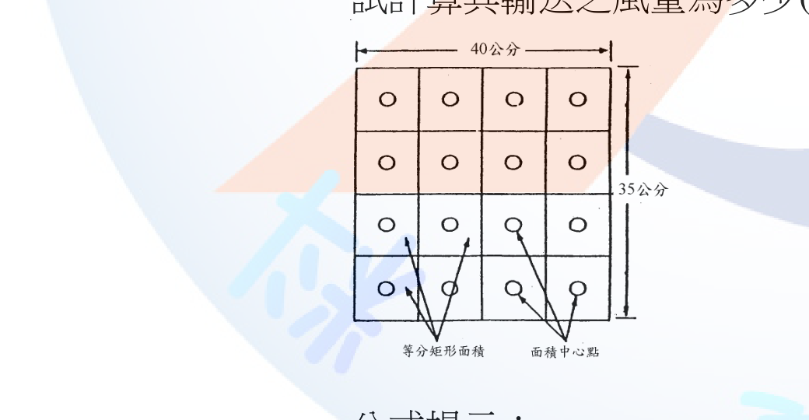
(一) 外裝型氣罩有效吸引風量
外裝式（非狹縫形）氣罩之控制風量公式： Q＝60×V×(10X²＋A)
其中 V＝控制點所需捕捉風速＝0.5 m/s；X＝作業點距氣罩開口距離＝0.2 m； A＝氣罩開口面積＝0.4 m×0.2 m＝0.08 m²。
代入計算： 10X²＝10×(0.2)²＝10×0.04＝0.4 10X²＋A＝0.4＋0.08＝0.48 Q＝60×0.5×0.48＝14.4 m³/min
(二) 矩形風管輸送風量
步驟1：以公式 V＝4.04×√PV（PV單位mmH2O，V單位m/s）將各測點動壓換算為風速：
| PV(mmH2O) | 16.24 | 16.32 | 16.32 | 16.12 | 16.00 | 16.08 | 16.40 | 16.81 |
|---|---|---|---|---|---|---|---|---|
| V(m/s) | 16.28 | 16.32 | 16.32 | 16.22 | 16.16 | 16.20 | 16.36 | 16.56 |
步驟2：平均風速 Va＝ΣVi／n＝(16.28+16.32+16.32+16.22+16.16+16.20+16.36+16.56)／8＝130.42／8≈16.30 m/s （原文16筆數值為上述8點各重複列示一次，均值與僅取8點相同。）
步驟3：風管風量 Q＝W・L・Va。
依原卷圖示，矩形風管斷面寬W＝40公分＝0.4公尺、長L＝35公分＝0.35公尺，代入： Q＝W×L×Va×60＝0.4m×0.35m×16.30 m/s×60＝0.14 m²×16.30 m/s×60秒/分＝2.282 m³/s×60＝136.92 m³/min
本題為局部排氣裝置設計與風管定期自動檢查之工程計算題，屬職業安全衛生技術規範計算方法（非特定法規條文），法規依據為《職業安全衛生設施規則》有關局部排氣裝置應符合之規定，僅列名稱不引條號。
(一) 小題須確認選用之氣罩公式類型（外裝式非狹縫形 Q＝60V(10X²+A)，狹縫形另有不同公式），並注意單位換算（cm→m）。(二) 小題為風管定期自動檢查之標準流程：動壓量測→逐點風速換算→算術平均（或對數-柴比雪夫法）→乘以斷面積（原圖斷面40公分×35公分）得風量，計算式與斷面尺寸代入是否正確為本題主要配分核心，常見失分點為忘記將公分換算為公尺，或誤用風管內徑而非圖示之寬、長尺寸相乘。
⚠️ 本詳解為 AI 彙整之參考擬答，非官方標準答案；法規內容以最新公告版本為準。
請回答下列有關我國化學品健康危害分級管理（Chemical Control Banding，CCB）工具之問題： (一) 何謂CCB工具？(3分) (二) 扼要說明CCB各步驟及其內容。(15分) (三) CCB工具有何限制或不足之處？(2分)
(一) CCB工具之定義 化學品健康危害分級管理（CCB）係一種半定量、簡易篩選式之風險評估與管理工具。其不需仰賴精密之作業環境監測數據，而是依化學品之健康危害等級、散布（逸散）難易度及使用量三項參數，透過控制分級矩陣，快速評定建議之控制措施等級，適用於中小型事業單位或缺乏定量暴露資料時之初步風險分級管理。
(二) CCB各步驟及內容 1. 危害分級（Hazard Group）：依化學品安全資料表（SDS）／GHS健康危害分類與警示語，將化學品之健康危害嚴重度區分為數個危害群組（通常以A至E表示，另對皮膚接觸危害、致癌物／生殖毒性物質等特殊物質另訂群組），危害等級愈高分級愈嚴重。 2. 散布度／逸散度分級：依物質物理形態評估其逸散難易度——固體依粉塵度（低、中、高）分級；液體依揮發度（依操作溫度與沸點推估之低、中、高揮發性）分級；氣體則視為高逸散度。 3. 使用量分級：依單次作業實際使用之化學品量，區分為小量（如公克、毫升等級）、中量（公斤、公升等級）、大量（公噸、立方公尺等級）。 4. 查對控制分級矩陣：以「危害分級」、「散布／逸散度分級」、「使用量分級」三軸交叉查對控制分級矩陣表，得出建議之控制方法等級（通常分1～4級，如一般通風、局部工程控制、密閉／隔離，或建議尋求專家協助）。 5. 採行控制措施：依控制方法等級之建議，參照對應之控制指引表單（Control Guidance Sheet），採取具體之工程控制、管理措施或個人防護具，並將評估結果留存紀錄，作為分級管理及後續複評依據。
(三) CCB工具之限制或不足 CCB屬簡易篩選工具，僅能作初步風險分級，無法完全取代實際之作業環境監測與定量暴露評估；對於極高毒性、致癌物、生殖毒性物質等特殊管理化學品，或已訂有容許暴露標準之管制性化學品，仍應優先採用定量暴露評估方法及既有法規管制措施，不宜僅憑CCB分級結果作為最終管理依據。
本題核心考CCB三軸（危害、逸散、使用量）與矩陣查表邏輯，常見失分點為將CCB誤植為定量暴露評估方法，或漏answer「限制」小題（考生常忽略CCB不適用於致癌物等高關注化學品之提醒）。
何謂風險評估？(2分)，請說明實施步驟及各步驟扼要內容(18分)。
風險評估之定義 風險評估係有系統地辨識工作場所各類危害因子，評估其對勞工可能造成之傷害嚴重度與發生可能性（機率），據以計算風險等級，並依風險等級高低訂定改善優先順序及控制措施之管理過程。
實施步驟及內容 1. 危害辨識：辨認工作場所存在之機械性、電氣性、化學性、物理性、人因工程性、生物性及作業環境等各類危害因子，並可透過作業場所觀察、製程資料、事故紀錄、SDS等資訊蒐集辨識。 2. 確認受影響人員與暴露情境：分析各項危害可能影響之勞工、承攬商或訪客等對象，並確認其暴露頻率、暴露時間與作業型態。 3. 風險評估（估算風險等級）：依危害發生後之傷害嚴重度（Severity）與發生可能性（Likelihood）交叉評估，運用風險矩陣或半定量計分方式，計算出各危害之風險等級（如低、中、高風險）。 4. 決定控制措施與優先順序：依風險等級高低，參照危害控制優先順序原則（消除→取代→工程控制→行政管理→個人防護具），訂定改善措施內容及執行時程，優先處理高風險項目。 5. 記錄、追蹤與定期檢討：留存風險評估過程與結果紀錄，於採取控制措施後追蹤成效；當作業條件、製程或法規變更，或發生職業災害事故時，應適時重新辦理評估與檢討，形成持續改善循環（PDCA）。
本題屬職業安全衛生管理系統（如ISO 45001）風險評估通用架構之標準作答，18分配分宜按5步驟均勻展開，避免僅寫「危害辨識」與「控制措施」兩項而漏列風險估算與追蹤檢討步驟，導致配分不足。
請依所從事職業特性、暴露與可能導致之危害來源，根據勞動部公布之職業病種類表，請將以下職業代號配對最常見可能引發之職業病。(每小題2分，單選且不重複，答題方式如A-1) 職業代號：A.游離輻射暴露作業 B.醫學檢驗作業 C.日光燈管回收作業 D.氯乙烯暴露作業 E.用力抓緊或握緊物品之作業 F.物流貨運搬運作業 G.地板地毯鋪設作業 H.陶瓷廠粉塵作業 I.船舶拆卸作業 J.養雞場作業 職業病：1.H5N1感染 2.肝細胞癌 3.腰椎椎間盤突出 4.甲狀腺癌 5.塵肺症 6.過敏性接觸性皮膚炎 7.間皮細胞瘤 8.腕隧道症候群 9.膝關節半月狀軟骨病變 10.急性腎衰竭
本題配對依據為勞動部公告之「職業病種類表」所列各類職業病之典型暴露作業（不屬單一法律或命令條文，僅列名稱不引條號）。
本題須熟悉各類職業病（塵肺症、化學致癌物、人因工程疾病、生物性感染、物理性暴露）與其代表性作業之對應關係，屬職業病流行病學基本常識整合題，答題時務必依題目要求之「單選、不重複」格式作答，避免重複配對導致不予計分。
非游離輻射包括紫外線、可見光、紅外線、微波及無線電波等，試回答下列問題： (一) 依非游離輻射之波長，由大到小排列。(4分) (二) 依非游離輻射之能量，由大到小排列。(4分) (三) 試說明非游離輻射防護3原則。(12分)
(一) 波長由大到小排列 無線電波 ＞ 微波 ＞ 紅外線 ＞ 可見光 ＞ 紫外線
(二) 能量由大到小排列 紫外線 ＞ 可見光 ＞ 紅外線 ＞ 微波 ＞ 無線電波 （電磁波能量與波長成反比，E＝hc／λ，波長愈短能量愈高，故排序與波長排序恰為相反。）
(三) 非游離輻射防護3原則 1. 時間（縮短暴露時間）：非游離輻射暴露劑量與暴露時間成正比，應盡量縮短勞工於輻射源附近之作業時間，或以輪班、輪調方式分散暴露。 2. 距離（增加與輻射源之距離）：輻射強度隨距離增加而遞減（點源大致依平方反比law遞減），故應盡可能拉開勞工與輻射源（如雷射光源、微波發射器、電焊電弧）之作業距離。 3. 屏蔽（設置防護屏障或使用防護具）：於輻射源與勞工間設置適當之屏蔽、隔離或濾光裝置（如電焊防護面罩、濾光鏡片、微波反射屏蔽），或使勞工佩戴符合波長需求之防護眼鏡、防護衣等個人防護具，降低直接暴露劑量。
波長與能量排序易混淆方向（能量與波長成反比），作答前建議先默寫電磁波譜順序（無線電波→微波→紅外線→可見光→紫外線→X射線→γ射線）再依題意反向推導。防護3原則須各自展開具體措施內容才能取得滿分，不可僅列「時間、距離、屏蔽」6個字。
某作業場所使用甲苯(toluene)及丁酮(methyl ethyl ketone, MEK)混合有機溶劑作業。某日(溫度為27℃，壓力為750 mmHg)對該場所之勞工甲進行暴露評估，其現場採樣及樣本分析結果如下： 採樣設備：計數型流量計(流速為100cc/min) + 活性碳管 | 採樣編號 | 採樣時間 | 甲苯(mg) | 丁酮(mg) | |---|---|---|---| | 1 | 08:00～10:30 | 2.9 | 4.0 | | 2 | 10:30～12:00 | 1.8 | 2.5 | | 3 | 13:00～15:00 | 2.4 | 3.2 | | 4 | 15:00～17:00 | 3.0 | 2.1 | 分子量：甲苯92、丁酮72；脫附效率：甲苯95%、丁酮85%；八小時日時量平均容許濃度：甲苯100ppm、丁酮200ppm。 已知：採樣現場溫度壓力與校正現場相同。請評估勞工甲的暴露是否符合法令的規定？(20分)(需列出計算式否則不予計分)
步驟1：總採樣時間與總採氣體積
各採樣時段時間： 1：08:00～10:30＝2.5 hr＝150 min 2：10:30～12:00＝1.5 hr＝90 min 3：13:00～15:00＝2.0 hr＝120 min 4：15:00～17:00＝2.0 hr＝120 min 總採樣時間＝150+90+120+120＝480 min（＝8小時，扣除12:00～13:00午休1小時未採樣，符合全程8小時工作日評估）
各時段採氣體積＝流速100 cc/min×採樣分鐘數： V1＝100×150＝15,000 cc＝15 L V2＝100×90＝9,000 cc＝9 L V3＝100×120＝12,000 cc＝12 L V4＝100×120＝12,000 cc＝12 L 總採氣體積 V總＝15+9+12+12＝48 L
步驟2：脫附校正後之總樣本重量
甲苯總重（脫附校正）＝(2.9+1.8+2.4+3.0)／0.95＝10.1／0.95＝10.632 mg 丁酮總重（脫附校正）＝(4.0+2.5+3.2+2.1)／0.85＝11.8／0.85＝13.882 mg
步驟3：換算為8小時日時量平均濃度（TWA，mg/m³→ppm）
濃度(mg/m³)＝總重(mg)／總採氣體積(m³)，V總＝48 L＝0.048 m³ 甲苯：C＝10.632／0.048＝221.5 mg/m³ 丁酮：C＝13.882／0.048＝289.2 mg/m³
換算為ppm，採現場溫度27℃、壓力750 mmHg之氣體莫耳體積： Vm(L/mol)＝24.45×(273+27)/(273+25)×(760/750)＝24.45×(300/298)×(760/750) ＝24.45×1.00671×1.01333≈24.94 L/mol （因採樣現場溫壓與分析校正現場相同，可直接以此莫耳體積換算）
ppm＝mg/m³×(Vm／分子量)： 甲苯：221.5×(24.94／92)＝221.5×0.2711≈60.05 ppm 丁酮：289.2×(24.94／72)＝289.2×0.3464≈100.19 ppm
步驟4：混合暴露評估（相加作用）
甲苯及丁酮同屬有機溶劑之刺激性/中樞神經抑制性物質，依規定應視為相加作用，以下列公式評估： 暴露指數 Em＝(C甲苯／PEL甲苯)＋(C丁酮／PEL丁酮) ＝(60.05／100)＋(100.19／200) ＝0.6005＋0.5010 ＝1.10
結論 Em＝1.10＞1，判定勞工甲之暴露不符合法令規定（超出容許暴露標準），雇主應採取工程改善、製程調整或加強通風等措施降低暴露濃度，並重新評估。
本題為職業衛生甲級術科經典之「混合有機溶劑相加作用」計算題，關鍵在於：(1) 各時段採樣體積須逐段計算後加總，不可直接以總時間乘流速；(2) 脫附效率需回除（除以脫附效率）還原真實採樣量；(3) mg/m³轉ppm須以現場溫壓校正莫耳體積，不可逕用標準狀態24.45 L/mol；(4) 最終須加總「暴露比」而非逕加總濃度值，判定式Em＝ΣCi/PELi＞1即超標，為本題不可或缺之最終判斷式。
⚠️ 本詳解為 AI 彙整之參考擬答，非官方標準答案；法規內容以最新公告版本為準。
依高溫作業勞工作息時間標準及勞工作業環境監測實施辦法等相關法規規定，回答下列問題： (一) 何謂輕工作、中度工作及重工作？(6分，各2分) (二) 某一勞工從事燒窯作業(戶外有日曬)，為間歇性熱暴露，其工作時程中最熱的2小時中，有90分鐘在自然濕球溫度為31℃、黑球溫度為35℃及乾球溫度為34℃之工作場所，另外30分鐘在自然濕球溫度為27℃、黑球溫度為29℃及乾球溫度為28℃之休息室(戶內)，試計算其時量平均綜合溫度熱指數。(14分)
(一) 輕工作、中度工作、重工作之定義 - 輕工作：指僅以坐姿或立姿進行手臂部動作以操縱機器者。 - 中度工作：指於走動中提舉或推動一般重量物體者。 - 重工作：指鏟、掘、推等全身運動之工作者。
(二) 時量平均綜合溫度熱指數計算
第一時段（90分鐘，戶外有日曬）： WBGT1＝0.7×自然濕球溫度＋0.2×黑球溫度＋0.1×乾球溫度 ＝0.7×31＋0.2×35＋0.1×34 ＝21.7＋7.0＋3.4 ＝32.1℃
第二時段（30分鐘，戶內休息室，無日曬）： WBGT2＝0.7×自然濕球溫度＋0.3×黑球溫度 ＝0.7×27＋0.3×29 ＝18.9＋8.7 ＝27.6℃
時量平均綜合溫度熱指數（以最熱2小時＝120分鐘為計算基礎）： WBGT時量平均＝(WBGT1×t1＋WBGT2×t2)／(t1＋t2) ＝(32.1×90＋27.6×30)／(90＋30) ＝(2,889＋828)／120 ＝3,717／120 ＝30.98℃（約31.0℃）
本題常見失分點：(1) 誤將戶內休息時段仍套用「有日曬」公式（多算乾球溫度項）；(2) 時量平均計算時分母漏未把兩時段時間相加，或誤以8小時而非最熱2小時(120分鐘)為分母。輕/中/重工作定義須逐字準確，此為選擇題與問答題常見混淆的基本定義考點。
試解釋下列名詞： (一) 熱適應(heat acclimatization)(4分) (二) 眩光(glare)(4分) (三) 白指症(vibration white finger)(4分) (四) 作業環境監測(4分) (五) 體適能(physical fitness)(4分)
(一) 熱適應（heat acclimatization） 指勞工於高溫環境下重複暴露一段期間（一般約需1～2週漸進式暴露）後，身體透過增加排汗率、降低汗液中電解質流失、心跳速率上升幅度減緩、核心體溫上升幅度降低等一系列生理調節機制，逐漸提升對高溫作業耐受能力之過程。
(二) 眩光（glare） 指視野範圍內存在亮度過高之光源，或視野中明暗對比過於強烈，超出眼睛正常適應範圍，導致視覺不適感或造成視覺功能（對比敏感度、目標辨識能力）暫時性降低之現象，可區分為直接眩光（光源直射）與反射眩光（反光表面造成）。
(三) 白指症（vibration white finger） 又稱職業性雷諾氏現象，指勞工因長期使用手持振動工具，遭受局部（手臂）振動暴露，造成手指末梢血管痙攣、周邊血液循環障礙，於低溫或振動暴露後手指（尤其指尖）呈現間歇性蒼白、發麻、刺痛，嚴重時感覺喪失甚至組織壞死之職業病症候群。
(四) 作業環境監測 指為掌握勞工作業環境實態與評估勞工暴露狀況，所採取之規劃、採樣、測定、分析及評估等一系列系統性活動。
(五) 體適能（physical fitness） 指個人身體適應日常生活、工作及休閒活動所需之綜合生理能力表現，一般包含心肺耐力、肌力與肌耐力、柔軟度及身體組成等要素，體適能良好者較能勝任高強度或高負荷之作業。
「作業環境監測」定義務必精確引用施行細則第17條之五要素（規劃、採樣、測定、分析、評估），漏列任一要素易被扣分。熱適應與白指症則屬職業病理學基本概念，作答時應強調「漸進暴露」與「局部振動累積暴露」之因果機轉，避免僅作字面翻譯。
請回答下列問題： (一) 以熱傳導式(thermal conductivity)監測器分別監測下表氣體濃度在3,000 ppm時，請問那2種氣體較易被偵測？(4分) (二) 請敘述熱傳導式監測器之基本功能元件與測定原理。(6分) (三) 某一地下儲水槽經硫化氫(H2S)防爆型直讀式電化學監測器測定，所得測值分別為28、29、32、35、26 ppm。請問1 ppm是指多少分之一(2分)？上述測值之中位數濃度(2分)、平均濃度(2分)、標準偏差(4分)各為多少？ （各氣體熱傳導度＠0℃：空氣58、CO 53、CO2 34、H2 419、O2 57、CH4 73、C3H8 36，單位10⁻⁴ cal/cm·sec·deg）
(一) 較易被偵測之2種氣體
熱傳導式監測器係利用待測氣體與空氣熱傳導度之差異量測濃度，差異愈大愈易被偵測、靈敏度愈高。各氣體與空氣（58）熱傳導度之差值： CO：|53−58|＝5；CO2：|34−58|＝24；H2：|419−58|＝361；O2：|57−58|＝1；CH4：|73−58|＝15；C3H8：|36−58|＝22
差值最大者為氫氣(H2)與二氧化碳(CO2)，故此2種氣體最易被熱傳導式監測器偵測。
(二) 熱傳導式監測器基本功能元件與測定原理
基本功能元件為裝設於惠斯登電橋（Wheatstone bridge）電路中的熱敏電阻絲（通常為白金絲或鎢絲），電橋一側置於待測氣體環境、另一側置於參考氣體（清淨空氣）環境中。通電後電阻絲因通過電流而發熱，其散熱速率取決於周圍氣體之熱傳導度：待測氣體熱傳導度與空氣差異愈大，兩電阻絲散熱速率差異愈明顯，導致兩者電阻值產生差異，此電阻差經電橋轉換為可量測之電壓（或電流）訊號輸出，再經儀器校正換算為氣體濃度。此類監測器適用於待測氣體濃度較高（通常為百分比等級）、且與空氣熱傳導度有顯著差異之場合。
(三) 電化學監測器數值統計
1 ppm＝百萬分之一（10⁻⁶）。
測值排序：26、28、29、32、35
中位數＝排序後最中間值＝29 ppm
平均濃度＝(28+29+32+35+26)／5＝150／5＝30 ppm
標準偏差（以樣本標準差n−1計算）： 各值與平均之差：28−30＝−2；29−30＝−1；32−30＝2；35−30＝5；26−30＝−4 差值平方和＝(−2)²+(−1)²+2²+5²+(−4)²＝4+1+4+25+16＝50 變異數＝50／(5−1)＝50／4＝12.5 標準偏差＝√12.5≈3.54 ppm
本題屬直讀式氣體監測儀器原理與基本統計方法之專業知識，非特定法規條文規定事項，故不列條號。
(一)(二)小題須清楚掌握「熱傳導度差異＝靈敏度」之判讀邏輯，避免誤以熱傳導度絕對值高低（而非與空氣之差值）判斷易偵測氣體。(三)小題標準偏差計算須留意「樣本標準差」除以(n−1)而非母體標準差除以n，兩者計算結果不同，若題目未特別要求母體標準差，一般依樣本統計慣例採n−1計算。
某工廠逐步擴建後共有A、B、C三個廠房，使用某化學品X（非鉛或職業安全衛生法第30條第1項所稱之危險性或有害性作業），以相同製程生產單一產品。近5年之作業環境監測相似暴露族群之空氣中此化學品八小時日時量平均濃度(TWA)均低於5 ppm（此物質八小時日時量平均容許濃度為10 ppm）。所有作業員均採三班制輪班作業。現有A廠一位女性作業員向主管報告懷孕，請依勞動及職業安全衛生法規相關規定及指引回答下列問題： (一) 根據表一之化學品安全資訊，依事業單位規模大小說明雇主採取特殊期間健康保護措施之差異。(4分) (二) 依勞動部職業安全衛生署對懷孕勞工健康保護應參照之技術指引，參考表二及表三，此勞工之化學性危害健康管理分級屬第幾級?請說明理由。(4分) (三) 此勞工依表二之作業環境監測結果，要求調整至C廠的中班工作，雇主是否可以同意此勞工之申請(2分)？並請列舉3個於配置或調整勞工作業時，應援引之勞動相關法規(不含本題已參照之法規或其施行細則)。(6分) (四) 根據上述分級結果，請問雇主應使何種身份醫護人員執行與此勞工之面談指導? (4分)
（表二各班別TWA：A廠白班4.1／中班3.6／晚班2.9；B廠白班2.0／中班1.8／晚班2.4；C廠白班0.9／中班0.1／晚班0.5，班別時段：白班7:00~15:00、中班15:00~23:00、晚班23:00~7:00）
(一) 事業單位規模大小對特殊期間健康保護措施之差異
依規定，事業單位勞工人數已達應依規定配置或特約醫護人員辦理勞工健康服務者（即達勞工健康保護規則第3條「總人數300人以上或特別危害健康作業人數50人以上」，或第4條「50人以上未滿300人」之規模），須由職業安全衛生人員會同從事勞工健康服務醫護人員，就妊娠及分娩後未滿一年之保護期間勞工，實施完整之危害辨識、暴露危害評估、分級管理及醫師面談指導等系統性母性健康保護措施，並訂定母性健康保護計畫據以執行。反之，事業單位勞工人數未達上開配置醫護人員規模者（未滿50人），其母性健康保護義務僅限於雇主依職業安全衛生法第30條、第31條規定，不得使妊娠中女性勞工從事法定危險性或有害性工作，尚無強制要求比照大型事業單位建立完整之分級管理與醫師面談機制。
(二) 化學性危害健康管理分級
化學品X依表一SDS標示屬「生殖毒性物質第2級」，非第1級。
依表三分級基準，需同時檢視「化學品性質分類」與「暴露濃度占容許暴露標準比例」兩項條件： - 性質分類：X為生殖毒性物質第2級（非第1級），對照表三屬「暴露於具生殖性毒性物質⋯之化學品」欄位，即符合第二級管理之定性條件（第三級管理限定為生殖性毒性物質第1級）。 - 濃度分級：該勞工現於A廠工作，A廠各班別TWA介於2.9～4.1 ppm，占容許暴露標準10 ppm之29%～41%，即介於十分之一(1 ppm)以上、未達二分之一(5 ppm)，同樣符合表三之第二級管理濃度基準。
兩項判準結果一致，故評定此勞工之化學性危害健康管理分級屬第二級管理。
(三) 調整至C廠中班之可行性與相關法規
依表二，C廠中班TWA僅0.1 ppm，占容許暴露標準之1%，遠低於十分之一（1 ppm），若單純由化學暴露濃度而言，屬第一級管理，暴露風險較現職A廠為低。惟中班班別時段為15:00～23:00，涵蓋22:00至23:00屬夜間時段。依勞動基準法第49條規定，雇主原則上不得使女性勞工於午後10時至翌晨6時工作，雖經工會或勞資會議同意並符合安全衛生設施等條件可為例外，但依同條規定，該等例外規定於「妊娠或哺乳期間之女工」不適用，即不論勞工本人是否同意，雇主均不得使妊娠中女性勞工於22:00後工作。
結論：雇主不可逕行同意其於現行「15:00～23:00」中班班別工作，應另與勞工協商調整為不涉22:00後工時之班別（如提早下班時段），或以其他符合母性健康保護與勞基法夜間工作禁止規定之方式安排，始得同意其調整申請。
於配置或調整勞工作業時，應援引之相關勞動法規（不含本題已參照之職業安全衛生法及女性勞工母性健康保護實施辦法）： 1. 《勞動基準法》第49條：妊娠或哺乳期間女性勞工不得於午後10時至翌晨6時工作，且不受工會或勞資會議同意之例外規定限制。 2. 《性別平等工作法》：有關受僱者妊娠期間工作調整、產檢假及母性保護相關權益之規定。 3. 《妊娠與分娩後女性及未滿十八歲勞工禁止從事危險性或有害性工作認定標準》：訂定妊娠中女性勞工危險性或有害性工作之具體認定基準，作為調整工作內容之判斷依據。
(四) 面談指導之醫護人員身份
依分級結果屬第二級管理，雇主應使「從事勞工健康服務之醫師」對該勞工提供個人面談指導，並採取危害預防措施（如屬第三級管理，則須另採取工作環境改善及有效控制措施，並由醫師註明其不適宜從事之作業）。
本題屬母性健康保護綜合應用題，核心陷阱在(三)小題：多數考生僅注意C廠化學暴露濃度較低而直接判定「雇主可同意」，卻忽略中班班別涵蓋22:00～23:00夜間時段，違反勞基法第49條對妊娠女工夜間工作之絕對禁止規定（不因當事人同意而排除），此為本題最大鑑別度所在。(二)小題分級判斷須同時檢視「化學品性質分級」與「暴露濃度分級」兩軸，兩者不一致時應採較嚴格（風險較高）之一方。
有甲苯自儲槽洩漏於一局限空間作業場所，其作業空間有效空氣換氣體積為30立方公尺，已知每小時甲苯(分子量：92)蒸發量為3500 g，甲苯爆炸範圍1.2～7.1%。請回答下列問題： (一) 若以新鮮空氣稀釋甲苯蒸氣，維持甲苯蒸氣濃度在爆炸下限百分之三十以下(安全係數約等於3)，且達穩定狀態(steady state)時，請問每分鐘需多少立方公尺之換氣量？（10分）又，每小時換氣次數為多少？（5分） (二) 呈上題，若安全係數設為10，需每分鐘多少立方公尺之換氣量？（5分）
(一) 稀釋至LEL 30%以下（安全係數約3）之換氣量與換氣次數
步驟1：甲苯蒸氣之體積產生速率（以理想氣體莫耳體積24.45 L/mol，25℃、1atm換算）
蒸發量換算為每分鐘：G＝3,500 g/hr÷60＝58.33 g/min 莫耳數：n＝58.33／92＝0.634 mol/min 蒸氣體積產生速率：q＝0.634×24.45＝15.50 L/min＝0.01550 m³/min
步驟2：目標控制濃度 目標濃度＝LEL之30%＝1.2%×0.3＝0.36%＝0.0036（體積分率）
步驟3：所需稀釋換氣量 Q＝q／目標濃度＝0.01550／0.0036＝4.31 m³/min
每小時換氣量＝Q×60＝4.31×60＝258.6 m³/hr 每小時換氣次數＝每小時換氣量／作業空間有效換氣體積＝258.6／30＝8.6 次/小時
(二) 安全係數改為10之換氣量
目標濃度＝LEL／10＝1.2%／10＝0.12%＝0.0012（體積分率） Q＝q／目標濃度＝0.01550／0.0012＝12.92 m³/min
（驗證：安全係數10相當於目標濃度為安全係數3情形之1／3，故Q應為前者之3倍：4.31×3＝12.93 m³/min，與上式計算結果一致。）
本題為局限空間危害預防之通風換氣工程計算，計算原理依循職業衛生教材通用之爆炸性氣體稀釋換氣公式，非特定法規條文之直接規定，法規面則援引《職業安全衛生設施規則》有關局限空間應採取通風換氣措施之相關規定，僅列名稱不引條號。
本題關鍵在於：(1) 蒸發量須先化為「每分鐘」單位方可與目標之每分鐘換氣量對齊；(2) 以理想氣體莫耳體積24.45 L/mol將重量流率換算為體積流率；(3) 「安全係數」與「目標濃度為LEL之幾分之一」互為倒數關係（安全係數3≈目標濃度30%LEL，安全係數10即目標濃度10%LEL即LEL/10），此換算關係若能於(二)小題直接以比例方式驗證（Q與安全係數成正比），可有效降低計算錯誤風險並節省作答時間。
⚠️ 本詳解為 AI 彙整之參考擬答，非官方標準答案；法規內容以最新公告版本為準。
試回答下列問題： (一) 何謂職業安全衛生設施規則所稱之局限空間?(2分) (二) 何謂有機溶劑中毒預防規則所稱之通風不充分之室內作業場所?(2分) (三) 下列那些屬缺氧症預防規則所稱之缺氧危險場所從事之作業?(複選，填寫代號即可，6分。全對得6分，每少選1項或選錯1項扣1分) 1. 長期間未使用之水井、坑井、豎坑、隧道、沉箱、或類似場所等之內部。 2. 置放煤、褐煤、硫化礦石、鋼材、鐵屑、原木片、木屑、乾性油、魚油或其他易吸收空氣中氧氣之物質等之儲槽、船艙、倉庫、地窖、貯煤器或其他儲存設備之內部。 3. 以含有乾性油之油漆塗敷天花板、地板、牆壁或儲具等，在油漆未乾前即予密閉之地下室、倉庫、儲槽、船艙或其他通風不充分之設備之內部。 4. 置放或曾置放醬油、酒類、胚子、酵母或其他發酵物質之儲槽、地窖或其他釀造設備之內部。 5. 使用乾冰從事冷凍、冷藏或水泥乳之脫鹼等之冷藏庫、冷凍庫、冷凍貨車、船艙或冷凍貨櫃之內部。 6. 滯留或曾滯留雨水、河水或湧水之槽、暗渠、人孔或坑井之內部。 7. 供裝設電纜、瓦斯管或其他地下敷設物使用之暗渠、人孔或坑井之內部。 8. 貫通或鄰接腐泥層之水井、坑井、豎坑、隧道、沉箱、或類似場所等之內部。 (四) 除作業方法及安全管制作法、作業控制設施及作業安全檢點方法外，請列舉5項局限空間危害防止計畫應包含之事項。(10分)
(一) 局限空間定義 指非供勞工在其內部從事經常性作業，勞工進出方法受限制，且無法以自然通風來維持充分、清淨空氣之空間。三要件須同時具備：非經常性作業空間、進出受限、自然通風無法維持空氣品質。
(二) 通風不充分之室內作業場所定義 指室內對外開口面積未達底面積之二十分之一以上，或未達全面積之百分之三以上者。
(三) 缺氧危險場所複選作答 1、2、3、4、5、6、7、8（全選，8項均屬缺氧症預防規則第2條所列缺氧危險場所）。 逐項對應：1對應該條第1款（長期未使用水井坑井等）；2對應第7款（易吸收氧氣物質儲存設備）；3對應第8款（乾性油油漆未乾即密閉之場所）；4對應第10款（發酵物質儲槽釀造設備）；5對應第12款（乾冰冷凍冷藏設備）；6對應第4款（滯留雨水河水湧水之槽渠孔井）；7對應第3款（電纜瓦斯管等地下敷設物之暗渠人孔坑井）；8對應第2款第5目（貫通或鄰接腐泥層之地層）。
(四) 局限空間危害防止計畫應包含之事項（除已排除2項外，列舉5項） 1. 局限空間內危害之確認。 2. 局限空間內氧氣、危險物、有害物濃度之測定。 3. 通風換氣實施方式。 4. 電能、高溫、低溫與危害物質之隔離措施及缺氧、中毒、感電、塌陷、被夾、被捲等危害防止措施。 5. 進入作業許可程序。 （另尚有「提供之測定儀器、通風換氣、防護與救援設備之檢點及維護方法」及「緊急應變處置措施」共7項可選，任選5項作答。）
第(三)小題易誤判為只有部分選項正確而漏選，實則本題8個選項均逐字對應缺氧症預防規則第2條14款中的字句，須熟記全部14款內容方能判斷全選；常見失分為誤以為題目故意混入不相關場所而漏選。第(四)小題須先扣除題目已排除的2項（作業方法及安全管制作法、作業控制設施及作業安全檢點方法），再從剩餘7項中列舉5項，避免重複列出已排除項目而不予計分。
試回答下列問題： (一) 說明危害性化學品評估及分級管理辦法所稱之分級管理。(2分) (二) 說明女性勞工母性健康保護實施辦法所稱分級管理之執行方法。(2分) (三) 說明對女性勞工母性健康保護實施辦法第3條或第5條第2項之工作，區分風險等級之原則。(12分) (四) 說明下列有關呼吸防護具選用之名詞：1. 密合度測試(fit test)(2分) 2. 密合檢點(fit check)(2分)
(一) 分級管理之定義 指依化學品健康危害及暴露評估結果評定風險等級，並分級採取對應之控制或管理措施。
(二) 母性健康保護分級管理之執行方法 雇主應使職業安全衛生人員會同從事勞工健康服務醫護人員，依評估結果區分風險等級，並依附表填寫作業場所危害評估及採行措施，屬第二級管理者由醫師個別面談指導並採危害預防措施，屬第三級管理者應立即採取工作環境改善及有效控制措施，完成改善後重新評估。
(三) 風險等級區分原則 1. 第一級管理：符合下列之一者：(1)作業場所空氣中暴露濃度低於容許暴露標準十分之一；(2)經醫師評估無害母體、胎兒或嬰兒健康。 2. 第二級管理：符合下列之一者：(1)暴露濃度在容許暴露標準十分之一以上未達二分之一；(2)經醫師評估可能影響母體、胎兒或嬰兒健康。 3. 第三級管理：符合下列之一者：(1)暴露濃度在容許暴露標準二分之一以上；(2)經醫師評估有危害母體、胎兒或嬰兒健康。 （有害輻射散布場所之工作，另依游離輻射防護安全標準辦理。）
(四) 名詞說明 1. 密合度測試(fit test)：指以定量或定性方法，測試呼吸防護具面體與配戴者臉部密合之程度，確認面體邊緣是否有洩漏，作為選用合適面體型式及尺寸之依據，通常於初次配戴及定期（至少每年一次）時實施。 2. 密合檢點(fit check)：指勞工每次配戴面體式呼吸防護具前，自行以正壓或負壓方式簡易確認面體與臉部密合情形之檢查，用以及早發現配戴不當造成之洩漏，屬使用者每次配戴前之自我檢查，非取代密合度測試。
第(三)小題12分為本題核心，須完整列出三個等級「濃度基準」與「醫師評估基準」雙軌並列的判定方式，切勿只寫濃度基準而漏寫醫師評估之替代條件。第(四)小題常見混淆為將fit test（專業儀器定量/定性測試，選用時）與fit check（勞工每次配戴自我簡易檢查）角色互換作答。
某一工廠之職業安全衛生管理人員欲進行特定粉塵發生源之作業環境監測及勞工粉塵暴露控制，以下是他的考量重點，試回答下列問題： (一) 採樣器之吸入效率(3分)：若考量平行板採樣器之吸入效率A=Cs/Co（Co為採樣口外所得之質量濃度，Cs是經由採樣口而得之氣膠質量濃度）；請問等動力採樣(isokinetic sampling)、超動力採樣(superisokinetic sampling)及次動力採樣(subisokinetic sampling)之A值分別為大於、等於或小於1？ (二) 名詞解釋：1.可吸入性氣膠(inhalable aerosol)(2分) 2.胸腔性氣膠(thoracic aerosol)(2分) 3.可呼吸性氣膠(respirable aerosol)(2分) 4.圖中a、b、c曲線分別代表前述哪一類氣膠?(1分)
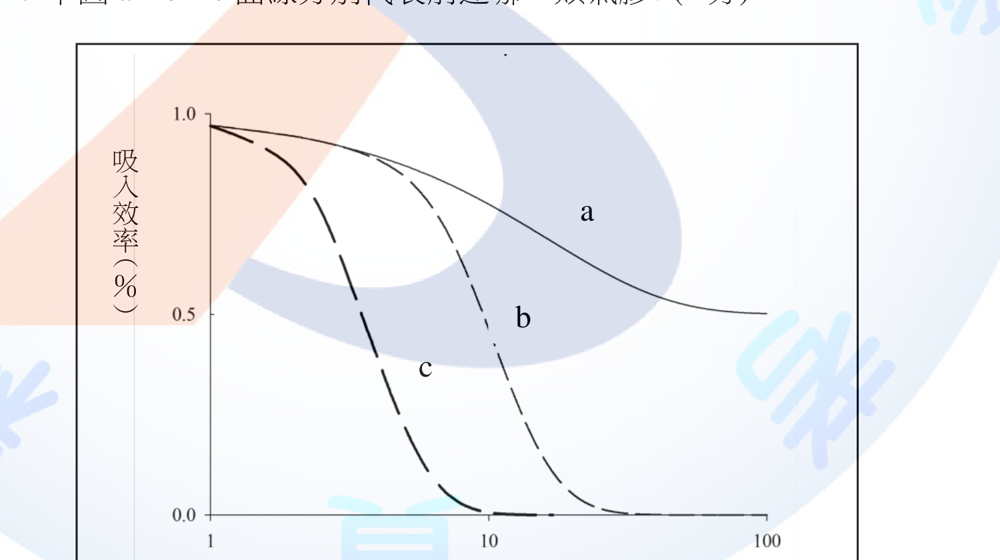
(三) 試列出5種濾材對粒狀污染物的去除機制；並簡要說明。(10分)
(一) 三種採樣模式之吸入效率A值 1. 等動力採樣（採樣風速＝環境風速）：流線不偏折，捕集之氣膠濃度等於環境真實濃度，A＝1。 2. 超動力採樣（採樣風速＞環境風速）：氣流被過度抽吸，流線向採樣口收斂，大顆粒因慣性來不及隨流線轉向而較少被捕入，導致測得濃度偏低，A＜1。 3. 次動力採樣（採樣風速＜環境風速）：流線在採樣口前發散，大顆粒因慣性仍直線進入採樣口而被過度捕集，導致測得濃度偏高，A＞1。
(二) 名詞解釋 1. 可吸入性氣膠(inhalable aerosol)：指可經口鼻吸入進入呼吸系統（含上呼吸道）之氣膠部分，以質量中位數空氣動力直徑（MMAD）約100μm處之採集效率為50%之慣例曲線定義。 2. 胸腔性氣膠(thoracic aerosol)：指可通過喉部而進入胸腔（氣管、支氣管區）之氣膠部分，50%截取粒徑約為10μm。 3. 可呼吸性氣膠(respirable aerosol)：指可到達肺泡區進行氣體交換之氣膠部分，50%截取粒徑約為4μm。 4. 依吸入效率隨粒徑遞減之慣例曲線，效率涵蓋範圍由大至小依序為可吸入性>胸腔性>可呼吸性，故一般繪圖時a為可吸入性氣膠、b為胸腔性氣膠、c為可呼吸性氣膠（原圖曲線標示位置因純文字擷取而未能完整保留，此為ACGIH/ISO慣例粒徑分布之標準對應關係，實際作答請核對考卷原圖曲線相對高低位置）。
(三) 濾材對粒狀污染物之去除機制（5種） 1. 慣性衝擊(inertial impaction)：較大顆粒因質量大、慣性大，無法隨氣流繞過濾材纖維而直接撞擊附著於纖維表面。 2. 攔截(interception)：顆粒隨氣流繞過纖維時，若顆粒半徑大於顆粒中心至纖維表面之距離，即被纖維表面攔截捕捉。 3. 擴散(diffusion)：極小顆粒（次微米級）因布朗運動偏離流線，隨機碰撞纖維表面而被捕集，粒徑愈小、風速愈低，擴散捕集效率愈高。 4. 重力沉降(gravitational settling)：顆粒在通過濾材孔隙時，因重力作用而沉降附著於纖維表面，通常對較大顆粒且低風速時較顯著。 5. 靜電吸引(electrostatic attraction)：顆粒與濾材纖維若帶有異性電荷，透過庫倫靜電力相互吸引而捕集，靜電濾材即利用此原理提高捕集效率而不增加壓損。
本題屬作業環境監測工程與氣膠採樣理論之專業知識範疇（吸入效率、粒徑分布慣例、濾材捕集機制），非特定法規條文規定事項，屬職業衛生技術指引及教科書內容，故不列條號。
(一)小題須清楚理解「相對速度差」如何影響慣性顆粒之流線偏折方向，超動力對應A<1、次動力對應A>1，方向常被學生記反。(二)小題三種氣膠定義須緊扣「捕集部位」（上呼吸道／氣管支氣管／肺泡）與「50%截取粒徑」兩要素作答。(三)小題5種機制中「攔截」與「慣性衝擊」易混淆，須強調攔截強調顆粒幾何尺寸貼近纖維表面而非撞擊，擴散機制則專屬極細顆粒。
某55歲從事「泥作作業」30餘年的男子，其工作需搬運30公斤重的磁磚、砂石、水泥原料，每天最重達到2.5公噸，且常需以彎腰姿勢進行工作，後經職業傷病防治中心認定，具顯著「人因性危害」，請由以上案例回答下列問題： (一) 何謂累積性肌肉骨骼傷病(cumulative trauma disorders, CTD)？(4分) (二) 依法令規定，事業單位勞工人數達多少人以上者，為避免勞工促發肌肉骨骼疾病，雇主應依作業特性及風險，參照中央主管機關公告之相關指引，訂定人因性危害預防計畫並據以執行?(2分)；又執行紀錄應留存多少年？(2分) (三) 承上題，事業單位訂定完整之人因性危害預防計畫宜遵循PDCA循環之架構來管理，以確保管理目標之達成。請分別就P（Plan）、D（Do）、C（Check）、A（Act）分述其內容。(12分)
(一) 累積性肌肉骨骼傷病(CTD)定義 指勞工因長期重複、姿勢不良、過度施力、震動或高頻率之作業，使肌肉、肌腱、韌帶、神經、關節及周邊軟組織逐漸累積微小傷害，經長時間累積後產生疼痛、麻木、無力、活動受限等症狀之疾病，其發生非單一急性事故所致，而是長期暴露於人因性危害因子下漸進累積形成，常見如肌腱炎、腕道症候群、下背痛、退化性關節炎等。
(二) 適用人數門檻與紀錄留存年限 事業單位勞工人數達100人以上者，應訂定人因性危害預防計畫並據以執行（未滿100人者得以執行紀錄或文件代替）；相關執行紀錄應留存3年。
(三) PDCA架構內容 1. P（Plan，規劃）：分析泥作等重複性作業之流程、內容及動作，辨識搬運重量、姿勢、頻率等人因性危害因子，評估勞工肌肉骨骼負荷風險等級，並據以訂定改善目標、對策及期程。 2. D（Do，執行）：依規劃內容落實改善方法，如採機械化搬運輔具減少人力提舉重量、調整工作站高度與作業姿勢、實施輪班或工作輪替降低單一勞工暴露時間，並辦理人因工程危害預防之教育訓練及宣導。 3. C（Check，查核）：定期評估執行成效，蒐集職業傷病通報紀錄、勞工肌肉骨骼不適自覺症狀調查、改善措施執行率等資料，確認改善對策是否確實降低暴露風險及傷病發生率。 4. A（Act，改善）：依查核結果檢討未達成目標之原因，採取矯正預防措施並修正計畫內容，將有效對策標準化納入常態管理程序，形成持續改善之循環，並將全部過程作成執行紀錄留存備查。
第(一)小題須點出CTD「非單一事故、長期累積」之核心特徵，勿與職業傷害（急性外傷）混淆。第(二)小題100人與3年為法規明文數字，屬記憶題不可猜錯。第(三)小題PDCA作答易流於空泛，宜緊扣本案例（泥作搬運、彎腰姿勢）具體舉例說明每一階段作法，方能取得較高配分。
試回答下列問題： (一) 何謂Type 2噪音計？(2分) (二) 在自由音場測定高頻噪音時，當以無方向型(random)、垂直型或水平型微音器測定入射噪音時，一般而言何種入射會有較高的回應特性測值？(2分) (三) 承上題，無方向性微音器中心軸線與音波入射的測定角度範圍，通常為何？(2分) (四) 列出計算式，計算噪音計中心頻率為2000Hz的八音度頻帶上、下限頻率。(4分) (五) 列出計算式，說明距離線噪音源4公尺時之噪音，較距離相同音源2公尺時之噪音會減少多少dB？(5分)；若為點噪音源，則距離由2公尺變為8公尺時，噪音會減少多少dB？(5分)
(一) Type 2噪音計 指依國際標準（IEC 61672-1或相當標準）分類之「一般型（普通型）」噪音計，其準確度容許誤差範圍較Type 1（精密型）為寬（約±2dB左右），多用於一般性職業衛生噪音調查、初步篩檢及作業環境監測，非用於高精密度之實驗室鑑定用途。
(二) 高回應之入射方向 以垂直（0度、正面軸向）方式入射音波時，因麥克風振膜正對音波前進方向，於高頻時因繞射及反射效應使測得音壓感應值較高；相對地，無方向性（random-incidence）微音器係經特殊設計以平均各角度響應，用以降低此方向性效應對測值之影響。
(三) 無方向性微音器之測定角度範圍 一般而言，無方向性微音器係以其中心軸線與音波入射方向夾角在0°至70°之範圍內，維持頻率響應大致平坦，作為其設計與校正之基準角度範圍。
(四) 2000Hz中心頻率之八音度頻帶上、下限 八音度頻帶上下限頻率與中心頻率之關係為 f中心＝√(f上限×f下限)，且 f上限／f下限＝2。 故：f上限＝f中心×√2＝2000×1.414≈2828 Hz f下限＝f中心／√2＝2000／1.414≈1414 Hz
(五) 距離衰減計算 1. 線噪音源（如車流、管線）：音強與距離成反比（1/r），音壓級差公式為 ΔL＝10log10(r2/r1)。 距離由2m變為4m：ΔL＝10log10(4/2)＝10log10(2)＝10×0.301＝3.0 dB（減少3dB）。 2. 點噪音源：音強與距離平方成反比（1/r²），音壓級差公式為 ΔL＝20log10(r2/r1)。 距離由2m變為8m：ΔL＝20log10(8/2)＝20log10(4)＝20×0.602＝12.0 dB（減少12dB）。
本題屬噪音測定儀器規格與聲學傳播理論之工程計算題（Type 1/2噪音計分類、微音器指向性、八音度頻帶、距離衰減公式），非特定法規條文規定事項，屬職業衛生噪音測定技術範疇，故不列條號。
(四)小題易將八音度頻帶上下限比值誤記為其他倍數，須牢記八音度（octave band）定義為上下限頻率比恰為2倍。(五)小題最常見失分為將線音源與點音源之衰減公式（10log vs 20log）互相誤用，或忘記距離比須取「變化後／變化前」而非反向計算，須特別留意題目所問「減少多少dB」須取正值。
⚠️ 本詳解為 AI 彙整之參考擬答，非官方標準答案；法規內容以最新公告版本為準。
某工作場所使用化學品混合物(以下簡稱混合物)，試回答下列問題： (一) 有甲、乙兩混合物，甲混合物未經危險物及有害物整體測試，乙混合物危害分類經整體測試後為致癌二級，若甲混合物由化學品A及B混合而成，乙混合物由化學品B及C混合而成，B為致癌一級化學品，A及C毒性資料類似有相同危害分類(非致癌且毒性低於B)且不影響B的毒性：1.若甲混合物中的A化學品與乙混合物中的C化學品之濃度百分比相同，請問甲混合物之危害分類為何？(6分) 2.前開分類係依照GHS的哪一分類原則？(4分) (二) 若有丙混合物同樣未經危險物及有害物整體測試，且其分類不適用前開分類原則，丙混合物之成分若已知含95%之A、3%之C及2%之B(A、B、C毒性分類敘述如前小題)：1.請問丙混合物之危害分類為何？(6分) 2.丙混合物容器上標示之警示語應為何？(4分)
(一)-1 甲混合物之危害分類 甲混合物之危害分類應與乙混合物相同，判定為致癌物質第二級。理由：甲（A＋B）與乙（B＋C）僅一種成分不同（A取代C），且A與C毒性資料類似、危害分類相同（均非致癌、毒性低於B），並確認不影響B之毒性表現；又題示A在甲中之濃度百分比與C在乙中之濃度百分比相同，故甲混合物與已測試之乙混合物在成分組成、濃度及毒性表現上實質相似，可援用乙混合物之整體測試分類結果。
(一)-2 適用之GHS分類原則 本題適用GHS混合物分類「架橋原則(bridging principles)」中之「實質相似的混合物(Substantially Similar Mixtures)」原則：當未測試混合物僅以性質相似、危害分類相同、且不影響其他成分毒性表現之成分，取代已測試混合物中之另一成分，且兩者濃度相當時，得援引已測試混合物之分類結果。
(二)-1 丙混合物之危害分類 丙混合物不適用架橋原則，應以GHS通用截止值／濃度極限之計算方法(conventional/calculation method)分類：丙混合物中含2%之B（致癌物質第一級），已超過GHS對第一級致癌物質之通用濃度截止值（一般為0.1%），且A、C均為非致癌、不影響B毒性之成分，故丙混合物整體應分類為致癌物質第一級。
(二)-2 容器標示之警示語（信號詞） 依GHS對致癌物質第一級之分類，其信號詞（警示語）應標示為「危險」（Danger）。
本題屬GHS（全球化學品調和制度）混合物危害分類原則（架橋原則、通用濃度截止值）之技術性分類邏輯，我國《危害性化學品標示及通識規則》雖採行GHS分類基準，惟其架橋原則及截止值數值列於技術性附表，非本機語料所涵蓋之法規本文條號，故僅列規則名稱、不引條號，以避免臆造條號。
本題核心在於分辨「架橋原則可否適用」：(一)小題成分僅一項替換且濃度相同、危害分類相同、不互相干擾毒性，屬典型「實質相似混合物」架橋情境；(二)小題為三成分混合且題目明示「不適用前開分類原則」，須改用「通用截止值」直接判斷──只要含有害成分（本題B致癌一級2%）濃度超過截止值（0.1%），無論其他稀釋成分比例多高，整體混合物即須分類為該項危害，此為常見失分點：誤以為95%為無害成分即判定丙混合物無害。
請回答下列問題： (一) 依「精密作業勞工視機能保護設施標準」之規定：1.何謂精密作業？(2分) 2.何謂米燭光？(2分) 3.除作業台面局部照明不得低於一千米燭光外，試列舉4項雇主應採取之視機能保護設施或措施(不包含體格檢查、健康檢查與安全衛生管理系統)。(8分) (二) 某作業場所之照度測定如下圖，黑點為測定點，其旁之數值為測定值：1.請列出計算式計算A小區的平均照度。(4分) 2.該作業場所整體之平均照度。(4分)
(一)-1 精密作業之定義 指雇主使勞工從事凝視作業（如精密零件切削加工量測組合檢試、鐘錶珠寶鑲製、製圖印刷校對、電腦或電視影像顯示器之調整檢視等法定15款作業之一），且每日凝視作業時間合計在2小時以上者。
(一)-2 米燭光之定義 米燭光（meter-candle，相當於lux照度單位）為照度之計量單位，指1燭光光源在1公尺距離處，垂直照射於單位受光面上所產生之照度，即國際單位制中之「勒克斯(lux)」。
(一)-3 視機能保護設施或措施（列舉4項） 1. 精密作業之工作台面不得產生反射耀眼光線，其台面採色應與處理物件有較佳對比之顏色。 2. 工作台面照明與其半徑1公尺以內接鄰地區照明之比率不得低於1比5分之1，與鄰近地區照明之比率不得低於1比20分之1。 3. 採用輔助局部照明時，應使勞工眼睛與光源之連線和眼睛與注視工作點之連線所成角度在30度以上，未達30度應設置適當遮光裝置。 4. 應縮短工作時間，連續作業2小時應給予勞工至少15分鐘之休息；並注意勞工作業姿態，使眼球與工作點距離保持在明視距離約30公分。
(二)-1 A小區平均照度計算式 依原圖3×3測定點配置（如下表，依實際圖示座標排列），將測定區域劃分為4個等面積小區，各小區以其四角測定點照度之算術平均值代表該小區之平均照度：
| 左欄 | 中欄 | 右欄 | |
|---|---|---|---|
| 上排 | 640 | 540 | 670 |
| 中排 | 550 | 720 | 550 |
| 下排 | 470 | 640 | 540 |
依原圖標示，A小區位於右上象限，四角測定點依序為540、670、720、550 Lux： E(小區)＝(E1+E2+E3+E4)／4 E(A)＝(540+670+720+550)／4＝2480／4＝620 Lux
(二)-2 作業場所整體平均照度 採加權平均法，依各測定點於相鄰小區被重複計入之次數加權（角隅點權重1、邊點權重2、中心點權重4）： E(整體)＝[Σ角隅點×1＋Σ邊點×2＋Σ中心點×4]／[角隅點數×1＋邊點數×2＋中心點數×4] 角隅點（整體四角，4點）：640、670、470、540，合計2320 邊點（四邊中點，4點）：540、550、550、640，合計2280 中心點（1點）：720 E(整體)＝[2320×1＋2280×2＋720×4]／[4×1＋4×2＋1×4]＝[2320+4560+2880]／16＝9760／16＝610 Lux （驗算：四小區平均照度分別為左上612.5、右上(A)620、左下595、右下612.5 Lux，取其平均＝(612.5+620+595+612.5)／4＝610 Lux，與加權平均法結果一致。）
(一)第3小題須排除題目已明示不列入的體格檢查、健康檢查、安全衛生管理系統3項，改列照明品質、照明比率、視角遮光、工時休息、明視距離等5項擇4項作答。(二)小題已依原圖確認A小區位於右上象限（四角測定點540、670、720、550 Lux），計算式與數值均以此為準；作答關鍵在於能正確辨識「小區」＝相鄰4測定點所圍成之最小方格，以及整體平均照度須以各測定點被重複計入之次數加權（角隅×1、邊×2、中心×4），而非直接對9個測定值取簡單算術平均，此為常見失分點。
請回答下列問題： (一) 下圖為呼吸防護具選用參考步驟，請將圖中之英文字母(A~E)填入合適中文詞語，如F飽和破出。(10分)
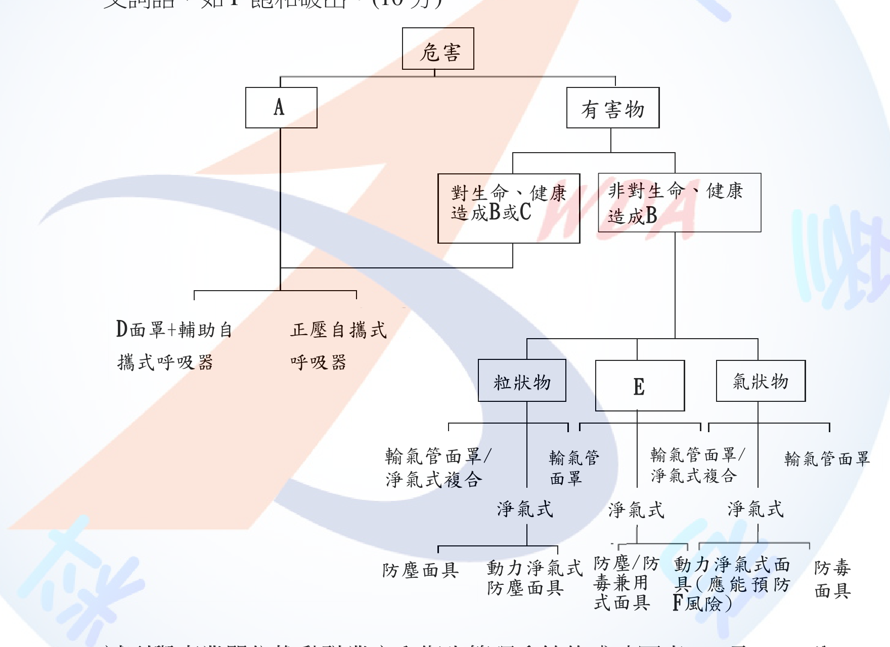
(二) 試列舉事業單位推動職業安全衛生管理系統的成功因素10項。(10分)
(一) 呼吸防護具選用參考步驟填空 依原圖流程結構，「危害」項下分為A（左支）與「有害物」（右支）兩大類；「有害物」再依對生命健康之危害程度分為「對生命、健康造成B或C」與「非對生命、健康造成B」兩支，最終依有害物存在型態（粒狀物／E／氣狀物）分別導向對應之呼吸防護具： - A：對生命、健康有立即危害之虞（IDLH）之情形。此支直接連結最高防護等級器具（[D]面罩＋輔助自攜式呼吸器、正壓自攜式呼吸器），不再依有害物型態細分，符合IDLH環境須採最高防護等級之原則。 - B：立即危害（IDLH）。此字母同時出現於「對生命、健康造成B或C」與「非對生命、健康造成B」兩支，代表「是否構成立即危害」為區分兩支之共同判準。 - C：不可逆或延遲性健康危害效應。與B並列於同一支，代表除IDLH外，會造成不可逆或延遲性健康損害之有害物，亦應採較高防護等級處理。 - D：輸氣管。銜接「面罩＋輔助自攜式呼吸器」構成「輸氣管面罩＋輔助自攜式呼吸器」，為與「正壓自攜式呼吸器」並列之IDLH等級防護具選項，「輸氣管面罩」一詞亦重複出現於下方粒狀物／氣狀物分支之給定文字中，可互為佐證。 - E：粒狀物與氣狀物共存（混合型污染物）。與「粒狀物」「氣狀物」並列為有害物存在型態之第三種類型，指作業環境中粒狀物與氣狀物同時存在之混合污染情形。 - F：飽和破出（題目已給定範例）：動力淨氣式面具應能預防淨氣罐/濾毒罐使用超過吸附容量而失效（飽和破出）之風險。
〔B、C二字之精確用語（是否為官方原文「立即危害」「不可逆效應」之慣用詞彙）已依原圖樹狀結構及呼吸防護具選用之通用邏輯推定，惟未查得官方「呼吸防護具選用參考原則」原文逐字比對，實際作答請以官方公告原文用詞為準。〕
(二) 職業安全衛生管理系統成功因素（列舉10項） 1. 最高階層之承諾與積極參與（領導力）。 2. 明確且可衡量之安全衛生政策與目標。 3. 全員參與及有效之勞資溝通諮商機制。 4. 落實危害辨識、風險評估與分級管理。 5. 充足之人力、財務與技術資源配置。 6. 完整規劃並落實安全衛生教育訓練。 7. 建立文件化之管理程序並確實執行。 8. 定期執行內部稽核與管理階層審查。 9. 建立事故、事件調查及矯正預防機制。 10. 持續改善之PDCA循環運作，並將管理系統融入企業整體經營決策。
(一)小題因原圖遺失，考生應試時務必對照實際考卷圖形逐一比對字母位置，作答核心觀念為「先判斷是否立即危害生命健康，再依有害物型態選擇對應防護具」之決策樹邏輯，此觀念本身即為本題主要配分依據。(二)小題10項成功因素易與「管理系統要素」（政策、規劃、實施、評估、審查）混淆作答，須聚焦於「成功關鍵因素」（如高階承諾、全員參與、資源配置等軟性管理面向），而非純粹複誦管理系統之PDCA架構要素。
試回答下列問題： (一) 雇主應訂定含採樣策略之監測計畫，其項目及內容應包括哪5項?(10分) (二) 參考職業安全衛生署「人因性危害預防計畫指引」，請列舉5個常見(或常用)肌肉骨骼傷病之人因工程分析工具，並說明主要評估部位。(10分)
(一) 監測計畫應包括之項目 1. 監測目的。 2. 危害辨識及資料收集。 3. 相似暴露族群之建立。 4. 採樣策略之規劃及執行。 5. 樣本分析。 （現行《勞工作業環境監測實施辦法》第9條第2項規定監測計畫應包括6款事項，除上列5項外，尚包括「數據分析及暴露評估」；本題設問為5項，前5款已完整涵蓋監測計畫規劃、辦理及執行之核心架構，如考卷版本要求恰為5項，可依上列作答，另可視需要補列第6款「數據分析及暴露評估」以求周延。）
(二) 人因工程分析工具（列舉5個）及主要評估部位 1. RULA（Rapid Upper Limb Assessment，快速上肢評估法）：評估上肢（肩、肘、腕）及頸部、軀幹之姿勢負荷。 2. REBA（Rapid Entire Body Assessment，快速全身評估法）：評估全身（軀幹、頸部、上肢、下肢）之姿勢負荷，適用於動態或不對稱作業姿勢。 3. NIOSH抬舉方程式（NIOSH Lifting Equation）：評估人力提舉搬運作業之下背（腰椎）負荷，計算建議重量界限（RWL）。 4. OWAS（Ovako Working Posture Analysing System，芬蘭姿勢分析法）：評估背部、上肢、下肢之整體工作姿勢分類與負荷等級。 5. 應變指數法（Strain Index）：評估手腕、手部及前臂重複性作業之肌腱肌肉負荷風險。 （另有KIM（Key Indicator Method，德國關鍵指標法）評估提舉、搬運、推拉等人力物料處理負荷，可視需要替換列舉。）
(一)小題須留意監測計畫法定項目共6款，本題僅要求5項，作答時建議優先列出「監測目的」「危害辨識及資料收集」「相似暴露族群建立」「採樣策略規劃執行」「樣本分析」等前段規劃流程項目，避免遺漏監測計畫「事前規劃」之核心精神。(二)小題各工具評估部位常見混淆：RULA聚焦上肢、REBA涵蓋全身、NIOSH方程式專用於提舉下背負荷，作答時務必將工具名稱與其對應評估部位正確配對，勿張冠李戴。
某一清洗作業勞工使用1,1,1-三氯乙烷為清潔劑，在25℃、一大氣壓下其暴露於1,1,1-三氯乙烷濃度之情形如下：1. 08：00～12：00 C1＝340 ppm 2. 13：00～14：00 C2＝2560 mg/m3 3. 14：00～19：00 C3＝80 ppm。已知：1,1,1-三氯乙烷之分子量為133.5，八小時日時量平均容許濃度為350 ppm，不同容許濃度之變量係數值如下表：容許濃度(ppm或mg/m3)＜1／≧1，＜10／≧10，＜100／≧100，＜1000／≧1000，變量係數依序為3／2／1.5／1.25／1.0。試回答下列問題： (一) 該勞工全程工作日之1,1,1-三氯乙烷時量平均暴露濃度為多少ppm？(10分，請列出計算過程) (二) 試評估該作業勞工之1,1,1-三氯乙烷暴露是否符合勞工作業場所容許暴露標準規定？(10分，請列出計算過程)
(一) 全程工作日時量平均暴露濃度
先將C2由mg/m3換算為ppm： ppm＝(mg/m3×24.45)／分子量＝(2560×24.45)／133.5＝62,592／133.5≈468.9 ppm
全程工作時數：08:00-12:00(4hr)＋13:00-14:00(1hr)＋14:00-19:00(5hr)＝10小時（12:00-13:00為用餐時間不列入暴露工時）。
時量平均濃度計算（依容許暴露標準第4條公式）： TWA＝(C1×t1＋C2×t2＋C3×t3)／(t1＋t2＋t3) ＝(340×4＋468.9×1＋80×5)／10 ＝(1360＋468.9＋400)／10 ＝2228.9／10 ＝約222.9 ppm
(二) 容許暴露標準符合性評估
全程工作日時量平均濃度檢核（對應8小時日時量平均容許濃度350ppm）： TWA＝222.9 ppm ＜ 350 ppm，符合8小時日時量平均容許濃度規定。
任何連續15分鐘時量平均濃度檢核（短時間時量平均容許濃度）： 350ppm屬「≧100，＜1000」級距，變量係數為1.25，故短時間時量平均容許濃度(STEL)＝350×1.25＝437.5 ppm。 13:00-14:00時段濃度C2≈468.9 ppm，若該時段濃度分布均勻，則其中任何連續15分鐘之時量平均濃度亦約為468.9 ppm，468.9 ppm ＞ 437.5 ppm，已超過短時間時量平均容許濃度，不符合規定。
結論：該勞工全程工作日之時量平均暴露濃度雖低於8小時日時量平均容許濃度（符合），但13:00-14:00時段之暴露濃度已超過依變量係數換算之短時間時量平均容許濃度437.5ppm（不符合），故整體而言該勞工之1,1,1-三氯乙烷暴露未完全符合勞工作業場所容許暴露標準之規定，雇主應針對13:00-14:00時段之高濃度暴露另採取工程改善或縮短暴露時間等措施。
本題為容許暴露標準之經典綜合計算題，常見失分點有二：其一為mg/m3換算ppm時誤用分子量或漏乘24.45係數；其二為僅計算8小時TWA即判定「符合」，忽略第8條尚要求「任何連續15分鐘」不得超過以變量係數換算之短時間容許濃度，本題13:00-14:00時段濃度雖僅持續1小時，但因該小時內濃度均勻偏高，已足以使其中任一15分鐘區間超過STEL，此為本題刻意設計之陷阱，須雙重檢核（8小時TWA與15分鐘STEL）方能完整作答。
⚠️ 本詳解為 AI 彙整之參考擬答，非官方標準答案；法規內容以最新公告版本為準。
請依職業安全衛生設施規則規定，回答下列問題： (一) 雇主使勞工從事戶外作業，為防範環境引起之熱疾病，應視天候狀況採取之危害預防措施，除實施降低作業場所之溫度、提供陰涼之休息場所及提供適當之飲料或食鹽水等措施外，請另列舉5項。(10分) (二) 雇主對於勞工八小時日時量平均音壓級超過八十五分貝或暴露劑量超過百分之五十之工作場所，請列出應採取之聽力保護措施5項。(10分)
(一) 戶外作業熱疾病預防措施（除已列3項外，另列舉5項） 1. 調整作業時間。 2. 增加作業場所巡視之頻率。 3. 實施健康管理及適當安排工作。 4. 採取勞工熱適應相關措施。 5. 留意勞工作業前及作業中之健康狀況。 （另有「實施勞工熱疾病預防相關教育宣導」及「建立緊急醫療、通報及應變處理機制」共10項可選，任選5項作答即可。）
(二) 聽力保護措施（列舉5項） 1. 噪音監測及暴露評估。 2. 噪音危害控制。 3. 防音防護具之選用及佩戴。 4. 聽力保護教育訓練。 5. 健康檢查及管理。 （另有「成效評估及改善」共6項；事業單位勞工人數達100人以上者，應訂定聽力保護計畫並據以執行，未滿100人者得以執行紀錄或文件代替。）
第(一)小題法條共列10款，扣除題目已提供3款，尚有7款可供選填5款，常見失分為誤將「提供陰涼休息場所」等已列項目重複作答而不予計分。第(二)小題6款聽力保護措施內容易與「呼吸防護措施」（危害辨識評估、防護具選擇使用維護、教育訓練、成效評估）混淆，須留意聽力保護措施首項為「噪音監測及暴露評估」而非「危害辨識」，用詞略有不同。
請依女性勞工母性健康保護實施辦法規定，回答下列有關職場母性健康保護的問題： (一) 何謂母性健康保護期間？(2分) (二) 請依國家標準CNS15030分類，列舉可能影響胚胎發育、妊娠或哺乳期間之母體及嬰兒健康之化學品3類，及具有健康危害之工作4項。(10分) (三) 請寫出雇主應使職業安全衛生人員會同從事勞工健康服務醫護人員辦理母性健康保護之事項。(8分)
(一) 母性健康保護期間之定義 指雇主於得知女性勞工妊娠之日起，至分娩後一年之期間。
(二) 化學品3類與健康危害工作4項 化學品3類（依CNS15030分類）： 1. 生殖毒性物質第一級。 2. 生殖細胞致突變性物質第一級。 3. 其他對哺乳功能有不良影響之化學品。
健康危害之工作4項： 1. 勞工作業姿勢不良之工作。 2. 人力提舉、搬運、推拉重物之工作。 3. 輪班、夜班之工作。 4. 單獨工作或工作負荷過重之工作。
(三) 職安人員會同醫護人員辦理事項 1. 辨識與評估工作場所環境及作業之危害，包含物理性、化學性、生物性、人因性、工作流程及工作型態等。 2. 依評估結果區分風險等級，並實施分級管理。 3. 協助雇主實施工作環境改善與危害之預防及管理。 4. 其他經中央主管機關指定公告者。 （執行前開業務時，應依附表填寫作業場所危害評估及採行措施，並使從事勞工健康服務醫護人員告知勞工其評估結果及管理措施。）
第(二)小題常見混淆為將「化學品3類」與「工作4項」內容互換作答，須留意化學品3類均與「生殖毒性、致突變性、哺乳功能不良影響」等化學性危害有關，而工作4項則屬作業型態（姿勢、人力搬運、輪班夜班、單獨工作負荷）之一般性危害，兩者分類基準不同。第(三)小題4款事項須完整列出，尤其「其他經中央主管機關指定公告者」之概括條款常被考生遺漏。
請回答下列問題： (一) 有關職業安全衛生管理系統之標準及其內容：1. 我國TOSHMS驗證標準，目前是否指國家標準CNS 45001或CNS 15506？(2分) 2. CNS 45001:2018所稱受傷及健康妨害(injury and ill health)，除職業病、疾病及死亡等不利影響外，尚包含那些不利影響項目？(6分) 3. 何謂職業安全衛生機會？(2分) (二) 試描述作業環境液氨外洩後的現場環境狀態及其可能的危害。(10分)
(一)-1 TOSHMS現行驗證標準 現行TOSHMS（臺灣職業安全衛生管理系統）驗證標準係採國家標準CNS 45001（等同ISO 45001國際標準），非CNS 15506（CNS 15506為早期採OHSAS 18001架構之舊標準，已由CNS 45001取代）。
(一)-2 受傷及健康妨害之其他不利影響項目 除職業病、疾病及死亡外，CNS 45001:2018尚將下列身心不利影響納入「受傷及健康妨害」範疇： 1. 生理性傷害（如骨折、擦傷、燒燙傷等急性外傷）。 2. 認知功能損害（如注意力、記憶力減退）。 3. 精神性失能狀態（如創傷後壓力症候群、焦慮、憂鬱等精神疾病或情緒失調）。 4. 慢性健康妨害（如長期暴露導致之慢性病變）。
(一)-3 職業安全衛生機會之定義 指可能導致職業安全衛生績效改善之情況或狀況，包括工作型態、工作組織或工作環境之調整、管理變革、技術改良、新增良好實務等，其性質相對於「風險」而言為正向、可資利用以提升安全衛生管理成效之因素。
(二) 液氨外洩現場環境狀態及可能危害 1. 現場環境狀態：氨（NH3）於常溫常壓下為無色氣體，具強烈刺激性臭味，比重（約0.6，輕於空氣）較空氣輕，外洩後易向上擴散並在密閉空間上部積聚；氨極易溶於水氣，與空氣中水分接觸產生白色煙霧狀氨水氣膠，於低窪或通風不良處仍可能因溫度、濕度影響局部滯留。 2. 可能危害： - 刺激性與腐蝕性：高濃度氨氣強烈刺激眼睛、鼻腔、呼吸道黏膜，接觸皮膚或眼睛可能造成化學性灼傷。 - 呼吸系統危害：吸入高濃度氨氣可致喉頭痙攣、支氣管痙攣、肺水腫，甚至窒息死亡。 - 可燃、爆炸危害：氨氣具可燃性，於密閉空間達一定濃度範圍（爆炸下限約15%、上限約28%）遇火源有燃燒爆炸之虞。 - 環境危害：外洩氨液蒸發吸熱造成周邊低溫凍傷風險，且外洩後可能污染排水系統影響水生生態。
第(一)小題1須留意CNS 15506為已遭CNS 45001取代之舊制職業安全衛生管理系統驗證標準，答題須明確指出「現行」為CNS 45001。第(一)小題2、3屬CNS 45001標準用詞定義之精確記憶，「受傷及健康妨害」範疇易被誤答為僅限生理性傷害，遺漏認知功能與精神性失能狀態；「職業安全衛生機會」則常與「風險」概念混淆，須強調其為「正向可改善績效」之情況。第(二)小題作答宜依「物化特性→現場擴散型態→健康危害→火災爆炸危害」之邏輯層次完整鋪陳，避免僅列刺激性而遺漏可燃爆炸及環境危害等面向。
某事業單位計畫興建四層樓高廠房，試依下列廠房用途及相關法規規定，規劃通風換氣設施。 (一) 廠房一樓計畫做為一般辦公室使用，工作場所長、寬、高是50m×25m×7m，計畫安排150位勞工從事人事管理、會計及綜合規劃等工作，假設辦公室內二氧化碳產生量為5m3/hr，室外二氧化碳濃度為420ppm，以舒適度考量希望室內二氧化碳濃度不超過1,200ppm，則採機械通風設備換氣所需引進之室外空氣流量為若干m3/min，四捨五入至小數點後1位。(5分，請按建議公式計算否則不計分：Q=有害物產生量/濃度) (二) 廠房二樓計畫使用丁酮(MEK，容許暴露標準為200ppm，分子量為72.1)及甲苯(容許暴露標準為100ppm，分子量為92)從事清潔擦拭作業，其每小時消費量分別為1公斤及1.5公斤(假設在空氣中完全蒸發，完全混合均勻)，這兩種化學品有麻醉作用且假設相互間為相加(additive)效應。若25℃、1大氣壓下作業環境空氣中丁酮之採樣濃度為140ppm、甲苯為120ppm，理想氣體的摩爾體積為24.45L。若欲採取整體換氣法將廠內有害物濃度降到符合容許濃度標準，則有效通風流量應該為多少m3/min?四捨五入至小數點後1位。(5分，請按建議公式計算否則不計分：Q=有害物產生摩爾數×摩爾體積/濃度) (三) 廠房三樓計畫使用含四氯化碳超過5%之溶劑調配切削液，總經理提案以整體換氣法且提高空氣置換率(ACH)至5ACH，請就有機溶劑中毒預防規則規定，提出控制設備選擇之專業建議。(5分) (四) 廠房四樓計畫使用局部排氣裝置降低污染物濃度，廠務部門建議先評估管線系統之壓力損失，試以下列管線(示意圖)為例計算其壓力損失為多少mm H2O?(5分)(PS1、PS2分別為斷面1、2之靜壓，其值分別為-30 mm H2O、-26 mm H2O，PV1、PV2分別為斷面1、2之動壓，其值分別為20 mm H2O、15 mm H2O)
(一) 辦公室機械通風換氣流量計算 依建議公式 Q＝有害物產生量／濃度差： CO2濃度差＝1,200ppm－420ppm＝780ppm＝780×10⁻⁶ Q(m3/hr)＝G／(Ci－Co)＝5／(780×10⁻⁶)＝5／0.00078≈6410.3 m3/hr 換算為每分鐘：Q(m3/min)＝6410.3／60≈106.8 m3/min
(二) 有機溶劑整體換氣有效通風流量（相加效應） 依建議公式，分別計算單一物質達容許濃度標準所需之通風流量，因兩者具相加毒性效應，有效通風流量取兩者之和：
丁酮(MEK)： 莫耳產生速率＝1000g/hr÷72.1g/mol≈13.87 mol/hr 體積產生速率＝13.87×24.45L/mol≈339.1 L/hr＝0.3391 m3/hr Q(MEK)＝0.3391／(200×10⁻⁶)≈1695.6 m3/hr
甲苯： 莫耳產生速率＝1500g/hr÷92g/mol≈16.30 mol/hr 體積產生速率＝16.30×24.45L/mol≈398.6 L/hr＝0.3986 m3/hr Q(甲苯)＝0.3986／(100×10⁻⁶)≈3986.4 m3/hr
因相加效應，有效通風流量Q(有效)＝Q(MEK)＋Q(甲苯)＝1695.6＋3986.4＝5682.0 m3/hr 換算每分鐘：5682.0／60＝94.7 m3/min （採樣濃度140ppm、120ppm用以驗證現況危害指數HI＝140/200＋120/100＝0.7＋1.2＝1.9＞1，已超過相加效應容許基準，佐證確有必要採整體換氣法降低濃度，惟實際所需通風流量仍應依本題公式以「消費量」而非「現況採樣濃度」推算，方符合題示建議公式。）
(三) 四氯化碳切削液控制設備專業建議 反對總經理僅以整體換氣（提高ACH至5ACH）作為控制設備之提案，建議如下： 1. 場所：三樓為室內作業場所，調配作業非屬臨時性作業。 2. 有機溶劑種類：四氯化碳含量超過5%，依規定屬「第一種有機溶劑混存物」（有機溶劑中毒預防規則第3條），四氯化碳本身健康危害性極高（具肝毒性、疑似致癌性）。 3. 控制設備：依規定，於室內作業場所或儲槽等場所從事第一種有機溶劑或其混存物之作業，僅得選用「密閉設備」或「局部排氣裝置」，不得以整體換氣裝置作為控制設備，故總經理提高ACH至5ACH之整體換氣提案於法不合，應建議改採局部排氣裝置（如於調配作業點設置外裝型或包圍型氣罩）或密閉設備，方符合法規要求並有效降低勞工暴露。
(四) 局部排氣管線壓力損失計算 全壓 PT＝靜壓PS＋動壓PV： PT1＝PS1＋PV1＝(－30)＋20＝－10 mmH2O PT2＝PS2＋PV2＝(－26)＋15＝－11 mmH2O 壓力損失（沿氣流方向，全壓遞減之量）＝PT1－PT2＝(－10)－(－11)＝1 mmH2O
(一)、(二)小題計算易出現之錯誤為忘記將ppm轉換為體積分率（除以10⁶）、或mg/g單位換算錯誤，務必列出完整算式以利部分配分。(二)小題最大陷阱在於題目同時提供「消費量」與「採樣濃度」兩組數據，但建議公式明確要求以「產生摩爾數」計算，採樣濃度僅作為佐證現況已超標之輔助資訊，若誤用採樣濃度直接代入公式計算通風量，將與建議公式不符而不予計分。(三)小題核心考點為「四氯化碳超過5%＝第一種有機溶劑混存物＝法定不得使用整體換氣裝置」，此為有機溶劑中毒預防規則之重要管制邏輯，常見錯誤為誤認整體換氣法對所有有機溶劑均可使用。(四)小題須留意全壓＝靜壓＋動壓之基本關係式，並正確判斷沿氣流方向全壓應遞減（愈往下游負壓愈大），據以計算損失為正值。
下表為某事業單位自107年1月1日起聘僱之男性勞工，107年各月累計夜間(22:00至隔日6:00)工時之報表，試依勞動部「指定長期夜間工作之勞工為雇主應施行特定項目健康檢查之特定對象」之公告，回答下列問題： (一) 分析那些人應於108年接受特定健康檢查。(10分，請依公告內容分別計算5位勞工(A至E)之工作時數及工作日數並說明，否則不予計分) (二) 若該5位勞工(A至E)於接受前項之指定健檢時均未告知醫護人員曾罹患特定疾病，且於健檢時無異常發現，本次健康檢查項目勞工相互間是否有差異及差異原因為何？(10分)
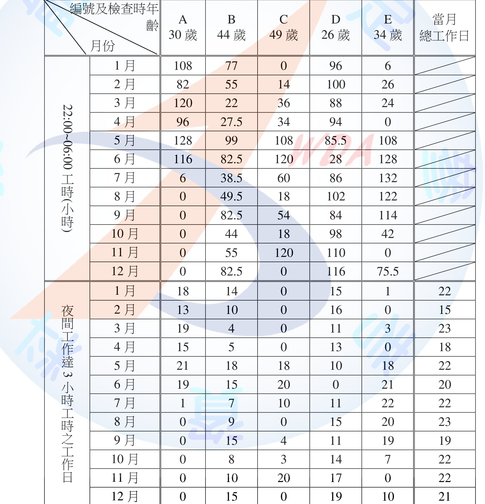
(一) 長期夜間工作認定與應接受特定健康檢查之人員
依現行《勞工健康保護規則》第2條第4款，「長期夜間工作」認定基準為前一年度（107年）符合下列情形之一者： ①於22:00至翌晨6:00期間工作3小時以上之工作日數，達當月工作日數二分之一，且累計達6個月以上；或 ②於22:00至翌晨6:00期間工作之工作時數，全年累計達700小時以上。
基準②：全年22:00~06:00累計工時 A：656小時；B：715小時；C：582小時；D：1,087.5小時；E：777.5小時。 故B、D、E三人全年累計工時均達700小時以上，符合基準②。
基準①：月工作日數達二分之一以上之月份數 逐月比對各勞工「夜間工作達3小時之工作日數」與「當月總工作日數之二分之一」： A：1至6月均達當月工作日二分之一以上，累計達6個月，符合基準①。 B：1、2、5、6、9、12月共6個月達標，符合基準①。 C：僅5、6、11月共3個月達標，未達6個月，不符合基準①（基準②亦未達700小時）。 D：除3、5、6月外其餘9個月均達標（3月11日／當月23日之半數11.5未達，5、6月亦未達），遠超6個月，符合基準①。 E：僅5、6、7、8、9月共5個月達標，未達6個月，不符合基準①（惟符合基準②）。
結論：A（僅符合基準①）、B（兩基準均符合）、D（兩基準均符合）、E（僅符合基準②）等4人於107年度已符合「長期夜間工作」認定，雇主應於108年度對A、B、D、E等4人依規定實施長期夜間工作健康檢查；C因兩項基準均未達成，不屬應施行對象。
(二) 5位勞工健康檢查項目是否有差異
無差異。長期夜間工作健康檢查之檢查項目，依《勞工健康保護規則》第18條規定，係依固定之法定附表（附表十一）所定項目辦理，該項目係因應夜班工作對代謝、心血管等系統之共通健康風險而訂定，並非依勞工年齡分層設計不同項目（年齡分層僅適用於同規則第17條之「一般健康檢查」實施頻率，60歲以上者每年1次、40歲以上未滿60歲者每2年1次、未滿40歲者每3年1次，此僅影響一般健康檢查之「頻率」而非長期夜間工作健康檢查之「項目」）。故本題A（30歲）、B（44歲）、C（49歲，惟C不符合施檢資格）、D（26歲）、E（34歲）等勞工，凡屬應施行長期夜間工作健康檢查者（A、B、D、E），其檢查項目應完全相同，不因年齡差異而有不同；惟其各自「一般健康檢查」之實施頻率仍會因年齡分層而不同（B、C因已滿40歲，一般健康檢查頻率為每2年1次，其餘未滿40歲者為每3年1次），此屬另一制度之差異，與本次長期夜間工作特定健檢項目無涉。
本題屬跨月份數據判讀之綜合分析題，作答關鍵在於「兩項基準擇一即符合」之邏輯（並非須同時符合），常見失分為僅檢核累計工時（基準②）而忽略以「月工作日數達二分之一」之基準①逐月判讀，導致遺漏僅符合單一基準之勞工（如本題A僅符合基準①、E僅符合基準②，若疏忽任一基準即會誤判其資格）。第(二)小題常見誤答為以為年齡愈長需加做愈多檢查項目而判定「有差異」，實則長期夜間工作健康檢查項目本身為固定法定項目，不因年齡而生差異，此為易混淆一般健康檢查（依年齡分層）與特定夜間工作健康檢查（不依年齡分層，僅依是否符合長期夜間工作認定）兩制度之重要考點。
⚠️ 本詳解為 AI 彙整之參考擬答，非官方標準答案；法規內容以最新公告版本為準。
依特定化學物質危害預防標準，試回答下列問題： (一) 何謂「特定化學設備」?(2分) (二) 何謂「特定化學管理設備」?(2分) (三) 雇主對製造、處置或使用乙類物質、丙類物質或丁類物質之設備，或儲存可生成該物質之儲槽等，因改造、修理或清掃等而拆卸該設備之作業或必須進入該設備等內部作業時，應依規定採取適當之設備或措施，除派遣特定化學物質作業主管從事監督作業外，再列舉8項。(16分)
(一) 特定化學設備 指製造或處理、置放（處置）、使用丙類第一種物質、丁類物質之固定式設備。
(二) 特定化學管理設備 指特定化學設備中進行放熱反應之反應槽等，且有因異常化學反應等，致漏洩丙類第一種物質或丁類物質之虞者。
(三) 拆卸設備／進入設備內部作業應辦理事項（除派遣主管外，再列舉8項） 1. 決定作業方法及順序，於事前告知從事作業之勞工。 2. 確實將該物質自該作業設備排出。 3. 為使該設備連接之所有配管不致流入該物質，應將該閥、旋塞等設計為雙重開關構造或設置盲板等。 4. 前款設置之閥、旋塞應予加鎖或設置盲板，並將「不得開啟」之標示揭示於顯明易見之處。 5. 作業設備之開口部，不致流入該物質至該設備者，均應予開放。 6. 使用換氣裝置將設備內部充分換氣。 7. 以測定方法確認作業設備內之該物質濃度未超過容許濃度。 8. 供給從事該作業之勞工穿著不浸透性防護衣、防護手套、防護長鞋、呼吸用防護具等個人防護具。 （另尚有「拆卸盲板時應先確認滯留」及「設備內部應置緊急避難設備」2項，共法定11款。雇主在未確認該物質濃度未超過容許濃度前，應將「不得將頭部伸入設備內」之意旨告知作業勞工。）
本題考特定化學設備／管理設備定義（易與一般化學設備混淆，關鍵在「丙類第一種物質、丁類物質」及「放熱反應」）與拆卸清掃作業11款規定之精確記憶，作答時需注意「派遣主管」已被題目排除計分，須從其餘10款中列滿8項才能拿滿分。
試回答下列問題： (一) 說明預防重複性作業等促發肌肉骨骼疾病之危害評估方法。(4分) (二) 何謂熱壓力(heat stress)？並說明熱壓力生理症狀。(4分) (三) 何謂輪班制？(4分) (四) 說明游離輻射暴露影響健康之確定效應(non-stochastic effects)與機率效應(stochastic effects)。(4分) (五) 試就下列游離輻射暴露之健康效應，選擇一個主要的發生機轉。(4分) 健康效應：(1)皮膚灼傷(皮膚炎) (2)甲狀腺癌 (3)白血病(血癌) (4)白血球數減少 發生機轉：(A)確定效應(非隨機效應) (B)機率效應(隨機效應)
(一) 重複性作業肌肉骨骼疾病危害評估方法 1. 目視觀察法（Checklist）：以標準化檢核表（如OWAS姿勢分析法）現場觀察記錄作業姿勢、施力與頻率。 2. 量表評估法：採用RULA、REBA等上肢/全身姿勢評估工具，依關節角度給予風險評分。 3. 舉重/搬運公式法：採用NIOSH舉重方程式評估搬運重物之建議重量界限（RWL）與舉重指數（LI）。 4. 自覺症狀調查法：以肌肉骨骼症狀調查表（如北歐問卷）蒐集勞工主觀不適部位與頻率，輔助辨識高風險作業。
(二) 熱壓力（Heat stress）與生理症狀 熱壓力係指作業環境中之熱負荷（含氣溫、濕度、風速、輻射熱）加上勞工體內代謝產熱，兩者加總對人體體溫調節系統所造成之總負荷。 生理症狀： 1. 熱痙攣：大量流汗導致電解質流失，引發肌肉抽搐。 2. 熱衰竭：大量出汗、脫水造成頭暈、噁心、心跳加速、皮膚濕冷。 3. 熱昏厥：周邊血管擴張致腦部供血不足而暈厥。 4. 熱中暑：體溫調節失效，核心體溫急遽升高、意識不清，屬致命急症。
(三) 輪班制 指事業單位為維持生產或服務之連續性，將全日工作時間劃分為早、中、晚（夜）等不同班次，由勞工分組於不同時段輪流交替工作之工作制度；輪班（尤其夜班）易使勞工生理時鐘紊亂，為異常工作負荷促發疾病之重要風險因子之一。
(四) 確定效應與機率效應 1. 確定效應（非隨機效應）：指導致組織或器官功能損傷之效應，其嚴重程度隨劑量增加而加重，通常有劑量低限值（閾值），低於閾值不致發生。 2. 機率效應（隨機效應）：指致癌效應及遺傳效應，其發生機率與劑量大小成正比而與嚴重程度無關，無劑量低限值，理論上任何劑量均有一定發生機率。
(五) 健康效應配對 1A（皮膚灼傷／皮膚炎為組織功能損傷，屬確定效應） 2B（甲狀腺癌為致癌效應，屬機率效應） 3B（白血病／血癌為致癌效應，屬機率效應） 4A（白血球數減少為造血組織功能損傷，屬確定效應）
熱壓力與熱危害3～4級症狀（熱痙攣、熱衰竭、熱昏厥、熱中暑）常混淆其成因與嚴重度排序，作答宜依嚴重程度遞增說明。確定效應／機率效應配對之關鍵判斷原則為「是否為致癌／遺傳效應」，凡致癌症皆屬機率效應，其餘器官功能性損傷（灼傷、血球減少）屬確定效應。
您是某事業單位的職業安全衛生管理人員，依異常工作負荷促發疾病預防指引進行相關措施之規劃，試回答下列問題： (一) 在綜合辨識及評估健康高風險群的步驟，包含那兩個評估面向(流程)？(4分) (二) 試列舉4項執行上述評估面向之工具？(8分) (三) 使高風險群勞工與醫師面談時，試列舉4項應提供給醫師之資訊？(8分)
(一) 兩個評估面向 1. 工作負荷評估：針對工作型態（如加班時數、輪班、夜間工作、長時間工作等）進行異常工作負荷程度之辨識。 2. 個人健康狀況評估：綜合勞工健康檢查結果、疾病史、生活習慣等個人相關因子，評估其罹病風險。
(二) 執行上述評估面向之工具（列舉4項） 1. 工作過負荷之工作時間紀錄與加班工時統計分析。 2. 疲勞或睡眠品質自覺症狀調查量表。 3. 健康檢查結果分析（含異常項目、慢性病史、家族病史歸戶）。 4. 醫師/護理人員之個人健康風險評估問卷或面談紀錄表。
(三) 高風險群勞工與醫師面談應提供之資訊（列舉4項） 1. 勞工之工作型態、工作時間與加班紀錄（含近期加班工時變化）。 2. 勞工最近之健康檢查結果與相關疾病史、用藥紀錄。 3. 勞工自覺症狀（如睡眠品質、疲勞程度）調查結果。 4. 工作現場作業內容說明與可能之異常工作負荷因子（如輪班頻率、精神緊張程度）。
本題重點在「工作負荷」與「個人健康」兩面向缺一不可，僅列健康檢查而漏列工作型態評估為常見失分點；醫師面談資訊應同時涵蓋「量」（工時、加班數據）與「質」（自覺症狀、疾病史），避免只列健檢報告而遺漏工作現場資訊。
試回答下列問題： (一) 有關配戴呼吸防護具之密合度測試(fit test)： 1. 試列舉4種測試時機。(4分) 2. 試列舉4種受測者於測試時之搭配動作。(4分) (二) 依職業安全衛生設施規則之規定，雇主使勞工使用呼吸防護具時，應指派專人採取那些呼吸防護措施，試列舉4項。(4分) (三) CNS 45001:2018 指組織應在相關功能及水準前提下，建立各職業安全衛生管理目標，以維持及持續改進職業安全衛生管理系統與職業安全衛生績效，試列舉4項職業安全衛生目標應有之特性。(8分)
(一)-1 密合度測試時機（列舉4種） 1. 勞工首次配戴呼吸防護具（面體）前。 2. 更換不同廠牌、型式或尺寸之面體時。 3. 定期（如每年）重新測試，確認密合度持續有效。 4. 勞工臉型有明顯改變時（如體重顯著增減、牙齒缺失、臉部外傷或手術等影響面體密合之情形）。
(一)-2 測試時搭配動作（列舉4種） 1. 正常呼吸。 2. 深呼吸。 3. 左右轉頭。 4. 上下點頭。 （另尚有說話朗讀、彎腰、原地踏步等動作可供選列。）
(二) 呼吸防護措施（列舉4項） 1. 危害辨識及暴露評估。 2. 防護具之選擇。 3. 防護具之使用。 4. 防護具之維護及管理。 （另尚有「呼吸防護教育訓練」及「成效評估及改善」共6項，勞工人數達200人以上者應訂定呼吸防護計畫並據以執行。）
(三) 職業安全衛生目標應有之特性（列舉4項） 1. 應與職業安全衛生政策方向一致。 2. 應可衡量（若可行）或至少可評估其績效。 3. 應納入適用之法令要求事項及其他要求事項之考量。 4. 應經溝通，並視需要適時檢討更新。
密合度測試時機常見漏答「臉型改變」；搭配動作須為受測者於測試艙內執行之標準化動作，不可誤答為「工作中實際動作」。第(三)小題屬管理系統條文記憶題，作答宜緊扣SMART原則（一致性、可衡量性、法規遵循、溝通更新）鋪陳。
依職業安全衛生設施規則第300條之1條規定，雇主對於勞工8小時日時量平均音壓級超過85分貝(dB)或暴露劑量超過50%之工作場所，應採取聽力保護措施，為評估下列情境之勞工聽力保護是否足夠，試依下表完成相關計算及評估。(列出至小數點後1位) (參考公式：TWA=16.61×log(D/100)+90，複音源10×log(10^L1/10+10^L2/10+…+10^Ln/10)) (一) 試計算A權衡電網8音度頻帶音壓階總和。(5分) (二) 試計算A權衡電網8音度頻帶耳內音壓階總和。(5分) (三) 評估聽力保護是否足夠?(5分) (四) 若勞工未戴聽力防護具暴露於100dBA噪音環境下1小時，暴露於92dBA環境下3小時，97dBA環境下3小時，95dBA環境下1小時，8小時時量平均音壓級為何?(5分)
8音度頻帶：63/125/250/500/1000/2000/4000/8000 Hz 工作環境噪音音壓級：95/92/95/97/97/102/97/92 A權衡電網校正值：-26/-16/-9/-3/0/+1/+1/-1 防護具平均衰減值(dB)：9/10/14/19/22/28/37/34 防護具標準差(dB)：4/3/3/3/3/4/4/4 防護具假設保護值(dB)：5/7/11/16/19/24/33/30
(一) A權衡8音度頻帶音壓階總和
各頻帶A權衡音壓階＝工作環境噪音音壓級＋A權衡校正值：
| 頻率(Hz) | 63 | 125 | 250 | 500 | 1000 | 2000 | 4000 | 8000 |
|---|---|---|---|---|---|---|---|---|
| A權衡SPL(dBA) | 69 | 76 | 86 | 94 | 97 | 103 | 98 | 91 |
以複音源公式加總：ΣL＝10×log(Σ10^(Li/10)) ＝10×log(10^6.9+10^7.6+10^8.6+10^9.4+10^9.7+10^10.3+10^9.8+10^9.1) ＝10×log(3.549×10^10) ＝10×10.550 ＝105.5 dBA
(二) A權衡8音度頻帶耳內音壓階總和
假設8音度頻帶耳內音壓階＝A權衡頻帶音壓階－防護具假設保護值：
| 頻率(Hz) | 63 | 125 | 250 | 500 | 1000 | 2000 | 4000 | 8000 |
|---|---|---|---|---|---|---|---|---|
| 耳內音壓階(dBA) | 64 | 69 | 75 | 78 | 78 | 79 | 65 | 61 |
以複音源公式加總： ΣL＝10×log(10^6.4+10^6.9+10^7.5+10^7.8+10^7.8+10^7.9+10^6.5+10^6.1) ＝10×log(2.521×10^8) ＝10×8.402 ＝84.0 dBA
(三) 聽力保護是否足夠
依《職業安全衛生設施規則》第300條規定，噪音暴露容許標準為8小時日時量平均音壓級90分貝。經防護具衰減後，勞工耳內實際暴露音壓級為84.0 dBA，已低於90dBA之法定容許暴露標準，亦低於一般建議之85dBA防護目標，故評估聽力保護足夠。
(四) 8小時時量平均音壓級（TWA）
先求各暴露音壓級之容許暴露時間 T＝8／2^((L－90)/5)： - 100dBA：T＝8／2^2＝8／4＝2小時 - 92dBA：T＝8／2^0.4＝8／1.3195＝6.063小時 - 97dBA：T＝8／2^1.4＝8／2.6390＝3.031小時 - 95dBA：T＝8／2^1.0＝8／2＝4小時
噪音暴露劑量 D＝Σ(Ci／Ti)×100%： ＝(1/2＋3/6.063＋3/3.031＋1/4)×100% ＝(0.500＋0.495＋0.990＋0.250)×100% ＝223.4%
TWA＝16.61×log(D/100)＋90＝16.61×log(2.234)＋90＝16.61×0.3492＋90＝5.80＋90＝95.8 dBA
複音源疊加須用能量（10^(L/10)）加總後取對數，不可直接對dB值做算術平均，此為最常見錯誤。容許暴露時間公式T=8/2^((L-90)/5) 與題目所給TWA公式16.61×log(D/100)+90互為對應關係（16.61＝5/log2），驗算時可交叉核對兩式常數是否一致以確認公式代入正確。
⚠️ 本詳解為 AI 彙整之參考擬答，非官方標準答案；法規內容以最新公告版本為準。
燃煤工廠之煙道氣（廢氣）簡易處理流程如下圖，試回答下列問題： (一) 辨識該缺氧危險場所（鍋爐內部）可能之化學性危害？(6分) (二) 工廠欲維持鍋爐正常運轉，需定期進行燃煤鍋爐內部清理，作業時若使用四用氣體測定儀器實施該缺氧危險場所（鍋爐內部）環境測定，其限制為何？〔四用氣體測定儀器（氧氣、一氧化碳、硫化氫及可燃性氣體(%)）〕(4分) (三) 若要使勞工進入燃煤鍋爐內部從事清理作業，請依職業安全衛生設施規則之規定，列舉5項局限空間危害防止計畫應訂定之事項。(10分)
(一) 鍋爐內部（缺氧危險場所）可能之化學性危害（列舉） 1. 燃燒不完全產生之一氧化碳（CO）中毒危害。 2. 燃料含硫份燃燒產生之二氧化硫（SO2）等刺激性氣體危害。 3. 燃燒生成氮氧化物（NOx）之刺激性氣體危害。 4. 二氧化碳（CO2）等惰性氣體蓄積，稀釋氧氣濃度導致缺氧危害。 5. 未完全燃燒殘留可燃性氣體（CO、甲烷等）之火災、爆炸危害。 6. 爐灰、飛灰等燃燒殘留物中重金屬（如砷、鉛、汞等）粉塵之吸入危害。
(二) 四用氣體測定儀器之限制 1. 感測項目僅涵蓋氧氣、一氧化碳、硫化氫及可燃性氣體（%LEL）4種，無法偵測鍋爐內部可能存在之二氧化硫、氮氧化物等其他有害氣體，故不能完整代表該場所之全部化學性危害。 2. 可燃性氣體感測器僅以單一標準氣體（通常為甲烷或戊烷）校正之相對百分比（%LEL）表示，對不同可燃性氣體成分之靈敏度不同，可能產生量測誤差；且感測器易受硫化氫、矽化物等毒性氣體交叉干擾或中毒而失準，須於使用前依原廠規定校正並定期維護。
(三) 局限空間危害防止計畫應訂定之事項（列舉5項） 1. 局限空間內危害之確認。 2. 局限空間內氧氣、危險物、有害物濃度之測定。 3. 通風換氣實施方式。 4. 電能、高溫、低溫與危害物質之隔離措施及缺氧、中毒、感電、塌陷、被夾、被捲等危害防止措施。 5. 作業方法及安全管制作法。 （另尚有「進入作業許可程序」「測定儀器、通風換氣、防護與救援設備之檢點及維護方法」「作業控制設施及作業安全檢點方法」「緊急應變處置措施」共9款，任列5項即符合本題要求。）
本題化學性危害易與「缺氧」（屬物理性/窒息性危害）混淆作答，需扣緊「化學性」，聚焦燃燒產物（CO、SO2、NOx）及殘留可燃氣體。四用氣體測定儀限制之核心考點為「僅偵測4項指定氣體，無法涵蓋鍋爐煙道氣中其他有害物質」。局限空間危害防止計畫9款事項為固定考點，務必熟記全文以利列舉。
你是一家企業的職業衛生管理師，要依職業安全衛生法規定辦理預防勞工於執行職務時遭受不法侵害，你參考勞動部職業安全衛生署發布之「執行職務遭受不法侵害預防指引」著手規劃。在規劃時，希望透過工作場所適當之配置規劃，降低或消除不法侵害之危害，請針對所屬事業單位之工作場所配置的「物理環境相關因子」和「工作場所設計」2個面向進行檢視，並就每個面向各列舉5項檢視項目(10分)，和各檢視項目對應之採行措施1個(10分)。
(一) 物理環境相關因子（檢視項目與對應措施各5項） 1. 工作場所照明是否充足 → 增設或加強照明設備，尤其出入口、通道及偏僻角落之照明亮度。 2. 有無監視死角 → 裝設閉路電視監視系統（CCTV），並定期保存及檢視錄影紀錄。 3. 是否設有緊急通報或求救裝置 → 設置警報器、緊急按鈕或連線保全系統之通報裝置。 4. 出入口或門禁管制是否適當 → 設置門禁管制系統，限制非授權人員自由進出。 5. 現場物品擺設有無阻礙逃生或可作為攻擊工具之虞 → 調整家具及物品擺設，保持逃生動線淨空，並移除易被利用為攻擊工具之物品。
(二) 工作場所設計（檢視項目與對應措施各5項） 1. 是否有明顯之逃生標示與動線指引 → 於明顯處張貼逃生路線圖及安全門標示。 2. 獨立或偏遠作業空間是否易使勞工孤立無援 → 避免安排單獨值班，或增設對講機、通報系統與其他人員保持聯繫。 3. 服務櫃檯與服務對象之間是否有適當之安全屏障或距離 → 設置防護玻璃、加高櫃檯或保持適當安全距離之空間設計。 4. 逃生動線是否暢通、是否具備多重出口 → 檢視並確保至少一條以上緊急逃生路線隨時暢通無阻。 5. 停車場、周邊環境動線是否安全 → 加強周邊環境定時巡查、增設照明與監視器。
本題屬「適當配置作業場所」措施之細部展開，作答須注意「檢視項目」（現況盤點問句）與「對應措施」（具體改善作為）須一一對應，不可只列措施未列檢視項目，或兩面向內容互相混寫（如將「工作場所設計」之逃生動線誤植於「物理環境」）。
請回答下列問題： (一) CNS 45001職業安全衛生管理系統提及組織應建立過程，以實施及管制所規劃但會影響職業安全衛生績效之臨時性及永久性的變更，試舉例說明變更管理包含之事項(6分)，並說明變更後應採取之必要措施(4分)。 (二) 試述呼吸防護具佩戴密合度之定性與定量測試實施方式。(10分)
(一) 變更管理包含之事項與變更後必要措施
變更管理事項舉例（6分）： 1. 新產品、原材料、製程、作業程序、設備或機具之導入或改變。 2. 職業安全衛生相關法令、標準或其他要求事項之修訂。 3. 有關危害之新知識或新資訊之更新（如新化學品毒理資訊）。 4. 組織架構、人力配置或工作場所配置之變更（如人員異動、外包、廠房佈置調整）。
變更後應採取之必要措施（4分）： 1. 於變更實施前進行風險評估，辨識新增或改變之危害。 2. 依評估結果檢討修正相關作業程序、標準作業程序（SOP）及管理文件。 3. 對受影響之勞工實施必要之教育訓練及溝通。 4. 追蹤確認變更後之管制措施持續有效，並納入定期查核。
(二) 呼吸防護具密合度測試（定性與定量）
定性測試（QLFT, Qualitative Fit Test）：適用於半面體防護具。以受測者主觀感官反應判定，常用方法有苦味劑（Bitrex）法、糖精（Saccharine）法或刺激煙霧法。受測者配戴防護具後，於測試罩內噴入測試劑，並依序執行正常呼吸、深呼吸、左右轉頭、上下點頭、說話朗讀、彎腰、原地踏步等標準化動作；若受測者於整個測試過程均未感覺到苦味、甜味或刺激感，即判定該面體密合度通過（Pass/Fail），本法無法量化實際防護程度。
定量測試（QNFT, Quantitative Fit Test）：適用於半面體及全面體。以儀器（如粒子計數器PortaCount）直接量測面體內、外空氣中微粒濃度比值，計算出適配係數（Fit Factor）。受測者同樣配戴防護具後執行前述標準化動作，儀器於各動作過程連續採樣面體內外濃度並計算幾何平均適配係數，須達到規定之最低適配係數（如全面體須達500以上、半面體須達100以上）方判定通過，本法可提供客觀量化之防護績效數據。
變更管理易漏答「組織架構／人力配置變更」此類軟性變更（僅寫設備、製程等硬體變更），實務上人員異動、外包亦屬變更管理範疇。定性與定量測試最大差異在於「主觀判定」vs「客觀量化」，並須留意定性測試僅適用半面體，全面體僅能採定量測試。
某事業單位購得25公斤桶裝12%次氯酸鈉溶液(sodium hypochlorite solution)，將稀釋用於一般環境消毒。查詢危害物資料庫得知此物質濃度達5%時開始有皮膚刺激性，達10%時有皮膚腐蝕性，pH值約8.4，假設此危害性化學品之危害分類，包括急毒性物質第5級（吞食）、金屬腐蝕物第1級、腐蝕/刺激皮膚物質第1級與嚴重損傷/刺激眼睛物質第1級、水環境之危害物質（急毒性）第1級。 (一) 依危害性化學品標示及通識規則之規定，供應商在安全資料表中，對此危害性化學品（12%次氯酸鈉溶液）之皮膚危害可能性之標示，應選用下列那個危害圖式？(2分) (二) 對此危害性化學品之危害通識要項，應選用下列那個警示語？(2分) (三) 若要將購得之次氯酸鈉溶液稀釋為500 ppm或1000 ppm作為環境消毒之用，雇主應提供那些個人防護具或設備供作業勞工使用，以作為皮膚及眼睛之暴露預防措施？(10分) (四) 此危害性化學品為水環境之危害物質，若操作時不慎造成大量洩漏是否應儘速以酸中和？（請先回答是或否，再說明理由）(2分) (五) 敵腐靈(diphoterine solution)或六氟靈(hexafluorine solution)等，是否均適合用於此危害性化學品意外暴露之皮膚緊急沖淋除污？（請先回答是或否，再說明理由）(4分)
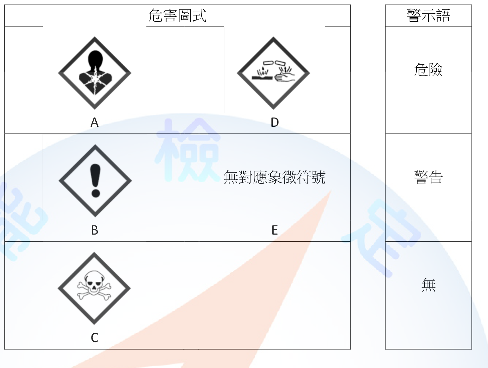
(一) 皮膚危害可能性應選用之危害圖式 依其「腐蝕/刺激皮膚物質第1級」分類，應選用GHS腐蝕性圖式（圖式內容為酸液腐蝕試管及手掌之圖案，即俗稱「腐蝕性」象徵符號）。對照原卷所附選項圖表，腐蝕性圖式（警示語欄對應「危險」列）標示代號為D，故本小題應選D。
(二) 危害通識要項應選用之警示語 本品同時具「金屬腐蝕物第1級」「腐蝕/刺激皮膚物質第1級」「嚴重損傷/刺激眼睛物質第1級」等第1級危害分類，依GHS規定，凡任一項危害分類屬第1級者，警示語應選用最嚴重等級之「危險」。
(三) 皮膚及眼睛暴露預防之個人防護具或設備（列舉） 1. 化學防護手套（選用可耐次氯酸鹽腐蝕之材質，如丁腈橡膠、氯丁橡膠或PVC手套）。 2. 化學防護衣或防潑濺圍裙（不透水材質，防止稀釋作業時腐蝕性溶液噴濺至皮膚及衣物）。 3. 防化學噴濺護目鏡或全罩式防護面罩（防止溶液噴濺入眼）。 4. 防滑、防水之安全鞋或膠鞋（避免溶液滲入鞋內腐蝕皮膚）。 5. 作業現場應設置緊急沖淋設備及洗眼器，供意外接觸時立即沖洗使用。
(四) 大量洩漏是否應儘速以酸中和 否。次氯酸鈉溶液為氧化性、腐蝕性物質，若與酸（如鹽酸）混合，會產生化學反應釋出有毒氯氣（Cl2），造成更嚴重之呼吸道及全身性中毒危害。洩漏處理應以大量清水稀釋沖洗、圍堵並以適當中和劑（如亞硫酸鈉、亞硫酸氫鈉等還原劑，於專業人員指導下進行）處理，並避免與酸性物質接觸。
(五) 敵腐靈、六氟靈是否均適合用於此物質之皮膚緊急沖淋除污 是。敵腐靈（Diphoterine）與六氟靈（Hexafluorine）均為兩性（amphoteric）、低滲透壓之化學灼傷專用沖洗液，兼具酸鹼中和及螯合作用，可同時適用於酸性、鹼性及氧化性（如次氯酸鹽）化學品之皮膚意外暴露沖淋除污，並可加速有害物質自皮膚組織移除、降低灼傷深度。惟仍應先以大量清水沖洗，並於使用後儘速送醫評估。
警示語判定原則為「就該化學品所有危害分類中，取最嚴重（危險＞警告）者標示」，本題有多項第1級分類，故應選「危險」而非「警告」。第(四)(五)小題均屬「是否」判斷＋理由說明題型，關鍵化學原理為「次氯酸鹽＋酸→產生氯氣」不可用酸中和，以及「敵腐靈/六氟靈為兩性沖洗液，同時適用酸鹼氧化性化學品」。
某鋼鐵廠從事鋼鐵熔煉作業勞工，其作業場所各工作時段之溫度測值如下表，試依高溫作業勞工作息時間標準之規定，回答下列問題。（註：本題為假設性題目，與實務上之工作情境不一定相符） (一) 本項作業是否屬高溫作業？（7分，未列出計算結果者全部不予計分，計算至小數點後2位） (二) 若勞工為高溫作業（假設性提問，與前小題無關），則依勞工作業類型，其為連續暴露或間歇暴露？(1分) (三) 續前小題(二)，你是該廠之職業衛生管理師，試規劃該名勞工之作業及休息時間。（12分；註：高溫作業勞工如為連續暴露達1小時以上者，以每小時計算其暴露時量平均綜合溫度熱指數，間歇暴露者，以2小時計算其暴露時量平均綜合溫度熱指數）
工作時段：1. 08:00-08:30(30分,鋼鐵熔煉作業，鏟掘推全身運動，自然濕球26.7℃/黑球36.7℃) 2. 08:30-08:50(20分,同上，25.6℃/36.1℃) 3. 08:50-09:05(15分,休息，22.8℃/26.7℃) 4. 09:05-09:30(25分,同上作業，25.6℃/35.0℃) 5. 09:30-10:00(30分,同上作業，26.7℃/36.7℃) 6. 10:00-12:00(120分,辦公室文書處理，坐姿抄寫，22.8℃/26.7℃) 7. 12:00-13:30午休 8. 13:30-15:30(120分,監控室作業，立姿操控儀器，22.0℃/28.0℃) 9. 15:30-17:30(120分,預熱作業，走動提舉10公斤重物，26.7℃/36.7℃)
(一) 是否屬高溫作業
本場所為室內（爐體內部及廠房內），無日曬情形，綜合溫度熱指數（WBGT）計算式採： WBGT＝0.7×自然濕球溫度＋0.3×黑球溫度
鋼鐵熔煉作業（08:00-10:00，時段1～5）各時段WBGT： - 時段1（30分）：0.7×26.7＋0.3×36.7＝18.69＋11.01＝29.70℃ - 時段2（20分）：0.7×25.6＋0.3×36.1＝17.92＋10.83＝28.75℃ - 時段3休息（15分）：0.7×22.8＋0.3×26.7＝15.96＋8.01＝23.97℃ - 時段4（25分）：0.7×25.6＋0.3×35.0＝17.92＋10.50＝28.42℃ - 時段5（30分）：0.7×26.7＋0.3×36.7＝18.69＋11.01＝29.70℃
時量平均WBGT＝Σ(WBGTi×時間i)／Σ時間i ＝(29.70×30＋28.75×20＋23.97×15＋28.42×25＋29.70×30)／120 ＝(891.00＋575.00＋359.55＋710.50＋891.00)／120 ＝3427.05／120 ＝28.56℃
鋼鐵熔煉作業「從事鏟、掘、推全身運動」依規定屬「重工作」，其連續作業規定值為25.9℃。本案時量平均WBGT 28.56℃已超過25.9℃，故本項作業屬高溫作業。
(二) 連續暴露或間歇暴露
該勞工全日工作型態於高溫環境（鋼鐵熔煉作業、預熱作業）與非高溫環境（辦公室文書處理、監控室作業）間交替進行，並非長時間持續處於同一高溫環境，故其熱暴露型態屬間歇暴露。
(三) 作業及休息時間規劃
依間歇暴露規定，以每2小時計算時量平均WBGT，並依作業種類（工作負荷）對照規定值分配作息：
| 時段 | 作業內容 | 工作負荷 | 時量平均WBGT | 對照重/中/輕工作規定值 | 建議作息 |
|---|---|---|---|---|---|
| 08:00-10:00 | 鋼鐵熔煉作業 | 重工作 | 28.56℃ | 連續25.9／25%休27.9／50%休30.0 | 28.56介於27.9與30.0間，須採50%作業50%休息（每小時工作30分、休息30分） |
| 10:00-12:00 | 辦公室文書處理 | 輕工作 | 0.7×22.8＋0.3×26.7＝23.97℃ | 連續作業規定值30.6 | 23.97＜30.6，得連續作業，無須額外熱休息 |
| 12:00-13:30 | 午休 | － | － | － | 非工作時間 |
| 13:30-15:30 | 監控室作業 | 輕工作 | 0.7×22.0＋0.3×28.0＝23.80℃ | 連續作業規定值30.6 | 23.80＜30.6，得連續作業 |
| 15:30-17:30 | 預熱作業 | 中度工作 | 0.7×26.7＋0.3×36.7＝29.70℃ | 連續28.0／25%休29.4／50%休31.1 | 29.70介於29.4與31.1間，須採50%作業50%休息（每小時工作30分、休息30分） |
綜上，該勞工當日應規劃：08:00-10:00鋼鐵熔煉作業及15:30-17:30預熱作業時段均採每小時工作30分鐘、休息30分鐘之50/50作息；10:00-12:00辦公室作業及13:30-15:30監控室作業因WBGT低於輕工作連續作業規定值，得維持連續作業。
本題須先正確判斷工作負荷類型（重/中/輕工作三者定義為固定考點），再依時量平均WBGT查表比對，關鍵在於「找出剛好大於等於計算值的門檻欄位」，而非直接套用連續作業值；WBGT介於兩門檻之間時，應採較嚴格（休息比例較高）之一方以確保合規。另須留意重工作連續作業規定值為25.9℃而非中度工作之28.0℃，兩者易混淆。
⚠️ 本詳解為 AI 彙整之參考擬答，非官方標準答案；法規內容以最新公告版本為準。
你擔任事業單位的職業衛生管理師，與從事勞工健康服務之醫護人員共同規劃執行傳染病預防及其相關健康管理事項，請回答下列問題： (一) 請就下表所列2種傳染病，分別簡述傳染途徑和預防措施（退伍軍人症、B型肝炎）(8分) (二) 為保護參與照護嚴重特殊傳染性肺炎的醫事人員，應採取正確、有效的防護措施，依據呼吸防護具選用參考原則、呼吸防護計畫及採行措施指引等，若選用N95口罩供人員於作業時戴用： 1. 請簡述密合度測試的4個時機？（8分） 2. 請簡述負壓檢點和正壓檢點的執行方式？（4分）
(一) 傳染病傳染途徑與預防措施
退伍軍人症（Legionnaires' disease） - 傳染途徑：吸入含退伍軍人菌（Legionella）之氣霧或飛沫，感染源多為受污染之空調冷卻水塔、中央空調管路、蓮蓬頭、噴霧設備等滋生退伍軍人菌之水源，人與人間不會相互傳染。 - 預防措施：定期清潔、消毒空調冷卻水塔及中央空調水系統；監測及管理水溫（避免長時間停留於菌種易滋生之溫域）與餘氯濃度；蓮蓬頭、水龍頭等用水設備定期清潔消毒，並避免用水設備長期閒置滯留死水。
B型肝炎 - 傳染途徑：經由血液、體液傳染，包括破損皮膚或黏膜接觸帶原者血液/體液、共用針具、母嬰垂直傳染等；醫事人員可能因針扎意外或血液暴露而感染。 - 預防措施：接種B型肝炎疫苗建立保護力；落實標準防護措施（戴手套、正確處理尖銳醫療器械、避免針扎）；一旦發生針扎或血液暴露，應立即通報並依感染管制流程處理，必要時注射免疫球蛋白並追蹤檢驗。
(二)-1 N95口罩密合度測試之4個時機 1. 勞工首次配戴該款式口罩（面體）前。 2. 更換不同廠牌、型式或尺寸之口罩時。 3. 定期（如每年）重新測試，以確認密合度持續有效。 4. 勞工臉型有明顯改變時（如體重顯著增減、臉部外傷、手術或牙齒缺失等影響密合度之情形）。
(二)-2 負壓檢點與正壓檢點執行方式 - 負壓檢點：配戴N95口罩後，以雙手掌完全遮蔽口罩濾材表面（不遮蔽呼氣閥），緩慢用力吸氣，若口罩因負壓而略微塌陷貼合臉部且無漏氣感覺，表示密合度良好。 - 正壓檢點：配戴口罩後，以雙手完全遮蔽口罩表面，緩慢用力吐氣，若口罩周緣略微鼓起且無明顯漏氣（無氣流由邊緣逸出），表示密合度良好。
退伍軍人症與一般飛沫/接觸傳染疾病不同，其傳染途徑為「氣霧吸入」而非「人傳人」，是常見誤答點；預防措施須緊扣「水系統管理」而非個人防護具。密合度測試時機常見漏答「臉型改變」；正負壓檢點方向（負壓吸氣塌陷、正壓吐氣鼓起）容易顛倒作答，需特別注意。
試回答下列有關肌肉骨骼疾病之預防或診斷的問題： (一) 依職業安全衛生設施規則規定，雇主使勞工從事重複性之作業，為避免勞工因姿勢不良、過度施力及作業頻率過高等原因，促發肌肉骨骼疾病，請列出除了「其他有關安全衛生事項。」，其他應採取之危害預防措施。（8分） (二) 職業病連連看：勞工從事下列作業或工作時，分別可能引起所列何種肌肉骨骼疾病?(12分)（答題方式如A-1-甲）
作業說明： A. 電子廠流水線作業勞工，徒手拿取小零件以旋入或按壓方式組裝電子零件 B. 植物染作業勞工以雙手甩開染色完成之布團，並懸吊至高位繩架 C. 裝修作業勞工於工地組裝方塊地板或地毯 D. 搬運作業勞工以頭、頸及上背等部位扛揹重物 E. 園藝作業勞工以圓鍬鏟土挖掘渠道或坑洞 F. 營建裝修作業勞工手持氣動工具研磨人造石材
疾病名稱：1.白指症 2.肘外側上髁炎(肌腱炎) 3.旋轉肌袖症候群 4.半月狀軟骨病變 5.腕道症候群 6.頸部椎間盤突出 不良作業姿勢或動作：甲.具有跪姿、蹲姿或爬行等工作姿勢 乙.長期在工作中從事負重於單肩、雙肩、或頭部的重複性動作 丙.高度重複性或持續性肩部不良姿勢 丁.腕部以不良的屈曲或伸展姿勢、長時間或反覆性動作 戊.手臂手腕反覆性施力、握拳旋轉或手部反覆性握、拉、推及提重物 己.振動能量由工具傳遞至施作者肢體
(一) 重複性作業危害預防措施（除「其他有關安全衛生事項」外） 1. 分析作業流程、內容及動作。 2. 確認人因性危害因子。 3. 評估、選定改善方法及執行。 4. 執行成效之評估及改善。 （事業單位勞工人數達100人以上者，應訂定人因性危害預防計畫並據以執行；未滿100人者，得以執行紀錄或文件代替。）
(二) 職業病連連看 - A-5-丁（電子廠流水線徒手旋入按壓組裝：手腕反覆屈伸動作→腕道症候群） - B-3-丙（植物染甩開布團並懸吊高位：肩部高度重複/持續不良姿勢→旋轉肌袖症候群） - C-4-甲（裝修工組裝地板/地毯：跪姿、蹲姿、爬行工作姿勢→半月狀軟骨病變） - D-6-乙（搬運工以頭頸上背扛揹重物：頭肩重複性負重動作→頸部椎間盤突出） - E-2-戊（園藝工圓鍬鏟土挖掘：手臂手腕反覆施力、握拉推提→肘外側上髁炎） - F-1-己（手持氣動工具研磨石材：振動能量傳遞肢體→白指症）
本題6組作業與疾病、姿勢動作恰為一對一配對，作答關鍵在辨識「振動工具→白指症」「跪蹲爬行→膝關節半月板病變」「肩部反覆抬舉/懸吊→旋轉肌袖症候群」「頭頸負重→頸椎間盤突出」「腕部反覆屈伸→腕道症候群」「肘部反覆施力→肌腱炎」等經典人因工程對應關係，避免因作業描述相似（如B之肩部動作與C之跪蹲）而誤植。
請回答下列問題： (一) 職業衛生管理師面對新作業環境、新製程、操作條件及新興化學品時，監測資料通常較少，可運用模式推估及代用推估之數據進行暴露評估。下表暴露推估模式中，那2項模式一般可作為初階之評估工具?(2分，答案填代號) 代號：A暴露空間模式 B飽和蒸氣壓模式 C二暴露區模式 D完全混合模式(考量背壓) E完全混合模式(指數衰減散布率) F作業場所無通風推估模式 G渦流擴散模式 (二) 作業環境監測測得8個勞工暴露於空氣中同一有害物之濃度實態：4、4、2、8、32、4、8、4 ppm。 1. 該場所暴露濃度之算數平均(AM)、幾何平均(GM)分別為多少?(2分) 2. 若X95代表暴露實態之第95百分位值，請由小到大排序AM、GM、X95。(2分) (三) 危害物累積在人體內之劑量反應常有四種觀察劑量：1.LOAEL(最低觀察危害反應劑量) 2.NOAEL(無觀察危害反應劑量) 3.NOEL(無觀察反應劑量) 4.LOEL(最低觀察反應劑量)。下圖為劑量反應示意圖，圖中有A、B、C、D等四個劑量值，請分別配對上述四種觀察劑量。(4分)
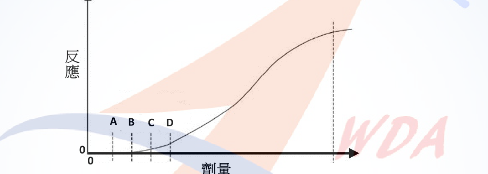
(四) 某作業場所防疫期間，清潔打掃勞工使用次氯酸漂白水消毒磁磚地板時，發現磁磚表面有碳酸鹽結垢，特同時混合鹽酸以溶解清除結垢，請問作業時可能會發生何種危害?(3分) (五) 何謂與勞工生理有關之熱指數?(3分) (六) 何謂與勞工生理有關之熱壓力?(4分)(一) 初階評估工具（2項） B（飽和蒸氣壓模式）、F（作業場所無通風推估模式） 此2種模式所需輸入參數最少（僅需物質物化性質或最保守之無通風假設），計算結果偏保守（高估暴露），適合於監測資料稀少之初始階段，作為快速篩選是否需進一步精確評估之工具；其餘模式（暴露空間模式、二暴露區模式、含背壓/衰減之完全混合模式、渦流擴散模式）需較多現場參數（如通風量、房間幾何、逸散速率等），屬中後階段之精細化評估工具。
(二)-1 算術平均與幾何平均
資料：4、4、2、8、32、4、8、4（n=8）
算術平均 AM＝Σxi／n＝(4+4+2+8+32+4+8+4)／8＝66／8＝8.25 ppm
幾何平均 GM＝(Πxi)^(1/n) Πxi＝4×4×2×8×32×4×8×4＝1,048,576＝2^20 GM＝(2^20)^(1/8)＝2^2.5＝5.66 ppm（＝4×√2≈5.657）
(二)-2 由小到大排序 資料呈右偏（對數常態）分佈，其第95百分位值必大於算術平均，算術平均又大於幾何平均，故排序為： GM ＜ AM ＜ X95（5.66 ＜ 8.25 ＜ X95）
(三) 劑量反應觀察劑量配對
依原圖，A、B、C、D四條虛線由左至右（即劑量由低至高）依序排列，且反應曲線約於B、C之間開始脫離0反應基線而逐漸上升。依毒理學劑量反應曲線之通用原則，四種觀察劑量之劑量大小關係由低至高依序為：
NOEL（無觀察反應劑量，最低）＜ NOAEL（無觀察危害反應劑量）＜ LOEL（最低觀察反應劑量）＜ LOAEL（最低觀察危害反應劑量，最高）
（原理：「反應」之定義較「危害反應」寬鬆，故「無反應」之劑量門檻低於「無危害反應」；同理「最低觀察反應」之劑量亦低於「最低觀察危害反應」。）
對應原圖由低至高排列之A、B、C、D四點，配對如下： - A ＝ NOEL（無觀察反應劑量） - B ＝ NOAEL（無觀察危害反應劑量） - C ＝ LOEL（最低觀察反應劑量） - D ＝ LOAEL（最低觀察危害反應劑量）
(四) 次氯酸漂白水混合鹽酸之危害 次氯酸鈉（漂白水）為含氯氧化劑，與鹽酸（強酸）混合會產生化學反應，釋出氯氣（Cl2），屬具強烈刺激性及毒性之氣體，勞工吸入可能造成眼睛、呼吸道黏膜之刺激灼傷，嚴重者導致化學性肺炎、肺水腫甚至死亡，此為典型之「漂白水加鹽酸產生毒氣」危害情境。
(五) 熱指數（Heat Index） 指綜合考量環境氣溫、濕度（部分指標並納入風速、輻射熱等因子）對人體生理熱負荷影響程度所建構之量化指標，用以評估熱環境對人體造成之熱危害風險及體感溫度，例如綜合溫度熱指數（WBGT）、體感溫度等，屬於「用以衡量熱環境危害程度」之工具性指標。
(六) 熱壓力（Heat stress） 指作業環境之熱負荷（氣溫、濕度、風速、輻射熱等）加上勞工從事工作所產生之代謝性產熱，兩者加總後對人體體溫調節系統所形成之總熱負荷，即人體為維持體溫恆定所須因應之總熱量負荷；熱壓力過高時，人體透過流汗、周邊血管擴張等生理反應調節體溫，若調節機制不堪負荷，即可能產生熱疾病（如熱衰竭、熱中暑）。
AM/GM/X95排序題之核心原理為「右偏分佈中，GM恆小於AM，而高百分位數（如X95）恆大於AM」，此為職業暴露統計評估之基本觀念。次氯酸鹽與酸混合產生氯氣為職業衛生考科經典情境題，務必掌握「漂白水不可與酸性清潔劑混用」之核心原則。熱指數與熱壓力常被混用，作答時應強調熱指數為「量化指標」，熱壓力為「環境熱負荷加代謝產熱之總負荷」本身，兩者概念層次不同。
污水處理廠曝氣室所需曝氣量每分鐘需8,000公升，有甲、乙兩種不同容量曝氣機可選擇；甲曝氣量每分鐘2,000公升、噪音80分貝，乙曝氣量每分鐘4,000公升、噪音88分貝，試回答下列問題： (一) 就噪音防制觀點，應如何選擇甲或乙曝氣機之組合，結果可使音源噪音最小又可達到所需曝氣量？(6分，請列出計算過程否則不予計分) (二) 若污水處理廠其音源噪音不得超過90分貝，又可達到所需曝氣量，有那些組合可選擇？(6分) (三) 承(二)分析結果並將其視為八小時日時量平均音壓級，雇主需執行那4種職業安全衛生法令規定事項？(8分)
(一) 噪音最小之曝氣機組合
設甲機台數為a、乙機台數為b，須滿足 2,000a＋4,000b＝8,000，即 a＋2b＝4（a、b為非負整數）。
可行組合共3種：(a,b)＝(4,0)、(2,1)、(0,2)。
多音源噪音疊加公式：L總＝10×log(Σ10^(Li/10))
三組合噪音由小到大為 86.02 dB ＜ 89.20 dB ＜ 91.01 dB，且三者均能達到每分鐘8,000公升曝氣量，故應選擇4台甲曝氣機（不用乙機）之組合，可使音源噪音最小（86.02 dB）。
(二) 噪音不超過90分貝之可選組合
由上列計算： - 4甲＋0乙：86.02 dB ≤ 90 dB，可選 - 2甲＋1乙：89.20 dB ≤ 90 dB，可選 - 0甲＋2乙：91.01 dB ＞ 90 dB，不可選
故可選擇之組合為：4台甲曝氣機，或2台甲曝氣機＋1台乙曝氣機。
(三) 應執行之職業安全衛生法令規定事項（列舉4項）
上列2種可選組合之噪音音壓級（86.02 dB、89.20 dB）均超過85分貝，若視為勞工8小時日時量平均音壓級，依《職業安全衛生設施規則》第300-1條規定，雇主應採取下列聽力保護措施（列舉4項）： 1. 噪音監測及暴露評估。 2. 噪音危害控制。 3. 防音防護具之選用及佩戴。 4. 聽力保護教育訓練。 （另尚有「健康檢查及管理」「成效評估及改善」共6項，執行紀錄應留存3年；事業單位勞工人數達100人以上者，應訂定聽力保護計畫並據以執行，未滿100人者得以執行紀錄或文件代替。）
多音源噪音合成須以能量（10^(L/10)）相加後取對數，不可用算術平均或直接相加分貝值；本題(一)(二)小題須完整列出3種可行整數組合並逐一計算比較，遺漏任一組合或算式即屬失分。(三)小題判定關鍵在於86.02dB與89.20dB均已超過85dB聽力保護措施啟動門檻（但未達90dB須採工程改善之門檻），故僅須列聽力保護措施而非要求降低音源。
某金屬製品工廠主要作業類型包括鑄造、拋光研磨及使用異丙醇(8小時日時量平均容許濃度=400 ppm)當作清潔劑，職業衛生管理師為評估廠內勞工危害物質暴露，進行勞工作業環境空氣中異丙醇及結晶型游離二氧化矽濃度之採樣分析，試回答下列問題。(20分，未列出計算結果者該小題全部不予計分，計算結果四捨五入至小數點後2位) (一) 某一工作天，規劃採集三個異丙醇空氣樣本，採集時間及異丙醇分析濃度分別為4小時(300 ppm)、2小時(450 ppm)、2小時(0 ppm)，則勞工作業場所8小時時量平均濃度為何？(2分) (二) 為確認前項數據，另安排時間再次採樣，採集時間及異丙醇分析濃度分別為2小時(350 ppm)、2小時(470 ppm)、2小時(500 ppm)、2小時(320 ppm)，則勞工作業場所8小時時量平均濃度為何？(2分) (三) 因應旺季需求，工廠要求勞工加班2小時，加班日採集時間及異丙醇分析濃度分別為4小時(350 ppm)、2小時(450 ppm)、2小時(460 ppm)、2小時(320 ppm)，則勞工異丙醇暴露是否超過容許濃度標準？(4分) (四) 欲評估勞工結晶型游離二氧化矽暴露情形，採全程連續多樣本採樣，分析結果如下表，則勞工結晶型游離二氧化矽之暴露是否違反勞工作業場所容許暴露標準？(12分)（計算時應計算濃度之95%可信度可信賴下限LCL95%，並假設結晶型游離二氧化矽採樣分析建議方法之總變異係數CVT值為13%，Y為嚴重度=X̄/PEL，X為樣本濃度，LCL95%=Y－1.645×CVT/√n，n為樣本數，空氣中第一種粉塵(可呼吸性粉塵)8小時日時量容許濃度=10 mg/m3/(%SiO2+2)）
| 採樣時段 | 採樣時間(hr) | 採樣體積(m3) | 可呼吸性粉塵重量(mg) | 可呼吸性粉塵濃度(mg/m3) | 結晶型SiO2百分比(%) |
|---|---|---|---|---|---|
| 08:30-12:30 | 4 | 0.42 | 0.90 | 2.14 | 30 |
| 13:30-16:30 | 3 | 0.31 | 0.69 | 2.23 | 25 |
| 16:30-17:30 | 1 | 0.11 | 0.20 | 1.82 | 28 |
| 18:00-20:00 | 2 | 0.20 | 0.43 | 2.15 | 23 |
| 合計 | 10 | 0.93 | 2.22 | － | － |
(一) 首次採樣8小時時量平均濃度
TWA＝Σ(Ci×Ti)／ΣTi＝(300×4＋450×2＋0×2)／8＝(1200＋900＋0)／8＝2100／8＝262.50 ppm
(二) 複驗採樣8小時時量平均濃度
TWA＝(350×2＋470×2＋500×2＋320×2)／8＝(700＋940＋1000＋640)／8＝3280／8＝410.00 ppm
(三) 加班日暴露是否超過容許濃度
加班日全程工作時間共4＋2＋2＋2＝10小時，依《勞工作業場所容許暴露標準》第4條規定，時量平均濃度以實際總工作時間為分母計算：
TWA＝(350×4＋450×2＋460×2＋320×2)／10＝(1400＋900＋920＋640)／10＝3860／10＝386.00 ppm
386.00 ppm ＜ 異丙醇8小時日時量平均容許濃度400 ppm，故未超過容許濃度標準。
(四) 結晶型游離二氧化矽暴露是否違反容許暴露標準
步驟1：全程平均濃度 X̄（以總粉塵重量／總採樣體積計算） X̄＝ΣWi／ΣVi＝2.22／0.93＝2.39 mg/m3（未四捨五入前2.3871）
步驟2：以粉塵重量加權平均結晶型SiO2百分比 加權%SiO2＝Σ(Wi×%SiO2,i)／ΣWi ＝(0.90×30＋0.69×25＋0.20×28＋0.43×23)／2.22 ＝(27.00＋17.25＋5.60＋9.89)／2.22 ＝59.74／2.22 ＝26.91%
步驟3：容許濃度 PEL PEL＝10／(%SiO2＋2)＝10／(26.91＋2)＝10／28.91＝0.35 mg/m3（未四捨五入前0.3459）
步驟4：嚴重度 Y Y＝X̄／PEL＝2.3871／0.3459＝6.90
步驟5：95%信賴下限 LCL95% n＝4（四個採樣時段樣本數） LCL95％＝Y－1.645×CVT／√n＝6.90－1.645×0.13／√4＝6.90－0.21385／2＝6.90－0.11＝6.79
判定：LCL95%＝6.79 ＞ 1，代表在95%信賴水準下，樣本濃度確定超過容許暴露標準（其可信賴下限仍遠大於1，非屬「無法判定」之模糊區間），故勞工結晶型游離二氧化矽之暴露已違反勞工作業場所容許暴露標準。
(三)小題最大陷阱為「加班日總工作時間為10小時，分母應為實際總工作時間10，而非固定除以8」，此與(一)(二)小題剛好總時數為8小時之情況不同，需特別留意《勞工作業場所容許暴露標準》第4條「總工作時間」之定義。(四)小題為LCL95%統計判定法之標準流程：全程平均濃度→（依重量）加權平均%SiO2→代入公式求PEL→求嚴重度Y→扣減抽樣不確定性得LCL95%→若LCL95%＞1即可下「違反」之結論，是本份考卷計算配分最重（12分）之題目，任一步驟算式缺漏即會導致該小題不予計分。
⚠️ 本詳解為 AI 彙整之參考擬答，非官方標準答案；法規內容以最新公告版本為準。
某日在某事業單位，甲乙兩位員工在作業中因工作因素起衝突，乙員推了甲員一把致甲員不慎跌倒，頭部著地。丙員循聲主動前來查看發現，與乙員立刻通知主管及護理師到場，將甲員送醫，醫師評估甲員有腦震盪之虞安排其住院。 你是該事業單位的職業衛生管理師，請回答下列問題： (一) 依職業安全衛生法第37條第2項規定，你應協助雇主於幾小時內向主管機關進行職災通報？(4分) (二) 甲員在送醫途中向主管提出要申訴乙員的暴力行為，並表達憤怒與害怕的情緒。依「執行職務遭受不法侵害預防指引」，分別說明事業單位受雇主指派之處理小組應執行之後續處置： (1) 列舉3項對受害人的協助。(6分) (2) 列舉3項雙方協調處理內容。(6分) (3) 相關紀錄留存至少幾年？(4分)
(一) 通報時限 甲員因工作場所同仁推撞跌倒致頭部著地，經醫師評估有腦震盪之虞並安排住院，屬「發生災害之罹災人數在一人以上，且需住院治療」之職業災害類型。依規定，雇主應於獲知本事件後8小時內向勞動檢查機構通報。
(二) 後續處置
(1) 對受害人（甲員）之協助（列舉3項）： 1. 協助安排就醫、陪同驗傷及提供必要之醫療與心理諮商或轉介服務，穩定其身心狀況。 2. 依甲員意願，於不損及其權益之前提下，調整其職務內容、工作場所或工作時間，避免與乙員直接接觸，降低二度傷害風險。 3. 給予必要之公假、傷病假等假別，並協助保全相關證據（如報警紀錄、驗傷診斷書、監視器畫面），保障其後續申訴及求償權益。
(2) 雙方協調處理內容（列舉3項）： 1. 由處理小組就衝突事件經過進行查證與雙方訪談，釐清事實並記錄佐證資料。 2. 經調查確認乙員行為構成不法侵害者，依事業單位內部懲處規定，對乙員為適當之懲處、紀律處分或轉調安排。 3. 於保密及當事人意願前提下，安排雙方溝通協調或調解，並訂定後續追蹤機制，防止報復、孤立或其他二次傷害情事發生。
(3) 相關執行紀錄應留存至少3年。
本題整合職災通報時限與職場暴力事件之後續個案處理二大主題。通報時限常見混淆點為誤植為「死亡災害之24小時」或「一般災害之24小時」規定，須注意本案為「住院治療」情形，法定時限為8小時。後續處置作答須明確區分「對受害人」與「雙方協調」兩類措施，避免內容重疊；紀錄留存年限（3年）為明確法定數字，答錯即失分。
以下兩表分別為某室內作業場所勞工8小時個人作業環境異丙醇監測結果紀錄表的節錄（表1），及其所檢附認證實驗室之化驗分析報告經綜整後的節錄（表2）。採樣管均為同一批號，空白樣品濃度皆未檢出，且表中數據並無分析計算或打字等錯誤。請依表中資訊，除勞工監測編號6外，逐一簡要說明各勞工監測編號之濃度數據的可能問題？若你是事業單位職業安全衛生主管，依據監測結果紀錄表（註：異丙醇的容許濃度為400ppm），依法你會採行之管理控制措施為何？（20分。答題參考例：勞工監測編號6-化驗分析數據合理，監測結果可使用，監測濃度低於0.1倍容許濃度，應持續維持相關措施……。）
判斷原則：以「前段濃度」代表主要捕集量、「後段濃度」代表可能之穿透（breakthrough）量，一般認為後段濃度／前段濃度≧10%時，即有穿透之虞，代表活性碳管前段已趨飽和，真實暴露濃度恐遭低估，該筆數據不可採用；另需檢視前、後段數值分布是否符合物理邏輯（前段應大於後段）。
勞工監測編號1（492 ppm，前段390＋後段102）：後段／前段＝102/390＝26.2%＞10%，判定活性碳管已發生穿透，前段介質捕集已達飽和，實際暴露濃度可能遭低估，本筆監測結果不可直接採用。因492 ppm本身已逾容許濃度400 ppm，且實際暴露可能更高，應立即令勞工停止或減少該作業，加強局部排氣及製程密閉，並重新採樣確認。
勞工監測編號2（0 ppm，前段0、後段0）：數據內部一致（無穿透疑慮），惟同一作業場所其餘勞工均有可量測之暴露，唯獨本筆結果為完全未檢出，應懷疑採樣過程是否異常（如採樣幫浦未啟動、採樣管未確實接通、勞工當日未於暴露區域作業或樣本遺失）。應先查核當日採樣紀錄與工作日誌，確認樣本有效性，不宜逕自判定為低暴露而免除管理。
勞工監測編號3（4321 ppm，前段4321、後段0）：後段0，無穿透疑慮，數據內部一致，判定為真實之極高濃度暴露（逾容許濃度10倍以上）。應立即令該勞工停止作業，查明高濃度發生原因（如製程洩漏、局部排氣失效），實施緊急工程改善、加強個人呼吸防護，並安排勞工接受健康追蹤檢查。
勞工監測編號4（215 ppm，前段197＋後段18）：後段／前段＝18/197＝9.1%＜10%，未達穿透判定基準，數據可採用。215/400＝0.54，介於0.5～1倍容許濃度之間，屬中度暴露。應依作業環境監測實施辦法之精神，增加監測頻率（至少每年監測一次以上）並研議工程改善（如提升通風換氣量），持續追蹤。
勞工監測編號5（191 ppm，前段16＋後段175）：前段16小於後段175，數值分布不合物理邏輯（正常應為前段捕集量遠大於後段），研判為前、後段樣本於分析時標籤對調或紀錄顛倒之分析錯誤，本筆監測結果不可採用，應查明化驗流程並重新採樣分析。
管理控制措施總結：對於數據不可採用者（編號1、2、5）應優先查明原因並重新採樣；對於確認超標者（編號1、3）應立即採取工程改善、行政管理及個人防護具強化，並實施健康管理；對於介於0.5～1倍容許濃度者（編號4）應增加監測頻率、持續改善通風並追蹤。
本題核心考「數據品質判讀」而非單純濃度比對，考生常見失分點為僅比較監測濃度與容許濃度大小，而忽略前後段穿透判定、樣本內部邏輯合理性（如編號5前後段顛倒）及異常低值（編號2之0 ppm）之可疑性。作答需針對「數據可信度」與「管理措施」兩層次分別論述，缺一不可。
試依職業安全衛生相關法規，說明下列問題： (一) 請說明CMR物質之C、M、R的3個英文縮寫，分別指那種物質？(9分，寫出中文給2分，英文給1分) (二) 依優先管理化學品之指定及運作管理辦法，CMR危害性化學品包含那些類別？(6分) (三) 若某事業單位依法應實施職場母性健康保護，對於保護期間之勞工執行化學品的健康風險分析時，是否僅限優先管理化學品所列之CMR物質？(5分，請先回答是或否，再說明理由)
(一) CMR之定義 1. C＝Carcinogen（致癌物質）：經動物實驗或流行病學研究證實，具有引發人類或動物癌症能力之化學物質。 2. M＝Mutagen（生殖細胞致突變性物質）：可能造成生殖細胞產生可遺傳突變之化學物質。 3. R＝Reprotoxic（生殖毒性物質）：對成人生殖機能或後代發育產生不良影響（如降低生育力、致畸胎）之化學物質。
(二) CMR危害性化學品之類別 依《優先管理化學品之指定及運作管理辦法》第2條第2款規定，CMR危害性化學品係指依國家標準CNS 15030分類，屬下列類別並經中央主管機關指定公告者： 1. 致癌物質。 2. 生殖細胞致突變性物質。 3. 生殖毒性物質。 以上三類物質依CNS 15030分類基準，通常再區分為第1A級、第1B級及第2級等不同確定性等級，經中央主管機關指定公告後，即納入優先管理化學品運作備查對象。
(三) 母性健康保護之化學品範圍 否。母性健康保護期間之化學品健康風險分析並不僅限於優先管理化學品所列之CMR物質。依《女性勞工母性健康保護實施辦法》第3條規定，保護期間之勞工應實施母性健康保護之工作，除「工作暴露於CNS 15030分類屬生殖毒性物質第一級、生殖細胞致突變性物質第一級或其他對哺乳功能有不良影響之化學品」外，尚包含「易造成健康危害之工作，包括勞工作業姿勢、人力提舉、搬運、推拉重物、輪班、夜班、單獨工作及工作負荷等」，以及中央主管機關另行指定公告之其他工作。因此，母性健康保護之範圍除CMR化學品外，尚涵蓋人因工程性、工作型態等其他致危害因子，不得僅以CMR物質清單作為評估邊界。
本題(一)(二)為基本法規定義題，須注意CMR三字母對應之中英文全稱須完全正確，尤其Mutagen常誤植為"Mutation"。(三)為易失分之判斷推理題，考生常直覺回答「是」，忽略母性健康保護辦法明文將人因工程與工作型態危害亦納入保護範圍，導致邏輯與法規依據錯誤。
試回答下列問題： (一) 何謂可呼吸性粉塵？(2分) 在勞工作業場所容許暴露標準中，係指可透過何裝置所測得之粒徑者？(2分) (二) 雇主使勞工從事粉塵特別危害健康作業時，應建立健康管理資料，並將其定期實施之特殊健康檢查，依規定分級實施健康管理，試說明各級管理措施內容。(8分) (三) 何謂人因工程之關鍵指標法（Key Indicator Method, KIM）？(4分) (四) 何謂佛萊明漢危險預估評分表（Framingham Risk Score）？(4分)
(一) 可呼吸性粉塵之定義 可呼吸性粉塵（Respirable Dust）係指粒徑夠細小、可穿越上呼吸道防禦機制，深入沉積於肺泡區域，進而引發塵肺症等肺部病變之粉塵。在《勞工作業場所容許暴露標準》中，係指以符合ACGIH／ISO 7708可呼吸性粒徑分粒特性之分粒裝置（如旋風分離器cyclone或其他具等效分粒效率之採樣分粒器）所篩選、測得空氣動力直徑中位數約4微米（50%截取粒徑）之粉塵粒子。
(二) 粉塵特別危害健康作業之分級健康管理措施 1. 第一級管理：特殊健康檢查或健康追蹤檢查結果全部項目正常，或部分項目異常經職業醫學科專科醫師（職醫）綜合判定為無異常者，維持原工作及一般健康管理。 2. 第二級管理：部分或全部項目異常，經職醫綜合判定為異常，但與工作無關者；雇主應提供勞工個人健康指導。 3. 第三級管理：部分或全部項目異常，經職醫綜合判定為異常，惟無法確定其與工作之相關性者；應請職醫實施健康追蹤檢查，必要時會同職業安全衛生人員實施現場評估，並依評估結果重新分級。 4. 第四級管理：部分或全部項目異常，經職醫綜合判定為異常且與工作有關者；經職醫評估現場仍有工作危害因子暴露之虞時，雇主應採取危害控制及相關管理措施（如工程改善、調整作業或配置適當呼吸防護具）。 第二級以上管理，應由職醫註明不適宜從事之作業與注意事項；第三級、第四級管理並應由職醫註明臨床診斷。
(三) 關鍵指標法（KIM） KIM係德國聯邦職業安全衛生研究所（BAuA）發展之半定量人因工程危害評估工具，用於評估人力提舉、搬運、握持等物料處理作業之肌肉骨骼危害風險。其核心邏輯為將「荷重（重量與姿勢負荷）」、「身體姿勢」、「工作狀況（環境條件）」等關鍵指標依查表方式分別給予量級評分，再乘以「暴露時間量級」加總或相乘，得出風險值並依風險等級（低、中、中高、高負載）分級提出改善建議，屬簡易篩選型工具，不需複雜生物力學計算即可初步辨識高風險作業。
(四) 佛萊明漢危險預估評分表（Framingham Risk Score） Framingham Risk Score係源自美國佛萊明漢心臟研究（Framingham Heart Study）長期世代追蹤資料所發展之心血管疾病風險預測工具。其依受評者之年齡、性別、總膽固醇、高密度脂蛋白膽固醇（HDL-C）、收縮壓（是否服用降血壓藥物）、吸菸習慣及糖尿病史等危險因子，加權計算得分，用以估算個人未來10年內發生冠心病或心血管事件之機率，並依評分高低分為低、中、高風險族群，於職業健康服務中常作為評估輪班、異常工作負荷等促發心血管疾病風險之輔助工具。
(一)(二)為法規記憶題，第22條分級管理內容須逐級完整寫出「判定標準＋對應措施」，僅寫「第一級、第二級…」名稱而未說明內容易被扣分。(三)(四)為國際工具名詞解釋題，答題重點在於掌握工具之「目的」與「核心評估邏輯」，不需背誦精確公式，但須清楚區分KIM針對「人因工程肌肉骨骼風險」、Framingham針對「心血管疾病風險」，避免兩者混淆。
根據下圖所示導管內風扇上下游不同位置測得之空氣壓力(不考慮摩擦損失)，請依題意作答各小題：(提示：Va＝4.03√Pv；Pt＝Ps＋Pv) (一) 已知在①位置（圓管直徑為30公分）測得之動壓(Pv1)與靜壓(Ps1)均為4 mmH2O： 1. 在①位置的全壓(Pt1)是多少mmH2O？(3分) 2. 風速是每秒多少公尺(m/sec)？(3分) 3. 風量(Q1)是每分鐘多少立方公尺(m3/min)？(3分) (二) 已知在②位置(圓管直徑為20公分)： 1. 動壓(Pv2)是多少mmH2O？(3分) 2. 風速是每秒多少公尺(m/sec)？(3分) 3. 風量(Q2)是每分鐘多少立方公尺(m3/min)？(3分) (三) 那一側（①或②位置）是屬於排氣側？(2分)
(一)①位置（直徑30cm）
全壓：Pt1＝Ps1＋Pv1＝4＋4＝8 mmH2O
風速：Va1＝4.03×√Pv1＝4.03×√4＝4.03×2＝8.06 m/sec
風量： 斷面積 A1＝π×(0.15)²＝0.0707 m² Q1＝Va1×A1×60＝8.06×0.0707×60＝約34.18 m³/min
(二)②位置（直徑20cm）
依質量（體積）守恆，同一封閉導管系統中風扇上下游之風量應相等（不考慮漏風與壓縮效應）： Q2＝Q1＝34.18 m³/min
動壓Pv2： 斷面積 A2＝π×(0.10)²＝0.0314 m² 風速 Va2＝Q2／(A2×60)＝34.18／(0.0314×60)＝34.18／1.885＝18.14 m/sec 由Va＝4.03×√Pv，得 Pv2＝(Va2／4.03)²＝(18.14／4.03)²＝(4.50)²＝約20.3 mmH2O
風速：Va2＝約18.14 m/sec（計算式同上）
風量：Q2＝約34.18 m³/min（依連續方程式，與Q1相等）
(三) 排氣側判定 ①位置之靜壓Ps1為正值（＋4 mmH2O），高於大氣壓力，符合風扇下游（排氣側）之靜壓特性——風扇對氣流作功後，下游氣流具正壓；反之，上游（吸氣側）因風扇抽吸作用，靜壓應低於大氣壓力（負壓）。故判定①位置為排氣側，②位置為吸氣側。
本題屬局部排氣裝置通風工程計算，依題目提示公式（Va＝4.03√Pv；Pt＝Ps＋Pv）及流體力學連續方程式（Q＝V×A）計算，非特定法規條文，故不另引條號；相關通風換氣設計原則可參照《職業安全衛生設施規則》有關局部排氣裝置之一般規定（未涉及本題具體計算公式，僅列名稱）。
本題為職業衛生甲級術科經典之「皮氏管量測換算風量」計算題。關鍵易錯點：(1) 風量單位換算須將m/sec乘以斷面積後再乘以60轉換為每分鐘；(2) ②位置風量須依連續方程式（同一封閉導管系統風量守恆）等於①位置風量，而非另行由給定數據獨立計算；(3) 排氣側／吸氣側判定應依「靜壓正負號」而非直觀之管徑大小判斷，靜壓為正即為風扇下游排氣側。
⚠️ 本詳解為 AI 彙整之參考擬答，非官方標準答案；法規內容以最新公告版本為準。
設北部某甲國立法商學院（未設有實驗室）勞工總人數550人，中部某乙國立大學勞工人數450人（設有化學實驗室，特別危害健康作業勞工總人數101人），各校之職業安全衛生管理人員及勞工健康服務人員原來的配置或特約情形如下表：
| 院校 | 職業安全衛生管理人員 | 健康服務護理人員 | 健康服務醫師臨場服務頻率 |
|---|---|---|---|
| 甲 | 甲種業務主管1人、管理員1人 | 1人 | b，1次/3個月 |
| 乙 | 甲種業務主管1人、管理員1人 | 1人 | b，1次/1個月 |
註：從事勞工健康服務醫師（不具職業醫學科專科醫師資格）以代號a表示；職業醫學科專科醫師以代號b表示。 近期兩校進行合併，組織編制未作實質變動但新設校名為丙國立大學，學校登記地址設在原乙國立大學校區，甲國立學院於合併後不再具有獨立之人事及會計管理制度，試回答下列問題： (一) 依職業安全衛生管理辦法第二類事業單位規定，丙國立大學之職業安全衛生管理人員編制至少為何？（5分） (二) 續上題，依勞工健康保護規則規定，丙國立大學應聘雇或特約之從事勞工健康服務護理人員人數至少為何？（3分） (三) 續上題，丙國立大學依規定應特約從事勞工健康服務之醫師的服務頻率至少為何？（請以表格醫師代號a每月幾次、b每月幾次，或a每月幾次+b每月幾次作答，5分） (四) 若丙國立大學保留原甲國立學院校區、原乙國立大學校區獨立之勞工健康服務人員配置及服務頻率，依勞工健康保護規則規定，丙國立大學勞工健康服務人員配置或特約，應作何修正較符合規定且符合最小變動原則（原簽約之人員儘量不更動勞動契約，經費不是考慮重點）？（5分） (五) 甲校區工作場所負責人為副校長A、乙校區工作場所負責人為校長B，某日甲校區勞工上下樓梯跌倒受傷住院治療2天，雖甲校區職安室積極調查事故原因並作改善，惟未通報勞動檢查機構，請問職業安全衛生法規定中誰負有通報義務？（2分）
判斷前提：甲國立學院於合併後不再具有獨立人事及會計管理制度，依《職業安全衛生管理辦法》第3-2條，事業單位勞工人數之計算應以「同一期間、同一工作場所作業」及是否具獨立人事會計制度綜整計算；故丙國立大學應合併計算為單一事業單位，勞工總人數＝550＋450＝1,000人，特別危害健康作業勞工人數為101人。
(一) 職業安全衛生管理人員編制 依《職業安全衛生管理辦法》第2-1條，第二類事業勞工人數在300人以上者，應設直接隸屬雇主之一級管理單位；依第3條規定所置管理人員，應依附表二之規模設置。丙國立大學勞工總人數已達1,000人，除應設一級管理單位外，管理人員之配置至少應維持「甲種職業安全衛生業務主管1人＋職業安全衛生管理員1人以上」之規模，並依人數級距增置管理人員（如管理師或增加管理員人數）。精確人數級距對應之管理人員數量，應以附表二最新規定為準（本語料未收錄附表二數值表格）。
(二) 護理人員人數 依《勞工健康保護規則》第3條，事業單位勞工人數在300人以上或特別危害健康作業勞工人數在50人以上者，應依附表二、附表三配置醫護人員。丙國立大學勞工人數1,000人（＞300人）且特別危害健康作業人數101人（＞50人），均已達應配置門檻，其護理人員人力應依附表三之時數基準換算，規模已達應僱用專職（全職）護理人員至少1人以上之標準；因總人數與特別危害健康作業人數均高於原甲、乙兩校個別規模，實際所需護理人力時數應高於原兩校各自配置的總和，建議至少維持2名護理人員之現有人力並依統一規模重新核算工作時數配置（精確人力時數應以附表三為準）。
(三) 醫師特約服務頻率 依《勞工健康保護規則》第3條及附表三，醫師（職業醫學科專科醫師，代號b）之臨場服務頻率係依勞工總人數及特別危害健康作業人數之組合規模對照決定。丙國立大學規模（1,000人、特別危害健康作業101人）已高於原乙校（450人、101人，1次/月）之規模級距，服務頻率應較原乙校更為頻繁，參考規模對照，答題格式為：b，每月至少2次（即約每2週1次）。（精確頻率應以最新附表三為準）
(四) 建議修正 基於「最小變動原則」，原則上不變動原護理人員及醫師之勞動或特約契約： 1. 護理人員：維持原甲、乙校區各1名（合計2名）護理人員之聘雇契約不變，惟其服務範圍應整併納入丙國立大學統一之勞工健康服務計畫，依全校勞工人數及特別危害健康作業人數重新核算所需臨場服務總時數，並依丙大學整體規模調整其駐點分工（如互相支援不同校區），使合計服務時數符合統一規模下附表三之基準。 2. 醫師：原甲校醫師（b，1次/3個月）服務頻率明顯低於丙大學合併後應有規模，建議將原乙校醫師（b，1次/月）之特約服務頻率提高至符合丙大學新規模之頻率（如1次/2週），並由甲校醫師視需要支援不足時段，儘量維持雙方原特約關係，僅調整服務頻率與駐診校區安排，不更動特約人員本身。
(五) 通報義務人 依《職業安全衛生法》第37條規定，職業災害通報義務之法定主體為雇主（即丙國立大學之代表人／法人雇主），而非個別校區之工作場所負責人。甲校區工作場所負責人副校長A固然負有現場管理、調查改善之職責，惟法律上最終負通報義務者仍為丙國立大學之雇主（法定代表人）；工作場所負責人未依規定通報，不能免除雇主本身之法定通報義務與相關法律責任。
本題核心在於判斷「甲、乙合併後喪失獨立人事會計制度，應合併計算勞工人數」，此為第一層關鍵；其次須熟悉附表二、附表三之人力配置級距（本詳解已提供架構與最佳專業估計，惟精確人數/頻率仍建議對照官方最新附表核實）。(五)易誤答為「工作場所負責人」，實則法定通報義務主體為雇主本身，工作場所負責人僅為協助配合角色。
你是某企業的職業衛生管理師，請依下列措施分別說明面對「空氣或飛沫傳染型」生物性危害的防疫準備和應變規劃： (一) 防疫物資採購及維護等儲備措施。（4分） (二) 衛教宣導措施。（4分） (三) 環境控制、人事行政管理、及健康異常者管理等疫情應變措施。（12分）
(一) 防疫物資採購及維護等儲備措施 1. 儲備足量之醫用口罩、N95等級以上防護口罩、酒精或次氯酸鈉等消毒用品，並依用量預估建立至少可支撐一定緩衝期間之安全庫存。 2. 配置額溫槍／熱像儀等體溫量測設備、面罩／防護面屏、隔離衣等個人防護裝備，供高風險接觸人員使用。 3. 建立物資效期管理與定期盤點機制，避免囤積物資過期失效；並與2家以上供應商建立採購備援管道，降低單一供應鏈中斷風險。
(二) 衛教宣導措施 1. 於出入口、公共空間張貼正確洗手步驟、呼吸道咳嗽禮節、佩戴口罩要領等衛教文宣。 2. 辦理線上或實體之疫情防治教育訓練，內容涵蓋病原體傳播途徑、自我健康監測方法及異常症狀通報流程。 3. 建立即時疫情資訊公告管道（如內部通訊軟體、公佈欄），適時更新中央流行疫情指揮中心最新規定與企業因應措施。
(三) 環境控制、人事行政管理及健康異常者管理等疫情應變措施 環境控制： 1. 加強公共空間與密閉會議室之通風換氣，必要時提高換氣次數或加裝空氣清淨設備。 2. 對電梯按鈕、門把、公用設備等高接觸表面，訂定定期清潔消毒排程。 3. 設置出入口實聯制登記或體溫量測管制站，並於用餐區、洽公櫃檯等處增設物理隔板或維持適當社交距離。
人事行政管理： 1. 視疫情風險實施分艙分流作業、居家辦公或異地備援辦公，降低群聚感染風險。 2. 錯開上下班及用餐時段，減少電梯、餐廳等場所之人流聚集。 3. 改採視訊會議取代實體會議，限制非必要之外部訪客與承攬商人員進出。 4. 訂定員工出差、返國後之自主健康管理或居家隔離規範。
健康異常者管理： 1. 建立員工每日體溫與症狀自主回報機制，發現發燒或呼吸道症狀者，立即要求其佩戴口罩並安排就醫。 2. 對疑似或確診個案，配合企業內部疫調匡列可能接觸者，並依中央流行疫情指揮中心公告指引，安排相關同仁進行自我健康管理、居家隔離或篩檢。 3. 訂定確診／隔離者之請假、復工條件及職務調整措施，並於個案康復後追蹤其健康狀況，同時落實個人健康資料之保密管理。
本題屬情境應用題，配分集中於(三)之12分，作答時應清楚區分「環境控制」（實體場域改善）、「人事行政管理」（制度與流程調整）、「健康異常者管理」（個案處理與疫調）三個層次，避免內容混雜於單一類別而遺漏應有廣度；每一層次至少提出2–3項具體措施方能取得完整配分。
某事業單位購買100%的強鹼性化學物質(TMXH)，並以水稀釋成不同濃度水溶液供作業場所使用，若可忽略該等水溶液對金屬之腐蝕危害，試依表1、表2及圖1等資訊，填答表3中A至J之健康危害相關資訊。 填答說明：填答C、D、G及J時，請依圖1資訊選答危害圖式之代表數字，若無合適圖式請答0；填答C與D時，圖式代表數字小者為C，數字大者為D。（8分）填答B、F及I時，請依表2急毒性估計值範圍之資訊，選答該TMXH水溶液之毒性屬GHS急毒性危害分類之級別（第幾級）。（3分）填答A、E及H時，應列出計算式，若有小數位數者，須四捨五入至整數。（9分）
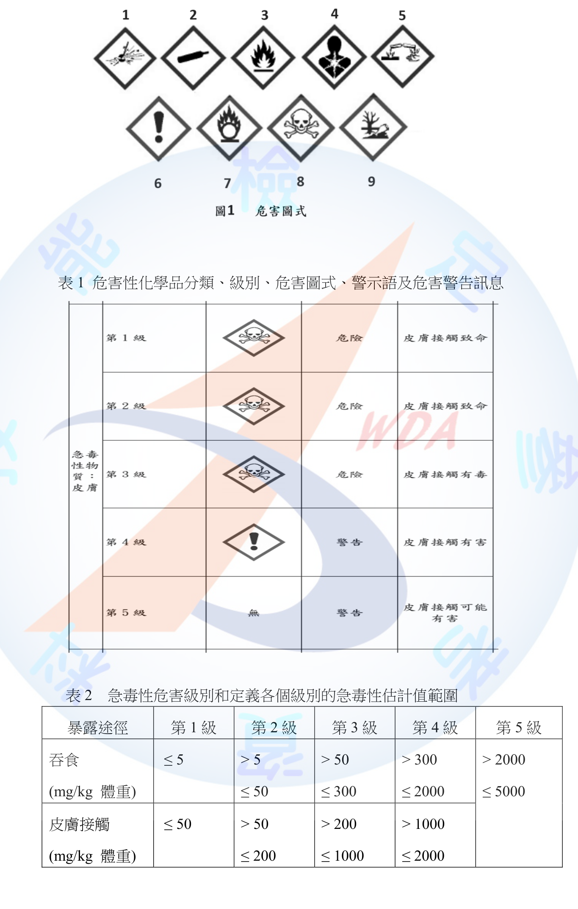
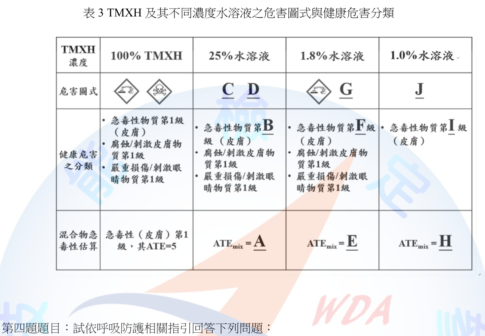
計算原理：TMXH以水稀釋，水本身不具急毒性（不列入加成計算），故混合物（水溶液）之急毒性估計值可由GHS加成公式簡化為：
ATE_mix ＝ ATE(TMXH原液) × 100 ／ C(TMXH於水溶液中之重量百分比)
已知100% TMXH原液之ATE＝5（皮膚，mg/kg體重），代入驗算：ATE_mix＝5×100／100＝5，與表3所示100%欄位一致，故上式成立，可依此推算各濃度水溶液之ATE_mix。
A（25%水溶液之ATE_mix）： ATE_mix ＝ 5×100／25 ＝ 20（mg/kg體重）
B（25%水溶液之急毒性分類級別）： 20 mg/kg對照表2「皮膚接觸」欄，落於第1級區間（≤50），故B為第1級。
C、D（25%水溶液之危害圖式代表數字）： 25%水溶液同時具「急毒性物質第1級（皮膚）」與「腐蝕/刺激皮膚物質第1級」「嚴重損傷/刺激眼睛物質第1級」，對照圖1，急毒性第1級對應圖式8（骷髏頭與交叉骨），腐蝕性／嚴重損傷眼睛物質第1級對應圖式5（腐蝕性圖式，皮膚與眼睛共用同一圖式）；依代表數字小者為C、大者為D之規則：C＝5，D＝8。
E（1.8%水溶液之ATE_mix）： ATE_mix ＝ 5×100／1.8 ＝ 277.77… → 四捨五入至整數為 278（mg/kg體重）
F（1.8%水溶液之急毒性分類級別）： 278 mg/kg對照表2「皮膚接觸」欄，落於第3級區間（>200、≤1000），故F為第3級。
G（1.8%水溶液之危害圖式代表數字）： 表3已預先標示1.8%欄具腐蝕性圖式（圖式5），另急毒性第3級仍屬表2「危險」等級（第1至3級皆使用骷髏頭圖式），故G＝8。
H（1.0%水溶液之ATE_mix）： ATE_mix ＝ 5×100／1.0 ＝ 500（mg/kg體重）
I（1.0%水溶液之急毒性分類級別）： 500 mg/kg對照表2「皮膚接觸」欄，落於第3級區間（>200、≤1000），故I為第3級。
J（1.0%水溶液之危害圖式代表數字）： 1.0%水溶液僅列「急毒性物質第I級（皮膚）」一項健康危害分類（未再列腐蝕/刺激皮膚或嚴重損傷眼睛物質分類，表示稀釋至此濃度已不具腐蝕性／嚴重刺激性），故僅需標示急毒性圖式：I為第3級，對照圖1仍屬骷髏頭圖式，故J＝8。
彙整：A＝20、B＝第1級、C＝5、D＝8、E＝278、F＝第3級、G＝8、H＝500、I＝第3級、J＝8。
本題為職業衛生甲級術科經典之「GHS混合物急毒性分類與圖式判讀」計算題，核心公式為單一有害成分以無毒溶劑（水）稀釋時之ATE_mix簡化算法：ATE_mix＝ATE(原液)×100／濃度(%)。常見失分點包括：（1）誤用「濃度百分比直接乘以ATE」而非除以，導致數值方向顛倒（稀釋應使ATE數值變大、毒性分類級別數字變大）；（2）誤將吞食與皮膚接觸兩種暴露途徑之表2數值互相套用；（3）圖式代表數字判斷時，忽略「急毒性第1至3級均使用骷髏頭圖式（8）、第4級才改用驚嘆號圖式（6）」之對照規則，誤以為級別數字愈大圖式亦隨之改變；（4）1.0%水溶液因已不具腐蝕/刺激性分類，圖式僅需標示急毒性一項，容易誤植腐蝕圖式5。
試依呼吸防護相關指引回答下列問題： (一) 在具有高度生物性微粒或生物性氣膠暴露風險之工作場所，必須依賴呼吸防護具的保護需求下，建議選戴的呼吸防護具為何？（2分） (二) 雇主使勞工於須使用緊密貼合式呼吸防護具（如半面體或全面體呼吸防護具）的有害環境作業時，實施生理評估之時機為何？（2分） (三) 試就呼吸防護計畫的生理評估中，列舉8項須審慎評估的疾病或健康問題。（16分）
(一) 建議選戴之呼吸防護具 於高度生物性微粒或生物性氣膠暴露風險之工作場所，建議選用具高過濾效率之防護具，至少應為N95等級以上之防塵（防生物氣膠）過濾式呼吸防護具；若暴露風險極高或需長時間配戴，則建議提升防護等級，選用具較高指定防護係數（APF）之動力淨氣式呼吸防護具（PAPR，含高效濾材）或全面體呼吸防護具，以兼顧防護效能與配戴舒適度。
(二) 生理評估之實施時機 雇主使勞工於須使用緊密貼合式呼吸防護具之有害環境作業時，應於勞工初次配戴使用前實施生理評估，確認其可承受配戴之生理負荷；其後應依作業之危害風險評估結果，定期（如每年）重新實施生理評估，或於勞工健康狀況發生變化（如新罹患心肺疾病）、自覺配戴不適時，適時再次安排生理評估。
(三) 生理評估中須審慎評估之疾病或健康問題（列舉8項） 1. 心血管疾病（如心臟病史、高血壓、心律不整）。 2. 呼吸系統疾病（如氣喘、慢性阻塞性肺病、肺結核病史、肺功能不良）。 3. 幽閉恐懼症或其他可能因配戴面體產生心理不適之精神心理狀況。 4. 顏面外傷、疤痕、鬍鬚或顏面骨骼結構異常，致面體無法密合者。 5. 顏面皮膚疾病（如皮膚炎、濕疹），影響配戴密合度或引發皮膚刺激。 6. 視力問題及是否須配戴眼鏡，其鏡架是否與面體密合產生衝突。 7. 聽力障礙，可能因配戴全面體或動力送風面罩影響溝通與示警音辨識。 8. 懷孕婦女之生理負荷承受能力改變，及其他可能降低配戴耐受度之慢性病史（如癲癇、糖尿病）或年齡、一般體能狀況。
本題(三)配分最高（16分），須逐項列舉且每項應有簡短說明方能取得完整分數，切忌僅列疾病名稱不加註與呼吸防護具配戴之關聯性。常見遺漏項目為「幽閉恐懼症」與「顏面結構影響密合度」兩項，此為呼吸防護具密合度測試（fit test）之核心前提，屬本題重要考點。
某工廠物料混合作業區的作業人員近日提及常發生腰薦部不適感。若今日你為該公司的職業衛生管理師，該人員之相關資訊如下表：作業人員男性，身高約175cm，體重約75kg，工作年資為12年；作業流程為將A原料（12kg/包）及B原料（15kg/包），由擺放物料的棧板抬起，放入混料機進行物料混合作業，每日重複此搬運動作在200-250次；工作環境於室溫下作業，站立時姿勢穩定，物料投入口為85公分高，物料棧板固定擺放於距離混料機機台60公分距離之地面且高度為15公分。試回答下列問題： (一) 請依關鍵指標法(Key Indicators Method, KIM)，評估該名現場作業人員人因危害風險等級，需說明各項量級並列出計算式。(10分) (二) 依據上述評估結果提出你認為可行的改善建議(6分)和改善後的成效評估。(4分) 提示：風險值 ＝ (荷重＋姿勢＋工作狀況) × 暴露時間量級
(一) KIM評估
1. 暴露時間量級：作業型態屬「抬舉或放置（<5秒）」，工作日總次數為200-250次，對照KIM表「200 to < 500」量級區間，暴露時間量級＝6。
2. 荷重量級：A原料12kg、B原料15kg，均屬男性實際負荷「10 to < 20 kg」區間，對照表得荷重量級＝2。
3. 身體姿勢量級：物料棧板高度僅15公分（接近地面），投入口高度85公分，作業人員每次抬舉須自接近地面之低位大幅彎腰、抬升物料至投入口高度，且需移動60公分距離至機台，姿勢負荷符合KIM表「軀幹彎曲前身同時扭轉、負荷遠離身體、站立時姿勢的穩定受到限制」之情境，判定姿勢量級＝4。
4. 工作狀況量級：作業於室溫下進行，站立姿勢穩定，未見地面不平、空間受限、照明不足等不良人因條件，屬「具備良好之人因條件」，工作狀況量級＝0。
5. 風險值計算： 風險值＝(荷重＋姿勢＋工作狀況)×暴露時間量級＝(2＋4＋0)×6＝6×6＝36
依KIM風險等級對照表，風險值36落於「25 to < 50」區間，屬風險等級3（黃色）：中高負載，生理過載情形可能發生於一般作業人員，建議進行工作改善。
(二) 改善建議與成效評估
改善建議： 1. 將物料棧板墊高至腰部附近高度（如60～80公分），縮小抬舉時之垂直位移落差，降低彎腰幅度。 2. 縮短棧板與投料口間之搬運距離，或加裝滾輪台車、輸送帶等機械輔助設備，減少人工提舉次數。 3. 導入機械輔助裝置（如電動升降平台、真空吸取搬運機或自動投料系統），以機械取代人工抬舉。 4. 於棧板與投入口間增設過渡平台，分段降低單次抬舉之高度落差。 5. 實施工作輪替或增加休息次數，分散單一勞工每日重複暴露次數。 6. 辦理正確物料搬運姿勢（屈膝抬舉、避免彎腰扭轉）之教育訓練並落實稽核。
改善後成效評估： 若採行棧板墊高措施，姿勢量級可由4降為2（彎腰幅度顯著減少）；若同時導入機械輔助降低每日重複次數至100次以下，暴露時間量級可由6降為4；工作狀況維持0。改善後風險值＝(2＋2＋0)×4＝4×4＝16，落於「10 to < 25」區間，降為風險等級2（黃綠色）：中等負載，較改善前風險等級3已明顯下降，惟仍建議對恢復能力較弱之勞工持續進行工作再設計，並定期追蹤勞工肌肉骨骼不適症狀盛行率，作為改善成效之後續驗證指標。
KIM（Key Indicator Method）為德國聯邦職業安全衛生研究所（BAuA）發展之人因工程半定量評估工具，屬國際通行之技術性評估方法，非我國法律或命令所定內容，僅列名稱不引條號；相關人因性危害預防之雇主義務，可參照《職業安全衛生設施規則》第324-1條：雇主使勞工從事重複性作業，為避免促發肌肉骨骼疾病，應採取危害評估、作業方法改善等预防措施。
本題須注意KIM四項量級（暴露時間、荷重、姿勢、工作狀況）之判定均需依題目情境資訊逐項對照量級表，尤其「姿勢量級」易因未留意棧板高度僅15公分（近地面）而低估彎腰幅度，導致量級誤判過低；風險值公式須依提示「(荷重＋姿勢＋工作狀況)×暴露時間量級」正確代入，不可誤用相加或其他運算方式。改善建議與成效評估應盡量以「量化前後對比」呈現，而非僅泛稱「應改善」，方符合甲級術科之作答深度要求。
⚠️ 本詳解為 AI 彙整之參考擬答，非官方標準答案；法規內容以最新公告版本為準。
試回答下列問題： (一) 雇主使勞工從事戶外作業，為防範環境引起之熱疾病，應視天候狀況採取那些危害預防措施，試列舉10項。(10分) (二) 請引據職業安全衛生法條文大義(不必提及其它附屬法規或指引)論述雇主應採取之作為，以保護勞工於工作場所免於生物性危害。(10分)
(一) 戶外作業熱疾病危害預防措施（10項） 1. 降低作業場所之溫度（如加裝遮陽設施、通風散熱裝置）。 2. 提供陰涼之休息場所。 3. 提供適當之飲料或食鹽水，供勞工少量多次補充水分及電解質。 4. 調整作業時間，避開高溫時段或縮短連續曝曬時間。 5. 增加作業場所巡視之頻率，掌握勞工體能與健康狀況變化。 6. 實施健康管理及適當安排工作，依個人健康狀況調整工作分配。 7. 建立熱適應期（heat acclimatization）機制，使新進或久未於高溫環境作業之勞工循序漸進增加暴露時間。 8. 依作業環境綜合溫度熱指數（WBGT）之高低，分級實施危害預防與作業管理措施。 9. 對勞工實施熱疾病預防之教育訓練及宣導（辨識中暑前兆症狀、緊急處置方式）。 10. 建立緊急應變處理機制，如採行同伴（buddy system）監視制度、備妥中暑緊急送醫及降溫處置流程。
(二) 保護勞工免於生物性危害之雇主作為 依《職業安全衛生法》第6條第1項第12款規定，雇主對於「防止動物、植物或微生物等引起之危害」，應有符合規定之必要安全衛生設備及措施，此為雇主對生物性危害防範之基本法定義務，內容應涵蓋辨識工作場所可能存在之病原體、動物咬傷、植物毒素等生物性危害因子，並採取適當之工程控制（如生物安全櫃、通風換氣）、消毒滅菌、防護裝備提供等具體設備與措施，以降低勞工暴露風險。
此外，同法第6條第2項第4款規定，雇主對於「避難、急救、休息或其他為保護勞工身心健康之事項」，應妥為規劃及採取必要之安全衛生措施，此可作為雇主於生物性危害發生時（如疑似感染），應建立急救、隔離休息、緊急應變等配套措施之法源依據。
綜合而言，雇主應依上開條文意旨，就工作場所可能存在之生物性危害進行辨識與評估，透過必要之安全衛生設備（如個人防護具、消毒設施）、工作規劃（如避難與急救動線、休息安排）及管理制度，使勞工工作場所之生物性危害風險降低至可接受之程度，落實其對勞工身心健康之保護義務。
(一)之法定基礎僅明文6項（《職業安全衛生設施規則》第324-6條），欲補滿10項須輔以熱適應期、WBGT分級、教育訓練、緊急應變等專業指引內容，考生宜先默寫法定6項確保基本分，再以專業常識補足其餘4項。(二)題目明確要求「僅引職業安全衛生法條文大義」，故不應在法規與依據段落中援引設施規則等附屬法規作為答題本體（僅可於補充段落列出），否則不符題意要求。
試回答下列職業病預防相關問題： (一) 常用於染料製程的甲苯胺(o-tolidine，鄰二甲基二胺基聯苯)或其鹽類(o-toluidine hydrochloride)為人類致癌物，試回答下列問題： 1. 目前的研究證據支持甲苯胺可引發勞工的癌症名稱為何？(2分) 2. 請列舉2種應提供勞工於從事甲苯胺處置作業時戴用之個人防護裝備。(4分) 3. 請說明勞工主要的甲苯胺的暴露途徑。(4分) (二) 常用於製作透明導電鍍膜的氧化銦錫(indium-tin oxide，ITO)等銦及其化合物，可引發急性或慢性健康效應，試回答下列問題： 1. 由勞工個案報告中，銦所引發的健康效應較為嚴重時，可導致失能的疾病名稱為何？(2分) 2. 請分別列舉1種雇主使勞工於ITO作業環境空氣濃度為50ppm及未知濃度下作業時，應提供之呼吸防護具。(6分) 3. 目前銦及其化合物作業勞工特殊體格及健康檢查中，生物標記檢查項目為何？(2分)
(一) 甲苯胺（o-toluidine類）
引發癌症名稱：膀胱癌（泌尿道上皮癌）。甲苯胺屬芳香胺類化合物，經國際癌症研究總署（IARC）評估歸類為人類確定致癌物（Group 1），現有職業流行病學證據支持其與勞工膀胱癌發生具有因果關聯。
個人防護裝備（列舉2種）： (1) 化學防護手套（不透性材質，如丁腈橡膠或氯丁橡膠手套，防止皮膚接觸吸收）。 (2) 化學防護衣（連身式不透性防護衣，防止皮膚及衣物污染）。 （必要時另應提供防護面罩／護目鏡及適當等級之呼吸防護具。）
主要暴露途徑： (1) 皮膚吸收：甲苯胺具有高度皮膚穿透性，勞工處置粉塵或液態甲苯胺時，經皮膚直接接觸為最主要之暴露途徑，即使無明顯呼吸道暴露仍可能造成顯著體內劑量。 (2) 呼吸道吸入：於秤量、投料等產生粉塵或蒸氣之作業過程中，勞工可能經由呼吸道吸入甲苯胺粉塵或蒸氣而暴露。
(二) 銦及其化合物（ITO）
可致失能之嚴重健康效應：間質性肺病併肺纖維化（銦肺症，indium lung disease），嚴重個案可進展為肺泡蛋白沉積症樣病變或不可逆之肺纖維化，導致呼吸功能嚴重減損甚至呼吸衰竭而失能。
呼吸防護具選用： (1) 於ITO作業環境空氣濃度達50ppm等明確已知之較高暴露濃度時，應提供具較高指定防護係數（APF）之呼吸防護具，如半面體或全面體動力淨氣式呼吸防護具（PAPR，搭配高效微粒濾材P100/HEPA），以確保防護係數足以涵蓋實際暴露倍數。 (2) 於暴露濃度未知或可能達立即致危濃度（IDLH）之情境時，應提供最高防護等級之呼吸防護具，如正壓式供氣型呼吸防護具（如自攜式呼吸器SCBA或正壓式供氣管呼吸防護具），以因應無法預估之高暴露風險。
生物標記檢查項目：血清銦濃度（Serum Indium）。此為銦及其化合物特殊健康檢查中廣泛採用之生物暴露指標，用以評估勞工體內銦之累積暴露程度。
本題屬職業病流行病學與臨床毒理學整合題，(一)易與聯苯胺類其他芳香胺致膀胱癌機轉混淆，作答時應緊扣「芳香胺類化合物」此一致癌機轉共通點。(二)關鍵在於區分「已知較高濃度」與「未知濃度（IDLH等級）」兩種情境應選用防護等級遞增之呼吸防護具，此為呼吸防護具分級選用之核心邏輯；生物標記檢查項目答錯常見情形為誤答「尿中銦」而非國內外文獻較常採用之「血清銦濃度」。
您是某事業單位之職業衛生管理師，試依健康風險分析之原則，回答下列問題： (一) 請依序寫出對一健康危害相關資訊並不充分但即將引進使用的化學物質，執行職場危害暴露的健康風險評估的4個步驟。(4分；步驟順序請以1、2、3及4標示) (二) 承上題，請對每1步驟的內容簡略說明重點。(8分) (三) 承上題，在COVID-19疫情發生時，試就個別步驟提出2項應收集或提供之資料。(8分)
(一) 健康風險評估4步驟 1. 危害辨識（Hazard Identification） 2. 劑量反應評估（Dose-Response Assessment） 3. 暴露評估（Exposure Assessment） 4. 風險特徵描述（Risk Characterization）
(二) 各步驟內容重點 1. 危害辨識：蒐集化學物質之毒理學資料（如動物實驗、流行病學研究、SDS等），確認該物質是否具有致癌性、生殖毒性或其他健康危害特性，判斷其危害之本質與嚴重度。 2. 劑量反應評估：分析暴露劑量與健康效應發生機率或嚴重程度之量化關係，據以推估安全暴露閾值（如NOAEL、容許濃度）或劑量-反應曲線。 3. 暴露評估：評估勞工於實際作業環境中，經由吸入、皮膚接觸、食入等途徑之暴露頻率、暴露濃度及暴露時間，估算勞工實際或潛在之暴露劑量。 4. 風險特徵描述：整合前述危害辨識、劑量反應與暴露評估結果，計算並描述勞工所面臨之風險等級（如超額風險或風險比值），作為決定是否採取控制措施及其優先順序之依據。
(三) COVID-19疫情下各步驟應收集或提供之資料（每步驟2項） 1. 危害辨識： (1) 病原體（SARS-CoV-2）之傳染力、致病力、變異株特性等流行病學及病毒學資料。 (2) 病原體主要傳染途徑（飛沫、空氣、接觸傳染）及潛伏期、無症狀傳播可能性等資料。 2. 劑量反應評估： (1) 暴露病毒量（如病毒載量、接觸時間長短）與感染機率、重症化率之相關研究資料。 (2) 疫苗接種、既往感染史等因子對感染機率與病程嚴重度之影響資料。 3. 暴露評估： (1) 勞工工作場所之人流密度、接觸頻率、通風換氣率等環境暴露資料。 (2) 勞工職業別、是否從事高風險接觸作業（如第一線服務、醫療照護）之暴露分類資料。 4. 風險特徵描述： (1) 整合前述資料計算之工作場所群聚感染風險等級及熱區分布資料。 (2) 易感族群（如慢性病史、免疫力低下、高齡勞工）之風險分級評估結果，作為分級管理措施依據。
本題(一)(二)為國際通用之健康風險評估四步驟標準架構，考生常見誤植步驟順序（如將暴露評估置於劑量反應評估之前）或步驟名稱混用（如將「危害辨識」誤寫為「危害評估」）。(三)情境應用題須緊扣COVID-19「傳染病」特性作答，避免直接套用化學物質暴露評估之慣用資料（如SDS、容許濃度）而未結合傳染病流行病學資訊，此為本題鑑別度所在。
暴露於含可呼吸性結晶型游離二氧化矽粉塵為塵肺症主要的原因之一，結晶型二氧化矽係指二氧化矽之分子間呈現規則排列並有一定之晶格形狀。試回答下列問題： (一) 我國勞工作業場所容許暴露標準中，空氣中第一、二種粉塵容許濃度所稱的結晶型游離二氧化矽有那些？(4分) (二) 可用來分析結晶型游離二氧化矽濃度之分析方法有那些？(6分) (三) 結晶型游離二氧化矽那些被分類為具致癌性第1A級物質，且優先管理化學品之指定及運作管理辦法將其列為運作者於運作時必須備查之化學品？(2分) (四) 某啤酒廠使用食品級矽土過濾固成分，由規格表知該矽土粒徑分布D10/D50/D90分別為6nm/22nm/45nm，另由安全資料表知該矽土含67%之結晶型游離二氧化矽，過濾製程之矽土投料作業為特定粉塵發生源，經採樣分析勞工作業場所8小時日時量平均濃度為X mg/m3，結晶型游離二氧化矽為Y%，請說明如何區別第一種、第二種粉塵之可呼吸性粉塵及總粉塵之8小時日時量容許濃度。(8分)
(一) 結晶型游離二氧化矽之種類 結晶型游離二氧化矽依其晶格結構，主要包含以下3種同素異形體： 1. 石英（Quartz）：自然界最普遍存在之結晶型二氧化矽，常見於砂石、花崗岩等礦物。 2. 方矽石（Cristobalite）：一般存在於矽藻土經高溫煅燒（如助濾劑製程）後之高溫變態結晶型態。 3. 鱗石英（Tridymite）：另一種高溫變態結晶型二氧化矽，常與方矽石共伴生成。
(二) 結晶型游離二氧化矽之分析方法（列舉） 1. X光繞射法（X-ray Diffraction, XRD）：利用結晶型物質特有之繞射峰位置與強度，鑑定並定量分析石英、方矽石等結晶型二氧化矽含量，為目前最廣泛採用之標準分析方法。 2. 紅外線光譜法（Infrared Spectrophotometry, IR/FTIR）：利用結晶型二氧化矽於特定波數之特徵吸收峰進行定量分析。 3. 偏光顯微鏡法（Polarized Light Microscopy, PLM）：利用結晶型二氧化矽之光學異向性進行定性判別，多作為輔助或篩選方法。
(三) IARC第1A級致癌物質 石英（Quartz）與方矽石（Cristobalite）兩種結晶型態之游離二氧化矽（源自職業暴露之可呼吸性結晶型游離二氧化矽），經國際癌症研究總署（IARC）評估歸類為對人類具確定致癌性之第1A級物質，並依《優先管理化學品之指定及運作管理辦法》第2條規定，屬CNS 15030分類之致癌物質類別，經中央主管機關指定公告後，運作者於運作時應報請備查。
(四) 第一種、第二種粉塵可呼吸性粉塵及總粉塵容許濃度之區別方法 依《勞工作業場所容許暴露標準》附表一之礦物性粉塵分類原則： - 第一種粉塵：指含結晶型游離二氧化矽超過1%之礦物性粉塵。其容許濃度依結晶型游離二氧化矽含量百分比（設為Y%）以公式換算，游離二氧化矽含量愈高，容許濃度愈低： 可呼吸性粉塵8小時日時量平均容許濃度 ＝ 10 ÷ (Y＋2) mg/m³ 總粉塵8小時日時量平均容許濃度 ＝ 30 ÷ (Y＋2) mg/m³ - 第二種粉塵：指含結晶型游離二氧化矽未達1%之礦物性粉塵，其容許濃度不隨游離二氧化矽含量變動，採固定值。
判定與應用：本案矽土之結晶型游離二氧化矽含量Y＝67%（遠超過1%），故應歸類為第一種粉塵，應以公式計算其容許濃度： 可呼吸性粉塵容許濃度＝10÷(67＋2)＝10÷69≈0.14 mg/m³ 總粉塵容許濃度＝30÷(67＋2)＝30÷69≈0.43 mg/m³ 再將實際採樣所得8小時日時量平均濃度X（mg/m³）分別與上述可呼吸性粉塵及總粉塵之容許濃度比較：若X值（可呼吸性粉塵測值）超過0.14 mg/m³，或總粉塵測值超過0.43 mg/m³，即判定該作業場所之粉塵暴露不符合法令容許濃度規定，雇主應採取工程改善（如加強局部排氣、製程密閉）等因應措施。
(一)常見誤答為僅列出「石英」一項而漏列方矽石、鱗石英。(三)易與(一)混淆而誤將3種型態全數列為第1A級，實則僅石英與方矽石具充分致癌證據支持第1A級分類。(四)為本題核心計算重點，須清楚說明「第一種粉塵依公式隨SiO2含量變動、第二種粉塵為固定值」之區別邏輯，並正確代入Y＝67%求出具體容許濃度數值，而非僅泛稱套用公式；由於題目以X、Y為變數表示，作答時應保留公式運算式而非要求唯一數值解，惟仍應以本案Y＝67%示範完整計算過程以展現理解。
(一) 某工廠內有一固定噪音源，在距離其0.8公尺處量測得音壓位準為105dB，而甲員工在距離此固定噪音源8公尺處之工作台，試計算下列問題： 1. 若單純考慮距離所造成之聲音衰減，則甲員工可能接受到此固定噪音源之音壓位準為多少dB？(4分) 2. 承上題，若此員工同步在工作台進行石材研磨，測得研磨所產生之噪音為87dB，若單純考慮兩噪音源之合併影響，請問甲員工在工作台接受到兩噪音源之總音壓位準為多少dB？(4分) (二) 某勞工於穩定性音源工作場所工作10小時，經戴用噪音劑量計測得噪音暴露2小時的劑量為20%。請回答下列問題： 1. 該勞工工作日8小時日時量平均音壓級為多少分貝？(6分) 2. 該作業是否屬於勞工健康保護規則所稱之特別危害健康作業？(2分) 3. 依職業安全衛生設施規則規定，請列出此勞工之雇主對於相似作業之勞工，應採取之4項措施。(4分)
(一) 點噪音源距離衰減與合併
距離衰減計算： 點噪音源音壓級隨距離衰減公式：L2＝L1－20×log10(r2/r1) L2＝105－20×log10(8/0.8)＝105－20×log10(10)＝105－20×1＝85 dB
兩噪音源合併計算： 總音壓位準＝10×log10(10^(L1/10)＋10^(L2/10)) ＝10×log10(10^8.5＋10^8.7) ＝10×log10(3.162×10^8＋5.012×10^8) ＝10×log10(8.174×10^8) ＝10×8.9124 ≈89.1 dB
(二) 噪音劑量與TWA評估
8小時日時量平均音壓級（TWA）計算： 因噪音源為穩定性音源（音壓級全程恆定），暴露劑量與工作時間成正比。已知工作2小時之劑量為20%，依劑量公式 D(%)＝(工作時間／容許暴露時間T)×100，可得： 20％＝(2／T)×100 ⟹ T＝10小時 即該勞工於此音壓級下之法定容許暴露時間為10小時，而其實際工作時間亦為10小時，故其全工作日（10小時）之總噪音暴露劑量＝(10／10)×100％＝100％。 依劑量與TWA之換算公式：TWA＝90＋16.61×log10(D/100) 代入D＝100％：TWA＝90＋16.61×log10(1)＝90＋0＝90 dB(A)
是否屬於特別危害健康作業： 是。依《勞工健康保護規則》附表一，噪音特別危害健康作業係指作業場所8小時日時量平均音壓級達85分貝以上之作業。本案勞工TWA為90 dB(A)，已超過85分貝門檻，故屬於特別危害健康作業，雇主應依規定為其安排噪音特殊健康檢查並實施分級健康管理。
雇主對相似作業勞工應採取之措施（列舉4項）： 依《職業安全衛生設施規則》第300-1條，雇主對於勞工8小時日時量平均音壓級超過85分貝或暴露劑量超過50%之工作場所，應採取聽力保護措施，作成執行紀錄並留存3年，包括（擇列4項）： (1) 噪音監測及暴露評估。 (2) 噪音危害控制（如工程改善、隔音、消音）。 (3) 防音防護具（耳塞、耳罩）之選用及佩戴。 (4) 聽力保護教育訓練。 （另有健康檢查及管理、成效評估及改善2項，共計法定6項，本案僅要求列出4項）。
(一)第2小題須注意「單純考慮兩噪音源合併」應使用對數相加公式，不可直接將85dB與87dB相加或平均。(二)第1小題為本題最具鑑別度之計算題，關鍵在於理解「穩定性音源」代表噪音劑量隨工作時間呈線性累積，先由已知2小時劑量20%反推出該音壓級對應之法定容許暴露時間（10小時），再據此推算全時段（10小時）暴露之總劑量恰為100%，最終依劑量100%對應TWA恰為90分貝之定義關係得出答案；常見錯誤為誤以「2小時劑量20%」直接線性放大10倍得出200%劑量，忽略了「劑量」定義本身已考量音壓級與容許時間之對應關係。
⚠️ 本詳解為 AI 彙整之參考擬答，非官方標準答案；法規內容以最新公告版本為準。
某化工廠設置有一高約為2.5公尺之污水處理設備，於歲修時將該設備之入槽維修及清理作業交付甲環境科技公司承攬，試依職業安全衛生法及相關行政規定，回答以下問題： (一) 化工廠對於其污水處理設備於清理作業前及當日，應先採行那些防止職業災害發生之必要管理措施？(7分) (二) 甲環境科技公司使其勞工入槽從事維修及清理作業前已先斷電，請評估勞工作業時除火災爆炸外，尚可能發生的危害有那些？(3分) (三) 針對以上所述之危害，依規定應採行之預防措施為何（不含緊急應變有關作為）？(10分)
(一) 化工廠（原事業單位）於清理作業前及當日應採行之管理措施
污水處理設備內部長期滯留污水、污泥，屬缺氧症預防規則所稱缺氧危險場所（滯留糞尿、腐泥、污水等易腐化分解物質之儲槽內部）。化工廠身為原事業單位、甲環境科技公司為承攬人，應辦理： 1. 事前告知：交付承攬前就工作環境、危害因素（缺氧、硫化氫中毒等）及應採取之安全衛生設備措施實施風險評估，將結果告知承攬人，並於承攬期間確保承攬人依評估結果執行。 2. 共同作業必要措施：設置協議組織並指定工作場所負責人擔任指揮、監督及協調；辦理工作連繫調整；巡視工作場所；對甲環境科技公司實施安全衛生教育訓練之指導及協助；辦理機械設備器具及人員之進場管制。 3. 當日作業開始前，應會同承攬人確認該局限空間（污水處理設備）之氧氣濃度及硫化氫等有害氣體濃度，符合規定始得使勞工進入作業，且於作業期間採連續確認措施。
(二) 除火災爆炸外可能發生之危害
污水處理設備內部有機物腐化分解，易生成硫化氫等有毒氣體並耗用氧氣，且槽內空間狹小、進出受限，除火災爆炸外，尚可能發生： 1. 缺氧危害：污水腐化耗氧，槽內氧氣濃度可能低於18%，致勞工缺氧窒息。 2. 中毒危害：污水腐化分解可能產生硫化氫等有毒氣體，致勞工中毒。 3. 塌陷、被夾（捲）危害：槽內污泥堆積、設備結構或攪拌等殘留裝置，勞工進出或作業時有塌陷掩埋、被夾被捲之虞（因已斷電，感電危害可排除）。
(三) 應採行之預防措施（不含緊急應變）
本題最大鑑別度在於考生是否能辨識「污水處理設備入槽清理」同時涉及兩套規範：對承攬人之管理義務（職業安全衛生法第26、27條）及缺氧危險作業之現場防護義務（缺氧症預防規則）。常見失分點為只答其中一套規範而漏答另一套；(二)小題須留意題目已排除「感電」（已斷電）與「火災爆炸」，作答範圍應聚焦於缺氧、中毒、塌陷、被夾被捲；(三)小題明確排除「緊急應變」相關作為（如空氣呼吸器供救援人員使用、緊急應變計畫等），僅答日常預防措施。
試回答下列問題： (一) 在職業病認定的時序性(temporality)原則中，除了要求危害暴露必需早於疾病發生之前，也需要納入誘發期或潛伏期等，來考量危害暴露與疾病的關聯性，請解釋下列名詞：(4分) 1. 最短誘發期(minimum induction period)。 2. 最長潛伏期(maximum latency period)。 (二) 傳染病控制的時序性原則(4分) 1. 某傳染病潛伏期已知為3日至14日（平均值及中數值分別為8日及5日），在此病疫情流行期間，A醫院報告於1月8日後發生院內群聚感染事件，立即採取該院區所有人員只出不進的清空管制措施，並於1月18日至1月21日啟動全面清空管制，再於1月24日擴大回溯專案。回溯調查結果顯示，在感染個案中最近1位發病（出現病癥）於1月19日，最近1位PCR陽性但未發病者的採檢日期為1月21日。於1月25日取得所有匡列人員之PCR陰性報告時，由院內風險評估角度而言，A醫院院內感染是否受到控制的觀察期結束日期可先暫訂為何？（回答方式如4月1日） 2. 承上題，擬訂觀察期結束日期的原因為？（回答方式如：所有匡列人員的PCR均為陰性的1月25日） (三) 請依公共衛生疾病自然史中的三段五級預防原則，列舉3項職業病的初段預防策略，如醫療保健服務業勞工的工作前預防感染之預防注射。(6分) (四) 連連看：請將下列可能的吸入性過敏原與引發職業性氣喘的主要機轉加以配對。(6分，請依英文字母順序回答，答題方式如A-1、B-2)
(一) 誘發期與潛伏期之定義 1. 最短誘發期(minimum induction period)：指自危害暴露開始至該暴露理論上可能導致疾病發生（如細胞開始病變）所需之最短時間；短於此期間發生之病例，因致病之生物學機轉尚不足以完成，通常不歸因於該次暴露。 2. 最長潛伏期(maximum latency period)：指自疾病生物學上已發生（如病變已啟動）至臨床上可被診斷或出現症狀，所經歷之最長時間；用以界定暴露與疾病確診間可合理歸因之時間上限，超過此期間才發病者，其因果關聯性證據轉弱。
(二) 傳染病時序性原則之應用 1. 觀察期結束日期：以本次群聚事件中「最近一位PCR陽性但未發病者」之採檢日期（1月21日）作為最可能之最後感染／暴露基準時點，加計該傳染病之最長潛伏期14日，1月21日加14日為2月4日，即可先暫訂A醫院院內感染受控之觀察期結束日期為2月4日。 2. 擬訂原因：以最近一位PCR陽性但未發病者之採檢日期，即1月21日，為推估最後可能感染時點之依據，據以往前（實為往後）推算滿一個最長潛伏期而未再出現新增病例，始能認定院內感染已受控制。
(三) 職業病之初段預防策略（三段五級－第一段：健康促進與特殊保護） 除題示之預防注射外，另舉3項： 1. 對粉塵、化學品作業場所設置局部排氣裝置或密閉設備等工程控制設施，於暴露源頭降低勞工暴露濃度。 2. 對高噪音作業場所勞工，於作業前實施噪音危害教育並提供、要求佩戴符合國家標準之聽力防護具。 3. 對新進及在職勞工，定期實施職業安全衛生教育訓練，提升勞工對其作業危害之辨識能力與自我防護行為，於疾病發生前阻斷危害暴露路徑。
(四) 過敏原與致病機轉配對
A-1、B-3、C-1、D-2、E-3、F-3
說明：氯氣、硫酸屬高濃度刺激性物質，經由非過敏免疫機轉之氣道刺激誘發氣喘（刺激性致過敏原）；乳膠為蛋白質類過敏原，經IgE媒介之高分子量致過敏原機轉致敏；異氰酸酯類、過硫酸鹽及丙烯酸樹脂則屬化學結構明確之低分子量致過敏原，致敏機轉多非典型IgE媒介、常見於異氰酸酯（噴漆）、過硫酸鹽（美髮業漂粉）及壓克力樹脂（指甲彩繪、黏著劑）作業。
本題屬職業病流行病學因果判斷原則、公共衛生三段五級預防理論及職業性氣喘致敏機轉之專業知識，非特定法規條文之直接規定事項，故不列條號。
(一)小題常見混淆「誘發期」（暴露至致病）與「潛伏期」（致病至可診斷）兩階段之定義順序，作答時應強調兩者於因果鏈上前後銜接、缺一不可。(二)小題核心是「以已知最長潛伏期反推安全觀察窗」之流行病學邏輯，考生常誤用「最近一位發病者之發病日（1月19日）」而非「最近一位陽性但未發病者之採檢日（1月21日）」作為基準，後者才是保守（風險評估角度）之最後可能感染時點。(四)小題須留意刺激性致過敏原與低分子量致過敏原之區分並非僅憑分子量高低，而須結合致病機轉（免疫/非免疫）判斷。
請回答下列問題： (一) 請將下列風險評估表的表頭名詞編號(A至I)，依序填入風險評估表的欄位。(10分，名詞可重覆使用) (二) 下圖為我國108年勞動統計年報資料，請依圖中資訊回答下列問題： 1. 民國108年「勞保職災給付總金額」(第2列左圖)與「職災造成之經濟損失」(第2列右圖)分別為69.2億與346億，請申論「職災造成之經濟損失」值(346億)的估算假設。(4分) 2. 若民國105年依法應填報職災月報統計的事業單位其勞工數均一樣，且每位勞工的年平均工時是2000小時，請推算當年納入職災月報統計之全國合計勞工數的最小合理區間範圍。(6分，提示：請留意FR及SR計算值的小數點後位數)
(一) 風險評估表表頭欄位配對
依國家標準CNS 45001（ISO 45001）風險評估表之通用格式，欄位1至6依序為： - 1：H（作業/流程名稱） - 2：D（危害辨識與後果（危害可能造成後果之情境描述）） - 3：A（現有防護設施） - 4：I（風險評估），其下設子欄4-1：G（可能性）、4-2：E（嚴重度）、4-3：B（風險等級） - 5：F（風險或機會之處理措施） - 6：C（控制後預估風險），其下設子欄6-1：G（可能性）、6-2：E（嚴重度）、6-3：B（風險等級）
（說明：可能性、嚴重度、風險等級三項名詞於「控制前風險評估」及「控制後預估風險」兩欄中重複使用，即題示「名詞可重覆使用」之由來。）
(二)1 「職災造成之經濟損失」(346億)估算假設
此類官方統計慣採「所得損失法（人力資本法）」估算職業災害之社會經濟損失，其核心假設包括： 1. 以當年度職業災害之死亡與失能給付人數為基礎，依失能等級或死亡，估算其因傷病導致喪失之未來工作年數（以平均餘命或法定退休年齡為上限）。 2. 以罹災者（或全國勞工）之平均薪資（或平均每人產值）作為單位時間之生產力損失估算基礎，乘以前述估計之喪失工作年數，推估其終身所得（生產力）損失現值。 3. 加計醫療給付、勞保各項給付等直接成本，以及非死亡失能案件之誤工損失、財產損失等其他可辨識之直接、間接成本。 4. 隱含假設罹災者若未發生職災，將可持續以現行薪資水準穩定工作至假設之退休年齡，未考量傷病史、產業變動等不確定因素，故此類估算屬粗估之社會總體損失、非個案實際理賠金額。
(二)2 105年職災月報統計全國合計勞工數之最小合理區間
由105年失能傷害人次（10,668人次）及失能傷害頻率FR＝1.39（公告值僅取至小數點後2位）反推：
FR＝失能傷害人次×1,000,000／總經歷工時
由於FR＝1.39係四捨五入至小數點後2位之結果，其真實值介於1.385（含）至1.395（不含）之區間。
總經歷工時＝失能傷害人次×1,000,000／FR
再依「每位勞工年平均工時2000小時」及「填報事業單位勞工數均一致」之假設，換算全國合計勞工數：
故105年納入職災月報統計之全國合計勞工數，最小合理區間約為382.3萬人至385.1萬人之間。
本題(一)為國家標準ISO 45001/CNS 45001風險評估表之通用格式，(二)為勞動統計年報職災經濟損失估算方法及頻率／嚴重率統計換算，均屬統計方法與國家標準工具應用，非特定法規條文之直接規定事項，故不列條號。
(二)2小題為本題最大難度所在，關鍵在於掌握「公告數值本身已經過四捨五入，其代表之真實值其實是一個區間而非單一定值」之統計概念，故推算全國勞工數時應以FR之上下界分別代入計算，得出一個合理區間，而非單一數值；若考生直接以FR＝1.39代入求得單一勞工數，雖不算全錯但會與題目要求之「區間範圍」不符，屬失分風險最高之處。
你是某員工人數約300人公司的職業衛生管理人員，請回答下列問題： (一) 某48歲男性員工，上班時被同事發現倒臥在座位旁昏迷不醒，經送醫確診為腦中風。經調查其發病日前一個月的加班時數達125小時，經勞保局判定為職業促發之腦血管疾病。請問依據「職業促發腦心血管疾病認定參考指引」，在進行長期工作負荷過重的評估時，下列期間的加班時數若要被認為與促發腦心血管疾病較具相關性時，應符合之標準為何？(6分) 1. 發病前1個月的加班時數。 2. 發病前2至6個月內之前2個月、前3個月、前4個月、前5個月、前6個月之任一期間的月平均加班時數。 3. 發病前1個月，及發病前2個月、前3個月、前4個月、前5個月、前6個月之月平均加班時數。 (二) 為避免過勞個案之發生，當事業單位有輪班、夜間、長時間、不規則、經常出差及特定作業環境工作之勞工時，依據「異常工作負荷促發疾病預防指引」規劃預防管理方案並啟動過勞預防管理計畫。若採用Framingham Cardiac Risk Score（佛萊明漢10年心血管疾病風險預估評分表）模式來作為健康風險之預估工具，此模式納入那7項心血管疾病危險因子作為檢核？(14分)
(一) 加班時數與促發腦心血管疾病相關性之判斷標準 1. 發病前1個月之加班時數：應超過100小時，即與職業促發疾病之相關性極強。本題員工發病前1個月加班達125小時，已逾此標準。 2. 發病前2至6個月內之任一期間月平均加班時數：應超過80小時，即與職業促發疾病之相關性極強。 3. 發病前1個月及前2至6個月之月平均加班時數：若超過45小時，隨加班時數增加，工作與發病之相關性逐漸增強；若加班時數未超過45小時，則相關性薄弱。
(二) Framingham Cardiac Risk Score納入之7項心血管疾病危險因子 1. 年齡 2. 性別 3. 總膽固醇(Total Cholesterol, TC) 4. 高密度脂蛋白膽固醇(HDL-C) 5. 收縮壓（並考量是否服用降血壓藥物） 6. 吸菸狀況（是否吸菸） 7. 是否罹患糖尿病
上述7項危險因子綜合計算後，可推估個人未來10年發生冠心病等心血管事件之機率，作為事業單位對輪班、夜間、長工時等高負荷勞工實施健康風險分級與面談指導之量化工具。
本題所引「職業促發腦心血管疾病認定參考指引」及「異常工作負荷促發疾病預防指引」均屬勞動部職業安全衛生署公告之技術性行政指引，非法律或命令位階之法規，故僅列指引名稱，不列條號。相關法源依據為： - 《職業安全衛生法》第6條第2項第2款：雇主對輪班、夜間工作、長時間工作等異常工作負荷促發疾病之預防，應有符合規定之必要安全衛生設備及措施。 - 《職業安全衛生設施規則》第324-2條：雇主使勞工從事輪班、夜間工作、長時間工作等作業，應採取辨識評估高風險群、安排醫師面談、調整工時、健康檢查管理等疾病預防措施，並訂定異常工作負荷促發疾病預防計畫。
(一)小題三個時間窗（1個月100小時、2~6個月80小時、45小時遞增關聯性）為過勞認定基準之核心量化數字，屬必背內容，作答時應清楚區分三種時間窗適用之時數門檻，不可混淆「絕對相關」（100/80小時）與「隨時數增加而相關性遞增」（45小時）兩種判斷邏輯。(二)小題7項危險因子須逐一列出，任何遺漏（尤其容易忽略「性別」或誤植為「BMI」「家族史」等Framingham模式未直接採計之因子）即扣分。
某公司職業安全衛生人員委外進行局部排氣施工，特別針對氣罩之壓力損失及導管之靜壓平衡提出討論，試協助其回答下列問題： （F = PR / PV2，Ce2 = PV2 / |PS2|） (一) 氣罩開口面全壓為0 mm-H2O，氣罩壓力損失係數為F (pressure loss coefficient of hood)，連接氣罩導管之動壓為PV2，若F = 0.23，PV2 = 20 mm-H2O，試求氣罩之壓力損失(PR)為何？(7分，4捨5入至小數點後1位) (二) 設氣罩之流入係數(coefficient of entry)為Ce，連接氣罩導管之靜壓為PS2，若Ce = 0.9，PS2 = -25 mm-H2O，導管段面積為314cm2，試求氣罩之壓力損失係數為何？(7分，4捨5入至小數點後2位) (三) 當設計有歧管之導管時，主管上游到主管之壓力損失若小於歧管上游到主管之壓力損失，則主管上游氣罩入口的吸氣量會比設計值為A，歧管上游氣罩入口的吸氣量會比設計值為B。(填空題，A或B僅填大、小或等於，如A大B大，各3分)
(一) 氣罩壓力損失PR
由F＝PR／PV2，PR＝F×PV2＝0.23×20＝4.6 mm-H2O
(二) 氣罩壓力損失係數F
由Ce²＝PV2／|PS2|，先求PV2： PV2＝Ce²×|PS2|＝0.9²×25＝0.81×25＝20.25 mm-H2O
依氣罩靜壓與動壓、壓力損失之能量關係：|PS2|＝PV2＋PR，故 PR＝|PS2|－PV2＝25－20.25＝4.75 mm-H2O
F＝PR／PV2＝4.75／20.25＝0.2346…≈0.23
（驗算：F亦可直接以F＝1／Ce²－1＝1／0.81－1＝0.2346，結果一致。導管斷面積314cm²於本小題求F之計算中非必要數據，屬題目提供之額外資訊，不影響F之求解。）
(三) 歧管導管靜壓平衡填空
A大、B小
說明：靜壓平衡法設計之目的在使各分支導管於接合處之靜壓相等，系統實際運轉之總抽風量由風機提供固定之抽力。若主管上游到接合處之實際壓力損失小於（原設計之）歧管上游到接合處之壓力損失，代表主管路徑之流動阻力相對偏低、歧管路徑阻力相對偏高，氣流將優先流向阻力較低之路徑，導致主管上游氣罩入口之實際吸氣量大於設計值（A大），而歧管上游氣罩入口之實際吸氣量小於設計值（B小），造成兩氣罩實際控制風量偏離原設計，此即局部排氣系統設計時強調各分支導管須施以靜壓平衡（或加裝調節閥）之原因。
本題為局部排氣裝置氣罩壓力損失、流入係數及導管靜壓平衡之工程計算，計算原理依循職業衛生工程通用之流體力學公式，非特定法規條文之直接規定事項。法規面則援引《職業安全衛生設施規則》有關局部排氣裝置應維持有效運轉、發揮應有性能之規定，僅列名稱不引條號。
(一)(二)小題須留意F＝PR／PV2與Ce²＝PV2／|PS2|兩公式之間，隱含「|PS2|＝PV2＋PR」之能量守恆關係（氣罩處靜壓＝動壓＋壓力損失），此為求解(二)之關鍵橋梁公式，題目未直接給出，須考生自行推導；(二)小題所給導管斷面積314cm²為誘answer之額外數據，本小題僅問壓力損失係數，不需用到流量或斷面積，考生易誤以為漏用資料而自行套用錯誤公式。(三)小題屬局部排氣系統設計「靜壓平衡法」之定性理解題，核心概念為「阻力低則風量大於設計值、阻力高則風量小於設計值」，此為系統風量分配不均之根本原因，也是多歧管系統須逐支平衡設計之理由。
⚠️ 本詳解為 AI 彙整之參考擬答，非官方標準答案；法規內容以最新公告版本為準。
某化學工廠製造1,3丁二烯及甲醛（事業單位從事特別危害健康作業之勞工人數在100人以上），職業衛生人員欲實施危害性化學品評估及分級管理，應該考慮下列幾個因素？ (一) 依危害性化學品評估及分級管理辦法第3條規定：本辦法所定化學品，優先適用特定化學物質危害預防標準、有機溶劑中毒預防規則、四烷基鉛中毒預防規則、鉛中毒預防規則及粉塵危害預防標準之相關設置危害控制設備或採行措施之規定。請問1,3丁二烯及甲醛為適用前開那一標準那一分類之物質。(4分，請依下列方式作答，○○(法規名稱)；○○(物質分類)) (二) 1,3丁二烯及甲醛之勞工作業場所容許暴露標準（8小時TWA）為多少ppm？(2分) (三) 依勞工作業環境監測實施辦法規定，1,3丁二烯及甲醛是否應實施作業環境監測？監測頻率為何？(2分) (四) 續上，1. 若此職業衛生人員有充足的知識及資源使用下列三種暴露評估方法及工具（CCB tool kit、有科學根據之採樣分析方法、運用定量推估模式），請幫其就前三項選擇一種最經濟（指直接經濟而言）及符合法規規定之方法及工具。(3分) 2. 承上，說明法規依據之內容。(4分) (五) 續上，1. 若依職業衛生人員專業知識判斷，此2物質之暴露濃度可能皆低於容許暴露標準但高於或等於其二分之一，試問此2物質暴露評估之頻率至少為何？(3分) 2. 承上，說明是依據勞工作業環境監測實施辦法、CCB tool kit、或依據危害性化學品評估及分級管理辦法規定。(2分)
(一) 適用之標準及分類
特定化學物質危害預防標準；特定管理物質
1,3丁二烯及甲醛（含各該列舉物佔其重量超過百分之一之混合物）明列於該標準所定「特定管理物質」清單中，非屬甲、乙、丙、丁類物質分類，而是另立之特定管理物質，須依該標準相關規定設置危害控制設備或採行管理措施。
(二) 8小時TWA容許濃度
依《勞工作業場所容許暴露標準》附表一（最新公告版本）：1,3丁二烯8小時日時量平均容許濃度約為2 ppm；甲醛約為1 ppm。（此二物質同時列為皮膚吸收及致癌物注意物質，實際數值仍應以中央主管機關最新公告之附表一為準。）
(三) 是否應實施作業環境監測及其頻率
應實施作業環境監測。1,3丁二烯及甲醛均屬特定化學物質危害預防標準所定特定化學物質之特定管理物質，依規定其作業場所應每6個月監測濃度1次以上；但勞工暴露濃度高於或等於容許暴露標準所定容許濃度者，應每3個月監測1次以上。
(四) 最經濟且符合法規之暴露評估方法
(五) 暴露濃度介於1/2至1倍容許暴露標準時之評估頻率
本題係整合「特定化學物質危害預防標準」（物質分類）、「勞工作業場所容許暴露標準」（濃度限值）、「勞工作業環境監測實施辦法」（監測頻率）及「危害性化學品評估及分級管理辦法」（暴露評估方法與頻率）四部法規之綜合應用題。最大易混淆處在於(三)之「監測頻率」與(五)之「暴露評估頻率」分屬不同法規、不同頻率邏輯，考生常誤將兩者混為一談或引用錯誤法規；(四)小題須清楚辨識CCB tool kit雖為常用暴露評估輔助工具，但在本題「特別危害健康作業勞工100人以上」之法定條件下並非分級管理辦法第8條所承認之法定方法，此為本題主要陷阱。
你是某醫院的職業衛生管理人員，對某單位年資1年以上20位照護人員進行人因危害風險分析……試依相關法規及職業安全衛生署「人因性危害預防計畫指引」與「中高齡及高齡工作者安全衛生指引」等，回答下列問題。 (一) 中高齡及高齡工作者身體機能可能隨年齡增長而下降……請問中高齡及高齡工作者各分別指那個年齡層的工作者？(4分) (二) 若要使用KIM關鍵指標法對這20位照護人員進行人因風險分析，請問KIM模式的風險評估，包含那4大項目？(4分) (三) 依據表一，請依下表填寫四個風險分級的人數？(4分) (四) 承上題，若依指引之建議，請問有多少位勞工依不同年齡分層的風險分級結果，會建議需要進行工作再設計或工作改善？(4分) (五) 依勞工健康保護規則規定，此單位人員接受定期每3年及每1年實施一般健康檢查之人數，各為幾人？(4分)
(一) 中高齡與高齡工作者之年齡層定義
依《中高齡者及高齡者就業促進法》：中高齡者，指年滿45歲至65歲之國民；高齡者，指逾65歲之國民。
(二) KIM關鍵指標法之4大評估項目
KIM（Key Indicator Method）風險評估模式，依作業類型（如人力提舉、搬運、拖拉）綜合考量下列4大項目給分並加總： 1. 時間評估（工作時間，含姿勢或負荷之持續與頻率）。 2. 負荷評估（提舉、搬運、拖拉之物件重量或施力大小）。 3. 姿勢評估（作業時軀幹、上肢等姿勢條件）。 4. 工作條件評估（工作環境穩定性、地面狀況、握持條件等其他影響因子）。
(三) 四個風險等級之人數統計
依表一20位人員KIM分數（9、24、50、19、41、49、24、38、17、17、26、59、22、24、11、56、40、60、22、52）逐一分級：
| 風險等級 | 風險值(X) | 人數 |
|---|---|---|
| 1（低負荷） | X<10 | 1人（編號1） |
| 2（中等負載） | 10≦X<25 | 9人（編號2、4、7、9、10、13、14、15、19） |
| 3（中高負載） | 25≦X<50 | 5人（編號5、6、8、11、17） |
| 4（高負載） | X≧50 | 5人（編號3、12、16、18、20） |
合計20人，與表一人數一致。
(四) 依年齡分層風險等級，建議工作再設計或改善之人數
依「中高齡及高齡工作者安全衛生指引」對中高齡以上工作者採取較嚴格之人因風險介入門檻之原則，區分如下： - 未滿45歲（一般工作者）：風險等級3（中高負載）以上建議改善。 - 年滿45歲（中高齡／高齡工作者）：風險等級2（中等負載）以上即建議改善。
逐一比對20人之年齡與KIM等級： - 一般工作者（<45歲）中，風險等級3以上者：編號11（36歲，L3）、12（44歲，L4）、17（38歲，L3）、18（34歲，L4），共4人。 - 中高齡／高齡工作者（≧45歲）中，風險等級2以上者：編號3（53歲，L4）、4（50歲，L2）、5（54歲，L3）、8（51歲，L3）、10（53歲，L2）、16（48歲，L4）、19（65歲，L2）、20（48歲，L4），共8人。
合計建議需進行工作再設計或工作改善者共12人。
（本小題涉及指引所定量化門檻之判讀，正式作答仍應以職業安全衛生署最新公告版本之量化基準為準，此處採「中高齡以上工作者風險介入門檻較一般工作者提前一級」之通用原則試算。）
(五) 定期一般健康檢查之人數
依表一20位人員年齡（41、37、53、50、54、24、35、51、42、53、36、44、36、34、26、48、38、34、65、48）： - 未滿40歲者（每3年檢查1次）：編號2、6、7、11、13、14、15、17、18，共9人。 - 年滿60歲者（每年檢查1次）：編號19（65歲），共1人。 （其餘40歲以上未滿60歲者10人，依規定每2年檢查1次，非本題所問。）
(三)小題純屬KIM分數依區間分級之計數題，作答時應逐一列出每位人員所屬等級以利檢查，避免因手算遺漏而分級人數總和不等於20人。(四)小題為本大題難度最高處，核心在於理解中高齡及高齡工作者因肌肉骨骼耐受度較低，指引建議之風險介入門檻應較一般工作者更為提前（保守），惟具體量化門檻屬指引內容而非法規條文，作答時宜清楚交代判斷邏輯與假設。(五)小題純為勞工健康保護規則第17條年齡分級之計數應用，須留意題目僅問「3年」與「1年」兩組，40~60歲之10人不計入答案。
請回答下列有關粉塵之問題： (一) 何謂可呼吸性(respirable)粉塵、可吸入性(inhalable)粉塵、胸腔性(thoracic)粉塵？(6分) (二) 在勞工作業場所容許暴露標準中，上述3種粉塵係指可透過何裝置所測得之粒徑者？(2分) (三) 何謂勞工作業場所容許暴露標準所稱之厭惡性粉塵？(2分) 其作業環境監測紀錄依法應至少保存多久？(1分) (四) 依粉塵危害預防標準之規定，雇主使勞工戴用輸氣管面罩之連續作業時間，每次不得超過多久？(1分) (五) 除使用火焰切斷、修飾之作業外，從事金屬或削除毛邊或切斷金屬之作業，是否可稱為粉塵作業？(1分) (六) 雇主使勞工從事粉塵特別危害健康作業時，其特殊體格（健康）檢查紀錄應至少保存多久？(1分) (七) 雇主應將其定期實施之特殊健康檢查，依規定分級實施健康管理，請說明其第二、三及四級管理措施內容。(6分)
(一) 三種粉塵之定義 - 可吸入性粉塵(inhalable)：指可經由口鼻吸入呼吸系統之較大粒徑粉塵，涵蓋範圍最廣，可能沉積於鼻咽、氣管至肺泡各部位。 - 胸腔性粉塵(thoracic)：指可通過喉部而進入胸腔（氣管、支氣管及肺泡區）之粒徑較小之粉塵。 - 可呼吸性粉塵(respirable)：指可穿透至肺部深處終末細支氣管及肺泡區、對呼吸系統危害性最大之最細小粒徑粉塵。
三者依可穿透呼吸道之深淺程度，粒徑範圍由大至小依序為：可吸入性＞胸腔性＞可呼吸性。
(二) 測得裝置
上述3種粉塵濃度，係以符合各該粒徑選取特性（粒徑選析特性）之分粒裝置（如旋風分離器cyclone等分粒採樣頭）所測得之粒徑分布為準，依不同分粒裝置之截取效率篩選出對應粒徑範圍之粉塵，分別測定其濃度。
(三) 厭惡性粉塵之定義及監測紀錄保存年限
厭惡性粉塵：指游離二氧化矽含量低（一般未達百分之一）、於容許暴露標準中未另訂個別容許濃度、對肺部纖維化危害性相對較低之總粉塵，容許暴露標準僅依其總粉塵（或可呼吸性粉塵）濃度概括管制。
作業環境監測紀錄依法應至少保存10年（厭惡性粉塵非屬特殊高關注化學物質，不適用30年之保存規定）。
(四) 輸氣管面罩連續作業時間限制
每次不得超過1小時。
(五) 金屬毛邊研磨、切斷是否屬粉塵作業
是，除使用火焰切斷、修飾之作業另有排除規定外，以動力研磨、削除毛邊或切斷金屬之作業，屬粉塵危害預防標準附表一所列之粉塵作業。（惟若設備採連續注水或注油操作方式，得免適用該標準第6條至第24條相關規定。）
(六) 粉塵特殊體格（健康）檢查紀錄保存年限
至少應保存30年。
(七) 特殊健康檢查分級管理措施（第二、三、四級）
(一)(二)小題屬粉塵粒徑分類之基本定義，須清楚掌握「粒徑愈小、穿透呼吸道愈深」之邏輯順序（可吸入性＞胸腔性＞可呼吸性），避免文字定義倒置。(三)(六)小題常見混淆「作業環境監測紀錄保存10年（一般化學物質，特殊列管物質30年）」與「特殊體格健康檢查紀錄保存年限」（粉塵等特定作業定額為30年，其餘依附表分為7年、10年）兩套不同保存期限規定，作答時應分別列出、勿混用。(七)小題為勞工健康保護規則第22條分級管理措施之逐級應用，須留意第三級與第四級之差異在於「異常是否與工作有關」，第三級為「無法確定關聯性、待評估」，第四級為「已確定與工作有關」，管理強度隨級數遞增。
請回答下列問題： (一) 請問人體對外在環境的冷熱舒適感覺，受那四種因素影響？(4分) (二) 請寫出綜合溫度熱指數計算方法：(4分) 1. 戶外有日曬情形者。 2. 戶內或戶外無日曬情形者。 (三) 某基本金屬製造工廠之室內有一位勞工從事金屬熔煉作業，為間歇性熱暴露，該勞工在熔煉投料區作業30分鐘，投料區測得之綜合溫度熱指數為29.4℃；另於出料區從事檢視作業90分鐘，出料區測得之綜合溫度熱指數為28.6℃，試計算其時量平均綜合溫度熱指數？(6分) (四) 承上題，已知該勞工之作業屬中度工作，依高溫作業勞工作息時間標準規定該勞工每小時應至少有多少時間之休息？(4分) (五) 某日該工廠有一位勞工在從事投料作業時，突然覺得無力倦怠，體溫微幅升高（經量測約38.5℃），並伴隨有大量出汗、皮膚濕冷、臉色蒼白、心跳加快等症狀。請問該名勞工可能罹患那種熱疾病？(2分)
(一) 影響人體冷熱舒適感覺之四種因素
氣溫（乾球溫度）、濕度（相對濕度／水蒸氣壓）、氣流（風速）、輻射熱（周圍物體之輻射溫度，如黑球溫度所反映之熱輻射）。
(二) 綜合溫度熱指數(WBGT)計算方法 1. 戶外有日曬情形者：WBGT＝0.7×自然濕球溫度＋0.2×黑球溫度＋0.1×乾球溫度 2. 戶內或戶外無日曬情形者：WBGT＝0.7×自然濕球溫度＋0.3×黑球溫度
(三) 時量平均綜合溫度熱指數計算
投料區（30分鐘，WBGT＝29.4℃）與出料區（90分鐘，WBGT＝28.6℃）：
時量平均WBGT＝(29.4×30＋28.6×90)／(30＋90) ＝(882＋2,574)／120 ＝3,456／120 ＝28.8℃
(四) 中度工作應有之休息時間
依高溫作業勞工作息時間標準所定中度工作各時量平均綜合溫度熱指數對應之作息比例：連續作業對應28.0℃、25%休息對應29.4℃、50%休息對應31.1℃、75%休息對應32.6℃。本題計算所得時量平均WBGT為28.8℃，已超過連續作業之上限28.0℃，但未達25%休息對應之29.4℃上限，故應歸屬於「25%休息、75%作業」之作息型態，即該勞工每小時至少應有15分鐘（25%）之休息時間。
(五) 可能罹患之熱疾病
依症狀：無力倦怠、體溫僅微幅升高（38.5℃，未達中暑之高熱程度）、大量出汗、皮膚濕冷、臉色蒼白、心跳加快，屬周邊血管代償性擴張致有效循環血量不足之表現，可能罹患熱衰竭(heat exhaustion)。（與熱中暑之皮膚乾燙無汗、核心體溫常逾40℃、意識混亂等表現明顯不同，可資鑑別。）
(三)小題須留意題目已明確給定兩時段之WBGT實測值，僅需依時間加權平均，避免誤套日曬公式重新計算WBGT。(四)小題關鍵在於正確比對計算所得WBGT（28.8℃）與作息時間標準表之四個門檻值，28.8℃介於28.0℃（連續作業上限）與29.4℃（25%休息上限）之間，故落入「25%休息」級距，此為表格查表題常見的「介於兩門檻之間，應取較嚴格（休息比例較高）一側」之判讀原則。(五)小題須掌握熱衰竭與熱中暑之鑑別要點：熱衰竭核心體溫通常不逾38.5~39℃且皮膚濕冷多汗，熱中暑則核心體溫常逾40℃且皮膚乾熱無汗並伴意識障礙，本題症狀明確指向前者。
某高度為2公尺之機械放置於20m×10m×4m室內靠牆之地面，房屋地板/天花板為混凝土，牆為磚造構成，機械產生的音功率為103分貝，今有一勞工於距離該機械2公尺處作業，已知地板及天花板之聲音吸收係數為0.02，磚牆之聲音吸收係數為0.04。試回答下列問題： (一) 此房間總共能吸收的聲音(total room sound absorption)為多少平方米沙賓(m2 Sabin)？(4分)（提示：A = ΣSiαi） (二) 此房間的平均吸音係數為何？(4分；提示：αm = A / S) (三) 室常數(room constant, R)為何？(4分；提示：R = A/(1- αm)) (四) 在此房內作業勞工接受到的音壓級為多少分貝？(4分；提示：Lp = Lw + 10 log (D/4(πr2)+ 4/R)；D：音源方向係數) (五) 若將此作業勞工移至同室但距機械10公尺處作業，則該勞工所接受到的音壓級可減少多少分貝？(4分)
(一) 房間總吸音量A
房間尺寸20m×10m×4m，各表面積： 地板：20×10＝200 m²；天花板：20×10＝200 m²；牆面：2×(20×4)＋2×(10×4)＝160＋80＝240 m² 總表面積S＝200＋200＋240＝640 m²
A＝ΣSiαi＝(地板＋天花板)×0.02＋牆面×0.04 ＝(200＋200)×0.02＋240×0.04 ＝400×0.02＋240×0.04 ＝8＋9.6 ＝17.6 m² Sabin
(二) 平均吸音係數αm
αm＝A／S＝17.6／640＝0.0275
(三) 室常數R
R＝A／(1－αm)＝17.6／(1－0.0275)＝17.6／0.9725≈18.10 m²
(四) 作業勞工（距機械2公尺）接受之音壓級
機械置於室內靠牆之地面（地板＋一側牆面，兩反射面交會），音源方向係數取D＝4。
Lp＝Lw＋10 log(D／(4πr²)＋4／R) ＝103＋10 log(4／(4π×2²)＋4／18.10) ＝103＋10 log(4／50.27＋0.2210) ＝103＋10 log(0.0796＋0.2210) ＝103＋10 log(0.3006) ＝103＋10×(－0.522) ＝103－5.22 ≈97.8 dB
(五) 移至距機械10公尺處，音壓級之減少量
r＝10m時： Lp'＝103＋10 log(4／(4π×10²)＋4／18.10) ＝103＋10 log(4／1256.6＋0.2210) ＝103＋10 log(0.00318＋0.2210) ＝103＋10 log(0.2242) ＝103＋10×(－0.6494) ＝103－6.49 ≈96.5 dB
音壓級減少量＝Lp－Lp'＝97.8－96.5≈1.3 dB
本題為室內音場（直接音場＋殘響音場）音壓級推估之聲學工程計算，計算原理依循職業衛生工程通用之噪音預測公式，非特定法規條文之直接規定事項。法規面則援引《職業安全衛生設施規則》有關雇主對噪音超過標準之工作場所應採取工程控制、行政管理等有效危害控制設施之規定，僅列名稱不引條號。
本題關鍵在於音源方向係數D之判斷：機械置於室內地面且靠牆（僅一面牆），屬兩個反射面交會（地板＋一牆），對應D＝4；若為室內自由空間（無牆面反射）則D＝2，牆角（地板＋兩牆）則D＝8，此判斷錯誤將導致後續(四)(五)全部計算錯誤。此外，(五)小題因距離增加10倍（2公尺→10公尺），直接音場項（D/4πr²）大幅衰減至可忽略，音壓級主要由室內殘響音場項（4/R，與距離無關）主導，故音壓級減少量（僅約1.3 dB）遠小於自由音場中距離增加10倍應衰減約20 dB之直覺預期，此為室內聲學（有殘響音場修正）與戶外自由音場（僅direct field）計算邏輯之重要差異，也是本題最具鑑別度之考點。
⚠️ 本詳解為 AI 彙整之參考擬答，非官方標準答案；法規內容以最新公告版本為準。
若您是某生技公司之職業衛生管理師，為預防員工因職業因素接觸生物病原體而引發感染，試依職業安全衛生設施規則規定，回答下列問題： (一) 除「其他經中央主管機關指定者以外」之措施，請再列舉7項雇主為預防生物病原體危害所應採行之措施。(14分) (二) 對於作業中遭生物病原體污染之針具或尖銳物品扎傷之勞工，列舉3項雇主應有之作為。(6分)
(一) 生物病原體危害之感染預防措施（列舉7項）
依《職業安全衛生設施規則》第297-1條，雇主對於工作場所有生物病原體危害之虞者，應採取之感染預防措施除「其他經中央主管機關指定者」外，尚包括下列項目（任列7項）： 1. 危害暴露範圍之確認。 2. 相關機械、設備、器具等之管理及檢點。 3. 警告傳達及標示。 4. 健康管理。 5. 感染預防作業標準。 6. 感染預防教育訓練。 7. 扎傷事故之防治。 8. 個人防護具之採購、管理及配戴演練。 9. 緊急應變。 10. 感染事故之報告、調查、評估、統計、追蹤、隱私權維護及紀錄。 11. 感染預防之績效檢討及修正。
（以上11項任列7項即符合題目要求；上開預防措施應依作業環境特性訂定實施計畫，並將執行紀錄留存3年，僱用勞工人數在30人以下之事業單位，得以執行紀錄或文件代替。）
(二) 針具或尖銳物品扎傷勞工之雇主作為（列舉3項）
依《職業安全衛生設施規則》第297-2條，雇主對於作業中遭生物病原體污染之針具或尖銳物品扎傷之勞工，應建立扎傷感染災害調查制度並採取下列措施： 1. 指定專責單位或專人負責接受報告、調查、處理、追蹤及紀錄等事宜，相關紀錄應留存3年。 2. 調查扎傷勞工之針具或尖銳物品之危害性及感染源（如需進行個案血液檢查，應經當事人同意後始得為之）。 3. 對調查結果認勞工有感染之虞者，應使勞工接受特定項目之健康檢查，並依醫師建議採取採血檢驗與保存、預防性投藥及其他必要之防治措施。
本題為條文列舉題，作答時務必逐項對應第297-1條原文用語（如「感染預防作業標準」不可簡化為「作業SOP」、「個人防護具之採購、管理及配戴演練」須完整列出三個動作），避免因用語簡化不完整而扣分。第(二)小題常見失分點為僅答「送醫治療」等一般性作為，未能對應第297-2條「指定專責人員調查」「感染源調查」「健康檢查與預防性投藥」三個規範性步驟。
你是某超商企業的職業安全衛生人員，你的主管請你針對某超商據點夜間工作安全與衛生進行管理……請你依據職業安全衛生法、職業安全衛生設施規則、職場夜間工作安全衛生指引、及女性勞工母性健康保護實施辦法等，回答下列問題： (一) 夜間工作者是指於那個時段工作的勞工？(2分) (二) 副店長近日向店長表達自己懷孕8週，應接受母性健康保護評估，請問依據女性勞工母性健康保護實施辦法，該副店長的保護期間之定義為何？(2分) (三) 因副店長需安胎休假，本來每個班別都排2個人的情況有點吃緊，造成有時大夜班只能排1個人，主管要求對這個超商進行夜間工作安全衛生評估，請依職業安全衛生署公告之職場夜間工作安全衛生指引的查核表，除了身心健康管理部分外的(1)工作場所之設施及管理、(2)人身安全保護、(3)緊急應變機制、與(4)教育訓練等4個面向，各提出2個重點查核事項。(16分)
(一) 夜間工作者之定義
依勞動部職業安全衛生署「職場夜間工作安全衛生指引」，夜間工作者係指於午後10時（22時）至翌日清晨6時之時段內從事工作之勞工（與勞動基準法第49條所定女性夜間工作限制時段一致）。
(二) 母性健康保護期間之定義
依《女性勞工母性健康保護實施辦法》第2條，母性健康保護期間，指雇主於得知女性勞工妊娠之日起，至其分娩後1年之期間。該副店長已告知懷孕8週，自雇主得知妊娠之日起即進入保護期間，直至分娩後屆滿1年止。
(三) 夜間工作安全衛生查核表4大面向、各2項重點查核事項
工作場所之設施及管理： (1) 工作場所（含店內外通道、停車空間）之採光照明是否充足，並設置監視器等安全防護設備。 (2) 現金管理及財物存放是否有適當之保全措施（如限額收銀、時間鎖保險箱），以降低治安風險。
人身安全保護： (1) 大夜班是否維持雙人以上共同作業，避免單獨值班；如因故僅單人上班，是否有替代之安全配套措施（如定時回報、監控連線）。 (2) 是否提供或協助勞工於下班時段之交通接送、安全護送機制，降低通勤路途風險。
緊急應變機制： (1) 是否設置緊急求救設備（如警報按鈕、直通保全或警方之緊急聯絡系統），並定期測試其有效性。 (2) 是否訂定夜間突發事件（如搶劫、暴力事件、意外傷病）之緊急應變處理流程及通報層級，並使值班人員周知。
教育訓練： (1) 是否對夜間工作勞工實施治安風險辨識與應變（如遭遇搶劫、衝突事件之因應）之教育訓練。 (2) 是否對夜間工作勞工實施緊急救護（如簡易急救、CPR、通報流程）及自我防護技能之教育訓練。
(一)(二)小題屬定義性條文，答題須精確對應法規原文（尤其「分娩後1年」不可誤答為「產假結束」或「分娩後6個月」）。(三)小題為指引查核表之開放式列舉題，只要能對應「工作場所設施」「人身安全」「緊急應變」「教育訓練」四個面向之核心精神（照明監視、單獨作業防護、緊急求救通報、危機應對訓練）並具體可執行，即可獲分；常見失分點為4個面向之查核事項互相混淆（例如將監視器設置誤列為緊急應變而非設施管理），作答時應留意事項與面向之邏輯對應。
(一) 請列舉常見的熱傷害疾病3種，並簡短說明主要的致病機轉。(12分，致病機轉需與疾病名稱配對正確才給分) (二) 試回答下列有關職災統計的問題： 1. 106、107、108年勞保職災給付總件數分別為28,349、26,997、26,019件，而職災月報統計之失能傷害人次分別為11,017、11,250、11,318人次。試就法令規範及名詞定義，說明為何勞保職災給付總件數與職災月報統計之失能傷害人次之數字不一致。(4分) 2. 請列出勞工職業災害保險及保護法之保險給付種類，除失蹤給付外的其餘種類？(2分) 3. 我國勞動統計年報顯示105、106及108年我國職災月報統計之失能傷害嚴重率分別為107、114、100，失能傷害頻率分別為1.39、1.28、1.26。請問這三年中那一年之總合傷害指數最低？(2分，請列出計算過程並計算至小數點後2位，不四捨五入)
(一) 常見熱傷害疾病與致病機轉（列舉3種）
(二)1 兩統計數字不一致之原因
依《職業安全衛生法》第38條，僅「中央主管機關指定之事業」（通常指達一定規模以上之事業單位）之雇主，始有依規定填載職業災害內容及統計、按月報請勞動檢查機構備查之法定義務，故職災月報統計之範圍未涵蓋全部投保單位，且其統計對象係依一定認定基準（如損失日數）計算之「失能傷害人次」。而勞工保險（現行勞工職業災害保險）之職災給付，係以全體參加勞工保險之被保險人為對象，不限事業單位規模，且以「案件（申請給付）數」計算，同一勞工可能因同一傷病歷經醫療、傷病、失能等不同給付案件。兩者統計之「涵蓋事業單位範圍」及「計算對象定義（案件數vs.失能傷害人次）」均不相同，故數字未必一致。
(二)2 保險給付種類（除失蹤給付外）
依《勞工職業災害保險及保護法》第26條，本保險給付種類為醫療給付、傷病給付、失能給付、死亡給付、失蹤給付5種，除失蹤給付外，其餘4種為：醫療給付、傷病給付、失能給付、死亡給付。
(二)3 三年總合傷害指數（FSI）比較
總合傷害指數FSI＝√(FR×SR／1,000)
105年：FR＝1.39，SR＝107 FR×SR＝1.39×107＝148.73；／1,000＝0.14873 √0.14873＝0.3856…，取至小數點後2位（不四捨五入）＝0.38
106年：FR＝1.28，SR＝114 FR×SR＝1.28×114＝145.92；／1,000＝0.14592 √0.14592＝0.3820…，取至小數點後2位（不四捨五入）＝0.38
108年：FR＝1.26，SR＝100 FR×SR＝1.26×100＝126；／1,000＝0.126 √0.126＝0.3550…，取至小數點後2位（不四捨五入）＝0.35
三年中，108年總合傷害指數最低（0.35）。
(一)小題須注意「致病機轉需與疾病名稱配對正確才給分」，作答時應清楚區分熱痙攣（電解質失衡）、熱衰竭（血液循環代償、體溫調節仍運作）與熱中暑（體溫調節中樞失效）三者機轉之本質差異，避免僅描述症狀而未講明機轉。(二)1小題核心考點為「統計母體範圍」與「統計對象定義」兩者皆不同，考生常僅答出其中一項原因即倉促作答，宜完整說明。(二)3小題「不四捨五入」為關鍵作答指示，計算至小數點後2位時應直接捨去第3位以後數字（無條件捨去），而非四捨五入，本題105年（0.3856…）與106年（0.3820…）若誤用四捨五入將分別得0.39及0.38，可能誤判108年與106年之高低關係，故務必依題目指示之「無條件捨去」方式處理。
您是想要在事業單位內推行職場心理健康促進計畫的職業衛生管理師，試回答下列問題： (一) 除了「缺乏彈性的工作排程或工時過長」的危險因子以外，再列舉4個職場心理健康常見危險因子。(8分) (二) 除了「向所有員工提供心理健康自我評估工具」以外，再列舉4項事業單位依計畫不同執行時程，可實施之工作事項。(8分) (三) 試列舉1個不需由心理健康專業人員施作，可普遍用於職場健康篩檢的員工心理健康自我評估工具。(2分) (四) 請依職場健康風險評估的5個主要執行步驟，並依單一循環的先後順序選擇合適步驟（答題只需列出編號，如13578；2分）
(一) 職場心理健康常見危險因子（除工時過長外，再列舉4項）
（其餘可列舉之因子尚包括：組織支持不足、獎酬與付出不對等、暴力威脅風險等，任列4項即符合題目要求。）
(二) 心理健康促進計畫依時程可實施之工作事項（除評估工具外，再列舉4項）
依計畫推動之短、中、長期時程，事業單位可實施： 1. 短期：辦理心理健康促進宣導及教育訓練，提升員工對心理健康議題之認知。 2. 短期／中期：建立員工協助方案（EAP），提供諮商轉介服務管道。 3. 中期：針對辨識出之高風險部門或工作型態，進行工作重新設計或工作條件調整（如工時、排班、職務內容）。 4. 長期：將心理健康促進納入組織政策及企業文化，定期辦理成效評估及計畫檢討修正，並持續追蹤員工協助方案使用情形。
(三) 不需由心理健康專業人員施作之自我評估工具
簡式健康量表（BSRS-5，又稱心情溫度計）：為5題（或含自殺意念題共6題）之簡短自填式量表，員工可自行填答評分，用於初步篩檢其近期心理困擾程度，不需心理健康專業人員在場施測，普遍用於企業健康篩檢作為初步分流工具。
(四) 職場健康風險評估5步驟之執行順序
依單一循環先後順序：2→7→3→8→5
說明：先辨識職場心理健康危害因子（步驟2），再評估工作相關壓力之發生原因及易受傷害族群（步驟7），接著記錄風險調查結果作為計畫制定基礎（步驟3），據以評估心理健康風險並採取對策（步驟8），最後追蹤與評估對策有效性並修正計畫缺失（步驟5），完成一個管理循環（PDCA）。
本題所涉「職場心理健康促進計畫」相關危險因子、執行時程工作事項及風險評估步驟，均屬勞動部職業安全衛生署公告之技術性指引內容（如職場心理健康促進參考手冊），非法律或命令位階法規，故僅列指引精神、不列條號。
(一)(二)小題屬開放式列舉題，只要答案確實屬於職場心理健康風險因子或計畫執行工作事項之合理範疇，且不與題目已排除之選項重複，即可獲分；作答時宜避免與題目已提供之範例（工時過長、心理健康自我評估工具）重複作答而導致無效。(四)小題核心在於掌握「辨識危害→評估風險成因→記錄與立計畫基礎→採取對策→追蹤修正」之PDCA式循環邏輯，選項1（面談罹病員工）、4（追蹤EAP使用情形）及6（顧客滿意度調查）均非本標準5步驟循環之一部分，屬於題目刻意設計之干擾選項，作答時應予排除。
(一) 某電信公司5位勞工從事道路人孔局限空間作業……(C = C0e^(-[Q/V]t)，答案可能為單純之數值、或數值與C、C0、V、Q公式之組合) 1. 若此人孔內因前次油漆作業遺留有甲苯溶劑，甲苯之飽和蒸汽壓為22mmHg，若大氣壓為640mmHg，開孔進入局限空間作業前，試幫缺氧作業主管預估此局限空間之甲苯飽和蒸汽濃度為多少ppm？(2分，取整數) 2. 若欲將甲苯濃度降為原濃度之10%、1%及0.1%，所需新鮮空氣體積各為何？(6分，取至小數點後1位) (二) 某一貨櫃輪船商……現場有害作業主管於塗裝時，使用直讀式偵測器測得空氣中二異氰酸甲苯濃度為0.03ppm；設二異氰酸甲苯之作業環境空氣中容許濃度標準為0.005ppm，雇主依規定提供勞工可預防二異氰酸甲苯危害之半面體負壓淨氣式呼吸防護具，其指定防護係數為15，安全係數為10。請依勞動部職業安全衛生署公告之呼吸防護計畫及採行措施指引與編定之呼吸防護計畫技術參考手冊所載有關事項回答以下問題： 1. 該塗裝場所之二異氰酸甲苯危害比為多少？(3分) 2. 欲使呼吸防護具發揮防護效果，作業環境空氣中二異氰酸甲苯不可超過的最大濃度為多少？(3分) 3. 該呼吸防護具之密合係數為多少？(3分) 4. 該呼吸防護具使用前，以定量密合度方法執行戴用該呼吸防護具的密合度測試時，所得之密合係數應大於多少？(3分)
(一)1 甲苯飽和蒸汽濃度
飽和蒸汽濃度(ppm)＝(飽和蒸汽壓／大氣壓)×1,000,000 ＝(22／640)×1,000,000 ＝0.034375×1,000,000 ＝34,375 ppm 取整數 ≈ 34,375 ppm
(一)2 稀釋為原濃度10%、1%、0.1%所需新鮮空氣體積
依C＝C0e^(-[Q/V]t)，若以「新鮮空氣體積」之概念表示置換所需空氣體積（以V為單位空間體積計），濃度降至原濃度之比例f時，所需通入之新鮮空氣體積（以空間體積之倍數計）為：
換氣次數n＝ln(C0/C)＝ln(1/f)，所需新鮮空氣體積＝n×V＝V×ln(1/f)
（V為該局限空間之有效體積，實際所需空氣體積應另以該人孔之實測體積代入計算。）
(二)1 二異氰酸甲苯危害比(HR)
危害比＝作業環境實測濃度／容許濃度標準＝0.03／0.005＝6
(二)2 呼吸防護具發揮防護效果之最大容許濃度
呼吸防護具需發揮有效防護，作業環境濃度除以指定防護係數(APF)後應低於容許濃度，故作業環境空氣中濃度不可超過： 容許濃度×指定防護係數＝0.005×15＝0.075 ppm
(二)3 呼吸防護具之密合係數
密合係數(Fit Factor)於半面體負壓淨氣式呼吸防護具之應用中，其與指定防護係數及安全係數之關係為： 指定防護係數(APF)＝密合係數(Fit Factor)／安全係數(Safety Factor)
故密合係數＝APF×安全係數＝15×10＝150
(二)4 定量密合度測試應達之密合係數標準
依呼吸防護計畫技術參考手冊，半面體呼吸防護具以定量密合度測試方法（QNFT）測試時，所得密合係數應大於100，方符合半面體呼吸防護具密合度測試合格之最低標準。
本題(一)為局限空間有害氣體飽和蒸汽濃度推估及通風換氣稀釋之工程計算，(二)為呼吸防護具選用之危害比、指定防護係數及密合係數計算，均依循勞動部職業安全衛生署公告之「呼吸防護計畫及採行措施指引」及「呼吸防護計畫技術參考手冊」所載通用公式，該等文件屬技術性指引，非法律或命令位階法規，故僅列名稱不引條號。法規面援引： - 《缺氧症預防規則》第4條、第5條：從事缺氧危險作業應置備氧氣及有害氣體測定儀器，並實施適當換氣。 - 《職業安全衛生設施規則》第277-1條：雇主使勞工使用呼吸防護具時，應辦理危害辨識及暴露評估、防護具選擇、使用、維護管理及教育訓練等呼吸防護措施；勞工人數達200人以上者，應訂定呼吸防護計畫。
(一)1小題須留意飽和蒸汽濃度公式為「飽和蒸汽壓／大氣壓」而非除以標準大氣壓(760mmHg)，因題目已明確給定「大氣壓為640mmHg」為當地實際大氣壓，不可誤用760mmHg計算。(一)2小題核心公式C＝C0e^(-Qt/V)可改寫為所需換氣次數（以空間體積倍數表示）＝ln(C0/C)，此為通風換氣稀釋之指數衰減模型應用，考生易誤用線性稀釋（直接以體積比相除）而非自然對數關係計算，此為本題最大鑑別度。(二)小題危害比、指定防護係數與密合係數三者之關係式（APF＝Fit Factor／安全係數）為呼吸防護具選用之核心公式，須熟記三者代入運算之先後邏輯，並留意(二)2小題求的是「呼吸防護具可有效防護之環境上限濃度」（容許濃度×APF），與(二)1小題「危害比」（實測濃度／容許濃度）計算方向相反，作答時應注意分子分母不可顛倒。
⚠️ 本詳解為 AI 彙整之參考擬答，非官方標準答案；法規內容以最新公告版本為準。
第一題題目：某一公司承攬油輪輸送之海底管線與浮筒檢視的工作，此為例行性的業務，每天均要進行，其工作環境需要潛水員潛入水面下約30-42公尺深處進行作業，請依照異常氣壓危害預防標準，及表1、表2、表3、表4、表5，回答下列問題： (一) 請說明何謂潛水作業？(2分) (二) 潛水員使用氮氣人工調和混合氣供給氣體，其氧氣濃度不得超過40%，且氧分壓不得超過多少絕對大氣壓力？(2分) (三) 查閱該公司111年5月12日之潛水日誌(表1、潛水日誌)，發現部分欄位遺漏，請參考表1至表5，提供潛水員甲之正確的減壓程序，列出下列時間(請寫出「分:秒」) X：上升至第一減壓站時間。(2分) Y：使用空氣減壓停留時間。(2分) Z：上浮時間總計。(2分) (四) 依相關法規規定，潛水日誌應妥善填寫並至少保存多少年？(2分) (五) 當天潛水員乙於上午10時進行潛水後，約休息3小時15分後，再於14時進行重複潛水，請依表1至表5，列出 1. 本次重複潛水代號或群組。(2分) 2. 水面休息後重複潛水之代號或群組。(2分) 3. 餘氮時間(分)。(2分) 4. 第2次潛水的免減壓限度滯底時間(分)。(2分)
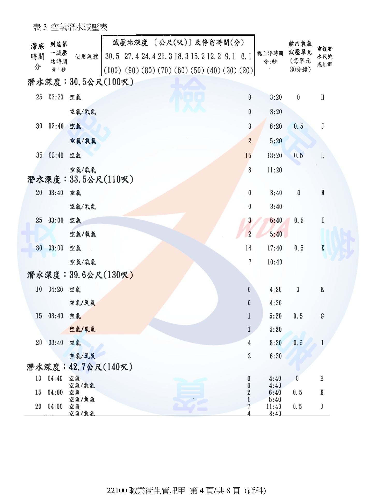
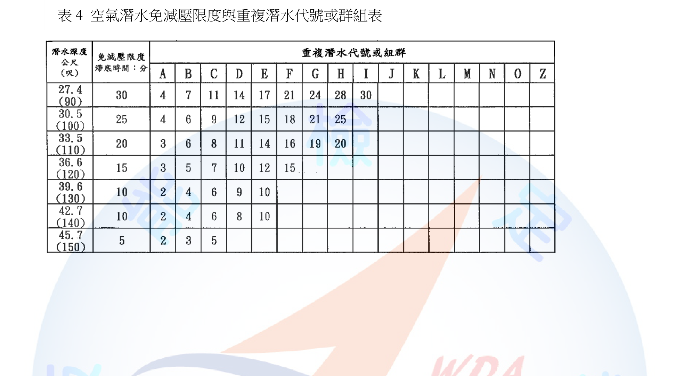
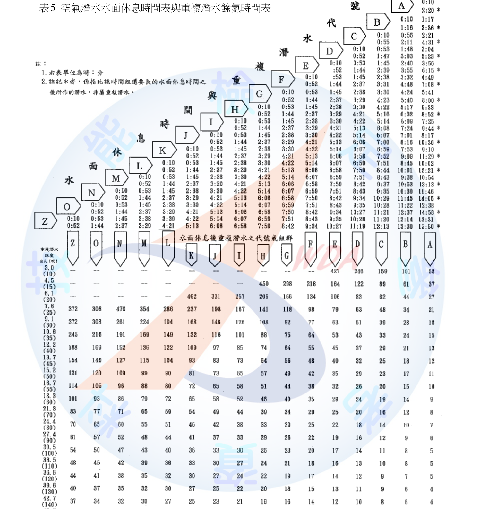
(一) 潛水作業之定義 依《異常氣壓危害預防標準》，潛水作業指使用潛水器具之水肺或水面供氣設備等，於水深超過10公尺之水中實施之作業。本題潛水員於水面下30～42公尺深處作業，水深遠超過10公尺，屬本標準所稱之潛水作業，應依標準之各項設備、人員配置及作業程序規定辦理。
(二) 氮氣人工調和混合氣之氧分壓限制 雇主使勞工從事潛水作業而使用氮氧人工調和混合氣供給氣體時，應參照相當空氣潛水深度並依其減壓時程作業，其氧氣濃度不得超過40%，且氧分壓不得超過1.4絕對大氣壓力。
(三) 潛水員甲之減壓程序 X、Y、Z 依表1，潛水員甲於07:30下水，潛水深度42公尺，滯底時間17分。其上升至第一減壓站時間(X)、使用空氣減壓停留時間(Y)、上浮時間總計(Z)，應依附表3「空氣潛水減壓表」，以「潛水深度42公尺、滯底時間17分」為查表條件，交叉查出對應之X（分:秒）、Y（分:秒）、Z（分:秒）三項數值。 〔說明：附表3之減壓時間表為原卷圖表附件，本詳解無法取得該表逐格數值，故無法代入查出X、Y、Z之精確答案，僅能提供查表方法；應考時請依附表3實際刊載數值代入查表作答。〕
(四) 潛水日誌保存年限 依《異常氣壓危害預防標準》第39條，雇主使勞工從事潛水作業時應置潛水作業主管，其應辦理事項之一為「填具潛水日誌，記錄每位潛水人員作業情形、減壓時間及工作紀錄，資料保存十五年」。
(五) 潛水員乙重複潛水相關數值 1. 潛水員乙上午10:00首次潛水（深度32公尺、滯底時間20分），依附表4「空氣潛水免減壓限度與重複潛水代號或群組表」，以「潛水深度32公尺、滯底時間20分」查得本次潛水結束時之重複潛水代號或群組。 2. 水面休息3小時15分後，依附表5「空氣潛水水面休息時間表」，以第1步驟查得之代號與水面休息時間（3時15分）交叉查得水面休息後之新代號或群組。 3. 依附表5之「重複潛水餘氮時間表」，以第2步驟之代號查得對應之餘氮時間（分）。 4. 第2次潛水（14:00，深度32公尺）之免減壓限度滯底時間，應以「表列之免減壓滯底時間 － 餘氮時間」計算實際可再滯底之時間上限，並依附表4查得32公尺深度之基本免減壓限度滯底時間後代入計算。 〔說明：同(三)，附表4、附表5之具體代號、餘氮時間對照數值為原卷圖表，本詳解無法取得逐格數據代入，僅列出正確查表與計算步驟；應考時請依附表4、附表5實際刊載內容代入查表計算。〕
本題核心考潛水減壓與重複潛水查表能力，附表2～5為技能檢定術科現場發放之圖表附件，答題關鍵在於「查表順序」不可顛倒：先查免減壓限度或減壓表得基本數據，再依水面休息時間查餘氮，最後以餘氮反推第2次潛水可用滯底時間上限。氧氣濃度40%與氧分壓1.4ATA、潛水日誌保存15年為常考硬性數字，務必背熟。
某工廠使用鎳粉末加熱熔融後急速冷卻形成氧化鎳，勞工在此作業環境長期工作，若未經適當危害控制可能會罹患職業病。請依特定化學物質危害預防標準規定，回答下列問題： (一) 鎳粉末投料口設有一局部排氣裝置，請寫出此局部排氣裝置應符合那5項規定。(10分) (二) 雇主應使特定化學物質作業主管執行那4項規定事項？(8分) (三) 如果勞工的身體或衣著有被鎳污染之虞時，雇主應設置何種設備？(2分)
(一) 局部排氣裝置應符合之5項規定 依《特定化學物質危害預防標準》第17條，雇主依本標準規定設置之局部排氣裝置，應符合下列規定： 1. 氣罩應置於每一氣體、蒸氣或粉塵發生源；如為外裝型或接受型氣罩，應儘量接近各該發生源設置。 2. 應儘量縮短導管長度、減少彎曲數目，並於適當處所設置易於清掃之清潔口與測定孔。 3. 設置有除塵裝置或廢氣處理裝置者，其排氣機應置於該裝置之後（但所吸引氣體、蒸氣或粉塵無爆炸之虞且不致腐蝕排氣機者不在此限）。 4. 排氣口應置於室外。 5. 於製造或處置特定化學物質之作業時間內有效運轉，以降低空氣中有害物濃度。
(二) 特定化學物質作業主管應執行之4項規定事項 依《特定化學物質危害預防標準》第37條，雇主使勞工從事特定化學物質之作業時，應指定現場主管擔任特定化學物質作業主管，執行下列規定事項： 1. 預防從事作業之勞工遭受污染或吸入該物質。 2. 決定作業方法並指揮勞工作業。 3. 保存每月檢點局部排氣裝置及其他預防勞工健康危害之裝置一次以上之紀錄。 4. 監督勞工確實使用防護具。
(三) 身體或衣著受鎳污染之虞時應設置之設備 鎳及其化合物屬《特定化學物質危害預防標準》第3條所稱之特定管理物質，惟非屬第36條第2項所列丙類第一種物質、丁類物質、鉻酸及其鹽類或重鉻酸及其鹽類。依同標準第36條第1項，雇主使勞工從事製造、處置或使用特定化學物質，其身體或衣著有被污染之虞時，應設置洗眼、洗澡、漱口、更衣及洗濯等設備（尚不須達第36條第2項所要求「緊急洗眼及沖淋設備」之等級）。
本題易失分處在(三)：多數考生看到「化學品污染身體」直覺答「緊急洗眼及沖淋設備」，但法規對此設備有明確物質範圍限定（丙一、丁類、鉻酸及重鉻酸鹽類），鎳及其化合物僅屬特定管理物質，不在其列，故僅需一般洗眼、洗澡、漱口、更衣、洗濯設備即可，需精確辨別條文適用範圍，不可逕行套用最嚴格之設備要求。
民國104年及106年事業單位進行溫泉水槽清洗工作時，相繼發生溫泉水槽清洗工硫化氫中毒身亡案例。試就下列不同作業時間，分別列舉雇主為避免硫化氫中毒致死事故的再次發生，應執行之管理事項及預防措施。 (一) 事業單位使勞工進入溫泉水槽從事清洗工作前。(請列舉5項，10分) (二) 勞工於作業場所，即將進入或進入溫泉水槽從事清洗作業。(請列舉5項，10分)
溫泉水槽內部屬通風不充分之空間，且溫泉水中易滋生硫化氫，符合《職業安全衛生設施規則》所稱之局限空間，應依局限空間作業相關規定辦理。
(一) 進入溫泉水槽清洗工作「前」應執行之管理事項及預防措施（5項） 1. 先確認槽內有無缺氧、中毒等危害之虞，訂定危害防止計畫，內容包含危害確認、氧氣及硫化氫等有害物濃度測定方式、通風換氣實施方式、進入作業許可程序及緊急應變處置措施。 2. 於作業場所入口顯而易見處公告注意事項（許可進入之重要性、進入應採措施、緊急聯絡方式、監視人員姓名等），使作業勞工周知。 3. 禁止作業無關人員進入，於非作業期間對水槽入口採取上鎖或阻隔等管制措施。 4. 置備測定氧氣濃度、硫化氫濃度之必要測定儀器，並事先規劃通風換氣設備之種類與供氣方式。 5. 指定現場作業主管、監視人員，並事前完成相關人員（含缺氧作業主管）之安全衛生教育訓練及個人防護具（如空氣呼吸器、安全帶）之備置與檢點。
(二) 即將進入或進入溫泉水槽清洗作業「時」應執行之管理事項及預防措施（5項） 1. 於作業前及作業期間持續確認氧氣濃度保持在18%以上、硫化氫濃度低於容許濃度，並於當日作業開始前、所有勞工離開後再次開始作業前及勞工身體或換氣裝置異常時，重新確認濃度。 2. 依進入許可程序辦理，由雇主、工作場所負責人或現場作業主管簽署進入許可，載明測定結果、危害隔離措施、防護與救援設備等事項，並對勞工進出予以確認、點名登記。 3. 持續實施通風換氣，維持適當之換氣裝置有效連續運轉，不得使用純氧換氣。 4. 指派監視人員全程在場監視作業狀況，與槽內作業勞工保持隨時可聯繫，發現異常立即通知缺氧作業主管並採取緊急措施。 5. 使勞工確實佩戴空氣呼吸器等呼吸防護具、安全帶及可偵測人員活動情形之裝置，並置備動力或機械輔助之緊急救援設備，以利發生中毒等意外時迅速救出。
本題為職業衛生甲級常考之局限空間／缺氧硫化氫中毒案例題，答題架構宜嚴格區分「進入前（計畫、公告、管制、儀器備置）」與「進入中（許可簽署、持續測定、通風、監視、防護具佩戴）」兩階段，避免將兩階段事項混雜列舉；且務必扣住溫泉水槽「硫化氫」此一特定危害物，勿僅泛答「缺氧預防」而漏答中毒（硫化氫）防制措施。
試回答下列問題： (一) 你是一家企業的職業安全衛生人員，會同從事勞工健康醫護人員規劃「母性健康保護計畫」，試依「職業安全衛生法」、「女性勞工母性健康保護實施辦法」、「工作場所母性健康保護技術指引」回答下列問題： 1. 規劃的第1個步驟是工作環境及作業危害辨識與評估，請問依規定妊娠中和分娩後未滿1年之女性勞工，均不得從事的危險性或有害性工作有那4項？(4分) 2. 某位女性勞工懷孕，經通知主管後，通報你和醫師、護理師進行危害辨識與評估，評估後醫師判定該勞工之健康風險等級為第二級，請略述說明此風險等級的內涵為何？(2分) 3. 承上題，對健康風險等級為第二級之懷孕勞工，請就雇主在環境危害預防管理與健康管理等2個面向，分別提出2項應執行之措施。(4分) (二) 簡短列舉發現勞工身體局部受化學品噴濺而發生局部性燒灼傷害時，事業單位依勞工健康保護規則設置之急救人員，應實施之緊急處置步驟。(10分)
(一)1. 妊娠中與分娩後未滿1年均不得從事之工作（4項） 比對《職業安全衛生法》第30條第1項（妊娠中14項）與第2項（分娩後未滿1年5項）之交集，兩者共同禁止事項為： ①礦坑工作。②鉛及其化合物散布場所之工作。③鑿岩機及其他有顯著振動之工作。④一定重量以上之重物處理工作。 （此4項屬對母體與胎兒／嬰兒皆有直接高風險之作業，不因分娩與否而放寬，其餘項目則僅於妊娠期間禁止，分娩後未滿1年並非一律禁止。）
(一)2. 第二級健康風險之內涵 依《女性勞工母性健康保護實施辦法》第9條，風險等級係依「作業場所空氣中暴露濃度」及「醫師評估結果」二軸判定：屬第二級管理者，係作業場所空氣中暴露濃度達容許暴露標準十分之一以上未達二分之一，或經醫師評估該工作或情形可能影響母體、胎兒或嬰兒健康之情形，風險程度介於「無害（第一級）」與「有危害之虞（第三級）」之間，屬需加強管理但尚不必然變更工作之中度風險等級。
(一)3. 第二級風險之環境危害預防管理與健康管理各2項措施 依《女性勞工母性健康保護實施辦法》第11條，風險等級屬第二級管理者，雇主應使勞工健康服務醫師提供個人面談指導，並採取危害預防措施；具體可展開為： - 環境危害預防管理面：①強化工程控制（如加強局部排氣、整體換氣或縮短暴露時間）以降低暴露濃度；②調整作業安排（如調換至低暴露製程、限制加班或避免高風險時段作業）。 - 健康管理面：①由勞工健康服務醫師進行個別面談指導，說明危害資訊並記錄追蹤；②縮短健康追蹤檢查（產檢／特殊健康檢查）之間隔週期，密切監測母體及胎兒健康狀況，經當事人書面同意後始得繼續原工作。
(二) 化學品噴濺局部灼傷之急救人員緊急處置步驟 1. 立即使傷者脫離污染源，移至安全且通風良好處所，並確保現場無持續暴露風險。 2. 迅速脫除或剪除已受化學品污染之衣物、鞋襪及飾品，避免化學品持續接觸皮膚造成更深層傷害。 3. 立即以大量清水沖洗傷處，持續沖洗至少15～20分鐘以上，以稀釋並沖除殘留化學品（眼部噴濺應以緊急洗眼設備沖洗）。 4. 沖洗過程中檢視傷勢範圍與嚴重程度（面積、深度、是否化學品仍具腐蝕性反應），避免自行塗抹油脂、藥膏或民間偏方。 5. 以無菌或清潔敷料覆蓋傷口，並儘速通報現場主管及聯繫救護後送至醫療機構，同時告知醫護人員所接觸化學品名稱（可提供安全資料表SDS）以利後續專業處置。
(一)1易失分於誤將妊娠中專屬項目（如異常氣壓、致畸胎物質、輻射等）誤答為兩者共同項目，須以「交集」邏輯作答；(二)化學灼傷急救之核心口訣為「離開污染源→脫除污染衣物→大量清水沖洗15分鐘以上→送醫」，沖洗時間與範圍為評分關鍵，切勿漏答沖洗時間長度。
某放射性物質作業人員欲進行銫-137(Cs-137)、鈷-60(Co-60)之管理，試回答下列問題： (一) 銫-137的半衰期為30.05年，若其放射活性(radioactivity)為1居里(curie, Ci)，30年後此放射性物質之放射活性為多少巴克(Becquerel, Bq)？(A = A0e^(-0.693×t/T1/2)，1 Ci = 3.7×10^10 Bq，答案四捨五入取至小數點後3位，10分) (二) 鈷-60之放射活性為0.5居里，若其儲放設備發生破損，於距離破裂處約1公尺處之偵測點，所測得之游離輻射暴露劑量為5 rad/hr，經估計此儲放設備需一星期才能修復，請問距離偵測點多少公尺處，一般作業勞工之一週40小時工時之游離輻射暴露劑量(假設射質因數(quality factor)=1，不考慮組織器官之影響)，可控制在0.4毫西弗(mSV)之下？(1西弗=100 rem，答案四捨五入取至小數點後1位，10分)
(一) Cs-137 30年後放射活性
代入衰變公式： A = A0 × e^(－0.693 × t / T₁/₂) = 1 Ci × e^(－0.693 × 30 / 30.05) = 1 Ci × e^(－0.691847) = 1 Ci × 0.500650（e^(－0.691847)之值，較e^(－ln2)=0.5略大，因指數略小於ln2） = 0.500650 Ci
換算為Bq： A = 0.500650 Ci × 3.7×10¹⁰ Bq/Ci = 1.852405×10¹⁰ Bq ≈ 1.852×10¹⁰ Bq（取小數點後3位）
(二) 鈷-60 安全距離計算
已知：1公尺處劑量率＝5 rad/hr；射質因數QF＝1，故rem數值等於rad數值（1 rad×QF＝1 rem）。
目標：一週40小時暴露之等價劑量須控制在0.4毫西弗（mSv）以下。 換算單位：1西弗＝100 rem ⇒ 1毫西弗＝0.1 rem ⇒ 0.4毫西弗＝0.04 rem。
換算為容許劑量率（rem/hr）： 容許劑量率 = 0.04 rem ÷ 40 hr = 0.001 rem/hr = 0.001 rad/hr（因QF＝1）
依游離輻射點源劑量與距離平方成反比（反平方定律）： D(d) = D(1m) ÷ d² 0.001 = 5 ÷ d² d² = 5 ÷ 0.001 = 5,000 d = √5,000 ≈ 70.7107 m ≈ 70.7 公尺（取小數點後1位）
結論：作業勞工應與破損儲放設備保持至少約70.7公尺以上之距離，其一週40小時暴露之游離輻射劑量方能控制在0.4毫西弗以下。
(一)關鍵在準確代入衰變公式並注意e的指數計算精度（指數略小於ln2＝0.6931時，衰變分率略大於0.5，不可直接套用「30年≈半衰期，故約剩一半」之粗略估算而不列計算式，否則不予計分）；(二)關鍵在單位換算鏈（西弗→毫西弗→rem，再除以工時得容許劑量率），以及正確使用反平方定律而非線性反比，此為輻射距離防護計算最常見之錯誤來源。
⚠️ 本詳解為 AI 彙整之參考擬答，非官方標準答案；法規內容以最新公告版本為準。
你任職於某家陶瓷衛浴設備製造業的職業衛生管理師，深知粉塵作業過程中可能造成勞工之健康問題發生，因此著手廠內粉塵作業危害調查及危害控制。針對廠內使用黏土、長石、矽石等為成分之原料之生產製程進行作業調查，結果如表一（作業場所1～8，含作業描述、作業頻率、作業時間、現有危害預防措施、作業人數、作業處所；備註：1動力搗碎機最大能力每小時25公斤／3動力篩選機篩選面積600平方公分／4混合機內容積15公升）。請依職業安全衛生法及相關附屬法規回答下列問題： (一) 因吸入礦物性粉塵或金屬燻煙等物質致沉積肺部，造成肺部有粒狀或塊狀纖維化，產生無法治癒之病變，此疾病名稱為何？(2分) (二) 請對照表一回答下列問題：1.需每6個月監測粉塵濃度一次以上之特定粉塵作業場所有那些？(2分) 2.現有危害控制未符合法令規定之作業場所為何？(2分) 3.承上題，應改為何種粉塵危害控制方式？(2分) 4.應指定粉塵作業主管從事監督之作業有那些？(2分) 5.廠內勞工每年定期實施粉塵作業之特殊健康檢查的勞工人數至少為幾人？(2分) (三) 1.可呼吸性粉塵量之採樣，需使用那種裝置進行採樣？(2分) 2.若某次採樣樣本之結晶型可呼吸性游離二氧化矽含量為18%，則8小時日時量平均容許濃度為多少mg/m3？(2分) (四) 1.呼吸防護措施除防護具之選擇、使用與維護及管理和成效評估及改善外，尚有那些事項？(2分) 2.所執行之紀錄應留存年限至少為多少年？(2分)
(一) 疾病名稱 此為塵肺症（Pneumoconiosis），係長期吸入礦物性粉塵（如游離二氧化矽、石綿等）或金屬燻煙沉積肺部，引發肺部瀰漫性或結節性纖維化病變，屬不可逆、無法治癒之慢性職業病。
(二)1. 每6個月監測粉塵濃度之特定粉塵作業場所 依表一備註，作業場所1動力搗碎機最大能力每小時25公斤，已達《粉塵危害預防標準》第13條所定「搗碎或粉碎最大能力每小時20公斤」之門檻以上，屬應依第6條設置密閉設備或局部排氣裝置之特定粉塵作業，須每6個月監測粉塵濃度一次以上；作業場所2（袋裝黏土等粉狀原料）、6（半製品乾燥）等使用黏土、長石、矽石原料之室內粉塵作業亦屬特定粉塵發生源。 反之，作業場所3動力篩選機篩選面積600平方公分（小於第13條門檻700平方公分）、作業場所4混合機內容積15公升（小於第13條門檻18公升），均低於法定門檻，得以整體換氣及呼吸防護具替代，非屬須強制設置局部排氣裝置之特定粉塵作業場所。 答：作業場所1、2、6（使用黏土、長石、矽石等原料，且製程規模達法定門檻之室內粉塵作業場所）。
(二)2. 現有危害控制未符合法令規定之作業場所 作業場所1動力搗碎機（最大能力25公斤/時，已逾第13條20公斤/時門檻），現有危害預防措施僅為「個人呼吸防護具」，未依《粉塵危害預防標準》第6條設置密閉設備、局部排氣裝置或整體換氣裝置，不符合法令規定。 答：作業場所1。
(二)3. 應改為之粉塵危害控制方式 依《粉塵危害預防標準》第6條，雇主應就特定粉塵發生源設置密閉設備、局部排氣裝置，或整體換氣裝置（或具同等以上性能之設備）其中之一，並非僅供給呼吸防護具即可免責；就動力搗碎機此類粉塵易高濃度逸散之發生源，實務上建議優先採密閉設備或局部排氣裝置加以控制，輔以呼吸防護具作為最後一道防線。
(二)4. 應指定粉塵作業主管從事監督之作業 依《粉塵危害預防標準》第20條，雇主僱用勞工從事粉塵作業時，應指定粉塵作業主管從事監督作業，其適用範圍為表一所列使用黏土、長石、矽石等原料之各粉塵作業場所（即室內從事搗碎、篩選、混合、乾燥、修飾、燒成等粉塵作業之場所）。 答：作業場所1～8（凡從事粉塵作業之場所均應指定，不限於特定粉塵作業場所）。
(二)5. 特殊健康檢查勞工人數 陶瓷原料（黏土、長石、矽石）粉塵作業屬《勞工健康保護規則》所定特別危害健康作業，雇主應每年對從事該作業之勞工實施特殊健康檢查。依表一備註，各作業場所人數未重複計算且各自獨立，加總作業場所1至8之作業人數：2+2+1+3+5+2+2+2＝19人。
(三)1. 可呼吸性粉塵採樣裝置 可呼吸性粉塵（respirable dust）之採樣應使用具粒徑選擇分離功能之前置分離器（如10 mm尼龍旋風分離器，Nylon Cyclone），搭配定流量採樣泵及濾紙匣，以符合ACGIH／CNS可呼吸性粉塵之粒徑效率曲線進行採樣。
(三)2. 結晶型游離二氧化矽18%之8小時TWA 依《勞工作業場所容許暴露標準》附表對可呼吸性粉塵中含結晶型游離二氧化矽之容許濃度計算公式： 容許濃度(mg/m³) = 10 ÷（%SiO2 ＋ 2） = 10 ÷（18＋2） = 10 ÷ 20 = 0.5 mg/m³
(四)1. 呼吸防護措施尚須包含之事項 依《職業安全衛生設施規則》第277-1條，呼吸防護措施除防護具之選擇、使用、維護及管理、成效評估及改善外，尚應包含：①危害辨識及暴露評估 ②呼吸防護教育訓練。
(四)2. 紀錄留存年限 依同條規定，呼吸防護措施執行紀錄應留存3年。
本題(二)最易失分處在於混淆「須設置局部排氣裝置之特定粉塵作業（門檻以上）」與「須指定粉塵作業主管之粉塵作業（不限門檻，範圍較廣）」兩種不同法定範圍，前者依規模門檻篩選，後者原則上凡從事粉塵作業即應指定；(三)2.務必背熟游離二氧化矽容許濃度公式10/(%SiO2+2)，並注意單位為可呼吸性粉塵。
試回答下列問題： (一) 1.GRI 403是有關那方面的準則？(1分) 2.與勞動相關的事項大多會放在ESG報告中的那一類？(1分) (二) ISO 45003強調職場社會心理風險(psychosocial risk)之預防：1.何謂與社會心理相關的風險？(2分) 2.試列舉2例職場社會心理風險類型。(2分) 3.「well-being at work」較恰當之中文用詞？(1分) 4.簡單說明其含義。(1分) (三) 依勞動部職業安全衛生管理規章及職業安全衛生管理計畫指導原則之建議，除已列9項職業安全衛生管理計畫事項以外，請再列舉3項建議執行之事項。(6分) (四) 依職業安全衛生管理辦法之規定，雇主對局部排氣裝置、空氣清淨裝置及吹吸型換氣裝置每年應實施檢查一次之事項，除其他保持性能之必要事項外，請列舉3項。(6分)
(一) GRI 403與ESG分類 1. GRI 403係GRI準則系列中專門規範「職業健康與安全（Occupational Health and Safety）」之準則，要求企業揭露職安衛管理系統、危害辨識、事故統計（如失能傷害頻率、嚴重率）、勞工健康服務等資訊。 2. 勞動相關事項（如職業安全衛生、勞資關係、人才培育、多元共融等）於ESG三大構面中，多歸類於「社會責任（S，Social）」類議題。
(二) ISO 45003社會心理風險 1. 社會心理相關風險之定義：指工作設計、工作組織與管理方式，以及此等工作之社會脈絡，其可能對工作者身心健康造成傷害之潛在可能性（即工作型態、職場人際與組織管理面向對勞工心理健康產生負面影響之風險）。 2. 職場社會心理風險類型舉例（任舉2例）：過度工作負荷或時間壓力（如長工時、趕工壓力）、職場不當對待（如職場霸凌、暴力、性騷擾）。（其餘尚有角色衝突、工作不安全感、組織不公平、缺乏自主性等） 3. 「well-being at work」較恰當之中文用詞：「職場身心健康」（或譯「職場福祉」）。 4. 含義：指工作者在工作場所中，其生理、心理及社會層面均處於良好、正向之整體安適狀態，不僅止於免於疾病或傷害，更涵蓋工作滿足感、心理韌性及組織支持感受等積極面向。
(三) 職業安全衛生管理計畫再列舉3項建議事項 除題目已列之工作環境或作業危害辨識評估控制、機械設備器具管理、危險性工作場所製程施工安全評估、採購承攬變更管理、安全衛生教育訓練、安全衛生作業標準訂定、定期檢查重點檢查作業檢點現場巡視、安全衛生資訊蒐集分享運用、緊急應變措施等事項外，可再列舉： 1. 個人防護具之管理（選用、發放、教育使用與定期汰換）。 2. 健康檢查、健康管理及健康促進措施。 3. 職業災害、虛驚事故及影響身心健康事件之調查處理與統計分析。
(四) 局部排氣裝置等每年應實施檢查之3項事項 依《職業安全衛生管理辦法》第40條，雇主對局部排氣裝置、空氣清淨裝置及吹吸型換氣裝置應每年定期實施檢查一次，除其他保持性能之必要事項外，可列舉： 1. 氣罩、導管及排氣機之磨損、腐蝕、凹凸及其他損害之狀況及程度。 2. 導管或排氣機之塵埃聚積狀況。 3. 吸氣及排氣之能力。 （其餘尚有排氣機注油潤滑狀況、導管接觸部分狀況、傳動皮帶鬆弛狀況、採樣設施牢固狀況等。）
本題(一)(二)為ESG／國際職安管理準則之時事整合題，答題重點在準確辨識GRI 403、ISO 45003、well-being at work之對應中文概念，避免與ISO 45001（管理系統本身）混淆；(四)務必掌握第40條系局部排氣裝置「本體」之每年檢查項目，與第41條「內部空氣清淨裝置」檢查項目（構造磨損、塵埃堆積、濾布破損等）不同，作答時不可混用。
你被指派擔任一間新建工廠的職業衛生管理師，這家工廠於去年年初開始動工興建，預定今年第三季要完工，讓人員進駐和移入機台設備等，試依職業安全衛生相關法規回答下列問題。 (一) 依勞工健康保護規則之規定，依下表當年度每個季度的員工總人數（前一年度32人特別危害健康作業2人配置0人；第1季150人/10人、第2季350人/20人、第3季1200人/90人、第4季1700人/160人），應各至少配置多少位專任護理人員(A、B、C、D)？(4分) (二) 依勞工健康保護規則或職業安全衛生法，護理人員需與醫師、職業安全衛生人員或人事等人員，辦理那些勞工健康服務事項或安全衛生措施，請寫出6項。(12分) (三) 依勞工健康保護規則規定，雇主使勞工從事第二條規定之特別危害健康作業，應每年依第十六條附表十所定項目實施特殊健康檢查。請列舉說明特殊作業健康檢查之健康管理分級結果為第三級和第四級者的管理內容？(4分)
(一) 各季應配置之專任護理人員人數 依《勞工健康保護規則》第3條，事業單位勞工人數在300人以上或從事特別危害健康作業之勞工人數在50人以上者，應依附表三所定人力配置，僱用從事勞工健康服務之護理人員： - 前一年度32人（特別危害健康作業2人）：均未達300人及50人雙門檻 → 0人（題目已給）。 - 第1季150人（特殊10人）：未達300人及50人門檻 → A＝0人。 - 第2季350人（特殊20人）：總人數已達300人以上門檻，依附表三規模級距屬300～999人區間 → B＝1人。 - 第3季1200人（特殊90人）：屬1,000～2,999人區間 → C＝2人。 - 第4季1700人（特殊160人）：仍屬1,000～2,999人區間 → D＝2人。 〔說明：附表三完整級距數值表為法規附件，本機語料僅收錄第3條門檻本文，上列配置人數係依規模級距原則估算之近似值，實際配置人數請以現行公告之附表三精確對照表為準。〕
(二) 護理人員與醫師、職安人員等辦理之勞工健康服務事項（6項） 依《勞工健康保護規則》第9條，雇主應使勞工健康服務人員臨場辦理下列事項（任列6項）： 1. 勞工體格（健康）檢查結果之分析與評估、健康管理及資料保存。 2. 協助雇主選配勞工從事適當之工作。 3. 辦理健康檢查結果異常者之追蹤管理及健康指導。 4. 辦理未滿18歲勞工、有母性健康危害之虞之勞工、職業傷病勞工與職業健康相關高風險勞工之評估及個案管理。 5. 職業衛生或職業健康之相關調查分析及傷害、疾病紀錄之保存。 6. 工作相關疾病預防之健康保護與健康促進等措施之策劃及實施、健康諮詢與急救及緊急處置。
(三) 特殊健康檢查健康管理分級第三級、第四級之管理內容 依《勞工健康保護規則》第22條： - 第三級管理：特殊健康檢查或健康追蹤檢查結果，部分或全部項目異常，經職業醫學科專科醫師（職醫）綜合判定為異常，惟無法確定此異常與工作之相關性，應進一步請職醫評估。管理上，雇主應請職醫實施健康追蹤檢查，必要時應會同職業安全衛生人員實施疑似工作相關疾病之現場評估，並依評估結果重新分級，將分級結果及採行措施依中央主管機關公告方式通報。 - 第四級管理：特殊健康檢查或健康追蹤檢查結果異常，經職醫綜合判定為異常且與工作有關者。管理上，經職醫評估現場仍有工作危害因子暴露者，雇主應採取危害控制及相關管理措施（如變更作業內容、調整工時或工程改善），以降低勞工繼續暴露風險。
(一)因附表三精確級距數值未收錄於本機語料，作答時採規模區間常見級距估算，惟提醒實際應試應直接查閱附表三原文對照表以取得精確人數，不可僅憑經驗猜測；(三)第三級與第四級之核心區別在於「異常是否與工作相關」，第三級尚待釐清關聯性（故先追蹤評估），第四級已確認與工作有關（故須立即採取危害控制），答題時應清楚點出此因果判定差異，而非僅重複檢查結果異常之描述。
(一) 當勞工因長期暴露於職場危害，發生慢性聽力損失或反覆發作氣喘主張為職業病時，請將職業病認定原則A至E與甲至戊對應。(10分，答題方式如A-甲、B-乙) A.職業暴露的證據 B.排除其他可能導致相同疾病或症狀的因子 C.符合時序性 D.疾病的證據 E.符合人類流行病學已知的證據 (二) 請配對常見的熱疾病及其致病機轉。(10分，答題方式如A-甲、B-乙) A.熱痙攣 B.熱水腫 C.熱衰竭 D.熱中暑 E.熱暈厥
(一) 職業病認定原則配對 依職業病認定之「五項基本原則」（疾病證據、暴露證據、時序性、流行病學證據、排除其他病因）逐一對照聽力損失／氣喘兩欄之描述內容： - D-甲：疾病的證據 — 聽力損失：雙耳對稱性感音性聽力損失、早期純音聽力圖4K或6K凹陷；氣喘：肺功能、最大呼氣流量、病史及理學檢查證實可逆性呼吸道阻塞或確診氣喘。（先有明確醫學診斷之疾病） - A-乙：職業暴露的證據 — 聽力損失：長期於85dB以上噪音作業環境工作；氣喘：工作時暴露於特定致敏原或可致職業性氣喘之物質。（存在與工作相關之致病因子暴露） - C-丙：符合時序性 — 聽力損失：發生在暴露職業性噪音之後，且停止暴露後不再持續惡化；氣喘：於特定工作開始後才發生或明顯惡化，離開工作場所後肺功能明顯進步。（發病與暴露之時間先後關係） - E-丁：符合人類流行病學已知證據 — 聽力損失：歷年聽力檢查符合職業性聽力損失特性，持續穩定噪音暴露10～15年達聽力損失極限；氣喘：有醫學文獻支持懷疑之職業性氣喘誘發因子致病機轉。（有相關文獻及相似作業勞工症狀佐證） - B-戊：排除其他可能導致相同疾病之因子 — 聽力損失：合理排除年齡、藥物性中耳疾病等非職業性噪音因素；氣喘：合理排除慢性支氣管炎、肺氣腫等非工作環境所致之常見肺部阻塞性疾病。
(二) 熱疾病與致病機轉配對 - A-戊：熱痙攣 — 在高濕熱環境下長時間活動，因流汗過多或補充過多水分致電解質不平衡，導致骨骼肌不自主收縮引發肌肉疼痛。 - B-丁：熱水腫 — 肢體皮下血管擴張，組織間液積聚於四肢，通常於熱環境暴露後數天內發生。 - C-乙：熱衰竭 — 因流汗過多，未適時補充水分或電解質，導致血液循環失調。 - D-甲：熱中暑 — 在無法散發熱量的環境中，造成體溫調節功能失常及中樞神經系統失調，使細胞產生急性反應。 - E-丙：熱暈厥 — 因血管擴張、水分流失、血管舒縮失調，導致腦部血流暫時不足，發生暫時性姿勢性低血壓。
本題(一)(二)所涉之「職業病認定五原則」及「熱疾病分類與致病機轉」，屬職業醫學及工業衛生教材之通用專業知識（非特定法律或命令條文之逐條規定），故不引用特定法規條號，僅依專業知識作答。
(一)易混淆之處在於「時序性」與「流行病學證據」兩者皆涉及時間因素，區別在於前者強調「個案本身暴露與發病之先後次序」，後者強調「群體流行病學文獻佐證之暴露-發病年限規律」；(二)熱疾病配對務必掌握「痙攣＝肌肉電解質失衡」「水腫＝皮下血管擴張＋數天內發生」「衰竭＝脫水血循環失調」「中暑＝體溫調節失常＋中樞神經失調（最嚴重）」「暈厥＝姿勢性低血壓」五者之機轉關鍵字，才能正確配對不致混淆。
勞工甲在機械工廠使用丙酮及1-溴丙烷從事零組件清潔作業，某日監測結果：08:30-10:30丙酮60ppm、1-溴丙烷0.02ppm；10:30-12:30丙酮65ppm、1-溴丙烷0.01ppm；13:30-15:30丙酮55ppm、1-溴丙烷0.07ppm；15:30-18:00丙酮290ppm、1-溴丙烷0.1ppm。監測於1atm、25℃條件下進行。丙酮及1-溴丙烷之8小時日時量平均容許濃度分別為475mg/m3及0.5ppm；丙酮分子量為58。丙酮及1-溴丙烷相互間效應非屬相乘效應或獨立效應。變量係數表：容許濃度未滿1→3；1以上未滿10→2；10以上未滿100→1.5；100以上未滿1000→1.25；1000以上→1。請回答：(一)丙酮之8小時日時量平均容許濃度如以ppm表示為多少？(4分)(二)勞工全程工作日暴露丙酮之時量平均濃度為多少ppm？(4分)(三)勞工暴露1-溴丙烷之相當8小時日時量平均濃度為多少ppm？(4分)(四)請評估勞工作業場所之危害暴露是否符合規定。(8分)（四捨五入至小數點後第3位，需寫出計算或評估過程）
(一) 丙酮8小時TWA換算為ppm
25℃、1atm下氣體莫耳體積為24.45 L/mol，換算公式：ppm＝mg/m³×(24.45／分子量) ＝475×(24.45／58) ＝475×0.421552 ＝200.237 ppm
(二) 丙酮全程工作日時量平均濃度
各時段工作時間：08:30-10:30＝2hr；10:30-12:30＝2hr；13:30-15:30＝2hr；15:30-18:00＝2.5hr（12:30-13:30為午休未列入監測，不計入工作時間） 總工作時間＝2+2+2+2.5＝8.5 hr
時量平均濃度＝Σ(Ci×ti)／Σti ＝(60×2＋65×2＋55×2＋290×2.5)／8.5 ＝(120＋130＋110＋725)／8.5 ＝1085／8.5 ＝127.647 ppm
(三) 1-溴丙烷相當8小時日時量平均濃度
時量平均濃度＝Σ(Ci×ti)／Σti ＝(0.02×2＋0.01×2＋0.07×2＋0.1×2.5)／8.5 ＝(0.04＋0.02＋0.14＋0.25)／8.5 ＝0.45／8.5 ＝0.053 ppm
(四) 危害暴露評估
1. 丙酮全程工作日TWA檢核 127.647 ppm ＜ 200.237 ppm（PEL-TWA），符合8小時日時量平均容許濃度規定。
2. 丙酮短時間時量平均容許濃度（STEL）檢核 丙酮PEL＝200.237ppm，屬變量係數表「100以上，未滿1000」級距，變量係數＝1.25 STEL＝200.237×1.25＝250.296 ppm 惟15:30-18:00時段丙酮時量平均濃度高達290 ppm＞250.296 ppm，已超過短時間時量平均容許濃度，不符合規定。
3. 1-溴丙烷TWA及STEL檢核 TWA：0.053 ppm ＜ 0.5 ppm，符合。 STEL：PEL＝0.5ppm，屬「未滿1」級距，變量係數＝3，STEL＝0.5×3＝1.5 ppm；各時段最高值0.1 ppm＜1.5 ppm，符合。
4. 混合暴露相加效應檢核（以TWA基礎） 丙酮與1-溴丙烷之效應非屬相乘或獨立效應，應視為相加效應： 總和＝(C丙酮／PEL丙酮)＋(C1-溴丙烷／PEL1-溴丙烷) ＝(127.647／200.237)＋(0.053／0.5) ＝0.6375＋0.106 ＝0.744（＜1，以TWA基礎評估尚未超標）
結論：雖全程工作日TWA及混合相加效應（0.744＜1）均未超標，惟丙酮於15:30-18:00時段之短時間時量平均濃度（290 ppm）已超過其STEL（250.296 ppm），故該勞工之作業場所危害暴露整體不符合法令規定，雇主應針對午後時段（15:30-18:00）加強局部排氣或整體換氣等工程改善措施，降低丙酮尖峰暴露濃度。
本題設計刻意提供「變量係數表」，若考生僅計算TWA及混合相加效應而忽略以最高時段濃度檢核STEL，將漏失關鍵評估項目而導致誤判「符合規定」，此為本題最大陷阱；作答時務必依《勞工作業場所容許暴露標準》第8條之三項要件（TWA、STEL、最高容許濃度）逐一檢核，不可僅檢核其中一項即下結論。
⚠️ 本詳解為 AI 彙整之參考擬答，非官方標準答案；法規內容以最新公告版本為準。
某一營造公司承攬A地40公尺寬度市區幹線道路舖設工程，於夏季期間使勞工以駕駛破碎機、或徒手操作路面切割機或油壓破碎機等，進行路面挖掘作業。某日天氣晴朗無雲，該工地上的溫度計顯示為35℃，黑球溫度計顯示為50℃，相對濕度計顯示為68%，為防範作業勞工於高氣溫環境下引發熱疾病，並依勞動部訂定之高氣溫戶外作業勞工熱危害預防指引之規定，回答以下問題： (一) 依熱指數表所示，當時對應之熱指數值為何？(2分) (二) 請計算該工程的綜合溫度熱指數(WBGT)。(3分，請寫出計算方式；提示：參考相對溼度與乾濕球溫度關係表) (三) 試列舉環境溫度或太陽光傷害以外，長期從事路面挖掘作業勞工主要需預防之非腫瘤性的職業相關疾病（或職業病）3種。(6分) (四) 對於該工程之熱危害風險等級，請列舉5項有關勞工作業管理部分之危害預防及管理措施。(5分) (五) 若同工程另有1名勞工負責從事以人力拌合混凝土作業，依職業安全衛生法相關規定，該名勞工休息時間每小時不得少於幾分鐘？(2分) (六) 承上題，請寫出該規定之法規名稱。(2分)
(一) 熱指數值 熱指數（Heat Index，體感溫度指數）係綜合乾球溫度與相對濕度查表所得之體感溫度指標。以乾球溫度35℃、相對濕度68%代入NOAA熱指數（攝氏版）經驗公式估算： HI ≈ -8.785＋1.611T＋2.339RH－0.146T·RH－0.0123T²－0.0164RH²＋0.00221T²RH＋0.000725T·RH²－0.00000358T²RH² 代入T＝35、RH＝68，估算得 熱指數約為49℃，屬「危險（Danger）」等級（一般熱指數表41～54℃區間），代表極可能發生熱痙攣、熱衰竭，且熱中暑風險升高。 〔說明：原卷「熱指數表」為附件圖表，本機無法取得逐格數值，故以熱指數之標準經驗公式代入估算，答題時請優先依原卷所附熱指數表查值作答。〕
(二) WBGT計算 戶外有日曬（陽光直射）作業之WBGT計算公式： WBGT＝0.7×Tnwb（自然濕球溫度）＋0.2×Tg（黑球溫度）＋0.1×Tdb（乾球溫度）
Tnwb需依「相對溼度與乾濕球溫度關係表」，以乾球溫度35℃、相對濕度68%查得。查表法無法逐格取得時，可利用濕球溫度psychrometric估算公式（Stull, 2011）以Tdb＝35℃、RH＝68%推估Tnwb≈29.8℃。
代入WBGT公式： WBGT＝0.7×29.8＋0.2×50＋0.1×35 ＝20.86＋10＋3.5 ＝34.4℃
此數值已達高氣溫戶外作業熱危害風險等級分級表之最高風險等級區間，屬應大幅減少工作、增加休息之危險狀況。 〔說明：Tnwb之精確值應以原卷「相對溼度與乾濕球溫度關係表」查得為準，本詳解之29.8℃為公式估算之替代值。〕
(三) 路面挖掘作業勞工應預防之非腫瘤性職業病（3種） 長期操作破碎機、路面切割機、油壓破碎機從事路面挖掘作業，除熱疾病及日曬傷害外，主要職業病風險包括： 1. 手臂振動症候群（雷諾氏症候群／白指症）：長期操作有顯著振動之動力手工具（破碎機、鑿岩機），致手部血管、神經功能受損。 2. 職業性噪音引起之聽力損失：破碎機、路面切割機作業噪音強度高，長期暴露致漸進性感音性聽力損失。 3. 下背痛（腰椎椎間盤突出等骨骼肌肉疾病）：徒手操作破碎機、路面切割機需長時間彎腰、負重及震動姿勢負荷，易致腰椎慢性傷害。
(四) 熱危害風險等級之作業管理部分預防措施（5項） 1. 依WBGT熱危害風險等級，調整工作／休息時間比例，於高溫時段（如中午前後）安排較長休息時間或調整作業時段避開最高溫時段。 2. 採輪班或人員輪替方式，縮短個別勞工連續於高氣溫環境下之暴露時間。 3. 建立新進或再復工勞工之熱適應期（如首週漸進增加工作時間），避免未適應勞工立即長時間曝曬。 4. 供應充足飲水及電解質，並鼓勵勞工定時飲水補充水分。 5. 落實勞工自我照護及互為照護（buddy system）制度，指定專人巡視監督，一旦發現熱疾病徵兆立即停止作業並送醫。
(五)(六) 人力拌合混凝土作業休息時間 以人力拌合混凝土之作業，屬重體力勞動作業之一種。依《重體力勞動作業勞工保護措施標準》第3條，雇主使勞工從事重體力勞動作業時，應考慮勞工體能負荷情形，減少工作時間給予充分休息，休息時間每小時不得少於20分鐘。 規定之法規名稱：《重體力勞動作業勞工保護措施標準》（第3條）。
(一)(二)為熱指數與WBGT查表計算題，正式應試時務必依考場提供之熱指數表及乾濕球關係表查值代入，不宜逕以公式估算（本詳解因無法取得原卷附表，僅提供公式替代估算方法供參）；(五)(六)常見誤答為誤引《職業安全衛生設施規則》或《高溫作業勞工作息時間標準》，但「以人力拌合混凝土之作業」係《重體力勞動作業勞工保護措施標準》所列舉之重體力勞動作業項目，應注意法規名稱之精確對應，不可混淆。
某高科技製程設備零組件洗淨及再生處理廠，僱用勞工520人，欲實施作業環境監測，併同本次擴增的新製程使用新化學品（硫酸）進行清洗作業，以評估勞工暴露之風險，因此著手訂定含採樣策略之作業環境監測計畫，先行收集之場內製程資訊（表1化學性作業內容調查表，作業場所A～J，含暴露危害物、控制設備、勞工人數、作業型態、作業頻率等；備註：作業型態(1)例行性(2)臨時性作業(3)作業時間短暫(4)作業期間短暫；前次監測作業場所濃度有超過容許濃度標準者為D、G），並於6月3日實施作業環境監測（表2採樣分析報告，現場氣溫24℃、氣壓755mmHg），請依職業安全衛生法規定回答下列問題： (一) 作業場所D主要使用硝酸從事清洗作業，作業型態為作業期間短暫，請問何謂作業期間短暫？(2分) (二) 依勞工作業環境監測實施辦法規定，訂定含採樣策略之作業環境監測計畫，除包括危害辨識及資料收集、樣本分析與數據分析及評估外，還有那些事項？(4分) (三) 請問表1中，那些非法定應每6個月定期監測濃度之作業場所？(2分，請填作業場所代號) (四) 請問此次作業環境監測計畫至遲應於何時（同年幾月幾日）通報於中央主管機關所公告之網路登錄系統？(2分) (五) 請問表2中，樣本編號BK1所代表意義為何？(2分) (六) 請問表2中，樣本編號SA1係勞工陳OO於製程一室作業，實施氫氟酸個人採樣，其短時間時量平均容許濃度X值應為多少？(2分) (七) 請問表2中，如樣本編號SA1之採樣體積為0.0209(m3)，校正後採樣體積Y值應為多少？(2分，四捨五入至小數點後第四位) (八) 該公司使用採樣分析方法，實施暴露評估，對於樣本編號SA3之分析空氣中濃度結果，風險等級為何？(1分)應採取何控制或管理措施？(1分)應定期評估週期為何？(2分)
(一) 作業期間短暫之定義 依《勞工作業環境監測實施辦法》第2條，作業期間短暫指作業期間不超過1個月，且確知自該作業終了日起6個月內，不再實施該作業者。作業場所D使用硝酸從事清洗作業屬此類型，故非屬常態性化學清洗作業。
(二) 監測計畫應包括之其他事項 依《勞工作業環境監測實施辦法》第9條，監測計畫應包括6項事項：監測目的、危害辨識及資料收集、相似暴露族群之建立、採樣策略之規劃及執行、樣本分析、數據分析及暴露評估。題目已列危害辨識及資料收集、樣本分析、數據分析及評估3項，尚須補充：①監測目的 ②相似暴露族群之建立 ③採樣策略之規劃及執行。
(三) 非法定應每6個月定期監測之作業場所 依《勞工作業環境監測實施辦法》第6條，特定化學物質作業場所原則上應每6個月監測一次以上；惟依第7條，屬臨時性作業、作業時間短暫或作業期間短暫者，得不受此限制。對照表1備註之作業型態欄： - D（硝酸，型態4作業期間短暫） - E（硫酸，型態4作業期間短暫） - G（異丙醇，型態3作業時間短暫，每次僅0.5小時） - J（硫酸，型態2臨時性作業，新製程試行階段） 上述4作業場所均屬臨時性作業、作業時間短暫或作業期間短暫，非屬法定應每6個月監測之場所。 答：D、E、G、J。
(四) 監測計畫通報期限 依《勞工作業環境監測實施辦法》第9條第4項，雇主應於實施監測10日前，將監測計畫通報中央主管機關。本次監測日期為6月3日，往前推算10日： 應至遲於同年5月24日前完成通報。
(五) BK1之意義 BK（Blank）為「空白樣品」，係未經任何實際採樣暴露之對照樣品（如僅開封後立即封存之採樣介質），用以檢核採樣介質、運送及實驗室分析過程是否受到背景污染，作為分析結果扣除背景值及品質管制（QA/QC）之用。
(六) SA1短時間時量平均容許濃度X值 氫氟酸8小時日時量平均容許濃度（TWA）為3ppm，依《勞工作業場所容許暴露標準》第3條變量係數表，容許濃度「1以上未滿10」級距對應變量係數為2： 短時間時量平均容許濃度＝TWA×變量係數＝3×2＝6 ppm （即X＝6ppm）
(七) 校正後採樣體積Y值 採樣現場溫度24℃、氣壓755mmHg，換算至標準狀態（25℃、760mmHg）： V校正＝V測定×[298／(273＋24)]×(755／760) ＝0.0209×(298／297)×(755／760) ＝0.0209×1.003367×0.993421 ＝0.0209×0.996766 ＝0.0208 m³（四捨五入至小數點後第4位）
(八) SA3風險等級、控制措施及評估週期 SA3（硝酸）分析空氣中濃度1.123ppm，容許濃度標準2ppm，暴露比＝1.123／2＝0.5615（56.15%），屬容許暴露標準二分之一以上未達其標準之區間。依《危害性化學品評估及分級管理辦法》第10條： - 風險等級：第二級管理。 - 應採取之控制或管理措施：應就製程設備、作業程序或作業方法實施檢點，採取必要之改善措施。 - 定期評估週期：依同辦法第8條，暴露濃度低於容許暴露標準但高於或等於其二分之一者，應至少每年評估一次。
(三)須同時掌握「特定化學物質應6個月監測」之原則規定及「臨時性/時間短暫/期間短暫」之除外規定，並正確比對表1備註之作業型態代碼，不可僅憑物質種類判斷；(七)溫壓校正公式易忘記溫度須換算為絕對溫度（加273）；(八)風險分級須明確區分「暴露濃度／容許濃度比值」落於哪一級距（<1/2、1/2~1、≥1），並對應不同管理措施與評估週期，此為職業衛生管理甲級近年高頻考點。
你是某事業單位的職業安全衛生管理人員，由於近期該事業單位因應突然增加的訂單需求，緊急僱用多位超過45歲的勞工，你會同勞工健康服務人員依據勞動部職業安全衛生署「中高齡及高齡工作者安全衛生指引」，訂定管理計畫，試回答下列問題： (一) 由於中高齡者的身體機能在骨骼肌肉、心血管及呼吸系統、視力及聽力均可能有退化情形，其作業環境在安全、照明、噪音、環境溫度和緊急應變等五個面向，應做那些調整或安排，請各列舉2項。(10分) (二) 你與勞工健康服務人員欲針對這些中高齡者進行「異常工作負荷促發疾病預防」計畫，其中健康風險評估的部分由勞工健康服務醫護人員執行，工作風險評估的部分，除每月加班時數外，還有那些工作型態需同時評估，請寫出其中5個工作型態並說明可被認定為有異常負荷的狀況。(10分)
(一) 中高齡工作者五面向作業環境調整（各2項） 1. 安全面：①改善地面防滑、平整化，並移除通道障礙物，降低跌倒風險；②機械設備加裝護罩、警示標誌，並簡化操作介面降低誤操作風險。 2. 照明面：①提高作業區照度並減少炫光、陰影，滿足視力退化者辨識需求；②於精密作業點增設局部照明，強化重點區域可視度。 3. 噪音面：①降低作業環境背景噪音（如加裝隔音、吸音設施），減輕聽力負擔；②提供聽力防護具並定期實施聽力檢查，及早發現退化徵兆。 4. 環境溫度面：①改善通風、空調設施，避免中高齡者於過高或過低溫環境長時間作業；②安排充足休息及飲水，並縮短高溫或低溫環境暴露時間。 5. 緊急應變面：①簡化緊急避難路線標示、加大字體及使用對比色，利於中高齡者辨識；②於緊急應變演練中特別考量中高齡者體能與反應速度，安排適當協助人員及避難時間裕度。
(二) 異常工作負荷促發疾病預防之工作風險評估型態（5項） 依《職業安全衛生設施規則》第324-2條及勞動部「異常工作負荷促發疾病預防指引」，工作負荷之工作型態評估除每月加班時數外，尚應同時評估： 1. 不規則之工作：工作排程無法預先規劃、常態性臨時變更班表或工作內容，致生理時鐘難以適應者，可認定為異常負荷。 2. 工作時間長之工作：每日工作時數持續偏長（如連續超過正常工時甚多），累積疲勞未能適時恢復者。 3. 經常出差之工作：頻繁往返不同地點或跨時區出差，导致休息與睡眠品質下降、恢復時間不足者。 4. 輪班工作或夜班工作：需輪值夜班或不定期輪班，擾亂生理節律，且輪班頻率或夜班比例偏高者。 5. 伴隨精神緊張之工作：工作內容涉及高度專注、時間壓力、重大責任或高風險決策（如安全監控、精密操作），致長期處於高度精神緊張狀態者。 （另可包含工作環境異常溫度、噪音、時差等，惟本題僅需列舉5項工作型態）
(一)答題須緊扣「中高齡生理退化特性」對應「作業環境調整」之因果邏輯（如視力退化→照明改善、聽力退化→噪音控制），避免泛泛而談一般職安衛生管理措施；(二)須注意題目要求「除每月加班時數外」，故不可將「加班時數」重複列入5項工作型態答案中，應聚焦於不規則工作、長工時、出差、輪班夜班、精神緊張工作等其餘型態。
(一) 事業單位推動職業安全衛生管理，在風險評估執行初期必須先辨識出工作場所中所有的工作環境及作業活動。作業清查的原則除「同類型或共通性的作業可以召開跨部門會議共同討論、確認及整合」、「營造工程須依其分項工程逐步拆解至三階作業」外，請再列舉其它5項原則。(10分) (二) CNS 45001職業安全衛生管理系統強調事業單位應「決定並移除工作者參與的障礙或阻礙，並盡量降低事業單位無法移除的障礙或阻礙」，除「語言或語文障礙」外，請再列舉2項事業單位的「障礙或阻礙」。(2分) (三) 在評估危害的風險後，為達風險降低及持續改善之目的，試說明事業單位如何判定不可接受風險項目，並依危害控制階層說明採取有效降低風險之控制措施之優先順序。(8分)
(一) 作業清查原則（再列舉5項） 除題目已列2項原則外，可再列舉： 1. 依部門、製程或工作區域逐一列出所有例行性及非例行性作業，避免遺漏臨時性、非經常性作業（如維修、清潔、試車）。 2. 應涵蓋承攬商、外包人員於同一工作場所從事之作業，不得僅侷限於事業單位自身勞工之作業。 3. 應依作業之危害特性（如高處、局限空間、動火、電氣等）予以標註分類，利於後續危害辨識聚焦。 4. 定期（如每年）或於製程、設備、原物料變更時，重新檢討更新作業清查清單，反映實際作業現況。 5. 應由熟悉現場實際作業之基層人員（領班、作業勞工）參與清查，並經跨層級（管理階層與現場人員）共同確認，避免僅憑書面資料閉門造車。
(二) CNS 45001工作者參與之障礙或阻礙（再列舉2項） 除「語言或語文障礙」外，可再列舉： 1. 文化障礙：不同文化背景（如外籍移工）對安全參與及表達意見之認知或習慣差異。 2. 報復或懲罰之恐懼：工作者擔心提出意見、通報異常或拒絕不安全工作後遭受報復、責難或不利對待，因而不敢參與。 （其餘尚有：政策或作業程序未鼓勵參與、識字能力障礙等）
(三) 不可接受風險之判定及危害控制階層優先順序 不可接受風險之判定：事業單位應依風險評估結果（危害發生之嚴重度×可能性所得風險等級），並參照法規最低要求、既有技術可行性及事業單位自訂風險基準（如風險矩陣之高風險／不可接受區），判定該風險是否超出可容忍範圍；凡已違反法規強制規定、或風險等級落於風險矩陣「不可接受」區域者，應列為不可接受風險項目，須立即採取控制措施，不得繼續作業或應立即停止作業直至風險降低至可接受程度。
危害控制階層之優先順序：依危害控制之有效性由高至低，應依序考量： 1. 消除（Elimination）：從源頭去除危害，如停止使用危險性物質或製程。 2. 取代（Substitution）：以低危害性之物質、設備或方法替代原有高危害者。 3. 工程控制（Engineering Controls）：透過密閉、隔離、局部排氣、自動化等工程手段降低暴露。 4. 管理控制（Administrative Controls）：透過作業標準、輪班、教育訓練、警示標示等管理方式降低暴露機會。 5. 個人防護具（PPE）：於上述控制措施仍無法完全消除風險時，作為最後一道防線提供勞工使用。 應優先採取排序在前之控制措施；僅於較高順位措施不可行或無法完全降低風險時，始輔以較低順位措施補強，且不應以個人防護具作為唯一或首要控制手段。
(一)須注意「作業清查」與「危害辨識」為風險評估之不同前後階段，作業清查僅在「盤點作業項目」，尚未進入危害辨識與風險評估，答題不宜提前寫入危害辨識或風險控制內容；(三)危害控制階層順序（消除→取代→工程控制→管理控制→PPE）為極高頻考點，務必依序完整列出並簡述各層級內涵，切勿顛倒順序或漏列層級。
某人造石工廠員工經常性使用手部動力工具從事土石破碎作業，職業衛生管理師規劃進行勞工振動暴露評估。有關局部振動部分，觀察到勞工平均使用手部動力工具的時間為10分鐘，於是使用振動量測設備每分鐘記錄一次勞工的局部振動加速度暴露值，量測結果如表一（振動主要發生在Z軸，X、Y軸振動可忽略，振動加速度單位為m/sec2，測得之振動頻率為40Hz；10筆數據：12.0、10.5、11.0、11.2、10.8、12.3、12.2、11.6、13.0、12.8）。表二加權因子：40Hz之Z軸振動加權因子為0.20，X,Y軸為0.05。請回答： (一) 試計算此勞工從事此項作業的Z軸加權加速度振動值。(5分，四捨五入計算至小數點後1位) (二) 某日此人造石工廠因趕工須使勞工暴露在下列工作規劃，試計算勞工當日之振動暴露A(8)。(5分，四捨五入計算至小數點後1位)（手部動力工具1：15 m/sec2，15分鐘；工具2：3 m/sec2，30分鐘；工具3：5 m/sec2，2小時）(Ai(8)=ahv√(T/T0)，A(8)=√ΣAi(8)²) (三) 我國現行職業安全衛生設施規則301條對於全身振動之法令規範係源自於早期ISO 2631-1:1985之暴露限制。此位職業衛生管理師參考原勞委會物理性危害因子作業環境測定教材，了解我國全身振動的評估準則係採分列理論(rating method)，試簡短說明分列理論的內容。(5分，提示：請思考職業安全衛生設施規則301條表格之列說明與欄說明之間的關係) (四) 此工廠因運送原石，某位勞工經常駕駛卡車及堆高機在廠內進出，希望以優於法規的方式評估該駕駛之全身振動，全身振動三軸向加速度值量測如表三（卡車作業時間1小時：X軸0.4、Y軸0.2、Z軸0.8；堆高機作業時間7小時：X軸0.5、Y軸0.3、Z軸0.5，單位m/sec2），試計算此司機的日全身振動暴露值。(5分，四捨五入計算至小數點後1位)（Ax(8)=1.4awx√(Texp/T0)，Ay(8)=1.4awy√(Texp/T0)，Az(8)=1×awz√(Texp/T0)，Atot,j(8)=√ΣAi,j(8)²；日全身振動暴露值為三軸向之最大值）
(一) Z軸加權加速度振動值
先將10筆1分鐘量測值以「均方根合成」求整體代表值，再乘以40Hz之Z軸加權因子0.20（由於加權因子對10筆數據為常數，先合成或先加權結果相同）：
未加權均方根： ahv,unweighted＝√[Σai²／n] ＝√[(12.0²＋10.5²＋11.0²＋11.2²＋10.8²＋12.3²＋12.2²＋11.6²＋13.0²＋12.8²)／10] ＝√[(144＋110.25＋121＋125.44＋116.64＋151.29＋148.84＋134.56＋169＋163.84)／10] ＝√[1384.86／10] ＝√138.486 ＝11.768 m/sec²
Z軸加權加速度值＝11.768×0.20＝2.354 ≈2.4 m/sec²（取小數點後1位）
(二) 當日振動暴露A(8)
T0＝8小時＝480分鐘。分別計算各工具之Ai(8)：
工具1：A1(8)＝15×√(15／480)＝15×√0.03125＝15×0.17678＝2.6517 工具2：A2(8)＝3×√(30／480)＝3×√0.0625＝3×0.25＝0.75 工具3：A3(8)＝5×√(120／480)＝5×√0.25＝5×0.5＝2.5
A(8)＝√(A1²＋A2²＋A3²) ＝√(2.6517²＋0.75²＋2.5²) ＝√(7.0316＋0.5625＋6.25) ＝√13.8441 ＝3.7208 ≈3.7 m/sec²（取小數點後1位）
(三) 分列理論（rating method）說明 《職業安全衛生設施規則》第301條之全身振動容許暴露表，係將振動之「三分之一八音度頻帶中心頻率」列為「列」（橫向分類基準），並將對應各頻率下之「容許暴露時間」列為「欄」（縱向分類基準），形成一「頻率×時間」二維矩陣表。分列理論即指：不評估單一總合加權指標，而是先依實測振動之主要頻率成分，於表中「列」對應查找該頻率之振動加速度分級，再依「欄」查出該加速度等級所容許之每日暴露時間上限，逐一頻帶分別判定是否超過容許暴露時間，而非如ISO 2631後期版本採單一頻率加權後之總合加速度值（如awx、awy、awz合成）與單一容許基準比較。此種以「列（頻率）－欄（時間）」矩陣式分類評估之方式，即為分列理論之核心精神。
(四) 駕駛日全身振動暴露值
T0＝8小時。分別計算X、Y、Z三軸向之Atot,j(8)：
X軸： 卡車：Ax,1(8)＝1.4×0.4×√(1／8)＝0.56×0.35355＝0.19799 堆高機：Ax,2(8)＝1.4×0.5×√(7／8)＝0.7×0.93541＝0.65479 Atot,x(8)＝√(0.19799²＋0.65479²)＝√(0.03920＋0.42875)＝√0.46795＝0.6841
Y軸： 卡車：Ay,1(8)＝1.4×0.2×√(1／8)＝0.28×0.35355＝0.09899 堆高機：Ay,2(8)＝1.4×0.3×√(7／8)＝0.42×0.93541＝0.39287 Atot,y(8)＝√(0.09899²＋0.39287²)＝√(0.00980＋0.15435)＝√0.16415＝0.4052
Z軸： 卡車：Az,1(8)＝1×0.8×√(1／8)＝0.8×0.35355＝0.28284 堆高機：Az,2(8)＝1×0.5×√(7／8)＝0.5×0.93541＝0.46771 Atot,z(8)＝√(0.28284²＋0.46771²)＝√(0.08000＋0.21875)＝√0.29875＝0.5466
日全身振動暴露值＝三軸向中之最大值＝X軸0.6841 ≈ 0.7 m/sec²
(一)關鍵在確認「先均方根合成、後加權」與「先加權、後均方根合成」於加權因子為常數時結果一致，可簡化計算流程；(二)(四)之核心公式Ai(8)=a×√(T/T0)、A(8)=√ΣAi(8)²務必熟記，且T與T0單位需一致（同為小時或同為分鐘）；(四)特別注意X、Y軸須乘以1.4之修正係數而Z軸不須乘以係數，此為全身振動三軸評估之常考細節，若漏乘1.4或誤將係數套用於Z軸將導致全題錯誤。
⚠️ 本詳解為 AI 彙整之參考擬答，非官方標準答案；法規內容以最新公告版本為準。
國內某科技公司所生產之特用化學品通過國際知名晶圓代工廠之測試認證，該公司在提供客戶安全資料表時，想保留揭示安全資料表中某一危害性化學品成分之資訊，經初步評估該成分未有屬於不得申請保留安全資料表內容揭示之規定，並以類名申請核准登錄。依危害性化學品標示及通識規則中之保留揭示規定回答以下問題： (一) 向中央主管機關申請核定保留揭示安全資料表中有關資訊之必要條件為何？(4分) (二) 危害性化學品成分除了屬於國家標準CNS15030分類之特定標的器官系統毒性物質－單一暴露第一級、及特定標的器官系統毒性物質－重複暴露第一級不得申請保留揭示外，請再列舉5項不得申請保留安全資料表內容揭示之規定。(10分，不得寫英文縮寫) (三) 該特用化學品之安全資料表部分資訊如下，表中欲保留揭示之危害性化學品成分以類名表示，該公司依規定可以向中央主管機關申請保留揭示之資訊還有那些？(6分，請以所附安全資料表中的英文字母代號回答，如ABHI，全對才給分。)
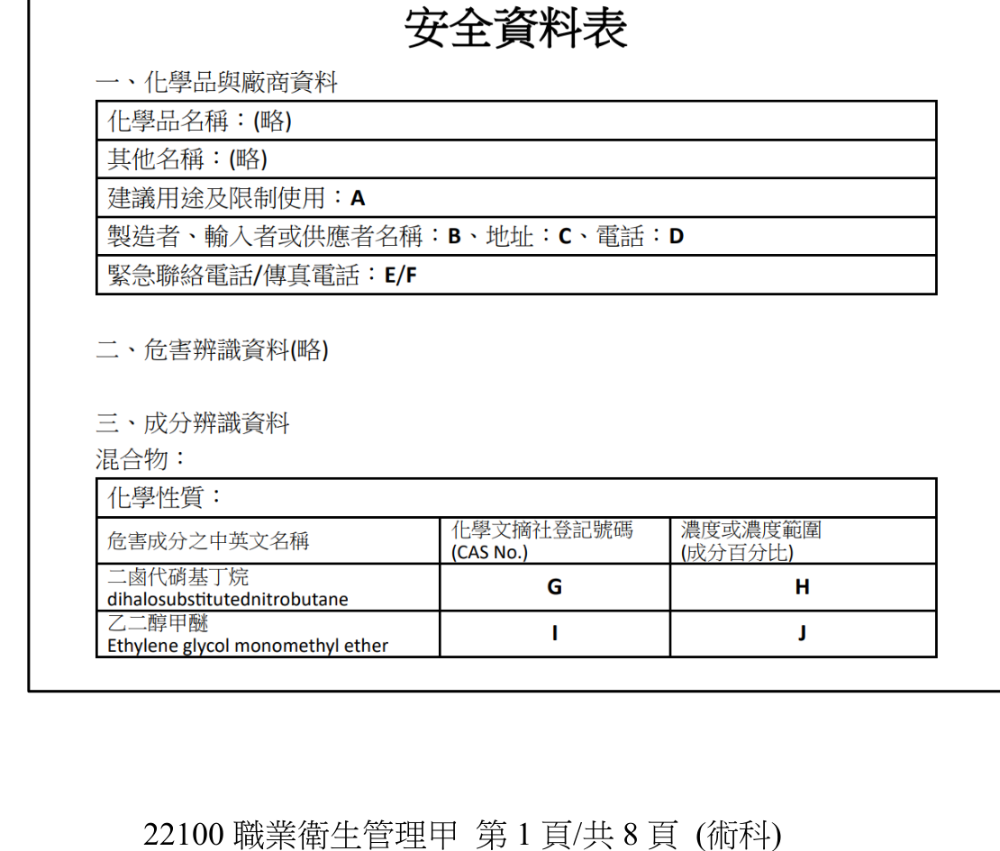
(一) 申請核定保留揭示之必要條件
製造者、輸入者或供應者為維護國家安全或商品營業秘密之必要，而擬保留揭示安全資料表中危害性化學品成分之名稱、化學文摘社登記號碼（CAS No.）、含量或製造者、輸入者、供應者名稱時，應檢附下列文件向中央主管機關申請核定： 1. 認定為國家安全或商品營業秘密之證明。 2. 為保護國家安全或商品營業秘密所採取之對策。 3. 對申請者及其競爭者之經濟利益評估。 4. 該商品中危害性化學品成分之危害性分類說明及證明。
(二) 不得申請保留揭示之其他規定（任列5項）
依規定，危害性化學品成分屬於下列規定者，不得申請保留安全資料表內容之揭示（除題目已排除之單一暴露第一級、重複暴露第一級外）： 1. 勞工作業場所容許暴露標準所列之化學物質。 2. 屬國家標準CNS15030分類之急毒性物質第一級、第二級或第三級。 3. 屬國家標準CNS15030分類之腐蝕或刺激皮膚物質第一級。 4. 屬國家標準CNS15030分類之嚴重損傷或刺激眼睛物質第一級。 5. 屬國家標準CNS15030分類之呼吸道或皮膚過敏物質。 6. 屬國家標準CNS15030分類之生殖細胞致突變性物質。 7. 屬國家標準CNS15030分類之致癌物質。 8. 屬國家標準CNS15030分類之生殖毒性物質。 （以上任列5項即符合配分要求；另有「其他經中央主管機關指定公告者」之概括規定。）
(三) 可申請保留揭示之資訊：B、G、H
依《危害性化學品標示及通識規則》第18條，得申請保留揭示者，僅限「危害性化學品成分之名稱、化學文摘社登記號碼（CAS No.）、含量」或「製造者、輸入者、供應者名稱」四類資訊；地址、電話、緊急聯絡電話、傳真電話及建議用途等其他欄位，均非本條所定得保留揭示之範圍。
對照原卷所附安全資料表： - 表中「二鹵代硝基丁烷(dihalosubstitutednitrobutane)」一列，其危害成分之中英文名稱欄已以類名（描述性通稱，而非明確之特定化合物名稱）表示，顯示該成分之名稱已循保留揭示程序處理；其化學文摘社登記號碼G、含量（成分百分比）H，屬同一成分之識別資訊，依第18條規定亦得一併申請保留。 - 表中「乙二醇甲醚(Ethylene glycol monomethyl ether)」一列，其名稱以特定化合物全名（非類名）表示，可知該成分未經保留處理；乙二醇甲醚（2-methoxyethanol）依國家標準CNS15030分類屬生殖毒性物質，屬第18-1條所定「不得申請保留安全資料表內容揭示」之範圍（第(二)小題所列8類事項之一），故其CAS No.（I）及濃度（J）均不得保留，須完整揭示。 - 「製造者、輸入者或供應者名稱」欄（B）屬第18條明文得保留揭示之獨立項目（與化學成分之名稱、CAS No.、含量併列之四類保留事項之一），故供應者名稱亦得依規定申請保留；惟其地址（C）、電話（D）、緊急聯絡電話（E）、傳真電話（F）均非第18條列舉之保留範圍，仍應完整揭示。 - 「建議用途及限制使用」欄（A）非危害性化學品成分之識別資訊，亦非第18條所定得保留事項，不得保留。
故本題答案為：B、G、H。
本題核心在第18-1條「不得保留揭示」清單之逐字記憶，該清單共9類（含題目已排除之2類），作答時應以正式分類名稱作答（題目明白要求「不得寫英文縮寫」，故不可寫成如CMR、STOT等縮寫）。(三)小題屬「反向排除法」的應用：先確認第18條僅「名稱、CAS No.、含量、供應者名稱」四類資訊得申請保留，再檢視安全資料表中兩項成分何者已以類名表示（即已受保留者，其CAS No.與濃度可一併保留）、何者屬第18-1條禁止保留之危害分類（如本題乙二醇甲醚之生殖毒性分類，即使想保留亦不許），並注意地址、電話等聯絡資訊本非第18條所定保留範圍，是本題最容易失分之混淆點。
你/妳為任職於造船廠之職業衛生管理師，針對廠內新造船舶時所發生之工安事故，會同勞工代表與相關人員實施事故調查。災害經過：勞工甲進入船艙B3層電氣室作業後倒臥無意識，勞工乙發現後呼救，勞工丙未採防護逕自進入搶救，自覺呼吸困難、目眩、頭痛後離開；組長丁其後以鼓風機通風換氣，與勞工乙合力將勞工甲搬運至甲板。現場並無使用其他化學物質，僅氬焊機因繼電器異常持續洩漏氬氣。請依勞動檢查法及職業安全衛生法與相關附屬法規回答下列問題： (一) 本件工安事故是否為勞動檢查法所稱之重大職業災害？(1分)，理由為何？(2分) (二) 本件工安事故是否應於時限內通報勞動檢查機構？(1分)，理由為何？(2分) (三) 依缺氧症預防規則之規定，於船艙內置放二氧化碳滅火器，應符合那些規定？(4分) (四) 依缺氧症預防規則之規定，本案屬於何種缺氧危險作業場所？(2分) (五) 請依本案調查結果分析災害發生之直接原因？(1分)與間接原因？(3分) (六) 應如何改善組長丁與勞工乙之救援方法，以避免其缺氧危害風險？(2分) (七) 缺氧症之末期症狀除意識不明、呼吸停止外還有那些？(2分)
(一) 是否屬重大職業災害
否，本件尚不屬勞動檢查法所稱之重大職業災害。 依規定，重大職業災害係指：發生死亡災害者；發生災害之罹災人數在三人以上者；氨、氯、氟化氫、光氣、硫化氫、二氧化硫等化學物質洩漏，發生一人以上罹災勞工需住院治療者；或其他經中央主管機關指定公告之災害。本案罹災者為勞工甲（仍住院治療中，未死亡）及勞工丙（送醫檢查無大礙、隔日即返回職場），罹災人數未達3人以上，且洩漏物質為氬氣（惰性氣體），非勞動檢查法施行細則所列氨、氯、氟化氫、光氣、硫化氫、二氧化硫等特定化學物質，故不符合重大職業災害之要件。
(二) 是否應於時限內通報勞動檢查機構
是，應於8小時內通報。 依規定，事業單位勞動場所發生死亡災害、罹災人數在3人以上、罹災人數在1人以上且需住院治療、或其他經中央主管機關指定公告之災害者，雇主應於8小時內通報勞動檢查機構。本案勞工甲因缺氧意識不清、目前仍持續住院治療，已符合「罹災人數在一人以上，且需住院治療」之通報門檻，故雇主應於8小時內通報。（此通報義務與(一)之「重大職業災害」認定門檻不同，通報門檻較低，1人住院即應通報，勿混淆兩者。）
(三) 船艙內置放二氧化碳滅火器之規定
雇主於地下室、機械房、船艙或其他通風不充分之室內作業場所，置備以二氧化碳等為滅火劑之滅火器或滅火設備時，應符合： 1. 應有預防因勞工誤觸導致翻倒滅火器或確保把柄不易誤動之設施。 2. 禁止勞工不當操作，並將禁止規定公告於顯而易見之處所。
(四) 本案缺氧危險作業場所之種類
依規定，缺氧危險場所包括「置放或曾置放氦、氬、氮、氟氯烷、二氧化碳或其他惰性氣體之鍋爐、儲槽、反應槽、船艙或其他設備之內部」。本案B3層電氣室內置有氬焊機，其繼電器（電磁閥）作動異常，未實施焊接時氬氣仍持續自焊槍頭洩漏，屬「曾置放（持續置放）惰性氣體（氬氣）之船艙內部」，故本案屬此類缺氧危險作業場所。
(五) 災害發生之直接原因與間接原因
(六) 組長丁與勞工乙救援方法之改善
依規定，雇主應於缺氧危險作業場所置救援人員，於其擔任救援作業期間，應提供並使其使用空氣呼吸器等呼吸防護具，且不得使未著裝防護具人員貿然進入缺氧場所搶救。故組長丁與勞工乙之救援方法應改善為：(1) 進入搶救前應先配戴空氣呼吸器等呼吸防護具，並非僅以鼓風機通風換氣後即貿然進入；(2) 應先以可攜式氧氣濃度計測定艙內氧氣濃度，確認安全或於外部持續監控通風效果後，再行進入，並應有專人於艙外看守、隨時可拉繩示警或協助拉出。
(七) 缺氧症之末期症狀
除意識不明、呼吸停止外，尚包括：痙攣、心臟停止跳動。
(一)(二)兩小題是本題最大鑑別度所在：「重大職業災害」與「應8小時內通報」是兩套不同門檻的制度（前者3人以上或特定化學物質洩漏1人住院，後者1人住院即應通報），許多考生會誤以為兩者門檻相同而答錯(一)。(六)小題須扣住「即使已用鼓風機通風，仍不能保證安全，搶救人員仍應著裝呼吸防護具」此一核心原則，而非僅答「先通風再進入」。
(一) 某事業單位去年曾發生1人次失能傷害，工作傷害損失總日數為10日。於今年永續報告書對外揭露去年的失能傷害頻率(FR)為0.09、失能傷害嚴重率(SR)為0及總合傷害指數為0，若不考慮數字誤植，請輔以名詞定義說明SR及總合傷害指數為何可為0？(2分) (二) 雇主使勞工從事輪班、夜間工作、長時間工作等作業，為避免勞工因異常工作負荷促發疾病，依規定除「調整或縮短工作時間及更換工作內容之措施」、「執行成效之評估及改善」、「其他有關安全衛生事項」措施外，請列舉2項應採取之疾病預防措施。(4分) (三) 雇主使勞工從事重複性之作業，為避免勞工因姿勢不良、過度施力及作業頻率過高等原因，促發肌肉骨骼疾病，依規定除「執行成效之評估及改善」、「其他有關安全衛生事項」措施外，請列舉2項應採取之疾病預防措施。(4分) (四) 依勞工職業災害保險及保護法相關規定，訂定職業災害勞工復工計畫時，除「職業災害勞工重返職場之執行期程」、「其他與復工相關之事項」外，請列舉2項應包含之內容。(4分) (五) 承上，協商職業災害勞工復工計畫時，除「雇主」、「職業災害勞工」外，依規定尚須有那些人員共同參與？(2分) (六) 雇主應依職業安全衛生法規規定，需會同勞工代表訂定或實施相關事項，除職業災害調查分析外，請再列舉2項。(4分)
(一) SR及總合傷害指數為何可為0
失能傷害嚴重率(SR)與總合傷害指數（Frequency Severity Indicator, FSI）之計算，其「損失日數」並非以勞工實際請假或住院天數計算，而係依中國國家標準（CNS）「失能傷害統計」中所訂之「傷害嚴重率換算損失日數表」為準：死亡與永久全失能有固定之標準損失日數（如死亡為6,000日），永久部分失能則依受傷部位及損失程度對照換算表計算，其中部分極輕微之永久部分失能項目，其標準換算損失日數依表列即為0日。故若本案該1人次失能傷害經醫師診斷評定為此類極輕微永久部分失能，縱其實際醫療或請假天數達10日，因不計入SR分子之標準化損失日數，仍使SR＝(0×10⁶)/總經歷工時＝0；而總合傷害指數之計算公式為FSI＝√(FR×SR/1000)，SR為0時，FSI亦隨之為0。
(二) 異常工作負荷疾病預防措施（任列2項）
(三) 肌肉骨骼疾病預防措施（任列2項）
(四) 復工計畫應包含之內容（任列2項）
(五) 協商復工計畫應參與之人員
除雇主、職業災害勞工外，尚須有從事勞工健康服務之醫護人員（或職能復健專業人員）共同參與，必要時並得邀集職業安全衛生人員及該勞工之直屬主管等相關人員參與協商。
(六) 應會同勞工代表訂定或實施之事項（除職業災害調查分析外，任列2項）
(一)小題屬職業安全衛生統計學與CNS國家標準之交叉概念題，須理解SR計算基礎為「標準化換算損失日數」而非實際請假天數，這是最容易被忽略的細節。(二)(三)小題純屬法規條文列舉題，作答時應留意題目已預先排除之項目，避免重複作答而不得分。(六)小題「會同勞工代表」為本題最冷僻之考點，除教科書常提及之「工作守則」與「職災調查」外，「作業環境監測計畫之訂定與監測之實施」亦明文規定應會同勞工代表，此為職業安全衛生法規中容易被忽略之交叉條文。
某醫院聘僱勞工人數約1,000人，該院使用核可藥物A（三氧化二砷10mg/10ml/支）為病人注射以治療特定惡性腫瘤。每位病人接受2個療程，每療程每週5天、每天使用1支以500ml生理食鹽水或葡萄糖水注射液稀釋後滴注約4小時，連續5週為1療程，間隔2週後進行下1療程；藥師每次製劑時間約10分鐘。三氧化二砷SDS危害分類含急毒性物質第2級(吞食)、致癌物質第1級、腐蝕/刺激皮膚物質第1級(1B)、嚴重損傷/刺激眼睛物質第1級、可能造成遺傳性缺陷(H340)、可能具生殖毒性(H360FD)。表一：砷及其化合物容許濃度0.01 mg/m3（丙類第三種特定化學物質）。試回答下列問題： (一) 1. 此藥物是否為須報請中央主管機關備查及須取得運作許可之優先管理化學品？(2分) 2. 理由為何？(2分) (二) 1. 雇主是否應依勞工作業環境監測實施辦法規定，委託認可作業環境監測機構，定期實施砷及其化合物之作業環境監測？(2分) 2. 理由為何？(2分) (三) 此醫院使用密閉給藥裝置(CSTD)，護理人員穿戴PPE、給藥不需再執行稀釋等製備作業。1. 雇主是否應依規定，使那些參與此藥物注射之護理人員接受「砷及其化合物作業勞工特殊體格及健康檢查」？(2分) 2. 理由為何？(2分) (四) 藥師於符合CLASS II生物安全櫃進行調劑，並使用藥物密閉傳輸系統，人員依指引穿戴PPE。1. 雇主是否應使參與調劑之藥師接受特殊體格及健康檢查？(2分) 2. 理由為何？(2分) (五) 此藥物懷孕用藥安全為X級（動物或人體試驗證實對胎兒有害絕對不可使用）。1. 此醫院使通報懷孕後之護理人員執行此藥物之注射作業是否恰當？2. 理由為何？(4分，全對才給分)
(一) 是否屬優先管理化學品
否，此藥物不屬須報請備查及取得運作許可之優先管理化學品。 依規定，事業廢棄物、菸草或菸草製品、食品、飲料、藥物、化粧品、製成品、非工業用途一般民生消費商品、滅火器等，均不適用優先管理化學品之相關辦法。本藥物A為經核可用於治療特定惡性腫瘤之合法藥物（藥品許可證所核准之注射劑），依其使用性質屬「藥物」，明文排除於優先管理化學品運作管理辦法之適用範圍外，故雖其活性成分三氧化二砷屬致癌物質第1級等高關注危害性化學品，該院仍毋須依該辦法辦理備查或申請運作許可。
(二) 作業環境監測義務
原則上應辦理，惟得視作業時間短暫等要件評估是否符合免實施之除外規定。 依規定，特定化學物質危害預防標準所定從事特定化學物質作業之場所，雇主應每6個月監測其容許濃度所列項目一次以上；砷及其化合物依表一標示屬丙類第三種特定化學物質，該院藥師調劑、護理人員注射均屬「處置」該特定化學物質之作業，原則上應委託認可監測機構辦理監測。惟監測辦法另規定，作業場所屬臨時性作業、作業時間短暫（每日作業時間在1小時以內）或作業期間短暫，且經評估勞工不致暴露於超出容許暴露標準之虞者，雇主得不實施該項監測。本案藥師每次製劑僅約10分鐘、遠低於每日1小時之門檻，如經評估其暴露無超限之虞，得主張此除外規定免實施監測；惟護理人員之滴注作業歷時4小時，若其實際操作（如接續藥物、拔除裝置等直接接觸環節）已逾每日1小時，或無法佐證暴露不致超限，雇主仍應委託認可監測機構辦理監測並留存暴露評估紀錄備查。
(三) 護理人員特殊體格及健康檢查
應使實際參與此藥物注射業務之護理人員接受該項特殊健康檢查。 依規定，雇主使勞工從事特別危害健康作業者，應依規定實施特殊體格（健康）檢查；砷及其化合物之相關作業屬特別危害健康作業範疇，護理人員從事此藥物之注射給藥，縱使已採行CSTD密閉給藥裝置降低暴露風險，惟該裝置屬工程控制措施，性質上為「危害預防管理手段」，並非「是否從事該特別危害健康作業」之判準；且護理人員之注射業務屬醫院常態性、非臨時性之經常業務（非「作業期間不超過3個月且1年內不再重複」之臨時性作業），故不能比照監測辦法之作業時間短暫除外規定免除健檢義務，雇主仍應使實際執行此項注射業務之護理人員接受「砷及其化合物作業勞工特殊體格及健康檢查」。
(四) 藥師特殊體格及健康檢查
應使實際參與此藥物調劑之藥師接受該項特殊健康檢查，理由與(三)相同。 藥師於Class II生物安全櫃內調劑並使用密閉傳輸系統，雖工程控制與個人防護已將暴露風險降至極低，然其調劑作業仍屬「處置」三氧化二砷之常態性、經常性職務內容（非臨時性作業），故不因暴露濃度低或已採行有效工程控制而免除特殊健康檢查之法定義務；工程控制措施之效果應留待特殊健康檢查結果之分級管理（如評估結果均為第一級管理）中呈現，而非作為免除受檢義務之理由。
(五) 懷孕護理人員執行此藥物注射作業之妥適性
本題最大鑑別度在於區辨「監測辦法之作業時間短暫除外規定（每日1小時）」與「勞工健康保護規則之臨時性作業除外規定（3個月且1年不再重複）」兩者定義與適用範圍不同：監測義務可能因單次作業時間短暫而個案免除，但特殊健康檢查義務之除外係以整體「作業是否為臨時性」為判準，醫院常態性之藥物調劑/注射業務顯然不符合臨時性作業之定義，故不能比照監測辦法免除健檢。(五)小題則須掌握「X級用藥」之風險屬性已超出母性健康保護但書「經評估控管」之立法假設，此為近年考題偏好之整合應用型陷阱。
某精密機械製造工廠新進職業衛生管理人員，擬參考勞動部勞工聽力保護計畫指引，規劃噪音控制及勞工聽力保護計畫。 (一) 依職業安全衛生設施規則規定，雇主對於勞工八小時日時量平均音壓級超過85分貝或暴露劑量超過50%之工作場所，應採取聽力保護措施，其要項除噪音監測及暴露評估外，應另包含那5項？(5分) (二) 為進行特定音源之噪音控制，在背景噪音影響下，特定音源的音壓級測定結果須進行修正，試完成表一之(a)及(b)。(2分，(a)為文字說明，(b)為數值) (三) 職業衛生管理人員計畫引進「屏蔽」進行特定音源之噪音控制，改善前此特定音源藉由直線傳播及地面反射（傳播損耗3dB）傳達到特定測點，改善後傳播路徑變為4條，其傳播損耗分別為3dB、7dB、8dB、10dB，「屏蔽」所造成之音量減量為多少dB？(5分，四捨五入至整數) (四) 勞工暴露於80dBA噪音2小時、90dBA噪音2小時、85dBA噪音4小時：1. 依職業安全衛生設施規則規定（如表二），試計算其暴露劑量？2. 若參考美國OSHA聽力保護計畫指引標準（如表三），試計算其暴露劑量？(4分) (五) 表四為勞工5年之定期聽力檢查結果，試計算該名勞工之標準聽力閾值衰減值為何？(4分，四捨五入至小數點後1位)
(一) 聽力保護措施之另5項要項
除噪音監測及暴露評估外，尚應包含： 1. 噪音危害控制。 2. 防音防護具之選用及佩戴。 3. 聽力保護教育訓練。 4. 健康檢查及管理。 5. 成效評估及改善。
(二) 表一(a)(b)修正值
(a)：當含目標音源之音壓級與背景音量差小於3dB（本題差值為2dB）時，兩者音量過於接近，已無法有效區分及可靠地修正出目標音源之真實音壓級，應先設法降低背景噪音或改善測定條件後重新測定，而不宜逕行修正計算。
(b)：0（差值達10dB以上時，背景噪音對測定結果之影響可忽略不計，測得值即可視為目標音源之音壓級，不需再扣減修正值）。
(三) 屏蔽所造成之音量減量計算
依題示能量疊加公式，先分別計算改善前、後傳至測點之相對音壓級：
改善前（1條路徑，傳播損耗3dB）： Level(改善前) ＝ 10 log₁₀(10^(−3/10)) ＝ −3.00 dB（相對值）
改善後（4條路徑，傳播損耗分別3、7、8、10dB）： 10^(−3/10)＝0.50119；10^(−7/10)＝0.19953；10^(−8/10)＝0.15849；10^(−10/10)＝0.10000 四項相加＝0.50119＋0.19953＋0.15849＋0.10000＝0.95921 Level(改善後) ＝ 10 log₁₀(0.95921) ＝ −0.18 dB（相對值）
屏蔽造成之音量減量＝Level(改善前)－Level(改善後)＝(−3.00)－(−0.18)＝−2.82 dB，四捨五入為 −3 dB。
計算結果為負值，代表本次屏蔽設計實際上使測點音量「不減反增」約3dB：因改善後4條路徑中仍有1條路徑之傳播損耗與改善前相同（同為3dB，代表屏蔽並未有效阻斷該路徑），加上另外3條繞射路徑之能量疊加，使總接收能量較改善前略高。此結果顯示該屏蔽設計未達到有效降噪目的，應檢討屏蔽尺寸、高度或位置，加大主要傳播路徑之遮蔽損耗。
(四) 噪音暴露劑量計算
暴露劑量D＝Σ(實際暴露時間/容許暴露時間)＝(2/32)＋(4/16)＋(2/8)＝0.0625＋0.25＋0.25＝0.5625，即56.25%
暴露劑量D＝(2/32)＋(4/16)＋(2/8)＝0.5625，即56.25%
兩者計算結果相同（56.25%），因本題所摘錄之OSHA表在80～90dBA區間之交換率與時間對應值與我國職業安全衛生設施規則一致；惟須留意我國第300條表本身僅明文列出90dBA以上之對應值，80、85dBA兩檔須依同條第一項第三款「噪音應以增加5分貝降低容許暴露時間一半」之交換率原則反向推算，而非表列原文直接可查得之數值，此為本小題(1)、(2)在方法論上之差異所在。兩者暴露劑量均超過50%，依規定雇主應採取前述之聽力保護措施。
(五) 標準聽力閾值衰減值計算
依聽力保護技術通例，以2000Hz、3000Hz、4000Hz三頻率之聽閾平均值，比較最近一次（第五年）與基準值（新進體格檢查）之差異：
基準值（新進體格檢查）平均＝(0＋10＋8)／3＝18／3＝6.0 dB 第五年平均＝(7＋20＋20)／3＝47／3＝15.67 dB
標準聽力閾值衰減值＝15.67－6.0＝9.7 dB
(三)小題為本題最具鑑別度之計算題：多數考生會直覺假設「屏蔽必然使音量下降」而在計算出負值時懷疑自己算錯，但依題目給定之數值忠實代入能量疊加公式後，結果確實為負（音量增加），此時應忠實呈現計算過程與結果，而非強行湊出「合理」的正值，這正是測驗考生是否具備獨立驗算、不受直覺誤導之能力。(四)小題須留意我國法規表列僅明文至90dBA，80、85dBA須自行以5dB交換率換算，此為法規適用之常見誤區。
⚠️ 本詳解為 AI 彙整之參考擬答，非官方標準答案；法規內容以最新公告版本為準。
表一為某化工廠針對廠內硫酸儲槽（危害成分98%）作業所進行之風險評估。 (一) 對於表一項次1危害辨識之內容，依職業安全衛生設施規則規定，對於該輸送設備尚可採取那些可降低風險的工程控制措施？（6分，請列舉3項） (二) 表一項次1~3均為從事特定化學物質之作業，指派特定化學物質作業主管於現場從事監督作業，依特定化學物質危害預防標準規定，除監督勞工確實使用防護具外，請列舉2項應執行事項？（4分） (三) 對於表一項次2危害辨識之結果，降低風險所採取之控制措施（A）為何？（2分） (四) 表一項次3硫酸儲槽及其附屬設備修理作業時應實施重點檢查，依職業安全衛生管理辦法規定對特定化學設備或其附屬設備實施重點檢查之時機除開始使用、修理外，還有何時？（2分） (五) 承上，請列舉3項特定化學設備或其附屬設備（不含配管）之重點檢查項目？（6分）
(一) 動力輸送設備尚可採取之工程控制措施（列舉3項）
表一項次1之危害情境為「進料以動力輸送設備輸送時，壓力過大或儲槽進料管線相關閥門未開啟，造成卸料軟管爆裂、硫酸噴濺」，除既有之「連鎖關斷輸送設備」外，尚可採取： 1. 於卸收管線設置壓力錶及超壓自動釋壓閥（安全閥），當管線壓力異常升高時自動洩壓，並同步發出聲光警報。 2. 於儲槽設置液位計並與進料閥連動，達高液位時自動遮斷進料，防止溢流。 3. 卸收軟管與儲槽進料管線接頭，採用不同規格之專用接頭（不相容介面設計），防止誤接錯槽或接頭鬆脫。
(二) 特定化學物質作業主管應執行事項（除監督使用防護具外，任列2項）
(三) 項次2控制措施（A）
依表一項次2「接錯進料管線，導致硫酸誤入旁邊之儲槽致使內容物受到污染」之危害情境，其現有防護措施已含「設置標示牌且閥、旋塞標示開閉方向」，惟評估風險仍為3（嚴重度2×可能性1，風險等級2？依卷面風險等級2→控制後降為2），本題控制措施（A）應為：於進料管線與儲槽接頭加裝專用（不同規格、不可互換）之連接介面或聯鎖裝置，並輔以顏色標示區分不同管線，從實體介面上防止誤接錯槽，屬較「僅標示開閉方向」更進一步之工程防呆設計。
(四) 重點檢查時機
依規定，雇主對特定化學設備或其附屬設備，於開始使用、改造、修理時，應依規定實施重點檢查一次。故除「開始使用」、「修理」外，尚應於「改造」時實施重點檢查。
(五) 特定化學設備或其附屬設備（不含配管）之重點檢查項目（任列3項）
(一)(三)小題屬工程控制之開放性應用題，作答方向應扣緊「以硬體設計取代人員警覺」之工程控制原則（如連鎖、警報、防呆接頭），而非重複現有防護具或作業程序等行政管理措施，方能符合題旨所問之「工程控制措施」範疇。(四)小題「開始使用、改造、修理」三時機需逐字記憶，考生常漏答「改造」。
(一) 依職業安全衛生管理辦法相關規定，雇主應訂定職業安全衛生管理計畫，包含緊急應變措施。1. 除「應變能力及資源的評估」外，請列舉緊急應變措施之作業流程及基本原則3項。（6分）2. 依遭受緊急事件衝擊的可接受損失目標，除「(1)對內及對外通報及通信作業系統？(2)本身是否有除污能力？是否與廠外除污專業廠商訂有支援合約？(3)是否裝置氣象監視儀器如風向儀及風速計等？」以外，請列舉6項評估問項。（6分） (二) 依危害性化學品標示及通識規則之規定，製造者、輸入者或供應者提供含有二種以上危害成分之混合物的化學品前，應提供該混合物之安全資料表。1. 請說明該安全資料表之危害性認定方式。（6分，提示：包含健康危害性與燃燒、爆炸及反應性等物理性危害）2. 請說明燃燒之物理性危害，係主要對應安全資料表中那資訊？（2分，提示：如爆炸物理性危害之對應為爆炸界限之數值）
(一)-1 緊急應變措施之作業流程及基本原則（除應變能力及資源評估外，任列3項）
(一)-2 必要資源評估問項（任列6項）
(二)-1 安全資料表危害性之認定方式
依規定，該混合物之危害性認定方式如下： 一、混合物已作整體測試者，依整體測試結果認定其危害性分類。 二、混合物未作整體測試者： （一）健康危害性：除有科學資料佐證外，應依國家標準CNS15030分類之混合物分類標準（如橋接原則、加成公式等）進行評估分類。 （二）物理性危害（燃燒、爆炸及反應性等）：應使用有科學根據之資料進行評估（如參考各成分之閃火點、自燃溫度、爆炸界限等物性資料，並考量混合後之交互影響）。
(二)-2 燃燒物理性危害之主要對應資訊
燃燒之物理性危害，主要對應安全資料表中之閃火點（flash point）數值（並輔以自燃溫度等資訊）；閃火點愈低，代表該化學品愈易燃、燃燒危害分級愈高，此為國家標準CNS15030對易燃液體分級之主要依據，性質上與爆炸危害以「爆炸界限」數值對應之邏輯相同。
(一)-2小題之6項評估問項為開放性列舉，只要扣緊「應變資源之實質內容」（防護具、搶救器材、疏散規劃、外部支援、醫療能力、演練檢討）作答即可，避免與(一)-1之「作業流程與基本原則」混淆重複。(二)-1小題須留意「整體測試」與「未整體測試」兩種情境分別適用不同認定方式，是本題條文結構的核心。
(一) 某日某事業單位指派新僱但尚未接受訓練之勞工2人穿戴頭套、帽子、塑膠手套、雨鞋，至承攬苗圃從事杉葉雜木修剪清除作業，勞工A發現有蜂類盤旋飛行，隨後勞工B遭蜂叮咬臉、頸隨即失去意識，送醫住院治療。1. 請就本案依直接、間接及基本原因，分別分析職業災害原因。（4分）2. 寫出3個對於從事戶外工作可能遭受蜂螫之高危險群，雇主應採行措施。（6分） (二) 為避免事業單位內COVID-19傳播，請參照危害控制層級的消除及工程控制層級，寫出可行的危害控制方法。（4分，答題方式請依層級-方法） (三) 1. 學校實驗室原依「特定化學物質危害預防標準」規定設置化學排氣櫃，該化學排氣櫃是否可以用來直接取代非感染性細胞培養或非致病性微生物實驗所需之生物安全操作櫃？（1分）2. 承上，簡短說明理由？（3分） (四) 試就化學性和生物性氣膠危害防護，簡短說明在選擇呼吸防護具的濾材時，主要考量的差異為何？（2分）
(一)-1 職業災害原因分析（直接、間接、基本原因）
(一)-2 蜂螫高危險群應採行措施（任列3項）
(二) COVID-19危害控制層級（消除、工程控制）
(三) 化學排氣櫃能否取代生物安全操作櫃
(四) 化學性與生物性氣膠呼吸防護具濾材選擇之差異
化學性氣膠（如有機溶劑蒸氣、酸鹼氣體）防護，濾材選擇主要考量該化學物質之化學特性（如分子量、極性、沸點等），需選用對應之化學濾毒罐（如有機蒸氣罐、酸性氣體罐）以化學吸附或化學反應方式去除污染物；生物性氣膠（如病毒、細菌、真菌孢子）防護，因其危害機制為顆粒物之物理性穿透而非化學反應，濾材選擇主要考量粒徑大小之物理捕集效率，選用符合防護等級（如N95、P100等）之高效微粒濾材，透過機械攔截、慣性衝擊、擴散等物理機制捕集微粒即可，無須考量化學吸附特性。
(一)小題「直接／間接／基本原因」三層次分析法為職業災害原因分析之經典架構，作答時應嚴格區分「不安全狀態」與「不安全行為」屬間接原因、「管理制度缺失」屬基本原因，切勿三者混寫。(三)小題為近年考題新趨勢，結合COVID-19後對生物安全議題之重視，核心概念在於「化學排氣櫃保護操作者、生物安全櫃兼顧操作者/樣本/環境三重保護」之本質差異，答題時應扣住HEPA過濾與氣流設計此一技術關鍵，而非僅答「用途不同」等籠統敘述。
公司管理階層要求職業衛生管理人員，依勞動部公告之「執行職務遭受不法侵害預防指引」，規劃危害預防措施。 (一) 下圖一為職場不法侵害預防流程圖，請對應填入正確的流程步驟(A, B, C, D)。（8分，答題方式如1A、2B、3C）
流程步驟：1.不法侵害事件處理程序（人資、單位主管、職安衛人員）；2.內部與外部不法侵害危害辨識與風險評估（人資、職安衛人員、單位主管等）；3.受害者/加害者身心健康追蹤輔導及權益維護（勞工健康服務相關專業人員）；4.建構反不法侵害的組織文化（高階主管、人資、單位主管）。
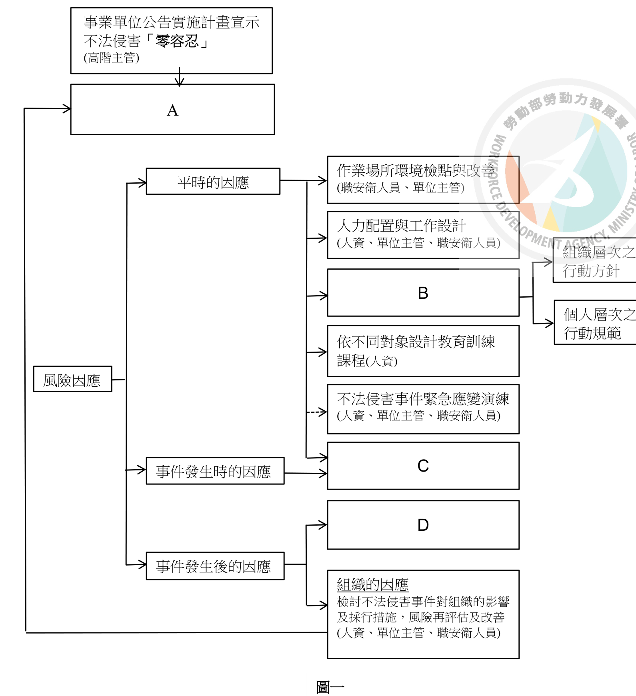
(二) 事業單位對於不法侵害的風險項目應採取有效降低風險之控制措施，可透過「物理環境」（噪音、色彩、照明、溫度、濕度、通風、結構等）、「工作場所設計」（通道、空間、設備、建築設計、監視器及警報系統）與「行政管制措施」（門禁管制、公共區域管制、工作區域管制、進出管制等）等面向，進行檢點與改善，請以上述三個面向各寫出兩項改善建議作法。（每個答案2分，共12分）
(一) 流程步驟對應
依原圖一實際圖像，A、B、C、D四方塊分別位於「平時的因應／事件發生時的因應／事件發生後的因應」三大分支下之邏輯位置，比對如下：
4A、2B、1C、3D
（說明： A方塊緊接於「事業單位公告實施計畫宣示不法侵害『零容忍』」（高階主管）之後、且與「風險因應」形成迴圈起點，對應4「建構反不法侵害的組織文化」（高階主管、人資、單位主管）。 B方塊位於「平時的因應」分支下，其後並延伸出「組織層次之行動方針」與「個人層次之行動規範」兩項下游產出，屬危害辨識評估後訂定因應方針之前置作業，對應2「內部與外部不法侵害危害辨識與風險評估」（人資、職安衛人員、單位主管等）。 C方塊位於「事件發生時的因應」分支下（且與「平時的因應」項下之「不法侵害事件緊急應變演練」以虛線相連，代表平時演練所因應之對象即為事件發生當下之處理程序），對應1「不法侵害事件處理程序」（人資、單位主管、職安衛人員）。 D方塊位於「事件發生後的因應」分支下；其下方另有一已載明文字、非本題空格之「組織的因應」方塊（檢討不法侵害事件對組織的影響及採行措施，風險再評估及改善／人資、單位主管、職安衛人員），屬事件發生後之「組織層次」因應，故D應為事件發生後對應之「個人層次」照護行動，對應3「受害者/加害者身心健康追蹤輔導及權益維護」（勞工健康服務相關專業人員）。）
(二) 三面向改善建議作法（各2項）
物理環境： 1. 於公共接待區域及易生糾紛之服務窗口加強照明，避免陰暗死角。 2. 於員工休息區、盥洗室等私密空間加裝適當隔音設施，降低噪音干擾及爭執外洩造成之緊張氣氛。
工作場所設計： 1. 於出入口、公共走道及服務櫃檯等處加裝監視器及警報系統（如緊急按鈕），並確保訊號可即時通報至保全或管理單位。 2. 服務櫃檯設置實體隔屏或安全距離設計，並規劃第二逃生動線，避免服務人員遭圍困於單一出入口空間內。
行政管制措施： 1. 強化門禁管制，非特定人員進出辦公及作業區域須經登記或陪同，並定期盤點門禁權限。 2. 訂定訪客與外部人員接待規範，明確劃分公共區域與工作區域之進出權限，並由專人負責接待與陪同。
(一)小題屬圖形辨識配對題，本質上考驗考生對原卷指引流程圖之熟悉程度，作答關鍵在於掌握「執行人員」與「組織/個人層次×事前/事中/事後」兩軸交叉定位之邏輯，而非死背固定順序；由於此類圖形配對題採「全對才給分」，考生若對原圖印象不深，建議優先確保(二)小題三面向各2項（共12分）之得分，再回頭推敲(一)小題之配對邏輯。(二)小題作答時應嚴格對應題目所給定之三個面向定義範圍作答，避免物理環境與工作場所設計之答案互相混淆重複。
某壓克力板製造廠之注模工作場所室內體積為360 m³，僅有甲基丙烯酸甲酯（分子量M=100 g/mol）逸散之暴露危害風險，其逸散率為20 g/min。甲基丙烯酸甲酯之容許濃度標準為100 ppm，理想氣體莫耳體積為24 L/mol，當時溫度25℃、一大氣壓。 (一) 為降低暴露危害風險，所需之理論換氣量（Q1）應為多少？（單位：m³/min，4分） (二) 經評估，該場所之實際需求換氣量應再考量並乘以安全係數（K=5）後方可達較佳之通風狀態，此時該場所之最終平衡濃度為多少？（單位：mg/m³；4分，非整數時四捨五入至小數點以下第2位） (三) 承上題，該場所每小時之換氣次數為多少？（4分） (四) 該場所因生產量增加，甲基丙烯酸甲酯使用量增加後之逸散率變為40 g/min，如欲維持相同之最終平衡濃度，且設計時安全係數不變（K=5），則所需之理論換氣量（Q2）應為多少？（單位：m³/min；4分，非整數時四捨五入至整數位） (五) 承上題，該場所每小時之換氣次數為多少？（4分）
(一) 理論換氣量（Q1）
甲基丙烯酸甲酯之體積產生速率： q ＝ 逸散率(g/min) ÷ 分子量(g/mol) × 莫耳體積(L/mol) ＝ 20 ÷ 100 × 24 ＝ 4.8 L/min ＝ 0.0048 m³/min
目標控制濃度＝容許濃度100 ppm＝0.0001（體積分率）
理論換氣量 Q1 ＝ q ÷ 目標濃度 ＝ 0.0048 ÷ 0.0001 ＝ 48 m³/min
(二) 安全係數K=5後之最終平衡濃度
實際設計換氣量 ＝ Q1 × K ＝ 48 × 5 ＝ 240 m³/min
最終平衡濃度（體積分率）＝ q ÷ 實際換氣量 ＝ 0.0048 ÷ 240 ＝ 0.00002 ＝ 20 ppm
換算為質量濃度： C(mg/m³) ＝ C(ppm) × 分子量 ÷ 莫耳體積 ＝ 20 × 100 ÷ 24 ＝ 83.33 mg/m³
(三) 每小時換氣次數
每小時換氣量 ＝ 240 m³/min × 60 min/hr ＝ 14,400 m³/hr
每小時換氣次數 ＝ 每小時換氣量 ÷ 室內體積 ＝ 14,400 ÷ 360 ＝ 40 次/小時
(四) 逸散率增為40 g/min後之理論換氣量（Q2）
新體積產生速率： q₂ ＝ 40 ÷ 100 × 24 ＝ 9.6 L/min ＝ 0.0096 m³/min
因目標控制濃度（即容許濃度100 ppm）不變，理論換氣量與逸散率成正比：
Q2 ＝ q₂ ÷ 目標濃度 ＝ 0.0096 ÷ 0.0001 ＝ 96 m³/min
（驗證：q₂為q之2倍，Q2亦為Q1之2倍：48×2＝96，與計算結果一致；且以Q2×K＝96×5＝480 m³/min代入，最終平衡濃度＝0.0096÷480＝0.00002＝20 ppm，與(二)相同，確認符合「維持相同最終平衡濃度」之題意。）
(五) Q2情境下每小時換氣次數
實際設計換氣量 ＝ Q2 × K ＝ 96 × 5 ＝ 480 m³/min
每小時換氣量 ＝ 480 × 60 ＝ 28,800 m³/hr
每小時換氣次數 ＝ 28,800 ÷ 360 ＝ 80 次/小時
本題為工業通風稀釋換氣量之工程計算，計算原理依循職業衛生教材通用之稀釋換氣公式（Q＝G/C，並以安全係數K反映實際換氣效率不佳之修正），非特定法規條文之直接規定；法規面則援引《職業安全衛生設施規則》有關雇主應採取通風換氣措施、控制勞工暴露於容許濃度以下之相關規定，僅列名稱不引條號。
本題環環相扣，(四)(五)小題之關鍵在於掌握「理論換氣量與逸散率成正比、與目標濃度成反比」之比例關係，若能在計算前先判斷Q2應為Q1之2倍（因逸散率倍增而目標濃度不變），即可用比例驗證取代重複計算，加快作答並降低出錯風險。(二)小題須留意最終平衡濃度之計算基礎為「實際設計換氣量（已乘K）」而非理論換氣量Q1，此為最常見的計算陷阱。
⚠️ 本詳解為 AI 彙整之參考擬答，非官方標準答案；法規內容以最新公告版本為準。
表1為某鉛蓄電池製造工廠作業內容調查表，表2為該工廠近期所辦理鉛作業健康追蹤檢查結果，請依職業安全衛生法相關規定回答下列問題。 一、該工廠經實施健康追蹤檢查，重新分級健康管理多為第四級管理，請問：(一)何謂第四級管理？（1分）(二)雇主對於第四級管理者應採取何作為？（2分） 二、若該工廠依法實施職場母性健康保護，請問：(一)表2所列勞工那些須實施母性健康保護？（2分）(二)若使勞工E於母性健康保護期間繼續於組配課從事作業是否適當？理由為何？（2分）(三)對於勞工E，依表2所提供血中鉛資訊，其母性健康保護之風險等級為那一級？應採取何措施？（3分） 三、原料課作業所採取之工程控制措施為設置局部排氣裝置，請問：(一)該局部排氣裝置之氣罩應為何形式？（2分）(二)請繪製該類之氣罩（2分）(三)該工廠工程控制措施設有局部排氣裝置，惟仍有數名勞工其健康管理分級結果為第四級，研判可能是局部排氣裝置「失效」或「低效」，除可能原因為氣罩設計不良外，請再列舉2項可能之原因。（4分） 四、承上，鉛作業危害暴露預防除於工作場所採取相關管控措施外，對於勞工休息室亦應採取必要措施，請問依相關法令規定，作業場所外所設置之休息室應有何措施？（2分）
一、(一) 第四級管理之定義
依規定，第四級管理係指：勞工特殊健康檢查或健康追蹤檢查結果，部分或全部項目異常，經職業醫學科專科醫師（職醫）綜合判定為異常，且與工作有關者。
一、(二) 雇主對第四級管理者之作為
雇主對於第四級管理者，經職醫評估現場仍有工作危害因子之暴露者，應採取危害控制及相關管理措施（如變更工作條件、調整工時、調換工作、加強工程控制或個人防護等），並依規定辦理健康追蹤檢查及通報。
二、(一) 須實施母性健康保護之勞工
依規定，母性健康保護之對象為妊娠中或分娩後未滿1年之女性勞工。依表2，勞工D與勞工E均為女性，其中勞工D「是否於母性健康保護期間」欄位為「否」，僅勞工E欄位為「是」，故表2所列勞工中，僅勞工E須實施母性健康保護。
二、(二) 勞工E繼續於組配課作業是否適當
不適當。 依表2，勞工E血中鉛濃度為31.4 μg/dl，已達「10 μg/dl以上」之第三級管理門檻（詳下題），依規定屬第三級管理者，雇主應依醫師適性評估建議，採取變更工作條件、調整工時、調換工作等母性健康保護措施，不得使其於保護期間內未經調整、繼續留任於原有鉛暴露作業（組配課仍屬使用鉛之作業），故現行安排並不適當，雇主應依醫師建議調整其工作內容或安排至無鉛暴露之職務。
二、(三) 勞工E之母性健康保護風險等級與措施
依規定，雇主使女性勞工從事鉛及其化合物散布場所之工作，應依血中鉛濃度區分風險等級：第一級管理（低於5 μg/dl）、第二級管理（5 μg/dl以上未達10 μg/dl）、第三級管理（10 μg/dl以上）。勞工E血中鉛濃度31.4 μg/dl，已達10 μg/dl以上，故屬第三級管理。依規定，屬第三級管理者，雇主應即採取工作環境改善及有效控制措施，完成改善後重新評估，並由醫師註明其不適宜從事之作業與其他應處理及注意事項；並依醫師適性評估建議，採取變更工作條件、調整工時、調換工作等母性健康保護措施。
三、(一) 原料課局部排氣裝置之氣罩形式
原料課作業內容為「將純鉛送至熔鉛爐熔融冷卻後裁切，再以非濕式作業研磨成鉛粉」，屬鉛蓄電池製造過程中非以濕式方法從事鉛之研磨、製粉等室內作業，依規定，此類局部排氣裝置之氣罩，應採用包圍型（包圍式）氣罩（但作業方法上設置此種型式之氣罩有困難時，不在此限）。
三、(二) 包圍型氣罩示意
排氣導管
↑
┌─────┴─────┐
│ （排氣孔） │
│┌───────────┐│
││ ││ ← 包圍型氣罩：將污染源（研磨作業點）
││ 研磨作業點 ││ 四面或多面完全包圍，僅留必要之
││ （污染源） ││ 操作開口，捕集效率最高
│└───────────┘│
└─────────────┘
（前方操作口）
（包圍型氣罩之特徵為將發生源之四周盡量包圍，僅留小開口供勞工操作或物料進出，因發生源已在氣罩控制風速範圍內，捕集效率遠優於外裝型、崗亭型等其他型式氣罩。）
三、(三) 局部排氣裝置失效或低效之其他可能原因（除氣罩設計不良外，任列2項）
四、鉛作業休息室應有之措施
依規定，雇主使勞工從事鉛作業時，應於作業場所外設置合於下列規定之休息室： 1. 休息室之出入口，應設置沖洗用水管或充分濕潤之墊蓆，以清除附著於勞工足部之鉛塵，並於入口設置清除鉛塵用毛刷或真空除塵機。 2. 休息室之地面構造，應易於使用真空除塵機或以水清洗者。 （雇主並應使勞工於進入休息室前，將附著於工作衣上之鉛塵適當清除。）
本題橫跨健康管理分級、母性健康保護分級、局部排氣裝置設計三大主題，作答時務必留意「健康管理分級」（勞工健康保護規則，全體勞工適用）與「母性健康保護風險等級」（女性勞工母性健康保護實施辦法，僅妊娠/分娩後未滿1年女性勞工適用）為兩套不同的分級制度，血中鉛濃度數值相同，但適用之分級門檻與後續措施條文均不相同，答題時不可混用。三-(一)(二)氣罩形式與繪圖為基本功考點，務必記牢「非濕式研磨/製粉作業→包圍型氣罩」之對應關係。
某汽車製造工廠新進職業衛生管理人員，擬參考其美國母公司人因危害預防計畫(Ergonomics Program)及勞動部人因性危害預防計畫指引，規劃進行職業安全衛生法第6條重複性作業等促發肌肉骨骼疾病之預防，及依職業安全衛生設施規則第324-1條規定，訂定人因性危害預防計畫。 一、人因工程的定義？（5分） 二、美國母公司人因危害預防計畫包含7大要素。(一) 工作危害分析首先應確認肌肉骨骼疾病危害好發之問題工作類型，人體計測數據使用準則有極值設計、可調設計或平均設計。1. 一般極值設計使用95th%人體計測值作為極大值設計，使用多少%作為極小值設計？（1分）2. ISO 13857針對「防止上肢伸及危險區域的安全距離」提出規範，該規範提及之安全距離包括哪4種？（4分）(二) 工作危害控制分工程控制、工作方法控制、管理方法控制，試配對下列何者為工作方法控制?何者為管理方法控制？（5分）1.新進員工或在職員工更換作業型態之調適期。2.辨識肌肉骨骼疾病危害及可減少或減輕工作負荷的工作技巧與訓練。3.員工輪替制度。4.工作任務範圍擴大。5.中間休息時間。 三、職業衛生管理人員考慮參考美國母公司訂定人因危害預防計畫，並請公司聘僱之勞工健康服務醫護人員主責，惟依勞工健康保護規則第6條規定，其不得兼任其他法令所定專責（任）人員或從事其他與勞工健康服務無關之工作。(一) 就前項醫護人員觀點，職業衛生管理人員應有何態度？（2分）(二) 經總經理裁示後，改依「人因性危害預防計畫指引」訂定計畫，除「執行成效評估及改善」、「其他有關安全衛生事項」外，試舉出3項該指引所述之人因性危害分析與改善流程。（3分，需依序，否則不予計分）
一、人因工程之定義
人因工程（Ergonomics / Human Factors Engineering）係一門整合人體計測學、生理學、心理學及工程學等跨領域知識，透過研究人與其工作環境（含機具設備、作業方法、工作場所配置及作業流程）間之互動關係，據以設計、調整工作系統，使其符合人體之生理及心理特性與能力限度，以達成提升作業安全、降低肌肉骨骼疾病等人因性危害風險、增進工作效率與舒適性之目的的一門應用科學。
二、(一)-1 極小值設計採用之百分位
一般極值設計於安全距離、可及範圍等考量情境下，多以5th%（第5百分位）人體計測值作為極小值設計基準（對應95th%作為極大值設計，兩者互為對稱之極端值選用原則）。
二、(一)-2 ISO 13857安全距離之4種類型
ISO 13857針對防止上肢伸及危險區域所定之安全距離，主要包括下列4種情境： 1. 越過防護結構物之伸及安全距離（reaching over，向上跨越護欄、護罩等防護結構伸入危險區域）。 2. 通過開口伸入之安全距離（reaching through openings，經由護罩、護網等之開孔伸入危險區域）。 3. 繞過防護結構物之伸及安全距離（reaching around，自防護結構物側邊繞過伸入危險區域）。 4. 下方伸及（跨越低矮障礙）之安全距離（reaching under，自防護結構物下方空隙伸入危險區域）。
二、(二) 工作方法控制／管理方法控制配對
（判斷原則：工作方法控制著重於勞工個人執行工作之「技巧、姿勢、節奏調適」；管理方法控制則著重於雇主透過「排班、輪調、任務配置、休息時間安排」等制度性安排降低單一勞工之累積暴露時間與負荷。）
三、(一) 職業衛生管理人員應有之態度
職業衛生管理人員應予以尊重並依法配合：勞工健康服務醫護人員依規定不得兼任其他法令所定專責（任）人員（如職業安全衛生管理員、急救人員等）或從事與勞工健康服務無關之工作，此為法定禁止規定，目的在確保醫護人員能專注、獨立地執行勞工健康服務業務，不受其他職務排擠或角色衝突影響其專業判斷。職業衛生管理人員應改以協調、整合之角色，邀集醫護人員以其專業（如健康監測、面談指導）提供意見並參與人因性危害預防計畫之部分工作（如高風險群辨識、健康指導），而非逕行指派其擔任計畫之「主責」人員承擔計畫整體規劃、執行等非其法定職掌之工作，並應另行整合職業安全衛生人員、部門主管等共同分工推動計畫，以符合法規對醫護人員專責角色之保護。
三、(二) 人因性危害分析與改善流程（依序3項）
本題整合國際人因工程理論（ISO標準、人體計測學）與我國法規（設施規則324-1條、勞工健康保護規則第6條），作答時應清楚區分何者為技術知識、何者為法規義務，避免將ISO標準誤植為我國法規條號。三-(一)為情境判斷題，關鍵在於掌握「醫護人員角色獨立性」之立法目的，答案方向應為「尊重法規限制、調整人因計畫之角色分工」，而非「說服醫護人員兼任」或「直接違規指派」。
你是一家事業單位（職業安全衛生管理辦法第2條及其附表所定之第二類事業）的職業衛生管理師，該事業單位有員工約2,500人。試依勞動部「異常工作負荷促發疾病預防指引」，與從事勞工健康服務之醫護人員合作規劃職業促發腦心血管疾病預防措施，請回答下列問題： 一、依勞工健康保護規則規定，該公司需至少配置多少位護理人員與每月特約多少次的醫師，共同規劃和執行？（4分） 二、異常工作負荷促發疾病之預防，基本上包含7個措施，首先是「事業單位公告實施計畫」，請寫出後續措施的其中4項？（8分） 三、所謂的異常工作負荷，除了每月加班時數之外，試列出其他4項可能導致異常工作負荷的工作型態？（8分）
一、應配置之醫護人員人力
依規定，事業單位勞工人數在300人以上者，應視其規模及性質，依附表二（醫師）與附表三（護理人員）所定之人力配置及臨場服務頻率，僱用或特約從事勞工健康服務之醫師及僱用從事勞工健康服務之護理人員，辦理勞工健康服務。本事業單位員工約2,500人、屬第二類事業，已達應僱用或特約醫護人員之規模門檻（300人以上），惟附表二、附表三所定之精確人力配置人數與醫師臨場服務頻率數值，因屬表格式附件內容，本機語料庫之法規全文中未能完整擷取其表格數值，無法在此precisely列出，僅能確認其應依規定之人力配置及臨場服務頻率辦理，建議答題時查對勞工健康保護規則最新公告之附表二、附表三，依「第二類事業、勞工人數2,500人」之對應級距填列護理人員配置人數（原則上應達專任一定人數以上）及醫師每月臨場服務次數。
二、異常工作負荷促發疾病預防之7項措施（除「事業單位公告實施計畫」外，任列4項）
三、可能導致異常工作負荷之其他工作型態（除加班時數外，任列4項）
一小題答案受限於本機法規語料未能擷取附表二、附表三之精確表格數值，作答時誠實標註查證限制，優於憑印象填寫錯誤數字；建議實際應考時應熟記附表二、三之常見級距數值。二、三小題純屬「異常工作負荷促發疾病預防指引」之條列式記憶題，二小題之7項措施架構與職業安全衛生設施規則第324-2條完全對應，掌握該條文即可推導答案。
依勞動部職業性癌症預防藍圖關注化學品參考名單之CMR分類，配對可能的健康效應及危害暴露。（20分，需依化學品編號1至10依序作答，如1A、2B…；全部需1對1配對，1配多或多配1皆不給分）
化學品：1甲醛、2氯乙烯、3丙烯腈、4硼酸、5 1,2-環氧丙烷、6四氯乙烯、7三氧化二銻、8 1-溴丙烷、9氯化鎳(II)六水合物、10苯
可能健康危害：A可能對生育能力或對胎兒造成傷害；B生殖毒性、皮膚過敏、缺氧；C神經病變、生殖毒性（可能對生育能力或對胎兒造成傷害）；D角膜燒傷（失明）、接觸性皮膚炎、肺水腫、血癌與淋巴癌、生殖細胞致突變性；E呼吸道或皮膚過敏、生殖毒性、肺癌或鼻癌；F皮膚眼睛刺激、中樞神經抑制、再生不良性貧血、白血病、生殖細胞致突變性；G白血病或鼻咽癌；H膀胱癌、多發性骨髓瘤或非何杰金氏淋巴瘤、肝腎毒性；I呼吸道刺激、鼻中隔穿孔、皮膚斑點、肺癌；K肝炎、肝細胞癌
依各化學品公認之毒理學及流行病學文獻特徵，比對配對如下：
1G、2K、3E、4A、5D、6H、7B、8C、9I、10F
逐項理由說明： - 1（甲醛）→G：甲醛為IARC第一類人類致癌物，長期暴露與鼻咽癌及白血病風險增加相關，此為甲醛職業暴露流行病學研究最具代表性之發現，配對信心度高。 - 10（苯）→F：苯之經典毒理學特徵為皮膚眼睛刺激、急性中樞神經抑制（暈眩、麻醉感）、慢性造血系統毒性（再生不良性貧血、白血病）及生殖細胞致突變性，為職業衛生教科書之標準案例，配對信心度高。 - 9（氯化鎳）→I：鎳化合物之典型職業暴露特徵為呼吸道刺激、鼻中隔穿孔、接觸性皮膚炎（鎳癢疹／皮膚斑點）及肺癌（IARC第一類），配對信心度高。 - 4（硼酸）→A：硼酸／硼酸鹽之GHS危害分類核心為生殖毒性第1B級（H360FD：可能對生育能力或對胎兒造成傷害），此為硼酸最具代表性之危害特徵，配對信心度高。 - 8（1-溴丙烷）→C：1-溴丙烷為近年NIOSH等機構重點示警之職業毒物，其代表性危害為周邊神經病變（下肢麻木、無力）及生殖／發育毒性，配對信心度高。 - 2（氯乙烯）→K、3（丙烯腈）→E、5（1,2-環氧丙烷）→D、6（四氯乙烯）→H、7（三氧化二銻）→B：此5項配對依各化學品次要或較不具唯一代表性之毒理特徵推論（氯乙烯之肝毒性／肝細胞癌；丙烯腈之呼吸道致敏與可能之肺癌關聯；環氧丙烷之刺激性／致突變性／血液腫瘤風險；四氯乙烯之泌尿系統與淋巴系統腫瘤風險；三氧化二銻之生殖毒性與皮膚致敏），信心度相對較低，建議對照勞動部「職業性癌症預防藍圖」原始關注化學品名單原文核實。
本題屬勞動部「職業性癌症預防藍圖」關注化學品參考名單之技術性配對知識，該名單為行政指引性質之關注清單，非法律或命令位階之法規，未收錄於本機法規全文語料庫，故不列條號，僅依各化學品公認之毒理學／流行病學文獻特徵進行專業推論作答。
本題屬「全對才給分」之高難度配對題，且所引用之「職業性癌症預防藍圖」為行政指引而非法規正文，考生平時應直接研讀該指引原始名單以掌握精確配對，不宜僅憑化學品之一般毒理學印象作答。作答策略上，建議優先確認具有「教科書等級」高度代表性特徵之配對（如本詳解1、10、9、4、8共5項，合計10分，信心度高），其餘5項再依相對特徵推論，以求在無法百分之百確認全對得分之情況下，仍最大化可能之部分理解與學習價值。
某油漆工廠所僱用勞工在作業場所使用含甲苯及丁酮之混合有機溶劑從事作業，其中對勞工甲進行個人暴露測定，其測定條件及測定結果如表3。採樣現場的溫度為27°C，壓力為750 mmHg（與校正現場的溫度壓力相同），採樣設備為計數型流量計（流率為100 cc/min）+活性碳管。表3：採樣1（08:00-12:00）甲苯4.4mg／丁酮3mg；採樣2（13:00-17:00）甲苯4.2mg／丁酮2.5mg；分子量甲苯92、丁酮72；脫附效率甲苯95%、丁酮85%；8小時日時量平均容許濃度甲苯100ppm、丁酮200ppm。 一、請計算甲苯與丁酮個別的8小時全程工作日之時量平均濃度值(ppm)。（8分，未列出計算過程者不予計分，計算至小數點後2位） 二、請說明勞工甲之暴露結果是否超出相當8小時日時量平均容許濃度？（2分，未列出計算過程者不予計分，計算至小數點後2位） 三、請依危害性化學品評估及分級管理辦法，就暴露評估結果，說明風險等級及應採取控制或管理措施為何？（10分）
一、甲苯與丁酮之8小時時量平均濃度計算
步驟1：採樣體積（兩次採樣均為4小時＝240分鐘） V ＝ 流率 × 採樣時間 ＝ 100 cc/min × 240 min ＝ 24,000 cc ＝ 24 L ＝ 0.024 m³
步驟2：脫附校正後之採樣質量 甲苯：採樣1＝4.4÷0.95＝4.6316 mg；採樣2＝4.2÷0.95＝4.4211 mg 丁酮：採樣1＝3.0÷0.85＝3.5294 mg；採樣2＝2.5÷0.85＝2.9412 mg
步驟3：各時段濃度（mg/m³） 甲苯：採樣1＝4.6316÷0.024＝192.98 mg/m³；採樣2＝4.4211÷0.024＝184.21 mg/m³ 丁酮：採樣1＝3.5294÷0.024＝147.06 mg/m³；採樣2＝2.9412÷0.024＝122.55 mg/m³
步驟4：換算為ppm（依採樣現場實際溫壓27℃、750mmHg換算莫耳體積） Vm＝24.45 × (300.15/298.15) × (760/750) ≈ 24.94 L/mol
甲苯（MW=92）： 採樣1＝192.98×24.94÷92＝52.32 ppm 採樣2＝184.21×24.94÷92＝49.95 ppm
丁酮（MW=72）： 採樣1＝147.06×24.94÷72＝50.95 ppm 採樣2＝122.55×24.94÷72＝42.45 ppm
步驟5：8小時時量平均濃度（兩時段各4小時，權重相同） 甲苯TWA＝(52.32×4＋49.95×4)÷8＝(209.28＋199.80)÷8＝51.14 ppm 丁酮TWA＝(50.95×4＋42.45×4)÷8＝(203.80＋169.80)÷8＝46.70 ppm
二、是否超出相當8小時日時量平均容許濃度
由於現場屬甲苯與丁酮混合有機溶劑暴露，依規定應以相加公式（Hazard Index）計算混合暴露佔容許濃度之比例：
HI ＝ (甲苯TWA ÷ 甲苯容許濃度) ＋ (丁酮TWA ÷ 丁酮容許濃度) ＝ (51.14 ÷ 100) ＋ (46.70 ÷ 200) ＝ 0.5114 ＋ 0.2335 ＝ 0.7449
因HI＝0.74＜1，故勞工甲之混合暴露結果尚未超出相當8小時日時量平均容許濃度（惟已達容許濃度之74.49%，風險不低，仍應持續關注）。
三、依危害性化學品評估及分級管理辦法之風險等級與應採措施
依規定，暴露濃度評估結果之分級如下：第一級管理（暴露濃度低於容許暴露標準二分之一）、第二級管理（低於容許暴露標準但高於或等於其二分之一）、第三級管理（高於或等於容許暴露標準）。
本案以混合暴露指標HI＝0.7449代入判斷：HI＝0.7449高於1/2（0.5）但低於1（100%），故勞工甲之暴露評估結果屬第二級管理。
依規定，屬第二級管理者，雇主應就製程設備、作業程序或作業方法實施檢點，採取必要之改善措施（如加強局部排氣裝置之捕集效率、縮短單一勞工連續暴露時間、改善作業方式減少有機溶劑逸散等），並依規定至少每年重新實施1次暴露評估，持續追蹤改善成效，確保暴露濃度能進一步降低至容許暴露標準二分之一以下（第一級管理）。
第二小題之關鍵在於「兩種以上有機溶劑混合暴露」須採相加公式（HI）判斷是否超限，不可分別以單一物質之TWA與其各自容許濃度比較後即宣稱「未超限」；第三小題之分級判斷亦應以此HI值（而非個別物質之TWA/PEL比值）代入危害性化學品評估及分級管理辦法之分級基準，此為本題最容易誤答之整合陷阱。溫壓換算之莫耳體積計算，若考場未特別要求精確溫壓修正，亦可直接以25℃、1atm之24.45 L/mol簡化計算，惟本題已明確提供採樣現場溫壓資料，宜採精確換算以求嚴謹。
⚠️ 本詳解為 AI 彙整之參考擬答，非官方標準答案；法規內容以最新公告版本為準。
某從事人造石製造之第一類事業單位執行健康保護事項並製作成紀錄於下表，請依職業安全衛生法及其附屬法規，回答下列問題： 一、請問下表之法定名稱為何？使用時機為何？（各1分，共2分） 二、該事業單位執行下表之健康保護事項，係委託相關機構指派符合資格之人員辦理，請問依規定可委託那些機構？（請至少列舉2項）（各2分，共4分） 三、承上，該事業單位執行健康保護事項之頻率至少為何？（各2分，共4分） 四、該事業單位除執行下表中第三項執行情形所列之辦理事項外，尚有那些亦可列為執行項目（請至少列舉6項）？（各1分，共6分） 五、請就下表中第四項建議採行措施，所建議內容為：「採樣時應分析結晶型游離二氧化矽含量，確認結晶型游離二氧化矽比例，如超過10%，依粉塵濃度監測結果，卸料區與攪拌區空氣中粉塵濃度將可能超過容許濃度。」，請說明執行人員為何有此建議。（提示：請從容許濃度計算公式的角度加以說明）（4分）
（附表：作業場所基本資料、粉塵特殊健康檢查分級、粉塵個人採樣監測結果等，詳見原卷。）
一、法定名稱與使用時機 法定名稱為「勞工健康服務執行紀錄表」。雇主使勞工健康服務人員（醫護人員）依規定辦理臨場健康服務事項（含健康檢查結果分析評估、異常追蹤管理、現場訪視等）後，應依規定項目填寫本紀錄表，並依建議事項採取必要措施，作為執行過程與結果之留存憑證。
二、可委託辦理之機構（至少2項） 事業單位以特約勞工健康服務人員辦理者，應委託經「勞工健康服務專業機構管理規則」認可之機構，指派符合資格之醫護人員辦理，可委託之機構類型至少包括： 1. 依醫療法設立之醫療機構（如醫院、診所）。 2. 其他經中央主管機關認可得從事勞工健康服務之相關法人或團體（如職業安全衛生相關財團法人、工礦衛生技師事務所等）。
三、執行健康保護事項之頻率 本案事業單位行政人員26人、現場操作人員56人，總人數82人（未達300人），特別危害健康作業人數（粉塵25人＋噪音12人＝37人）亦未達50人，故非屬應僱用專責醫護人員之規模，應依規定視其規模及性質，依附表所定之特約醫護人員臨場服務頻率辦理勞工健康服務；其確切臨場服務頻率（如每2個月、每3個月或每半年1次等）應對照附表所定特別危害健康作業人數級距查定，並隨勞工人數與作業類別變動即時調整。
四、除已列辦理事項外，尚可列為執行項目者（至少6項） 下表所列僅涵蓋「勞工體格（健康）檢查結果之分析與評估、健康管理及資料保存」及「辦理健康檢查結果異常者之追蹤管理及健康指導」2項，尚可列為執行項目者包括： 1. 協助雇主選配勞工從事適當之工作。 2. 辦理未滿十八歲勞工、有母性健康危害之虞之勞工、職業傷病勞工與職業健康相關高風險勞工之評估及個案管理。 3. 職業衛生或職業健康之相關調查分析及傷害、疾病紀錄之保存。 4. 工作相關疾病預防之健康保護與健康促進等措施之策劃及實施、健康諮詢與急救及緊急處置。 5. 定期向雇主報告及勞工健康服務之建議。 6. 其他經中央主管機關指定公告者（如協助辦理現場訪視、危害辨識與改善建議等）。
五、執行人員建議之理由（容許濃度計算公式角度） 第二種粉塵（可呼吸性粉塵）容許濃度之計算，須先確認粉塵中結晶型游離二氧化矽（如石英）之含量比例，因其容許濃度並非固定值，而係依下列公式隨結晶型游離二氧化矽百分比反向調整： 可呼吸性粉塵容許濃度（mg/m³）＝10 ÷（結晶型游離二氧化矽百分比＋2） 當結晶型游離二氧化矽比例愈高，分母愈大，換算出之容許濃度即愈低。人造石原料含石英、方矽石等結晶型游離二氧化矽成分，若採樣分析後確認其比例超過10%，則依上式計算所得之實際容許濃度將遠低於一般假設值（如目前監測比較基準之1 mg/m³），此時卸料區（0.391 mg/m³）與攪拌區（0.914 mg/m³）雖低於1 mg/m³之假設容許濃度，但對照調降後之較嚴格容許濃度，即可能轉為超標。此即執行人員建議應先分析結晶型游離二氧化矽含量、以正確判定實際容許濃度之原因。
本題核心為「勞工健康服務執行紀錄表」之制度性理解（附表八）與第9條8款辦理事項之完整記憶，考生常見失分在於誤把「委託機構」答成醫護人員個人資格（應為機構資格，見第7條），以及誤把粉塵容許濃度當成固定值而忽略結晶型游離二氧化矽比例對容許濃度之反向調整效果，此為第五小題鑑別度所在。
勞動部職業安全衛生署將「高危害」或「高運作量」之危害性化學品經公告後，列為優先管理「應報請備查」之對象，請依「優先管理化學品之指定及運作管理辦法」之規定，回答以下問題： 一、優先管理化學品之運作行為有那些？（4分） 二、運作者於完成首次運作優先管理化學品之備查後，應於規定期限報請中央主管機關定期備查，請問定期備查之頻率及備查期間分為那兩種？（4分） 三、承上，請說明不同備查頻率之優先管理化學品分別具有何種危害特性及運作條件？（8分） 四、承上，「優先管理化學品之指定及運作管理辦法」於113年6月6日起新增動態備查之規定，是為了有效掌握何種危害特性及運作條件之優先管理化學品動態運作資訊？（2分）運作優先管理化學品須實施動態備查之條件及備查期限為何？（2分）
一、優先管理化學品之運作行為 依「運作」定義，運作行為包括對化學品之： 1. 製造。 2. 輸入。 3. 供應。 4. 供工作者處置或使用（處置係指處理、置放或貯存之行為）。
二、定期備查之兩種頻率 運作者完成首次備查後，應依下列兩種期限辦理定期備查： 1. 年度備查：於該次首次備查之次年起，每年四月至九月期間辦理1次。 2. 半年度備查：於該次首次備查後，每年一月及七月分別辦理，即每年辦理2次。
三、不同備查頻率所對應之危害特性及運作條件 1. 年度備查（每年四月至九月）：適用對象為 （1）屬本法第29條第1項第3款及第30條第1項第5款所稱之危害性化學品（即附表一所列高危害之管制性、優先管理化學品前身類別）；或 （2）依CNS 15030分類屬致癌物質、生殖細胞致突變性物質、生殖毒性物質、呼吸道過敏物質第一級、嚴重損傷或刺激眼睛物質第一級、特定標的器官系統毒性物質（重複暴露）第一級等「高危害」化學品，且其濃度及任一運作行為之年運作總量達附表二所定基準者。 此類化學品之核心運作條件為「高危害性」，故以年度備查追蹤。 2. 半年度備查（每年一月及七月）：適用對象為 （1）依CNS 15030分類具物理性或健康危害之化學品，其最大運作總量達附表三所定臨界量（即「高運作量」）者；或 （2）運作二種以上前述化學品，個別最大運作總量雖均未達臨界量，但依各成分「最大運作總量／該危害分類臨界量」加總後達1以上者。 此類化學品之核心運作條件為「高運作量」，運作量變動風險較高，故備查頻率較密集（半年一次）。
四、動態備查新增規定之目的與條件 1. 掌握目的：動態備查係為有效掌握「高運作量」類化學品（即依第6條第1項第3款或第4款規定完成備查者）之實際運作總量超出原申報備查數量時之動態變化資訊，避免運作量持續攀升卻未即時揭露於主管機關管理系統。 2. 動態備查條件及期限：運作者完成首次備查或定期備查後，其實際最大運作總量超過該次備查所載數量，且超過部分之數量已達附表三所定臨界量以上者，應於超過事實發生之日起30日內，檢附相關運作資料，再行報請中央主管機關動態備查。
本題屬法規細節記憶題，關鍵在正確區分「高危害」（第2條第1、2款、依附表一及附表二基準）與「高運作量」（第2條第3、4款、依附表三臨界量）兩條分流邏輯，並準確對應其備查頻率（年度 vs 半年度）；第四小題動態備查為113年新修條文，屬時事更新考點，考生若仍停留在舊制認知易漏答。
您是受僱於某營建工程公司的職業安全衛生管理人員，因公司擬引進壓力最高為1000 bar的水刀（water jetting，1 bar = 1.019716 kg/cm²），進行混凝土切割作業，若使勞工從事此項作業，試就下表內可能的職業危害來源，填寫其可能造成之職業傷病及應提供之個人防護具於答案卷。（每格問項2分，共20分）
| 編號 | 職業危害來源 | 職業傷病 | 個人防護具（PPE） |
|---|---|---|---|
| 1 | 粉塵 | （請列舉2項） | （請列舉1項） |
| 2 | 噪音 | （請列舉1項） | （請列舉1項） |
| 3 | 手部震動 | （請列舉2項） | （請列舉1項） |
| 4 | 高壓水柱沖擊 | （請列舉1項） | （請列舉1項） |
| 5 | 感電 | （請列舉1項） | （請列舉1項） |
| 編號 | 職業危害來源 | 職業傷病 | 個人防護具（PPE） |
|---|---|---|---|
| 1 | 粉塵 | 塵肺症（矽肺症）、慢性阻塞性肺病（呼吸道刺激、氣管炎） | 防塵口罩（防塵面罩，必要時搭配全面型呼吸防護具） |
| 2 | 噪音 | 噪音性聽力損失（職業性聽力損失） | 耳塞或耳罩等防音防護具 |
| 3 | 手部震動 | 白指症（振動性白指症、雷諾氏現象）、腕道症候群等神經肌肉骨骼傷害 | 防振手套 |
| 4 | 高壓水柱沖擊 | 皮下組織穿刺傷、撕裂傷（嚴重時可致截肢或深部組織損傷） | 防水刺穿護具（如水刀專用防護服／防護裝） |
| 5 | 感電 | 電擊傷（觸電傷害，嚴重可致心室顫動、死亡） | 絕緣手套（絕緣防護具） |
補充說明：水刀作業壓力達1000 bar（約等於1019.7 kg/cm²），屬高壓水刀作業，除表列危害外，尚應注意水刀高壓軟管破裂、噴射反作用力造成之機械性傷害，作業前應完成設備檢點、配戴全套個人防護具（含防護面罩、防護鞋、防滑手套等）並落實作業前風險告知。
本題屬職業衛生危害辨識與個人防護具選用之綜合應用題，答案係依作業性質（粉塵、噪音、局部振動、高壓水柱、感電）分別對應之一般職業病理學與個人防護具選用原則作答，非直接援引特定法規條號；相關防護措施精神見於《職業安全衛生設施規則》有關粉塵、噪音、局部振動及感電防護之各項一般性規定，惟因原卷未指定特定條文，故僅列規則名稱不列條號。
本題易失分點在於：(1) 粉塵危害之職業傷病須列舉2項且不可重複（塵肺症與呼吸道發炎屬不同病理機轉）；(2) 手部震動之職業傷病除白指症外，另一項常被遺漏為神經傳導及骨關節病變（腕道症候群、肌肉骨骼傷害）；(3) 個人防護具作答須具體對應危害類型，不可籠統回答「防護衣」或「安全帽」等與該危害來源無直接對應性之防護具。
夏季炎熱，身為某營造工地職業衛生管理人員的您，依「職業安全衛生設施規則第324-6條」、「高氣溫戶外作業勞工熱危害預防指引」及「勞工健康保護規則」等，規劃危害預防與應變措施，請回答下列問題： 一、依「職業安全衛生設施規則第324-6條」，雇主使勞工從事戶外作業，為防範環境引起之熱疾病，應視天候狀況採取危害預防措施，除了「健康管理及適當安排工作」及「採取勞工熱適應相關措施」外，請再寫出2項措施。（各2分，共4分） 二、承上，關於「健康管理及適當安排工作」，依據「勞工健康保護規則」附表十二，請列出2個考量不適合從事高溫作業的疾病或健康狀況。（各2分，共4分） 三、關於「採取勞工熱適應相關措施」，依「高氣溫戶外作業勞工熱危害預防指引」，對是否有曾在高氣溫環境下作業經驗之勞工，應有相應的熱適應措施，請問假設某高氣溫下工作（熱危害風險等級均為第二級）每日作業時間為8小時，對於無經驗者在上工建議第1天熱暴露比例為20%，1.6小時，請寫出第2至4天熱暴露時間的安排分別為多少比例和小時？請依下表A～F欄位分別填寫於答案卷。（各1分，共6分） 四、暴露於高氣溫環境下，初期人體會感到不舒適，或因疲勞而影響工作表現，當持續高氣溫下工作而未採取預防措施時，生理熱調節將出現異常，導致體溫無法維持正常範圍內而發生熱疾病。其中最嚴重的一種會呈現的症狀包含體溫超過攝氏40度、意識模糊不清、呼吸困難、激動、焦慮、昏迷、抽搐、皮膚乾燥發紅（無汗）等影響生命的危象，請回答下列問題： （一）該症狀為何種熱疾病？（2分） （二）若有人發生熱疾病症狀時該怎麼處理，請寫出2項處理方式？（各2分，共4分）
一、除健康管理及熱適應措施外，再列舉2項危害預防措施 1. 降低作業場所之溫度（如加裝遮陽設施、灑水降溫等）。 2. 提供陰涼之休息場所。 （其他可選項目：提供適當之飲料或食鹽水、調整作業時間、增加作業場所巡視之頻率、留意勞工作業前及作業中之健康狀況、實施勞工熱疾病預防相關教育宣導、建立緊急醫療通報及應變處理機制。）
二、不適合從事高溫作業之疾病或健康狀況（列舉2項） 1. 心臟血管疾病（如高血壓、心臟病等循環系統疾病，因高溫作業加重心血管負荷）。 2. 糖尿病等內分泌代謝疾病（因體溫調節與排汗機制易受影響，增加熱疾病風險）。 （其他可能列舉項目尚包括腎臟疾病、癲癇病史等經醫師評估不適合高溫作業之慢性病史，實際核定項目應以「勞工健康保護規則」附表十二最新公告內容為準。）
三、熱適應暴露時間安排（A～F） 依「高氣溫戶外作業勞工熱危害預防指引」建議之無熱適應經驗勞工熱暴露漸進排程，暴露比例逐日以20%為級距遞增，至第5天達100%：
| 第1天 | 第2天 | 第3天 | 第4天 | 第5天 | |
|---|---|---|---|---|---|
| 暴露時間比例 | 20% | A＝40% | C＝60% | E＝80% | 100% |
| 暴露時間 | 1.6小時 | B＝3.2小時 | D＝4.8小時 | F＝6.4小時 | 8小時 |
（計算方式：各天暴露時間＝8小時×該天暴露比例，如第2天＝8×40%＝3.2小時，第3天＝8×60%＝4.8小時，第4天＝8×80%＝6.4小時。）
四、(一) 熱疾病名稱 題述症狀（核心體溫超過40℃、意識模糊、抽搐、無汗、皮膚乾燥發紅等）為熱中暑（heat stroke），是熱疾病中最嚴重、可能致命之類型，屬醫療緊急狀況。
四、(二) 處理方式（列舉2項） 1. 立即將患者移至陰涼通風處，脫除多餘衣物，以水噴灑、冰袋（置於頸部、腋下、鼠蹊部）或濕毛巾等方式進行積極物理降溫。 2. 儘速通報並協助送醫（撥打119），在等待救護車期間持續監測意識與生命徵象，若意識不清應採復甦姿勢並禁止經口給予水分，避免嗆咳。
第一小題須留意題目已排除「健康管理及適當安排工作」與「熱適應措施」2項，其餘8項擇2作答即可，切勿重複列舉已排除項目。第三小題之熱適應排程為固定的20%等差遞增規則，屬明確數字型考點，計算時須以8小時為基準逐項換算，避免以百分比與小時互相混淆單位。第四小題須準確區分熱痙攣、熱衰竭、熱中暑三者之嚴重度與典型症狀，「無汗、皮膚乾燥」為熱中暑之關鍵鑑別特徵（相對於熱衰竭仍會大量出汗），此為常見混淆點。
試回答下列問題： 一、金管會所列管上巿上櫃公司依GRI準則揭露永續發展報告書（ESG），其中包含職業健康與安全、勞動權益、薪酬、福利及其他社會面等勞動議題，揭露的參考準則計有GRI 401、402、403與412等，請問那一個GRI準則與「職業健康與安全」最為相關？（2分） 二、「職場永續健康與安全SDGs揭露實務建議指南」分有10項內容，包含「職業安全衛生管理系統所涵蓋之工作者」、「職業傷害」、「工作相關疾病」，請再列舉4項（提示：請思考主動、預防措施）。（各2分，共8分） 三、在35℃、1大氣壓下，有甲苯蒸發於一地下室油漆作業局限場所，其作業空間有效空氣換氣體積為25立方公尺，已知每小時甲苯（分子量：92）蒸發量為2600 g，甲苯爆炸範圍1.2～7.1%。若以新鮮空氣稀釋甲苯蒸氣，維持甲苯蒸氣濃度在爆炸下限30%以下，且達穩定狀態（steady state）時： （一）假設在理想氣體條件下，請問每分鐘需多少立方公尺之換氣量？（應列出計算式）（5分） （二）若不考慮安全係數，每小時換氣次數至少為多少？（應列出計算式，答案無條件進位至整數）（5分）
一、與「職業健康與安全」最相關之GRI準則 GRI 403（職業健康與安全）準則與題旨最直接相關，其內容涵蓋職業安全衛生管理系統、危害辨識與風險評估、工作者參與諮商溝通、職業傷病統計揭露等項目。（GRI 401為僱用、GRI 402為勞資關係、GRI 412為人權評估，均非直接聚焦職業健康與安全之準則。）
二、「職場永續健康與安全SDGs揭露實務建議指南」其餘4項內容（提示：主動、預防措施） 除「職業安全衛生管理系統所涵蓋之工作者」、「職業傷害」、「工作相關疾病」外，可再列舉之項目包括： 1. 促進勞工健康（健康促進措施，如健康檢查、健康促進活動）。 2. 工作者參與、諮商及溝通機制（如安全衛生委員會運作、勞工申訴管道）。 3. 工作者安全衛生教育訓練（含新進、在職及特殊作業教育訓練覆蓋率）。 4. 緊急應變準備與能力（含緊急應變演練、急救設施建置情形）。 （其他可能項目尚包括高風險或特殊風險工作之管理、安全衛生績效目標與檢討等主動預防面向。）
三、甲苯稀釋通風換氣量計算
步驟1：甲苯蒸氣體積產生速率（35℃、1atm理想氣體條件） 甲苯莫耳體積：Vm＝22.4×（273＋35）／273＝22.4×308／273＝25.27 L/mol 蒸發量換算為每分鐘：G＝2,600 g/hr÷60＝43.33 g/min 莫耳數：n＝43.33／92＝0.4710 mol/min 蒸氣體積產生速率：q＝0.4710×25.27＝11.90 L/min＝0.01190 m³/min
（一）維持濃度在LEL 30%以下所需換氣量 目標控制濃度＝LEL×30%＝1.2%×0.3＝0.36%＝0.0036（體積分率） 所需稀釋換氣量： Q₁＝q／目標濃度＝0.01190／0.0036＝3.31 m³/min
（二）不考慮安全係數（即以LEL本身為稀釋控制目標）之每小時換氣次數 「維持在LEL 30%以下」之30%即隱含約3.33倍之安全係數；若不考慮此安全係數，即以LEL（100%）本身作為稀釋控制之濃度上限： 目標濃度＝LEL＝1.2%＝0.012（體積分率） Q₂＝q／目標濃度＝0.01190／0.012＝0.9917 m³/min 每小時換氣量＝Q₂×60＝0.9917×60＝59.50 m³/hr 每小時換氣次數＝每小時換氣量／作業空間有效換氣體積＝59.50／25＝2.38 無條件進位至整數：每小時至少需換氣3次
第一、二小題屬ESG／永續報告揭露準則之時事知識題，考生應留意GRI 403為職業健康與安全對應準則之基本常識。第三小題計算須留意：(1) 蒸發量須先換算為「每分鐘」與目標之每分鐘換氣量單位一致；(2) 莫耳體積須依實際溫度（35℃而非標準25℃）換算，不可直接套用22.4或24.45L/mol；(3) 「不考慮安全係數」意指以LEL本身（而非LEL的30%）作為控制目標，此時所需換氣量與換氣次數應小於第(一)小題結果，若計算結果反而更大，即代表方向或概念有誤，可作為自我核對之依據。
⚠️ 本詳解為 AI 彙整之參考擬答，非官方標準答案；法規內容以最新公告版本為準。
請回答下列問題： 一、有關雇主為預防勞工於執行職務，因他人行為致遭受身體或精神上不法侵害，應採暴力預防措施之內容，規定於那個法令中（請寫出法令名稱及條次）？（4分） 二、承第一小題，雇主未採取相關措施，什麼情況會受罰鍰處分？其罰鍰處分區間為新臺幣多少元？（各2分，共4分） 三、不法侵害若涉及刑法公然侮辱，由何機關依規定調查或認定？（2分） 四、法定暴力預防措施除其他安全衛生事項外，請再列舉5項。（10分）
一、法令名稱及條次 規定於《職業安全衛生設施規則》第324條之3。該條源自《職業安全衛生法》第6條第2項第3款「執行職務因他人行為遭受身體或精神不法侵害之預防，並建立申訴、調查及處理程序」之授權規定。
二、罰鍰要件與區間 雇主未依《職業安全衛生設施規則》第324條之3規定採取暴力預防措施，屬違反《職業安全衛生法》第6條第2項規定之情形；經主管機關通知限期改善，屆期仍未改善者，依《職業安全衛生法》第45條第1項第1款規定，處新臺幣3萬元以上75萬元以下罰鍰，主管機關並得依事業規模、性質或違反情節，加重其罰鍰至法定罰鍰最高額二分之一。
三、公然侮辱之調查認定機關 不法侵害事件若涉及刑法公然侮辱等刑事案件，屬告訴乃論之犯罪，應由警察機關受理報案並進行調查，後續移由檢察機關偵查、法院審理認定，非屬事業單位內部得逕自認定之範疇。
四、法定暴力預防措施（除其他安全衛生事項外，再列舉5項） 依《職業安全衛生設施規則》第324條之3第1項，雇主應採取之暴力預防措施共8款，扣除「其他有關安全衛生事項」後，可再列舉5項如下： 1. 辨識及評估危害。 2. 適當配置作業場所。 3. 依工作適性適當調整人力。 4. 建構行為規範。 5. 辦理危害預防及溝通技巧訓練。 （另有「建立事件之處理程序」、「執行成效之評估及改善」2項可供替代列舉，任選5項作答均可。）
本題考生常見失分點：(1) 誤將暴力預防措施條文歸於《職業安全衛生法》本法而漏寫《職業安全衛生設施規則》第324條之3之具體條次；(2) 罰鍰金額背誦不精確，本題罰鍰依據為第45條（3萬至75萬元），易與第46條「最高負責人職場霸凌」（1萬至100萬元）混淆，兩者處罰對象與法律要件不同，作答時須明確區分「雇主未採取預防措施」與「最高負責人親自為霸凌行為」兩種不同違規態樣。
請回答下列問題： 一、有效推動職業安全衛生管理系統的關鍵因素，請列舉5項？（10分） 二、某工廠僱有男性勞工2,400人及女性勞工1,600人，該廠於112年7月1日至12月31日期間，這半年總工時為4,416,000小時。在此期間計有A、B、C、D等四位男性勞工罹災（其中勞工D為印尼籍外籍移工，其餘均為本國勞工），其罹災情形如下： 勞工A：於7月1日上午11時，修補採光浪板不慎墜落，罹災後當日死亡，受傷部位為頭部。 勞工B：於9月16日下午2時，被發現鉛中毒後，治療至9月29日復原恢復工作。 勞工C：於9月27日上午10時，因調整鍋爐而手部受蒸氣燙傷，經治療後於當日下午3時恢復工作。 勞工D：於10月3日下午3時，從事吊掛（鉤具）作業，鋼索突然斷裂，頭部遭吊掛物擊中，罹災後治療至10月20日結果為全殘廢。 請依勞動部職業災害內容及統計表之規定，回答下列問題。 (一)該工廠9月屬失能傷害之職業災害件數為幾件？（1分） (二)勞工B的失能傷害損失日數為幾日？（2分） (三)勞工C的失能傷害損失日數為幾日？（2分） (四)該工廠該半年期間總失能傷害損失日數為幾日？（2分） (五)該工廠該半年期間失能傷害頻率為多少？（3分，須列出計算式）
一、有效推動職業安全衛生管理系統之關鍵因素（列舉5項） 1. 最高管理階層之承諾與領導（高階主管積極參與、資源投入）。 2. 全員參與及溝通（工作者諮商、參與危害辨識與風險評估）。 3. 明確之政策目標與執行方案（訂定可量化之安全衛生目標並定期檢討）。 4. 落實危害辨識、風險評估與分級管理機制。 5. 持續改善之PDCA循環（規劃、執行、查核、行動，並納入內部稽核與管理審查）。
二、職業災害統計計算
(一) 9月屬失能傷害之職業災害件數 9月份僅有勞工B（9/16鉛中毒）與勞工C（9/27燙傷）2起事故。惟勞工C因當日（罹災當日下午3時）即恢復原工作，未達「損失一個輪班以上」之失能傷害認定門檻，依失能傷害統計原則，屬非失能傷害（僅需醫療處理之案件），不列入失能傷害件數統計。 故9月屬失能傷害之職業災害件數為 1件（即勞工B）。
(二) 勞工B之失能傷害損失日數 失能傷害損失日數之計算，應自罹災之次日起算，至恢復原有工作之前一日止（含例假日）。 勞工B：罹災日9月16日，次日即9月17日起算，至恢復工作日（9月29日）之前一日即9月28日止： 9/17～9/28，共計 12日。
(三) 勞工C之失能傷害損失日數 勞工C於罹災當日（9月27日下午3時）即恢復原工作，未損失任何輪班，依規定不列入失能傷害（非失能傷害案件），故其失能傷害損失日數為 0日。
(四) 該半年期間總失能傷害損失日數 依統計慣例，死亡及永久全失能（PTD）均以固定值6,000日計入損失日數： - 勞工A（死亡）：6,000日 - 勞工B（暫時全失能）：12日 - 勞工C（非失能傷害）：0日 - 勞工D（永久全失能／全殘廢）：6,000日（雖為外籍移工，惟統計不因國籍而排除，仍應併入公司整體職業災害統計）
總失能傷害損失日數＝6,000＋12＋0＋6,000＝12,012日
(五) 該半年期間失能傷害頻率（Frequency Rate, FR） 失能傷害件數＝A（死亡）＋B（暫時全失能）＋D（永久全失能）＝3件（C不計入失能傷害件數）
FR＝失能傷害件數×1,000,000÷總經歷工時 ＝3×1,000,000÷4,416,000 ＝3,000,000÷4,416,000 ＝0.68（四捨五入至小數點後2位）
本題屬勞動部「職業災害內容及統計表填表說明」之統計方法應用，其核心原則為：(1) 死亡與永久全失能（含全殘廢）之損失日數固定以6,000日計；(2) 暫時全失能之損失日數自罹災次日起算至恢復工作前一日止；(3) 罹災當日或次日即恢復原工作者不列入失能傷害統計，屬職業災害統計實務規範而非法律條文，故不列法規條號。相關法源精神另可參《職業安全衛生法》第37條有關職業災害通報及統計之規定，惟本語料未收錄該條逐字內容，僅列規則名稱供參。
本題最大鑑別度在於：(1) 勞工C「當日恢復工作」之案例不列入失能傷害統計，是最容易被誤算入損失日數或誤計入失能傷害件數的陷阱；(2) 外籍移工勞工D不應因國籍身分而被排除於工廠整體職業災害統計之外，此為常見誤解；(3) 損失日數起算須留意「自次日起算」而非「當日起算」，避免多算或少算1日。
某化學品製造者有2種對外銷售之化學品，經由科學資料及相關文獻評估結果，各化學品之危害分類及相關資訊彙整如表1。請依危害性化學品標示及通識規則之規定，回答下列問題： 表1： 甲－危害分類：急毒性物質（吞食）第一級、致癌物質第一級、金屬腐蝕物第一級、腐蝕或刺激皮膚第一級、嚴重損傷或刺激眼睛物質第一級、易燃液體第二級；備註：為混合物，部分成分具法定容許濃度。 乙－危害分類：皮膚過敏物質第一級、氧化性液體第二級；備註：為純物質，且不具法定容許濃度。 一、裝有危害性化學品容器之危害標示，其內容包括那些事項，請列舉3項？（6分） 二、化學品甲、乙之危害分類所對應之圖示，各包括那些（請以表2對應之英文字母作答）？（4分） 三、製造者如要以商品營業秘密為由申請保留揭示安全資料表中之部分資訊，可申請保留之資訊有那些事項？（4分） 四、化學品甲、乙是否可申請保留揭示安全資料表中之部分資訊，並說明原因？（6分）
一、容器危害標示內容（列舉3項） 依規定，容器標示應包括「危害圖式」及下列內容事項，任選3項作答即可： 1. 名稱。 2. 危害成分。 3. 警示語。 （另可列舉：危害警告訊息、危害防範措施、製造者／輸入者或供應者之名稱、地址及電話。）
二、化學品甲、乙對應之危害圖示 〔本題表2之GHS危害圖式係以圖像方式列示於原卷，經文字擷取後圖式與英文字母A～H之對應關係無法自純文字內容還原確認，故本詳解不逕行猜測字母代號，僅依危害分類列出應對應之標準GHS圖式類型，實際作答時請依准考證原卷之圖示影像逐一比對代入字母：〕 - 化學品甲（急毒性物質第一級、致癌物質第一級、金屬腐蝕物第一級、腐蝕或刺激皮膚第一級、嚴重損傷或刺激眼睛物質第一級、易燃液體第二級）應標示之圖式類型：骷髏與交叉骨（急毒性）、健康危害（致癌物質）、腐蝕性（金屬腐蝕物、腐蝕或刺激皮膚第一級中之腐蝕性亞類）、驚嘆號（刺激皮膚／刺激眼睛，若已標示腐蝕性圖式則刺激性圖式依規定得不重複標示）、火焰（易燃液體第二級）。 - 化學品乙（皮膚過敏物質第一級、氧化性液體第二級）應標示之圖式類型：健康危害（皮膚過敏物質，驚嘆號或健康危害圖式視分類子項而定，此處以健康危害圖式為原則）、圓圈上有火焰（氧化性物質）。
三、可申請保留揭示之資訊事項 製造者、輸入者或供應者為維護國家安全或商品營業秘密之必要，得申請保留揭示安全資料表中之下列資訊： 1. 危害性化學品成分之名稱。 2. 化學文摘社登記號碼（CAS No.）。 3. 含量。 4. 製造者、輸入者或供應者名稱。
四、化學品甲、乙是否可申請保留揭示，並說明原因
化學品甲：不可申請保留。 理由：依規定，危害性化學品成分屬「勞工作業場所容許暴露標準所列之化學物質」，或屬CNS 15030分類中之急毒性物質第一至三級、腐蝕或刺激皮膚物質第一級、嚴重損傷或刺激眼睛物質第一級、致癌物質等特定高危害級別者，不得申請保留安全資料表內容之揭示。化學品甲同時具有「急毒性物質（吞食）第一級」、「致癌物質第一級」、「腐蝕或刺激皮膚物質第一級」、「嚴重損傷或刺激眼睛物質第一級」等多項屬禁止保留之危害分類，且其部分成分具法定容許濃度（亦屬容許暴露標準所列化學物質），故化學品甲不得申請保留揭示安全資料表中之任何相關資訊。
化學品乙：不可申請保留。 理由：化學品乙雖為純物質、且不具法定容許濃度，表面上似無「具容許濃度之化學物質」之限制情形，惟其危害分類包含「皮膚過敏物質第一級」，而「呼吸道或皮膚過敏物質」亦屬規定明文禁止申請保留揭示之危害分類之一，不論其分級為何均不得保留。故化學品乙同樣不得申請保留揭示安全資料表中之相關資訊。
本題第四小題為最大鑑別度所在：多數考生易直覺認為「乙為純物質且不具容許濃度」即可申請保留，卻忽略第18條之1第2款第4目「呼吸道或皮膚過敏物質」不分級別、一律列入禁止保留清單，此為本題設計之核心陷阱。第二小題因原卷圖示以圖像呈現，文字擷取版本無法還原字母代號對應關係，作答時應以原卷影像為準，本詳解僅提供圖式類型判讀邏輯供參。
關於母性健康保護，指對於女性勞工從事有母性健康危害之虞之工作所採取之措施，包括危害評估與控制、醫師面談指導、風險分級管理、工作適性安排及其他相關措施。母性健康保護期間則指雇主於得知女性勞工妊娠之日起至分娩後1年之期間。請依據職業安全衛生法、女性勞工母性健康保護實施辦法，與工作場所母性健康保護技術指引，回答下列問題： 一、女性勞工從事工作暴露於具有依國家標準CNS15030分類，屬生殖毒性物質第一級、生殖細胞致突變性物質第一級或其他對哺乳功能有不良影響之化學品者，或鉛及其化合物散布場所之工作，應依其風險等級進行後續管理。 (一)請問第一級、第二級與第三級風險分級的作業場所危害物質空氣中暴露濃度各為何？（各2分，共6分） (二)請問第一級、第二級與第三級風險分級的血中鉛濃度標準各為何？（各2分，共6分） (三)風險分級為第二級和第三級管理者，應進行那些管理措施？（各2分，共4分） 二、請列舉雇主不得使分娩後未滿1年之女性勞工從事之危險性或有害性工作2項。（各2分，共4分）
一、(一) 空氣中暴露濃度風險分級 依化學品性作業場所空氣中暴露濃度占容許暴露標準之比例區分： - 第一級管理：作業場所空氣中暴露濃度低於容許暴露標準之十分之一。 - 第二級管理：作業場所空氣中暴露濃度在容許暴露標準之十分之一以上、未達二分之一。 - 第三級管理：作業場所空氣中暴露濃度在容許暴露標準之二分之一以上。
一、(二) 血中鉛濃度風險分級 女性勞工從事鉛及其化合物散布場所工作，依血中鉛濃度區分： - 第一級管理：血中鉛濃度低於5 μg/dl。 - 第二級管理：血中鉛濃度在5 μg/dl以上、未達10 μg/dl。 - 第三級管理：血中鉛濃度在10 μg/dl以上。 （如經醫師評估認有調整風險等級之必要者，不在此限。）
一、(三) 第二級與第三級管理者應採行之管理措施 - 第二級管理：雇主應使從事勞工健康服務醫師提供勞工個人面談指導，並採取危害預防措施。 - 第三級管理：雇主應即採取工作環境改善及有效控制措施，完成改善後重新評估，並由醫師註明其不適宜從事之作業與其他應處理及注意事項；經醫師適性評估建議，採取變更工作條件、調整工時、調換工作等母性健康保護措施。
二、分娩後未滿1年女性勞工禁止從事之危險性或有害性工作（列舉2項） 依規定，雇主不得使分娩後未滿一年之女性勞工從事下列工作，任選2項作答： 1. 礦坑工作。 2. 鉛及其化合物散布場所之工作。 （另可列舉：鑿岩機及其他有顯著振動之工作、一定重量以上之重物處理工作。）
本題屬母性健康保護法規之精確數字記憶題，關鍵在於區分「化學性暴露濃度分級」（以容許暴露標準之十分之一、二分之一為界）與「血中鉛濃度分級」（以5、10 μg/dl為界）兩套不同的分級基準，兩者數字結構相似（均為三級管理）但衡量指標不同，考生常誤將兩表數字互相套用。第二小題須留意妊娠中女性（本法第30條第1項，14款）與分娩後未滿1年女性（本法第30條第2項，僅5款）之禁止工作項目範圍不同，分娩後未滿1年之限制項目較妊娠中為少。
某一汽車組裝廠作業現場上午8時至10時、10時至12時以及下午1時至3時測得環境噪音分別為87分貝、92分貝及90分貝。請依5分貝法則，回答下列問題： 一、請問在此3個不同噪音量測時段之勞工容許暴露時間為何（請計算到小數點後2位）？（6分） 二、此作業環境勞工的噪音暴露劑量為何？（4分） 三、承第二小題，此噪音暴露劑量相對的8小時日時量平均音壓級為多少分貝？（5分） 四、在此噪音量測期間的均能音量為多少分貝？（5分）
一、各時段容許暴露時間（5分貝法則） 依5分貝法則公式：T＝8／2^[(L－90)/5]（T：容許暴露時間，L：A權噪音音壓級）
二、噪音暴露劑量 每時段實際暴露時間均為2小時，依劑量公式 D＝Σ(Ci／Ti)： D＝2/12.13＋2/6.06＋2/8.00 ＝0.1649＋0.3300＋0.2500 ＝0.7449 換算為百分比：D≈74.48%（約0.74）
三、8小時日時量平均音壓級（TWA） TWA＝90＋16.61×log₁₀(D) （D以小數表示，D＝0.7448） log₁₀(0.7448)＝－0.1279 TWA＝90＋16.61×(－0.1279)＝90－2.12＝87.88分貝（約87.88 dBA）
四、量測期間之均能音量（Leq） 三時段暴露時間相等（各2小時），依等能量原理： Leq＝10×log₁₀[(1/n)×Σ10^(Li/10)] ＝10×log₁₀[(1/3)×(10^8.7＋10^9.2＋10^9.0)] ＝10×log₁₀[(1/3)×(5.0119×10⁸＋1.5849×10⁹＋1.0000×10⁹)] ＝10×log₁₀[(1/3)×3.0861×10⁹] ＝10×log₁₀(1.0287×10⁹) ＝10×9.0123 ＝90.12分貝
本題四個小題環環相扣，須注意：(1) 5分貝法則公式中(L－90)/5之正負號方向，音壓級低於90分貝時容許暴露時間應大於8小時，音壓級高於90分貝時應小於8小時；(2) 劑量公式與TWA轉換公式（16.61×log₁₀D）為固定公式，計算時須留意log值精度以免影響最終分貝數值；(3) 均能音量（Leq）與日時量平均音壓級（TWA）為不同概念，Leq係單純能量平均（未考慮容許暴露時間之權重），TWA則是相對於劑量、以90分貝為8小時基準反推之等效音壓級，兩者計算方式不同，數值也通常不同，此為本題第三、四小題易混淆之處。
⚠️ 本詳解為 AI 彙整之參考擬答，非官方標準答案；法規內容以最新公告版本為準。
您是某企業的職業衛生管理師，被指派參酌「執行職務遭受不法侵害預防指引」，協助建立職場不法侵害預防相關計畫，請回答下列問題： 一、依職業安全衛生設施規則第324條之3規定，雇主為預防勞工於執行職務，因他人行為致遭受身體或精神上不法侵害，應採取預防措施，其內容應包含辨識及評估危害、適當配置作業場所、依工作適性適當調整人力、建構行為規範、辦理危害預防及溝通技巧訓練、建立事件之處理程序、執行成效之評估及改善、其他有關安全衛生事項等。其中辨識及評估危害的第一個步驟為找出潛在風險，即不法侵害的情境，請寫出外部及內部不法侵害的可能風險情境各5項。（各1分，共10分） 二、承第一小題，建立事件之處理程序部分，在事件發生後專責部門或人員接獲通報後，應視案件樣態成立處理小組，進行後續追蹤和事件的協調處理，請寫出後續追蹤做法3項，及事件協調處理4項。（各1分，共7分）。 三、承第二小題，該事件執行處置結果與相關紀錄應歸檔保存至少幾年？（3分）
一、外部及內部不法侵害之可能風險情境（各5項）
外部不法侵害風險情境： 1. 服務對象（顧客、病患、洽公民眾等）因不滿服務結果而口出惡言或肢體衝突。 2. 陌生人或第三人隨機性之暴力攻擊（如夜間單獨作業遭陌生人騷擾）。 3. 財物性犯罪過程中伴隨之暴力行為（如遭搶劫、竊盜當場遇襲）。 4. 服務對象之家屬或陪同者因情緒失控而遷怒工作者。 5. 因執行公權力或稽查、催收等業務，遭當事人報復性攻擊或跟蹤騷擾。
內部不法侵害風險情境： 1. 主管對部屬之言語羞辱、公開斥責或職權濫用（職場霸凌）。 2. 同事間因工作分配、績效競爭產生之衝突與言語暴力。 3. 性騷擾或性別歧視相關之言語、肢體不當行為。 4. 因種族、國籍、身心障礙等因素產生之歧視性言語或排擠行為。 5. 組織內部因人力配置不當、超時工作累積之情緒衝突，進而引發之肢體或言語衝突。
二、後續追蹤做法（3項）及事件協調處理做法（4項）
後續追蹤做法： 1. 提供被害者身心醫療協助及心理諮商轉介。 2. 追蹤加害人後續處置情形（如懲處、司法程序進度）。 3. 定期關懷被害者復工適應狀況，並視需要調整其工作內容或環境。
事件協調處理做法： 1. 必要時協助被害者報警處理或提供法律諮詢資源。 2. 適度隔離加害人與被害人，避免二度傷害或報復情事。 3. 啟動緊急應變機制，維護現場人員安全（如通知保全、啟動警報系統）。 4. 對相關人員（含目擊者）進行訪談了解事件經過，並落實保密原則。
三、紀錄歸檔保存年限 事件執行處置結果與相關紀錄，應依規定歸檔保存至少3年。
本題第一小題須清楚區分「外部」（服務對象、陌生人、第三人）與「內部」（同事、主管、組織內部因素）兩類風險情境來源，避免將顧客投訴等外部情境誤植於內部類別。第三小題「保存3年」為法條明文規定之關鍵數字，屬必得分之基本考點，考生應與其他勞工健康服務相關紀錄之保存年限（同樣多為3年）一併記憶，避免與體格檢查紀錄等7年保存規定混淆。
請回答下列問題： 一、依粉塵危害預防標準規定，除其他經中央主管機關指定者外，裝設之局部排氣裝置應符合那些規定？（10分） 二、依粉塵危害預防標準規定，請列舉5項需要採取之行政管理措施。（10分）
一、局部排氣裝置應符合之規定（除其他經中央主管機關指定者外） 依《粉塵危害預防標準》第15條，雇主設置之局部排氣裝置，除「其他經中央主管機關指定者」外，應符合下列規定： 1. 氣罩宜設置於每一粉塵發生源，如採外裝型氣罩者，應儘量接近發生源。 2. 導管長度宜儘量縮短、肘管數應儘量減少，並於適當位置開啟易於清掃及測定之清潔口及測定孔。 3. 局部排氣裝置之排氣機，應置於空氣清淨裝置後之位置。 4. 排氣口應設於室外。但移動式局部排氣裝置，或設置於特定粉塵發生源（附表一乙欄第七項所列）之局部排氣裝置採過濾除塵方式或靜電除塵方式者，不在此限。
二、應採取之行政管理措施（列舉5項） 依《粉塵危害預防標準》相關條文，雇主使勞工從事粉塵作業時，應採取之行政管理措施包括： 1. 對粉塵作業場所實施通風設備運轉狀況、勞工作業情形、空氣流通效果及粉塵狀況等隨時確認，並採取必要措施。 2. 將預防粉塵危害之必要注意事項，通告全體有關勞工。 3. 指定粉塵作業主管，從事監督作業。 4. 公告粉塵作業場所禁止飲食或吸菸，並揭示於明顯易見之處所。 5. 對室內粉塵作業場所至少每日清掃一次以上，並至少每月定期使用真空吸塵器或以水沖洗等不致發生粉塵飛揚之方法，清除室內作業場所之地面、設備。 （另可列舉：提供並令勞工使用適當之呼吸防護具、勞工戴用輸氣管面罩之連續作業時間每次不得超過1小時等。）
第一小題須留意第15條原文共5款，扣除「其他經中央主管機關指定者」後尚餘4款，考生作答時應逐款完整列出（含但書排除情形），漏答「排氣口設於室外」之但書內容為常見失分點。第二小題之行政管理措施橫跨第19條至第24條共約6-7款規定，屬條文分散型考點，考生應建立「工程設施（第6、15條）vs. 行政管理（第19-24條）」兩大分類架構以利記憶與作答完整度。
一、若欲監測作業環境空氣中下列不同類別之有害物濃度：(一)無機酸 (二)沸點200°C以下之有機化合物 (三)總粉塵，請由下表中挑選出上述各小題（類別）合適採樣介質及分析儀器之組合。（共6分；每小題全對得2分，否則該小題為0分）〔答案可能為複選，小題(二)請選出最合適之3個答案〕 二、請依有機溶劑中毒預防規則，填答下表所列混存物當歸屬該規則所稱之第幾種溶劑。（每小題2分，共10分） 三、請回答下列有關安全資料表之問題：（共4分） (一)雇主對僅含有危害性化學品重量百分比0.1%、100 ml的硫酸水溶液（硫酸分子量為98），是否應依危害性化學品標示及通識規則之規定提供勞工安全資料表？（2分，請說明理由） (二)依GHS第8版之規定，當pH值大於2且小於11.5，則酸鹼水溶液可能不被視為具有腐蝕性健康危害，請問0.1%的硫酸水溶液依該規定是否具有腐蝕性健康危害？（2分，請說明理由）
一、採樣介質及分析儀器組合 (一) 無機酸：B（矽膠管＋離子層析儀）。無機酸類（如硫酸、硝酸、鹽酸等）常規建議以矽膠管吸附採樣，再以離子層析儀分析陰離子成分定量。 (二) 沸點200°C以下之有機化合物（最合適3個答案）：A（活性碳管＋氣相層析儀）、C（矽膠管＋液相層析儀）、K（特殊採樣管＋液相層析儀）。多數揮發性有機溶劑以活性碳管吸附、以氣相層析儀分析為主流方法（A）；部分極性化合物（如醇類、酚類）則適用矽膠管搭配液相層析儀（C）；特定官能基化合物（如醛、酮類經衍生化）則需以特殊採樣管搭配液相層析儀分析（K）。 (三) 總粉塵：E（聚氯乙烯濾紙＋天平）。總粉塵之標準採樣分析方法為以聚氯乙烯（PVC）濾紙採集，以重量分析法（天平秤重）定量。
二、有機溶劑混存物分類判定 依規定：第一種有機溶劑成分占混存物重量5%以上者，屬第一種有機溶劑混存物；未達5%但（第一種＋第二種）合計占5%以上者，屬第二種有機溶劑混存物；上述兩者皆非者，屬第三種有機溶劑混存物。
| 小題 | 第一種% | 第二種% | 第一＋二種% | 判定 |
|---|---|---|---|---|
| 1（A） | 1 | 16 | 17（≥5%，但第一種<5%） | 二（第二種有機溶劑） |
| 2（B） | 4 | 3 | 7（≥5%，但第一種<5%） | 二（第二種有機溶劑） |
| 3（C） | 7 | 51 | 第一種已≥5% | 一（第一種有機溶劑） |
| 4（D） | 2 | 1 | 3（＜5%） | 三（第三種有機溶劑） |
| 5（E） | 1 | 3 | 4（＜5%） | 三（第三種有機溶劑） |
三、安全資料表相關問題
(一) 是否應提供SDS 本題須合併(二)小題pH值判定結果一併說明：若僅依重量百分比作一般性判斷，0.1%之硫酸濃度極低，一般成分截止值（cut-off value，通常5%以上始觸發腐蝕/刺激性分類）表面上未達標；惟因硫酸屬強酸，其水溶液即使濃度甚低仍可能呈現顯著低pH值，此時應依GHS pH橋接判定原則（見下題）重新檢視。經(二)計算，0.1%硫酸水溶液之pH值約為1.69，落在pH<2之範圍，依規定不符合「pH介於2至11.5之間可能不視為具腐蝕性」之排除條件，故仍應被視為具有刺激性／腐蝕性健康危害之「危害性化學品」。因此，雇主應依《危害性化學品標示及通識規則》第12條規定提供勞工安全資料表，不得僅以重量百分比甚低為由免除提供義務。
(二) 0.1%硫酸水溶液之pH值計算與腐蝕性判定 換算莫耳濃度： 100 ml溶液中含硫酸質量＝100 g（溶液密度以近似1 g/mL估算）×0.1%＝0.1 g 莫耳數＝0.1／98＝0.0010204 mol 以100 mL（0.1 L）計，莫耳濃度＝0.0010204／0.1＝0.010204 mol/L
以硫酸為二質子強酸、簡化假設兩個氫離子均完全解離估算： ［H⁺］＝2×0.010204＝0.020408 mol/L pH＝－log₁₀(0.020408)＝1.69
由於pH＝1.69＜2，不落在「pH＞2且＜11.5」之排除區間內，故依GHS第8版規定，本0.1%硫酸水溶液仍應被視為具有腐蝕性（或刺激性）健康危害，不能僅因其重量百分比甚低即排除其危害分類。此亦說明強酸、強鹼類物質不宜單純以重量百分比之通用截止值判斷其健康危害，而應輔以pH實測值作橋接判定。
本題(二)小題有機溶劑分類計算須嚴格依「第一種先判斷、未達5%再看第一＋二種合計」之判斷順序，不可直接將三類百分比相加判斷。第三小題為本卷最具鑑別度之題目：表面上0.1%的重量百分比遠低於一般GHS成分截止值，容易讓考生直覺回答「不需要提供SDS」，但強酸類物質因完全解離特性，即使極低濃度仍可能造成低pH值，此時應以pH實測值之橋接原則重新判定其腐蝕性／刺激性分類，此為GHS酸鹼水溶液分類之進階觀念，也是本題出題核心。
某鑄造廠之勞工A每日工作8小時，均暴露於穩定之連續性噪音，經量測其作業2小時的暴露劑量為20%；另勞工B每日作業時間暴露噪音之音壓級與時間如下表（70dBA/1hr、80dBA/0.5hr、85dBA/1hr、90dBA/2.5hr、92dBA/1.5hr、95dBA/1.5hr）。請回答下列問題： 一、量測勞工暴露噪音音壓級時，噪音計應設定在何種權衡電網？（2分） 二、勞工A噪音暴露工作日8小時日時量平均音壓級為多少（四捨五入至小數點第2位）？（5分） 三、表中90dBA以上噪音音壓級所對應之工作日容許暴露時間為多少？（3分） 四、勞工B工作日之噪音暴露劑量為多少（四捨五入至小數點第2位）？（4分） 五、雇主依職業安全衛生設施規則規定，對勞工A及B之工作場所採取聽力保護措施，除成效評估及改善外，請再列舉3項。（6分）
一、噪音計權衡電網設定 應設定於A權（A-weighting）電網，且動態反應宜採「慢反應（Slow）」模式量測，以符合人耳聽覺頻率響應特性之噪音劑量評估需求。
二、勞工A之8小時日時量平均音壓級 題述勞工A全程暴露於同一穩定連續性噪音，量測2小時暴露劑量為20%，可反推該噪音音壓級之容許暴露時間： D＝t／T→T＝t／D＝2小時／0.20＝10小時
由5分貝法則公式反推該音壓級L： T＝8／2^[(L－90)/5]→10＝8／2^[(L－90)/5] 2^[(L－90)/5]＝8／10＝0.8 (L－90)/5＝log₂(0.8)＝ln(0.8)/ln(2)＝(－0.2231)/0.6931＝－0.3219 L－90＝5×(－0.3219)＝－1.61 L＝88.39分貝
因勞工A全程8小時均暴露於此一定強度之連續性噪音，其8小時日時量平均音壓級即等於該噪音本身之音壓級： TWA＝88.39分貝
三、90分貝以上噪音對應之工作日容許暴露時間 依《職業安全衛生設施規則》第300條容許暴露時間對照表： - 90分貝：容許暴露時間 8小時 - 92分貝：容許暴露時間 6小時 - 95分貝：容許暴露時間 4小時
四、勞工B工作日噪音暴露劑量 依規定，暴露劑量計算僅需納入80分貝以上之噪音（70dBA因低於80分貝之劑量計算門檻，不列入計算）。各音壓級容許暴露時間（90、92、95分貝依表列值，80、85分貝以5分貝法則公式外推）： - 80分貝：T＝8／2^[(80－90)/5]＝8／2^(－2)＝8×4＝32小時 - 85分貝：T＝8／2^[(85－90)/5]＝8／2^(－1)＝8×2＝16小時 - 90分貝：T＝8小時；92分貝：T＝6小時；95分貝：T＝4小時
劑量計算： D＝(0.5/32)＋(1/16)＋(2.5/8)＋(1.5/6)＋(1.5/4) ＝0.015625＋0.0625＋0.3125＋0.25＋0.375 ＝1.015625
換算百分比並四捨五入至小數點第2位：D＝101.56%
五、聽力保護措施（除成效評估及改善外，再列舉3項） 依《職業安全衛生設施規則》第300條之1，雇主對於勞工8小時日時量平均音壓級超過85分貝或暴露劑量超過50%之工作場所，應採取聽力保護措施，除「成效評估及改善」外，再列舉3項： 1. 噪音監測及暴露評估。 2. 噪音危害控制。 3. 防音防護具之選用及佩戴。 （另可列舉：聽力保護教育訓練、健康檢查及管理。）
第二小題須先由「2小時、20%劑量」反推出等效音壓級，再確認勞工A全程暴露於同一噪音（無需再依5分貝法則加總計算，因僅單一音壓級、全程暴露），是本題較特殊之處理方式，考生易誤以為仍須套用多音壓級加總公式。第四小題計算暴露劑量時，70分貝暴露時段依實務慣例應排除於劑量計算之外（僅80分貝以上噪音須納入計算），此為容易被忽略而導致計算結果偏低之關鍵細節。
某高爾夫球具廠勞工的個人採樣資料如下：溫度30°C，氣壓750 mmHg，採樣流速100 mL/min，採樣介質：活性碳管（100 mg/50 mg），採6小時，分析結果前段含1-溴丙烷（1-bromopropane，C3H7Br）0.60 mg，後段含1-溴丙烷0.03 mg。（絕對溫度＝273＋攝氏溫度） 一、請問此樣本是否有破出現象並說明原因。（4分） 二、請問在此溫壓條件下，勞工暴露濃度為多少mg/m³？（5分） 三、承第二小題，求在1 atm、25°C下勞工暴露濃度為多少mg/m³？（6分） 四、承第三小題，求此勞工之工作日8小時日時量平均暴露濃度為多少mg/m³？（5分）
一、破出現象判定 破出（breakthrough）判定原則：後段吸附量占前後段總量（或前段量）之比例若達10%以上，即視為有破出現象，代表採樣介質吸附容量可能不足，採樣結果之準確性存疑。 本題：後段量／前段量＝0.03／0.60＝5%（＜10%） 故本樣本未發生破出現象，活性碳管前段吸附容量足夠，後段僅為微量穿透，採樣結果可視為有效。
二、勞工暴露濃度（採樣溫壓條件下） 總採樣質量＝前段＋後段＝0.60＋0.03＝0.63 mg 採樣體積＝流速×時間＝100 mL/min×(6小時×60分鐘)＝100×360＝36,000 mL＝36 L＝0.036 m³ 暴露濃度＝總質量／採樣體積＝0.63 mg／0.036 m³＝17.50 mg/m³
三、換算為1 atm、25°C下之暴露濃度 需將採樣體積由採樣現場條件（30°C＝303K，750 mmHg）換算為標準條件（25°C＝298K，760 mmHg）： V標準＝V現場×(P現場／P標準)×(T標準／T現場) ＝0.036×(750／760)×(298／303) ＝0.036×0.98684×0.98350 ＝0.036×0.97060 ＝0.034942 m³
暴露濃度（標準條件）＝0.63 mg／0.034942 m³＝18.03 mg/m³
（換算方向驗證：現場溫度較高、氣壓較低，換算至較低溫、較高壓之標準條件時，氣體體積應縮小，同質量下濃度應提高，計算結果18.03 mg/m³＞17.50 mg/m³，方向合理。）
四、工作日8小時日時量平均暴露濃度 本次採樣涵蓋工作日中之6小時，假設其餘2小時無該物質暴露（濃度為0）： TWA＝(C標準×t採樣＋0×t其餘)／8 ＝(18.03×6＋0×2)／8 ＝108.18／8 ＝13.52 mg/m³
本題屬作業環境監測採樣理論與理想氣體狀態換算之計算應用，核心原理為波以耳-查理定律（PV/T為定值）與工作日時量平均濃度（TWA）之加權平均計算方法，屬職業衛生監測技術通則，非特定法規條文之直接規定；相關法源精神見於《勞工作業環境監測實施辦法》有關採樣方法及《勞工作業場所容許暴露標準》有關暴露濃度評估之一般性規定，惟因原卷未指定特定條號，僅列規則名稱不列條號。
第二、三小題最大鑑別度在於溫壓換算之方向判斷：現場溫度較高（30°C）、氣壓較低（750 mmHg）會使氣體體積相對膨脹，換算至標準狀態（25°C、760 mmHg，溫度降低、壓力升高）後體積應縮小，同質量下濃度數值應「上升」而非下降，考生若换算方向顛倒（誤將現場條件當成須放大之基準），會得出濃度下降之錯誤結果，應以此作為自我檢核依據。第四小題假設未採樣之2小時無暴露，此為題目未特別說明時之常規假設，若原題另有說明其餘工時之暴露情形，應依題意調整計算。
⚠️ 本詳解為 AI 彙整之參考擬答，非官方標準答案；法規內容以最新公告版本為準。
您為某營建工地的職業安全衛生管理人員，對於勞工在戶外作業，應提高警覺並協助雇主強化相關預防措施，請依職業安全衛生相關法令規定回答下列問題： 一、參考交通部中央氣象署發布之溫度及相對濕度資訊，距離您的工地最近的測站溫度為35.6℃、相對濕度為75%，依據表一熱指數應為多少？（2分） 二、承第一小題，依據表二熱危害風險等級應為幾級？（2分） 三、承第二小題，依據職業安全衛生設施規則規定，於作業場所應設置何種措施？（8分） 四、承第三小題，依據職業安全衛生設施規則規定，於鄰近作業場所應設置何種措施？（8分）
（表一熱指數表：縱軸為溫度26.7～43.3℃、橫軸為相對濕度40%～100%之交叉對照表；表二為熱危害風險等級對應熱指數與風險管理原則，第一級26.7以上未達32.2、第二級32.2以上未達40.6、第三級40.6以上未達54.4、第四級54.4以上。）
一、 依表一熱指數表，溫度35.6℃列與相對濕度75%欄交叉對應之數值為55.6。
二、 依表二對照，熱指數55.6已達54.4以上之區間，故熱危害風險等級應為第四級。
三、 依職業安全衛生設施規則第303-1條，雇主使勞工從事戶外作業，其熱危害風險等級達表三熱指數對照表第四級以上者，於作業場所應設置遮陽設施，並提供風扇、水霧或其他具降低作業環境溫度效果之設備。以本工地而言，應於戶外作業區域搭設遮陽棚（帆布、遮陽網等），並配置移動式風扇、噴霧降溫設備等，降低作業環境之實際體感溫度。
四、 依同條規定，於鄰近作業場所應設置遮陽及具有冷氣、風扇或自然通風良好等具降溫效果之休息場所，並提供充足飲水或適當飲料。以本工地而言，應於工地鄰近處所設置具遮陽頂棚、配備冷氣或風扇（或選擇通風良好處所）之休息區，並備足飲水機、電解質飲料等，供勞工於高溫作業期間得適時進入休息、補充水分及電解質，避免熱疾病發生。
以上二項規定屬熱危害風險等級達第四級以上之最低法定義務；依表二風險管理原則，第四級應更積極執行相關防護措施，包括儘量避免使勞工於高氣溫時段從事戶外作業，如有從事之必要，應加強緊急應變機制（如指定專人巡視、備妥中暑急救處置流程），並確實依附表三對應級別採取相關措施。
本題為套表計算搭配法規套用之綜合題型，作答關�键在於：（1）正確查表比對溫度與濕度交叉值（35.6℃×75%＝55.6）；（2）正確判讀風險等級落點（54.4以上為第四級，非第三級，考生易因臨界值判讀錯誤而失分）；（3）第303-1條「作業場所」與「鄰近作業場所」二款規定內容不同，作業場所著重「降溫設備」、鄰近作業場所著重「休息場所＋飲水」，答題時不可混淆或合併回答，此為常見失分點。
依職業安全衛生設施規則第277條之1、呼吸防護計畫及採行措施指引之規定，雇主使勞工使用呼吸防護具時，應指派專人採取呼吸防護措施，作成執行紀錄。請回答下列問題： 一、前開規定之呼吸防護措施，請寫出3項。（6分） 二、如將呼吸防護具分為供氣式與淨氣式2種類型，在對生命、健康有造成立即危害之環境，應使用哪種類型之呼吸防護具？（2分） 三、請說明實施呼吸防護具密合度測試之目的及時機。（8分） 四、承第三小題，請說明實施密合檢點之目的及時機。（4分）
一、 依職業安全衛生設施規則第277-1條第1項，呼吸防護措施共6款，任列3項即可，例如： 一、危害辨識及暴露評估。 二、防護具之選擇。 三、防護具之維護及管理。 （其餘尚有：防護具之使用、呼吸防護教育訓練、成效評估及改善。）
二、 於對生命、健康有造成立即危害（IDLH）之環境，因濃度已超出淨氣式（過濾式）防護具之防護能力上限，應使用供氣式呼吸防護具（如正壓式自攜式呼吸器SCBA、輸氣管面罩等），以獨立氣源確保勞工呼吸安全。
三、 密合度測試（Fit Test）之目的：確認勞工所選用之緊密貼合式呼吸防護具（如全面型、半面型防毒面具或防塵口罩）與其臉型確實密合，面體邊緣與皮膚間無明顯洩漏縫隙，以確保防護具之實際防護係數達到預期水準。 時機：勞工於初次配戴、每次更換防護具款式或尺寸時，均應實施密合度測試；其後應至少每年定期複測一次，且勞工臉部特徵有顯著改變（如明顯體重增減、拔牙、臉部外傷或整形手術、蓄留鬍鬚影響密合面等）時，亦應重新測試。
四、 密合檢點（使用者密合檢點，User Seal Check）之目的：由配戴者於每次配戴呼吸防護具當下自行簡易確認面體與臉部是否密合，即時察覺有無明顯洩漏，作為密合度測試之日常輔助確認手段（非取代密合度測試）。 時機：每次配戴呼吸防護具時，配戴完成後、進入作業場所前，均應立即以正壓式或負壓式密合檢點法自行檢查一次。
本題核心在於區分「密合度測試」與「密合檢點」二者層次不同：前者為專業儀器（定量）或苦／甜味劑（定性）測試、頻率為初次及每年一次，後者為配戴者自我簡易檢查、頻率為每次配戴。常見失分為將兩者時機或方法混為一談。IDLH環境呼吸防護具選用觀念亦為固定考點，須明確答出「供氣式」而非僅答「防護等級較高之防護具」。
一、人體計測值應用在機具設備或作業空間設計時，應注意的一般性原則為何？（列舉5項；如使用最新且符合目標群體的計測資料）（共10分，各2分） 二、人體計測值中何謂平均設計？請舉例說明。（4分） 三、人體計測值中何謂極端設計？請舉例說明。（6分）
一、 人體計測值應用於機具設備或作業空間設計，應注意之一般性原則（列舉5項）： 一、應使用最新且符合目標群體（如作業勞工之性別、年齡、地區、族群）之人體計測資料，避免使用過時或非母體族群之數據。 二、應依設計目的選用適當之設計原則（平均設計、極端設計或可調設計），不宜一律套用單一百分位數值。 三、應考量所涵蓋之百分位數範圍（如第5至第95百分位），並依風險性質決定涵蓋率，安全攸關項目宜採更寬之涵蓋範圍。 四、應考量勞工實際著裝狀態（如安全帽、防護衣、手套、隨身工具或防護具）所增加之尺寸需求，不可僅以裸身人體計測值設計。 五、應考量動態人體計測值（如作業姿勢下之伸取範圍、關節活動角度）與靜態計測值之差異，依實際操作情境調整，並保留適當之安全餘裕，定期檢討修正設計。
二、 平均設計係指以人體計測值中之平均值（通常為第50百分位數）作為設計依據，適用於使用者範圍廣泛、無法個別調整、且採極端值設計不符成本效益之情境。例如：一般作業檯面、門把或操作面板按鈕之高度，常以成年勞工身高、手臂長度之平均值（第50百分位）為設計基準，使多數使用者均能適用。
三、 極端設計係指以人體計測值中之極端百分位數（如第5或第95百分位）作為設計依據，又分為「最大值設計」與「最小值設計」： 最大值設計：以較大之人體計測值（如第95百分位）為依據，確保身材最大者亦能安全使用，例如安全門、逃生通道之淨寬與淨高，須依身材最高大之勞工尺寸設計，避免通行受阻。 最小值設計：以較小之人體計測值（如第5百分位）為依據，確保身材最小者亦能操作，例如緊急停止開關或操作把手之伸取距離，須依手臂最短之勞工亦能觸及之範圍設計，避免部分勞工無法及時操作。
本題屬人因工程（人體計測應用）之一般原理，非特定法規條文規定之事項，故不引用條號；相關人因性危害預防之法定義務可參考《職業安全衛生設施規則》第324-1條重複性作業人因性危害預防規定。
本題屬人因工程基礎觀念題，作答應扣緊「平均設計＝多數適用、成本考量」「極端設計＝安全或功能攸關、分最大值與最小值」二組對比概念，並各舉具體實例，避免僅背誦定義而未能舉例佐證，此為閱卷評分之重要依據。一般性原則列舉題則應涵蓋「資料時效性與母體代表性」「設計原則選用」「百分位涵蓋範圍」「著裝空間」「動態值與安全餘裕」等面向，避免五項答案重複同一概念。
請依據傳染病各疾病特性與防治方式，從參考選項中選擇最適者填答（請填選項代號），參考答案如表四，均為單選，但答案可重複。（共20分，各2分） 表三 傳染病各疾病特性與防治方式彙總表： 登革熱：傳染途徑(1)、致病原(2)、症狀(3)、預防「清除積水容器」 肺結核：傳染途徑「空氣或飛沫」、致病原(4)、症狀(5)、預防(6) 退伍軍人病：傳染途徑(7)、致病原(8)、症狀(9)、預防(10) 表四參考答案：A接觸傳染／B咳嗽、胸痛、體重減輕、倦怠、食慾不振、發燒／C蚊子叮咬／D接種疫苗／E空氣或飛沫／F寄生蟲／G避免接觸鳥及污染之土壤、鴿糞／H高燒、頭痛、後眼窩痛、肌肉痛、關節痛、出疹／I細菌／J高燒、鼻炎、結膜炎、柯氏斑點／K發燒、頭痛、脾臟腫大、腹痛、便秘或腹瀉、淋巴腫大／L血液傳染／M厭食、肌痛、頭痛、發燒、腹痛、下痢、肺炎／N病毒／O食物或飲水／P注意個人衛生、避免飲用生水或生食、使用沖水式馬桶和衛生下水道／Q癢、紅斑、丘疹、水皰／R避免接觸患者的皮膚、衣物和床鋪／S延著神經節發展的紅疹／T定期清洗和消毒冷熱水管路、水塔、容器等
登革熱： (1) 傳染途徑：C（蚊子叮咬，經斑蚊叮咬傳播） (2) 致病原：N（病毒，登革病毒屬黃病毒科） (3) 症狀：H（高燒、頭痛、後眼窩痛、肌肉痛、關節痛、出疹）
肺結核（傳染途徑：空氣或飛沫，已知）： (4) 致病原：I（細菌，結核分枝桿菌） (5) 症狀：B（咳嗽、胸痛、體重減輕、倦怠、食慾不振、發燒） (6) 預防：D（接種疫苗，即卡介苗BCG）
退伍軍人病： (7) 傳染途徑：E（空氣或飛沫，經吸入含菌之氣霧感染，非人傳人） (8) 致病原：I（細菌，退伍軍人菌屬） (9) 症狀：M（厭食、肌痛、頭痛、發燒、腹痛、下痢、肺炎） (10) 預防：T（定期清洗和消毒冷熱水管路、水塔、容器等，因退伍軍人菌好生於溫水系統、冷卻水塔）
本題屬職業衛生生物性危害（傳染病防治）之公共衛生知識題，非法規條文所定事項，不引用條號；相關工作場所感染預防之管理義務，可參考《職業安全衛生設施規則》第297-1條感染預防措施。
本題為配對題，關鍵在於掌握三種傳染病之典型特徵：登革熱（病媒蚊、病毒、出疹合併後眼窩痛）、肺結核（空氣飛沫、細菌、慢性呼吸道症狀合併體重減輕）、退伍軍人病（水系統氣膠、細菌、肺炎合併腸胃道症狀，好發於冷卻水塔、中央空調、溫水系統管理不當場所）。選項中之G（鳥類/鴿糞相關）、Q（皮膚疹）、S（神經節紅疹）、R（接觸傳染防護）、L（血液傳染）等均為其他傳染病（如組織胞漿菌病、疥瘡、帶狀疱疹、愛滋病等）之誘答選項，作答時應避免因病媒或防治方式表面相似而誤選。
某一有機溶劑作業場所儲放150公升的丁酮（第二種有機溶劑），其作業場所空間的長、寬及高分別為8公尺、6公尺及3.5公尺。請回答下列問題： 一、依「有機溶劑中毒預防規則」第五條第二項之規定，此作業場所之氣積為多少立方公尺（m3）？（5分） 二、承第一小題，在該作業場所之丁酮容許消費量為何（g/hr）？（5分） 三、承第二小題，對於該作業場所必須具備之整體換氣能力為何（m3/min）？（5分） 四、承第三小題，若該作業場所有一主要送氣口，其長、寬分別為50公分與40公分，則此送氣口的出口風速為何（m/sec）？（5分）
一、氣積計算 氣積＝長×寬×高＝8m×6m×3.5m＝168 m³
二、丁酮容許消費量計算 依附表二規定，容許消費量之氣積上限為150立方公尺（超過150立方公尺者，以150立方公尺計算），本場所氣積168 m³已超過上限，故計算時氣積應取150 m³。 丁酮屬第二種有機溶劑，每小時容許消費量公式：W＝2A/5（A為氣積，以150 m³以下計） W＝2×150/5＝300/5＝60 g/hr
三、整體換氣能力計算 第二種有機溶劑所需之換氣能力公式：Q（m³/min）＝0.04×W（g/hr） Q＝0.04×60＝2.4 m³/min
四、送氣口出口風速計算 送氣口面積＝0.5m×0.4m＝0.2 m² 換氣量Q＝2.4 m³/min＝2.4/60 m³/sec＝0.04 m³/sec 出口風速＝Q÷面積＝0.04 m³/sec÷0.2 m²＝0.2 m/sec
本題為有機溶劑容許消費量與整體換氣量之經典計算題組，作答須注意三個關鍵環節：（1）氣積超過150立方公尺之上限規定，計算容許消費量時應以150 m³代入，而非直接以168 m³計算，此為常見失分點；（2）第二種有機溶劑之容許消費量公式（W＝2A/5）與換氣能力公式（Q＝0.04W）須熟記，不可與第一種（W＝A/15、Q＝0.3W）或第三種（W＝3A/2、Q＝0.01W）混淆；（3）出口風速計算須注意單位換算（m³/min轉換為m³/sec，或以m³/min除以面積再除60），避免因單位未統一而計算錯誤。
⚠️ 本詳解為 AI 彙整之參考擬答，非官方標準答案；法規內容以最新公告版本為準。
某食品工廠因污水暫存槽異常，現場主管找承攬商協助處理，造成承攬商勞工吸入高濃度硫化氫中毒致死，請依職業安全衛生相關法令規定回答下列問題： 一、請問局限空間的定義為何？（6分） 二、雇主使勞工於局限空間從事作業時，應於作業場所入口顯而易見處所公告哪些注意事項？（10分） 三、雇主使勞工從事局限空間作業區域超出監視人員目視範圍者，應採取哪些預防措施？（4分）
一、局限空間之定義 依職業安全衛生設施規則第19-1條，本規則所稱局限空間，指非供勞工在其內部從事經常性作業，勞工進出方法受限制，且無法以自然通風來維持充分、清淨空氣之空間。本案污水暫存槽即屬典型局限空間：槽內非供勞工經常性作業、僅能經人孔等有限開口進出、且槽內自然通風不充分，易蓄積硫化氫等有害氣體或形成缺氧環境。
二、入口公告注意事項 依職業安全衛生設施規則第29-2條，雇主使勞工於局限空間從事作業，有危害勞工之虞時，應於作業場所入口顯而易見處所公告下列注意事項，使作業勞工周知： 一、作業有可能引起缺氧等危害時，應經許可始得進入之重要性。 二、進入該場所時應採取之措施。 三、事故發生時之緊急措施及緊急聯絡方式。 四、現場監視人員姓名。 五、其他作業安全應注意事項。
三、監視人員目視範圍外之預防措施 依職業安全衛生設施規則第29-7條，雇主使勞工從事局限空間作業，有致其缺氧或中毒之虞者，作業區域超出監視人員目視範圍者，應： 一、使勞工佩戴符合國家標準CNS 14253-1同等以上規定之全身背負式安全帶及可偵測人員活動情形之裝置（如生命偵測器、定位通報裝置）。 二、置備可以動力或機械輔助吊升之緊急救援設備。但現場設置確有困難，已採取其他適當緊急救援設施者，不在此限。
本案為「承攬商勞工於局限空間中毒致死」之典型情境題，命題重點呼應職業安全衛生法第26、27條原事業單位與承攬人共同作業告知及協調義務，惟本題聚焦局限空間三個基本法定要件（定義、入口公告、監視範圍外防護）。作答時應注意定義三要件（非經常性作業、進出受限、自然通風不充分）須完整寫出方能得滿分；入口公告五款事項常見漏答「現場監視人員姓名」；監視範圍外之防護措施除安全帶及活動偵測裝置外，亦不可漏答緊急救援設備之置備義務。
某工廠使勞工於室內，以手持高壓噴槍噴灑二氯甲烷清洗網版。請回答下列問題： 一、依有機溶劑中毒預防規則規定，於室內作業場所從事有關二氯甲烷之作業，應於該作業場所設置之設備或裝置，有哪幾種？（6分） 二、依有機溶劑中毒預防規則及配合勞工作業方式，該清洗作業場所應設置何種通風換氣裝置來降低空氣中二氯甲烷蒸氣濃度？（4分） 三、該清洗作業場所經採取作業環境監測實施暴露評估結果，勞工暴露二氯甲烷之相當八小時日時量平均濃度為30 ppm（二氯甲烷之八小時日時量平均容許濃度為50 ppm），依危害性化學品評估及分級管理辦法規定，是屬於何種風險等級？（2分）雇主應採取哪些控制或管理措施？（6分）至少要每多久實施1次暴露評估？（2分）（共10分）
一、應設置之設備或裝置種類 二氯甲烷依有機溶劑中毒預防規則附表一分類，屬第二種有機溶劑。依同規則第6條第1項第2款，於室內作業場所從事有關第二種有機溶劑之作業，應於該作業場所設置下列設備之一： 一、密閉設備。 二、局部排氣裝置。 三、整體換氣裝置。
二、配合噴布作業方式應設置之通風換氣裝置 本案為「手持高壓噴槍噴灑」，屬噴布方式之有機溶劑作業。依同規則第7條第1項第1款，以噴布方式於室內作業場所使用第二種有機溶劑從事清洗作業（第2條第8款），應設置密閉設備或局部排氣裝置，不得以整體換氣裝置替代。又因作業方式為勞工手持噴槍近距離噴灑網版，密閉設備將妨礙操作，故實務上應設置局部排氣裝置，於噴灑作業點就近設置氣罩，將發散之二氯甲烷蒸氣即時抽除排出，降低勞工呼吸區之暴露濃度。
三、風險等級判定與管理措施 （一）風險等級判定：暴露濃度30 ppm與容許濃度50 ppm之比值為30/50＝0.6，即暴露濃度低於容許濃度但高於或等於其二分之一（25 ppm），依危害性化學品評估及分級管理辦法第10條，屬第二級管理。 （二）控制或管理措施：依第10條第2款，第二級管理應就製程設備、作業程序或作業方法實施檢點，並採取必要之改善措施，例如：檢討並強化局部排氣裝置抽氣效能、縮短勞工單次噴灑作業時間、加強勞工呼吸防護具（防毒面具）之配戴管理、改善噴槍操作方式減少蒸氣逸散等，並持續監測暴露濃度變化。 （三）暴露評估頻率：依第8條第2款，暴露濃度低於容許濃度但高於或等於其二分之一者，至少每年評估一次。
本題三小題環環相扣：第一小題答一般規定下之三種可選設備，第二小題須結合「噴布方式」之特別限制（第7條排除整體換氣）與「手持噴槍」之操作特性（密閉設備不可行），推導出局部排氣裝置為唯一可行答案，此為常見混淆點——若僅答「三種設備皆可」則未能扣合題目「配合勞工作業方式」之提示。第三小題風險等級計算須注意30/50=0.6，界於0.5～1之間為第二級，考生易誤將30ppm本身當作絕對數值判斷而非與容許濃度之比值判斷。
依據職業安全衛生署職業病鑑定案例彙編，職業病診斷五大原則為何？（20分）
依職業安全衛生署《職業病鑑定案例彙編》，職業病診斷之五大原則如下：
一、罹患疾病之證據：須先有明確之醫學診斷證據，確認勞工確實罹患某特定疾病，此為判斷職業病之前提要件。
二、職業暴露之證據：須有具體證據證明勞工於工作中確實暴露於可能導致該疾病之危害因子（如化學物質、物理性因子、生物性因子、人因或社會心理因子），暴露證據可來自作業環境監測紀錄、工作日誌、職業暴露史訪談等。
三、時序性之相關：疾病發生之時間點須在暴露之後，且潛伏期或病程進展須符合該疾病一般公認之致病機轉時程，若發病時間早於暴露開始，或潛伏期明顯不合理，則時序性不成立。
四、排除其他致病因子：須合理排除或衡量非職業性之其他可能致病原因（如個人生活習慣、遺傳因素、其他非工作場所之暴露來源），若該疾病可完全以非職業因素解釋，則職業相關性即受質疑。
五、醫學文獻與科學實證之支持（一致性）：該項暴露與疾病間之因果關係，須有醫學文獻、流行病學研究或臨床實證之一致性支持，非僅憑單一案例或臆測認定。
上述五項原則須綜合判斷，缺一不可偏廢；鑑定實務上並非機械式逐項打勾，而係採整體性之醫學專業判斷（合理醫學確定性），於暴露證據與時序性明確、且其他致病因子已合理排除、復有醫學實證支持因果關聯時，始得認定為職業病。
本題所引之「職業病診斷五大原則」出自職業安全衛生署《職業病鑑定案例彙編》，屬鑑定實務彙編性質之行政參考資料，非法律或命令位階之法規，故不引用條號；相關職業病認定之法源依據可參考《職業安全衛生法》有關健康管理及職業病預防之整體規範，以及《勞工職業災害保險及保護法》有關職業病鑑定之程序規定。
本題為記憶性申論題，配分高達20分，作答應力求五大原則之邏輯完整性與說明深度，避免僅條列標題而無說明，閱卷通常依「原則名稱是否正確」及「說明是否具體到位」雙重給分。常見失分為將五大原則簡化為「暴露＋時序＋因果」三項而漏答「排除其他病因」與「醫學實證支持」，或誤將勞保職業病種類表之對應疾病項目與本題之「鑑定判斷原則」混為一談。
請依職業安全衛生法及職業安全衛生署公告之「異常工作負荷促發疾病預防指引」，回答下列問題： 一、異常工作負荷主要可能促發人體哪兩個器官或系統的疾病？（2分） 二、評估健康風險程度是採用Framingham Cardiac Risk Score評估哪7項心血管疾病的危險因子？（7分） 三、所謂的異常工作負荷，除了每月加班時數之外，列出6項可能導致異常工作負荷的工作型態。（6分） 四、針對上述個人健康風險及工作型態，綜合評估整體為高風險者應安排與醫師面談，面談後醫師可建議調整、縮短或變更工作之內容可能有哪些，請列出5項。（5分）
一、 異常工作負荷主要可能促發腦血管（如腦中風、蜘蛛膜下腔出血等）及心臟（如心肌梗塞、心臟衰竭、主動脈剝離等）兩大器官／系統之疾病，即一般所稱「過勞死」相關之腦心血管疾病。
二、 Framingham Cardiac Risk Score評估心血管疾病危險因子共7項： 一、年齡。 二、總膽固醇（Total Cholesterol）。 三、高密度脂蛋白膽固醇（HDL-C）。 四、收縮壓（血壓值）。 五、是否服用降血壓藥物。 六、是否吸菸。 七、是否罹患糖尿病。
三、 異常工作負荷之工作型態，除每月加班時數外，尚包括（列舉6項）： 一、不規則的工作（工作排程無法預測、經常臨時變更）。 二、工作時間長之工作。 三、經常出差之工作。 四、輪班工作或夜班工作。 五、作業環境（異常溫度、噪音、時差等）之工作。 六、伴隨精神緊張之工作（高度精神壓力、責任負荷重之業務）。
四、 醫師面談後，針對高風險者可建議雇主調整、縮短或變更工作內容，可能措施包括（列舉5項）： 一、縮短工作時間（如減少延長工時、限制加班）。 二、調整工作內容或職務（如減少高負荷、高壓力之工作項目）。 三、變更工作型態（如避免輪班或夜班，改為固定日班）。 四、增加休息時間或調整休假安排。 五、調整工作場所或工作分配（如減少出差頻率、調離高溫或高噪音作業環境）。
《職業安全衛生法》第6條第2項第2款規定雇主應採取預防勞工異常工作負荷促發疾病之必要安全衛生措施，為本題之法源依據；具體判斷基準與執行方法則規定於職業安全衛生署公告之「異常工作負荷促發疾病預防指引」，該指引屬行政指引性質，未列入本次法規語料查證範圍，僅引用名稱，內容依職業醫學專業通用版本引用。
本題為異常工作負荷預防之標準架構題，四小題依序對應「促發疾病類型」「個人健康風險評估工具」「工作型態負荷來源」「面談後改善措施」之完整流程，命題脈絡固定，宜整體記憶。Framingham評分7項因子常見漏答「是否服用降血壓藥物」（易與單純血壓值混淆而漏列為獨立項目）；工作型態6項常與另一常考之「異常工作負荷認定基準」加班時數區段（如發病前1個月加班超過100小時、前2至6個月月平均超過80小時）混淆作答方向，須注意本題問的是「工作型態」而非「加班時數區段」。
在某一機械製造工廠內，距離一機臺2公尺處以噪音計測得的噪音量為84分貝（dBA），請回答下列問題： 一、若關閉該機臺，在同一地點測得的環境背景音量為78分貝（dBA），則此機臺產生的噪音為多少分貝（dBA）？（計算至小數點後兩位，答案四捨五入至小數點後一位）（5分） 二、承第一小題，若靠近該機臺距離50公分處，在半自由音場的情況下，於該處測得的噪音為多少分貝（dBA）？〔提示：Lp＝Lw－20log₁₀R－8（dBA）；計算至小數點後兩位，答案四捨五入至小數點後一位〕（5分） 三、承第二小題，若在該處對此機臺進行1/1八音度頻譜分析，中頻率測得87分貝（dBA）、高頻率測得89分貝（dBA），請問低頻率的音量為多少分貝（dBA）？（計算至小數點後兩位，答案四捨五入至小數點後一位）（5分） 四、承第三小題，對於降低此機臺的噪音，應實施何種工程控制措施？（5分）
一、機臺本身噪音 噪音為能量疊加，須以對數方式扣除背景音，公式：Lm＝10 log₁₀(10^(Ltotal/10)－10^(Lbg/10)) Lm＝10 log₁₀(10^8.4－10^7.8)＝10 log₁₀(251,188,643－63,095,734)＝10 log₁₀(188,092,909)＝10×8.27＝82.74，四捨五入至小數點後一位為82.7 dBA。
二、距離50公分處之噪音 先以2公尺處機臺噪音（82.74 dBA）反推音功率位準Lw： Lw＝Lp(2m)＋20log₁₀(2)＋8＝82.74＋20×0.30＋8＝82.74＋6.02＋8＝96.76 dBA 再代入0.5公尺處： Lp(0.5m)＝Lw－20log₁₀(0.5)－8＝96.76－20×(－0.30)－8＝96.76＋6.02－8＝94.78，四捨五入至小數點後一位為94.8 dBA。
三、低頻率音量 三頻段能量疊加為整體音量94.78 dBA，故： 10^(94.78/10)＝10^(87/10)＋10^(89/10)＋10^(Lo/10) 10^9.478≈3,006,000,000；10^8.7≈501,187,000；10^8.9≈794,328,000 10^(Lo/10)＝3,006,000,000－501,187,000－794,328,000＝1,710,485,000 Lo＝10 log₁₀(1,710,485,000)＝10×9.2331＝92.33，四捨五入至小數點後一位為92.3 dBA。
四、工程控制措施 依職業安全衛生設施規則第300條，雇主對於發生噪音之工作場所，應採取工程控制、減少勞工噪音暴露時間等必要措施。針對本機臺，可採行之工程控制措施包括： 一、音源控制：更換低噪音型設備或零組件，加強機械保養、潤滑、鎖固，減少撞擊、摩擦及機件鬆動所生之噪音。 二、路徑控制：於機臺加裝隔音罩（封閉式外殼）或設置隔音屏障，阻絕噪音向作業區傳播。 三、消音裝置：於氣動、排氣或進氣管路加裝消音器，降低氣流噪音。 四、防振與阻尼：機臺基座加裝防振墊、避震器，並於金屬板件加貼阻尼材料，減少結構性振動噪音之輻射傳導。 五、配置調整：於空間許可下加大機臺與勞工作業點之距離，或以牆體、屏障區隔，降低勞工實際暴露音壓級。
本題為噪音能量疊加與半自由音場距離衰減之綜合計算題，三小題環環相扣，任一小題計算誤差將直接影響後續小題結果，故務必留意中間值以「計算至小數點後兩位」之精度延續代入下一小題，僅最終作答時四捨五入至小數點後一位。常見失分包括：背景音扣除誤用算術減法（84－78＝6，此為錯誤作法，噪音分貝不可直接相減）；半自由音場公式中20log₁₀R之R值代入單位需與公式一致（以公尺為單位）；頻譜疊加時誤用算術平均而非能量（線性值）疊加。第四小題工程控制措施應扣緊「音源、路徑、接受者」三段式控制邏輯作答，不可僅答「請勞工戴耳塞」（此屬防護具，非工程控制）。
⚠️ 本詳解為 AI 彙整之參考擬答，非官方標準答案；法規內容以最新公告版本為準。
表1為某醫院負責廢棄物處理與傳送業務（清理院內廢棄物與輸送病歷、藥物、檢體、病人等）之部門，針對院內廢棄物處理與傳送工作進行之風險評估，請依職業安全衛生設施規則相關規定回答下列問題： 一、項次1，對於處理受生物病原體污染之廢棄物時遭感染之情境，除所列現有防護措施外，依規定尚可採取何種可降低風險的控制措施？（即A空格）（2分） 二、對於雇主供給勞工使用之個人防護具，依規定除應保持清潔，並予必要之消毒外，還有哪些應辦理事項？（請列舉3項，每項2分，共6分） 三、項次2，降低風險所採取之控制措施為使用「適當」之容器盛裝儲存，請問依規定，何種容器足可認定為適當？（2分） 四、對於工作場所具有生物病原體危害之虞，依規定應採取感染預防措施，請問除感染預防作業標準、感染預防教育訓練、個人防護具之採購、管理及配戴演練、緊急應變外，感染預防措施尚有哪些？（請至少列舉4項，每項2分，共8分） 五、依規定對於作業中遭生物病原體污染之針具或尖銳物品扎傷之勞工，應指定專責單位或專人負責接受報告、調查、處理、追蹤及紀錄等事宜，其相關紀錄應留存多久？（2分）
一、A空格：降低風險之控制措施 依職業安全衛生設施規則第296條，雇主對於受生物病原體污染之物品，應予以消毒、殺菌等適當處理，以避免勞工感染疾病；處理受生物病原體污染之廢棄物時，應採用機械器具處理或提供適當防護具。故A空格可填入「對受污染廢棄物予以消毒、殺菌等適當處理，並優先採用機械器具（如密閉推車、機械夾取）處理，減少勞工直接接觸」。
二、個人防護具除清潔消毒外之應辦理事項（列舉3項） 依職業安全衛生設施規則第277條，雇主供給勞工使用之個人防護具或防護器具，除保持清潔並予必要消毒外，尚應辦理： 一、經常檢查，保持其性能，不用時並妥予保存。 二、防護具或防護器具應準備足夠使用之數量，個人使用之防護具應置備與作業勞工人數相同或以上之數量，並以個人專用為原則。 三、對勞工有感染疾病之虞時，應置備個人專用防護器具，或作預防感染疾病之措施。
三、適當容器之認定 依職業安全衛生設施規則第297條第2項，為避免發生污染物品洩漏或遭尖銳物品穿刺，生物病原體或受其污染物品，應使用防止洩漏或不易穿透材質之容器盛裝儲存，且其盛裝材料應有足夠強度，方足認定為適當容器。
四、感染預防措施尚有哪些（除已列4項外，至少列舉4項） 依職業安全衛生設施規則第297-1條，工作場所具生物病原體危害之虞者，應採取之感染預防措施共12款，扣除題目已列之感染預防作業標準、感染預防教育訓練、個人防護具之採購管理及配戴演練、緊急應變外，尚包括： 一、危害暴露範圍之確認。 二、相關機械、設備、器具等之管理及檢點。 三、警告傳達及標示。 四、健康管理。 （其餘尚有扎傷事故之防治、感染事故之報告調查評估統計追蹤及紀錄、感染預防之績效檢討及修正等。）
五、扎傷相關紀錄留存期限 依職業安全衛生設施規則第297-2條第1款，指定專責單位或專人負責接受報告、調查、處理、追蹤及紀錄等事宜，其相關紀錄應留存三年。
本題以醫療院所廢棄物處理業務之風險評估表為情境，串連職業安全衛生設施規則第296條至第297-2條之生物病原體危害預防完整規範，屬近年考試高頻考點。作答時應注意各條文彼此對應之風險評估項次（項次1對應第296條、項次2對應第297條容器規定），避免張冠李戴；第297-1條十二款感染預防措施常考「除已列舉者外，還有哪些」之排除式列舉題型，宜熟記全部12款方能靈活作答不重複；扎傷紀錄留存年限（三年）易與一般執行紀錄留存年限混淆，惟本規則多數紀錄均以三年為原則，作答時仍應明確指出條文依據。
事業單位依勞工健康保護規則應設置急救人員，協助在有緊急救護需求時的應變，請回答下列問題： 一、請依序寫出燒燙傷處理的五個步驟，並簡要說明執行方式。（各2分，共10分） 二、請依序寫出成人心肺復甦術執行的五個步驟（不含自動心臟電擊去顫器；AED），並簡要說明執行方式。（各2分，共10分）
一、燒燙傷處理五步驟（沖、脫、泡、蓋、送） 一、沖：立即以流動的常溫自來水沖洗傷口至少15至30分鐘，帶走皮膚表面餘熱，降低灼傷程度並減輕疼痛。 二、脫：在水中小心除去傷處衣物，若衣物與皮膚黏著，不可強行撕除，應以剪刀剪開周邊衣物，保留黏著部分交由醫護人員處理。 三、泡：以冷水持續浸泡傷口約15至30分鐘，達到止痛及降低深層灼傷之效果；惟大面積燒傷、嬰幼兒或老年患者應避免長時間浸泡，以免造成體溫過低。 四、蓋：使用乾淨之紗布、毛巾或床單覆蓋傷口，避免感染及維持傷口清潔，切勿於傷口塗抹牙膏、醬油、麻油等民間偏方。 五、送：儘速送醫或呼叫救護車後送，途中注意保暖並持續觀察傷患意識、呼吸等生命徵象。
二、成人心肺復甦術五步驟（不含AED） 一、確認意識與現場安全：先確保現場環境安全，輕拍傷患雙肩並大聲呼喚，確認有無意識反應。 二、求救並啟動緊急醫療系統：確認無反應，立即撥打119並請旁人協助取得急救設備，同時安排人員準備後續急救接應。 三、檢查呼吸：於10秒內觀察傷患胸部起伏，確認有無正常呼吸；若無呼吸或僅有喘息（瀕死呼吸），應視為心跳停止，立即施行心肺復甦術。 四、施行胸外按壓：使傷患平躺於硬板面，雙手掌根交疊置於胸骨下半部（兩乳頭連線中點），手臂打直垂直下壓，深度至少5公分（不超過6公分），速率每分鐘100至120次，並讓胸廓於每次按壓後完全回彈。 五、暢通呼吸道並給予人工呼吸：以壓額抬下巴法暢通呼吸道，每完成30次胸外按壓後給予2次人工呼吸（按壓與吹氣比例30:2），並持續反覆施行，直到專業救護人員到達接手或傷患恢復自主呼吸反應。
本題為標準急救技能題，「沖脫泡蓋送」及CPR「叫叫壓吹（叫、叫、C、A、B）」流程為職業安全衛生教育訓練規則所定急救人員訓練必考內容，答題時應依序寫出且各步驟簡要說明操作重點（如按壓深度、速率、比例等具體數值），避免僅寫步驟名稱而無操作說明，以免因說明不足而扣分。CPR部分因題目明確排除AED，故第二步驟聚焦於「求救、啟動EMS」而非「取得並使用AED」，作答時應留意題目限制條件。
一、依職業安全衛生管理辦法之規定，應依國家標準CNS 45001同等以上規定，建置適合該事業單位之職業安全衛生管理系統者，除機械、設備、器具等項目外，請再列出2項之採購、租賃，其契約內容應有符合法令及實際需要之職業安全衛生具體規範，並於驗收、使用前確認其符合規定。（4分） 二、依CNS 45001，有關緊急準備與應變，事業單位應依所鑑別的潛在緊急情況，建立、實施並維持準備及應變所需的流程，除「建立緊急情況應變計畫，包括急救」外，請再列出3項。（6分） 三、下列為某醬菜工廠製作醃筍的主要製作流程……請就「(二)搓鹽/醃製/日曬」製程寫出5項危害及其可能的後果，且至少2項與職業衛生健康相關。（每項2分，共10分）
一、除機械、設備、器具外之採購租賃項目 依職業安全衛生管理辦法第12-4條第1項，應建置CNS 45001職業安全衛生管理系統之事業單位，關於機械、設備、器具、物料、原料及個人防護具等之採購、租賃，其契約內容應有符合法令及實際需要之職業安全衛生具體規範，並於驗收、使用前確認其符合規定。故除機械、設備、器具外，再列2項為：物料、個人防護具（或原料，任選2項）。
二、CNS 45001緊急準備與應變流程 依CNS 45001（ISO 45001）有關緊急事件之準備與應變規定，事業單位除應建立緊急情況應變計畫（包括急救）外，尚應： 一、對所有工作者提供必要之緊急應變訓練規劃並定期實施。 二、定期測試及演練緊急應變能力，並依演練結果檢討修正應變計畫。 三、視需要與相關方（如承攬人、訪客、緊急應變單位、鄰近社區及主管機關）進行溝通，並提供相關緊急應變資訊。
三、搓鹽/醃製/日曬製程之5項危害及可能後果 一、起重機吊掛石塊重壓醃製槽時，鋼索斷裂或石塊滑落：可能造成勞工被夾、被壓或砸傷（機械性危害）。 二、作業員進入深3公尺之醃製槽內取出醃筍，槽內鹽滷長期發酵可能產生硫化氫等有害氣體並形成缺氧環境：可能造成勞工中毒或缺氧窒息（職業衛生相關）。 三、頻繁換槽、搬運滷水及反覆彎腰取出醃筍等重複性提舉動作：可能造成勞工下背痛或肌肉骨骼傷害（職業衛生相關，人因工程危害）。 四、日曬作業長時間曝露於戶外高溫及紫外線環境：可能造成勞工熱疾病（中暑）或皮膚曬傷（職業衛生相關）。 五、醃製槽周邊地面經常潮濕、濕滑，作業員進出槽體、搬運石塊或滷水時：可能造成勞工跌倒、滑倒受傷。
CNS 45001緊急準備與應變之具體條文內容屬國家標準規範，非法規語料所涵蓋範圍，僅依國家標準通用內容引用，未列入本次法規語料查證。
第一小題須留意第12-4條完整列舉項目為「機械、設備、器具、物料、原料及個人防護具」共6項，題目已排除前3項，故正確答案僅能從「物料、原料、個人防護具」中選2項，切勿誤答「承攬人」或「勞工」等非該條列舉項目。第三小題危害辨識屬開放性作答，惟題目明確要求「至少2項與職業衛生健康相關」，故作答時應確保危害類型涵蓋化學性（缺氧/中毒）、人因工程（重複性動作）、物理性（熱危害）等職業衛生面向，不可全部答成機械性或墜落等安全面向危害，否則將無法滿足「至少2項職業衛生相關」之給分要件。
某石材加工廠，主要進行花崗石板材的裁切、雕刻及打磨拋光，該工廠最近一次作業環境監測結果如表2，現行勞工作業場所容許暴露標準所定空氣中粉塵容許濃度摘錄部分如表3。請回答下列問題： 一、依現行勞工作業場所容許暴露標準所定空氣中粉塵容許濃度規定，結晶型游離二氧化矽除矽藻土外，包括哪3種礦石？（6分） 二、承第一小題，監測編號1至3的樣本，分別屬於哪一種粉塵？（3分） 三、承第一小題，監測編號1至3的樣本，其空氣中可呼吸性粉塵容許濃度分別為多少？（6分） 四、勞動部已於114年4月11日修正空氣中粉塵容許濃度，並自116年1月1日施行，其中規定結晶型游離二氧化矽的可呼吸性粉塵容許濃度為0.1 mg/m3，請問監測編號1的樣本，是否符合該修正規定，並說明原因？（5分）
（表2：監測編號1裁切，SiO2含量40%，可呼吸性粉塵濃度0.15 mg/m³；編號2雕刻，SiO2含量15%，濃度0.11 mg/m³；編號3打磨拋光，SiO2含量5%，濃度0.09 mg/m³。表3：第一種粉塵可呼吸性容許濃度＝10/(%SiO2+2) mg/m³；第二種粉塵＝1 mg/m³；第四種粉塵＝5 mg/m³。）
一、結晶型游離二氧化矽之礦石種類 依勞工作業場所容許暴露標準所定粉塵分類，結晶型游離二氧化矽（Crystalline Silica）除矽藻土外，尚包括：石英（Quartz）、方矽石（Cristobalite）、鱗石英（Tridymite）三種礦石型態。
二、監測樣本1至3之粉塵種類判定 依現行分類原則，含結晶型游離二氧化矽超過10%之礦物性粉塵屬第一種粉塵，10%以下者屬第二種粉塵： 監測編號1（裁切，SiO2＝40%）：SiO2含量超過10%，屬第一種粉塵。 監測編號2（雕刻，SiO2＝15%）：SiO2含量超過10%，屬第一種粉塵。 監測編號3（打磨拋光，SiO2＝5%）：SiO2含量未超過10%，屬第二種粉塵。
三、各樣本可呼吸性粉塵容許濃度計算 監測編號1：第一種粉塵，PEL＝10/(%SiO2＋2)＝10/(40+2)＝10/42≈0.24 mg/m³ 監測編號2：第一種粉塵，PEL＝10/(15+2)＝10/17≈0.59 mg/m³ 監測編號3：第二種粉塵，依表3固定值，PEL＝1 mg/m³
四、監測編號1是否符合116年新制 監測編號1實測可呼吸性粉塵濃度為0.15 mg/m³，116年1月1日施行之新制規定結晶型游離二氧化矽可呼吸性粉塵容許濃度為固定值0.1 mg/m³。 比較：0.15 mg/m³ ＞ 0.1 mg/m³，故監測編號1樣本不符合修正規定。 說明原因：現行公式（10/(%SiO2+2)）隨SiO2含量提高，容許濃度隨之降低但仍維持一定彈性（本例為0.24 mg/m³，現行制度下屬合格），惟新制大幅收緊為不分SiO2百分比之單一固定容許值0.1 mg/m³，較現行標準更為嚴格；監測編號1實測濃度0.15 mg/m³雖符合現行規定，但已超過新制之0.1 mg/m³上限，故於新制施行後將不符合規定，雇主應於116年1月1日新制生效前及早採取工程改善措施（如加強局部排氣、密閉化裁切設備、濕式作業等），降低裁切作業之粉塵暴露濃度。
本題為粉塵分類與容許濃度計算之經典整合題，第二、三小題須先正確判定粉塵種類（以SiO2＞10%為第一種、≤10%為第二種之分界），才能代入正確公式計算，若種類判斷錯誤將導致後續計算全盤皆錯。第四小題為近年法規修正之時事考點，核心在於凸顯「現行公式隨SiO2百分比反比例調整」與「新制固定值0.1 mg/m³不分SiO2百分比」兩種制度邏輯之差異，答題時應清楚說明監測編號1在新舊制度下之合格狀態轉變（現行合格、新制不合格），而非僅列出數字比較，方能完整掌握本題之考核重點。
有一外裝式無凸緣氣罩其開口面積為2平方公尺，距離該氣罩開口中心1公尺處作業點之捕捉風速為0.5 m/s。請回答下列問題：（請計算至小數點後三位，再四捨五入至小數點後二位） 一、該氣罩的排氣量為多少m3/s？（請列出計算過程）（10分） 二、承第一小題，若拉長作業點與該氣罩的距離至2公尺，在相同的排氣量下，請問在該作業點的捕捉風速為多少m/s？（請列出計算過程）（10分）
一、氣罩排氣量計算 外裝式無凸緣氣罩（自由懸掛式）之排氣量計算公式（Fletcher公式）： Q＝V×(10X²＋A) 其中Q為排氣量（m³/s）、V為捕捉風速（m/s）、X為作業點與氣罩開口中心之距離（m）、A為氣罩開口面積（m²）。
代入本題數據：V＝0.5 m/s，X＝1 m，A＝2 m² Q＝0.5×(10×1²＋2)＝0.5×(10＋2)＝0.5×12＝6.000 m³/s 四捨五入至小數點後二位：Q＝6.00 m³/s
二、距離拉長至2公尺時之捕捉風速 維持相同排氣量Q＝6.00 m³/s，距離X改為2公尺，代入同一公式反推捕捉風速V： Q＝V×(10X²＋A) 6＝V×(10×2²＋2)＝V×(40＋2)＝V×42 V＝6／42＝0.142857…≈0.143（計算至小數點後三位） 四捨五入至小數點後二位：V＝0.14 m/s
由計算結果可知，作業點與氣罩開口距離由1公尺拉長至2公尺（距離增加1倍）後，於相同排氣量下，捕捉風速由0.5 m/s大幅降低至0.14 m/s，降幅遠超過距離倍數，此為外裝式氣罩「捕捉風速隨距離平方遞減」之特性（10X²項為主導因子），凸顯局部排氣氣罩之氣罩開口應儘量貼近污染源設置，方能以較小排氣量達到有效之捕捉效果。
本題為局部排氣裝置氣罩設計之工程計算題，所用Fletcher無凸緣外裝式氣罩公式（Q＝V(10X²＋A)）屬職業衛生工程通用計算公式，非特定法規條文規定之數值，故不引用條號；相關局部排氣裝置之設置義務可參考《有機溶劑中毒預防規則》第6條、《粉塵危害預防標準》第6條等各該有害物預防規則之局部排氣裝置設置規定，其性能與設計原則均援引本類氣罩公式。
本題為外裝式無凸緣氣罩排氣量與捕捉風速換算之基礎計算題，核心公式Q＝V(10X²＋A)須熟記，並注意距離X為「氣罩開口中心至作業點」之距離，而非氣罩邊緣距離。計算時應留意題目要求之精度規範（計算至小數點後三位，再四捨五入至小數點後二位），中間計算宜保留較高精度以避免最終答案因多次四捨五入累積誤差而偏移。第二小題常見錯誤為誤以為捕捉風速與距離成正比反比（V∝1/X）而直接以0.5÷2＝0.25計算，忽略公式中10X²項為距離平方關係而非線性關係，此為本題設計之主要陷阱與考核重點。
⚠️ 本詳解為 AI 彙整之參考擬答，非官方標準答案；法規內容以最新公告版本為準。
您是一家企業的職業安全衛生人員，會同從事勞工健康醫護人員規劃「母性健康保護計畫」，試依「職業安全衛生法」、「女性勞工母性健康保護實施辦法」、「工作場所母性健康保護技術指引」、「勞動基準法」及「游離輻射防護安全標準」回答下列問題。 一、依「勞動基準法第49條」，雇主不得使懷孕或哺乳期間之女工於每日的哪段時間內工作？（2分） 二、請依「女性勞工母性健康保護實施辦法第3條、第4條、第6條」，及「工作場所母性健康保護技術指引」，列出可能影響胚胎發育、妊娠或哺乳期間之母體及嬰兒健康之危害作業，依（1）物理性、（2）化學性、（3）生物性、（4）人因性與作業流程、（5）工作型態等5種類別各列出2項危害作業，例如，物理性：游離輻射。以會同勞工健康服務醫護人員，針對保護對象，共同實施母性健康保護措施。（各1分，共10分） 三、依據「游離輻射防護安全標準第11條」，雇主於接獲女性輻射工作人員告知懷孕後，應進行何項措施？（2分）另外，該女性輻射工作人員，其賸餘妊娠期間下腹部表面之等價劑量，不得超過多少毫西弗？（2分）且攝入體內放射性核種造成之約定有效劑量不得超過多少毫西弗？（2分）（共6分） 四、依據「女性勞工母性健康保護實施辦法第14條」，所實施相關保護措施之紀錄，應至少保存幾年？（2分）
一、勞動基準法第49條之工作時間限制 雇主不得使懷孕或哺乳期間之女工於午後十時至翌晨六時之時間內工作；該條第一項之但書（工會/勞資會議同意得於此時段工作之例外）及天災事變之例外規定，均不適用於妊娠或哺乳期間之女工，故此類女工完全不得於該時段工作。
二、五大類危害作業（各2項） 1. 物理性：游離輻射；噪音、異常氣壓或全身振動作業。 2. 化學性：鉛及其化合物散布場所作業；有機溶劑（如二甲苯、甲苯）或特定化學物質作業。 3. 生物性：具生殖器官感染性之病原體（如德國麻疹病毒、弓形蟲）暴露作業；其他經常接觸傳染性病原體之醫療照護作業。 4. 人因性與作業流程：人力提舉、搬運、推拉重物；不良作業姿勢或重複性作業。 5. 工作型態：輪班、夜班工作；單獨工作或工作負荷過重（如須長時間站立）之工作。
三、游離輻射防護措施與劑量限值 1. 雇主應即檢討其工作條件，使其胚胎或胎兒接受與一般人相同之輻射防護。 2. 賸餘妊娠期間下腹部表面之等價劑量，不得超過2毫西弗。 3. 攝入體內放射性核種造成之約定有效劑量，不得超過1毫西弗。
四、紀錄保存年限 相關保護措施之執行紀錄，應至少保存3年。
第二小題五大類危害作業係第6條所列辨識範疇之具體化，作答時須確實依五類別分別列出，切勿集中於物理性或化學性而遺漏人因性、工作型態等類別。第三小題兩個劑量數字（2毫西弗、1毫西弗）容易混淆，須注意「下腹部表面等價劑量」與「攝入放射性核種約定有效劑量」為兩種不同劑量概念，前者較高、後者較低。
試回答下列問題： 一、依據聯合國化學品分類及標示全球調和制度（GHS）紫皮書第八版的規定，安全資料表（SDS）內容第9欄位「物理及化學性質」，刪除嗅覺閾值與揮發速率，新增運動黏度與顆粒特性。 (一)請問運動黏度、動力黏度及密度之間的關係為何？（2分） (二)在SDS內容中，「運動黏度」是作為判定下列哪一項分類的主要依據？ A.「退敏爆炸物」、B.「氣膠及加壓化學品」、C.「易燃液體」、D.「吸入性危害物質」、E.「皮膚及眼睛之危害物質」、F.「致癌物質」（2分） (三)在SDS內容中，「顆粒特性」主要是針對固體，並描述其粒徑中位數及範圍，請問這資訊的主要目的為下列哪一項？ A.「火災爆炸危害」、B.「易燃閃燃危害」、C.「腐蝕危害」、D.「健康暴露與粉塵危害」、E.「致癌危害」（2分，請挑最適合答案） 二、依CNS 15030有關危害性化學品易燃液體之分類，在一大氣壓時，閃火點超過攝氏66度未滿攝氏93度之液體，可歸類為易燃液體哪一級？A. 2、B. 3、C. 4、 D. 5、 E. 6（2分） 三、請針對化學品危害暴露風險控制，說明定性評估、區域採樣評估、個人採樣評估、推估模擬等目的之不同處。（每項3分，共12分）
一-(一) 運動黏度、動力黏度、密度之關係 運動黏度（kinematic viscosity, ν）＝動力黏度（dynamic viscosity, μ）÷密度（ρ），即 ν＝μ／ρ。動力黏度描述流體本身抵抗剪應變之能力，運動黏度則為動力黏度經密度校正後之流動性指標，常以 mm²/s（cSt）表示。
一-(二) 答案：D「吸入性危害物質」 GHS吸入性危害物質（aspiration hazard）分類基準以40°C下運動黏度（如≤20.5 mm²/s）作為判斷液體是否易於吸入呼吸道及肺部造成化學性肺炎之主要依據，故運動黏度為此分類項目之核心參數。
一-(三) 答案：D「健康暴露與粉塵危害」 固體之粒徑中位數與範圍分布，直接影響其可呼吸性粉塵（respirable fraction）比例及經呼吸道進入人體之健康暴露風險，同時亦與粉塵之逸散、堆積特性相關，故為最適合之目的分類。
二、答案：C. 4 依CNS 15030（採GHS架構）易燃液體分類，閃火點大於攝氏60度、未滿攝氏93度之液體歸類為易燃液體第4級（原文標示為「66度」，惟依國家標準規定界限值應為「60度」，屬易燃液體第4級之典型描述，兩者皆落於第4級區間內，答案仍選C）。
三、化學品危害暴露風險控制四種評估方法目的比較 1. 定性評估：不進行儀器採樣，以化學品之GHS危害分類、使用量、揮發／逸散難易度及作業方式等資訊，運用控制銀行（Control Banding）等工具快速研判暴露等級，目的在於低成本篩選高風險作業，決定是否須進一步採樣。 2. 區域採樣評估：於作業區域內具代表性之固定位置架設採樣介質，測定該區域空氣中化學品濃度，目的在於反映作業環境整體污染狀況、評估通風換氣等工程控制措施之成效，非直接代表個別勞工之實際暴露量。 3. 個人採樣評估：將採樣介質配戴於勞工呼吸帶隨其移動採樣，測得勞工個人實際暴露濃度，目的在於直接判定是否符合容許暴露標準（PEL），作為健康風險分級管理及法規符合性判定之主要依據。 4. 推估模擬：於無法實際採樣（如新化學品、製程尚未運轉）或需比較不同情境暴露濃度時，運用質量平衡模式等數學模式推算暴露濃度，目的在於製程設計階段預先評估風險，或補充採樣資料不足之處。
本題易混淆「運動黏度」與「動力黏度」何者用於吸入性危害分類，須記住GHS係以「運動黏度」（已考慮密度校正）作為判斷依據。四種暴露評估方法之比較，關鍵在於區分「定性↔定量」光譜位置與「代表環境↔代表個人」之差異，個人採樣是唯一可直接用於PEL法規符合性判定之方法，作答時應扣緊此點鋪陳。
請簡答下列與勞動及職業安全衛生健康相關之問題： 一、表1為TOSHMS與ISO 45001驗證之差異性比較，請填答A至F項。（每項2分，共12分） （比較項目：1.主導推動單位；2.驗證標準；3.職業安全衛生管理辦法對第一類事業勞工人數在200人以上者之強制驗證要求；4.事業單位驗證範圍；5.驗證機構及稽核員之資格） 二、ISO 45003為ISO 45001職業安全衛生管理系統系列的一部分，請問其主旨為何？（2分） 三、ESG永續報告書之「S」為何？（2分）請列舉2項其包含面向。（每項2分，共4分）
一、TOSHMS與ISO 45001差異比較表填答 - A（主導推動單位）：政府機關（勞動部職業安全衛生署）主導推動之國家型驗證制度。 - B（驗證標準，不得填TOSHMS）：依中央主管機關訂定並公告之臺灣職業安全衛生管理系統相關指引及驗證規範辦理，其架構已與CNS 45001（ISO 45001）調和一致。 - C（強制驗證要求）：《職業安全衛生管理辦法》第12條之2僅強制要求第一類事業勞工人數200人以上者「建置並執行」符合CNS 45001同等以上規定之管理系統，並未強制要求通過第三方驗證；事業單位可自願申請驗證（含TOSHMS）作為落實與佐證之方式。 - D（事業單位驗證範圍，不得填依TOSHMS驗證規範）：原則以國內事業單位或廠場為驗證範圍，聚焦本國法令遵循與現場管理落實情形。 - E（事業單位驗證範圍，不得填依ISO 45001驗證規範）：可依企業需求彈性納入海外分支機構、關係企業或供應鏈，範圍較具國際化與跨國整合彈性。 - F（驗證機構及稽核員資格，不得填依TOSHMS驗證規範）：驗證機構及稽核員須經中央主管機關認可訓練並審查合格，始得執行TOSHMS驗證作業。
二、ISO 45003主旨 ISO 45003係在ISO 45001職業安全衛生管理系統架構下，提供組織辨識、評估、預防及管理工作場所「心理社會危害因子」（如職場暴力、霸凌、過度工作負荷、工作壓力等）之指引，目的在促進勞工心理健康與安全，屬管理系統之延伸應用指引，非可供驗證之標準。
三、ESG之「S」及其包含面向 ESG之「S」為Social（社會）。包含面向（列舉2項）： 1. 勞動人權與職業安全衛生：如勞工權益保障、合理工時工資、職場健康與安全管理制度。 2. 多元共融與人才發展：如性別平等、身心障礙者僱用、教育訓練與職涯發展機會。 （另尚可包含供應鏈勞動管理、社區關係與公益參與等面向。）
第一小題之關鍵在於區分「法規強制建置管理系統」與「自願性第三方驗證」兩者不同，職業安全衛生管理辦法第12條之2僅強制「建置並執行」，並未強制一定要取得TOSHMS或ISO 45001驗證，此為常見誤答處。第三小題列舉ESG之S面向時，避免只答「職業安全衛生」而漏列人權、多元共融等更廣泛之社會構面。
您初任某塑膠射出成型工廠的職業衛生管理師，在進行廠內危害辨識時，發現廠房內部通風不良，造成射出成型作業區非常悶熱，雖然為自動化生產流程，作業人員仍需在機台設定製程參數及定時巡檢，造成人員流動率高，因此規劃以綜合溫度熱指數來評估作業勞工的熱應力並作為改善指標，在工程改善完成前，也規劃參考我國高溫作業勞工作息時間標準所定的作業及休息時間分配表（如表2），來調整勞工作息時間。請回答下列問題： 一、在戶外有日曬情形下，計算綜合溫度熱指數需量測哪些溫度指標？（每項2分，共6分） 二、請針對本題情境寫出綜合溫度熱指數之計算公式。（5分） 三、依高溫作業勞工作息時間標準，何謂中度工作?（3分）並請說明射出成型作業區之作業人員，其工作型態屬表2之何者？（3分） 四、在完成改善前，射出成型作業區作業人員每小時之時量平均綜合溫度熱指數介於30.8至31℃之間，作業人員每小時應至少休息多少分鐘？（3分）
一、戶外有日曬情形應量測之溫度指標（3項） 1. 自然濕球溫度（Natural Wet-Bulb Temperature）。 2. 黑球溫度（Globe Temperature）。 3. 乾球溫度（Dry-Bulb Temperature）。
二、綜合溫度熱指數計算公式 本題情境為廠房內部（室內），依《高溫作業勞工作息時間標準》規定，若題目情境限定「戶外有日曬」，公式為： 綜合溫度熱指數＝0.7×自然濕球溫度＋0.2×黑球溫度＋0.1×乾球溫度 （若屬戶內或戶外無日曬情形，公式則為：綜合溫度熱指數＝0.7×自然濕球溫度＋0.3×黑球溫度，本題廠房悶熱情境屬室內作業，惟題目第一小題明確指定「戶外有日曬情形」之量測項目，故仍依上式作答。）
三、中度工作定義與射出成型作業區歸類 1. 中度工作：指於走動中提舉或推動一般重量物體者。 2. 射出成型作業區作業人員需在機台間走動，進行製程參數設定操作及定時巡檢（涉及操作機台、提舉/推動相關器具），符合「走動中提舉或推動一般重量物體」之特徵，故其工作型態應歸類為表2之中度工作。
四、每小時應至少休息時間 時量平均綜合溫度熱指數介於30.8至31℃，落於中度工作分級表中29.4℃（25%休息、75%作業）與31.1℃（50%休息、50%作業）之間，依規定應採較高防護等級之休息比例，即採50%休息、50%作業之分配，故作業人員每小時應至少休息30分鐘。
本題第二小題公式選用須注意題目第一小題已限定「戶外有日曬情形」之量測項目，故公式應對應採用含乾球溫度項之三變數公式，勿與室內公式（僅二變數）混淆。第三、四小題屬對照表查表題，常見失分在於誤以連續作業（25%休息）作答，而忽略當測值已超過該工作型態次一休息級距下限（29.4℃）時，即應提升至上一級距（50%休息）之判斷邏輯。
某化工廠的二甲苯（C8H10）作業環境監測資料如下：校準時溫度25°C，氣壓760 mmHg；採樣時溫度27°C，氣壓750 mmHg，採樣流率100 mL/min，總計採7小時。實驗室分析結果為5.6 mg，其八小時日時量平均容許濃度（PEL-TWA）為100 ppm，分子量為106，請回答以下問題：（請計算至小數點後兩位，再四捨五入至小數點後一位） 一、試計算在採樣之溫壓條件下，該次採樣的二甲苯時量平均濃度為多少mg/m3？（5分） 二、承第一小題，在1 atm、25°C下，該次採樣的二甲苯時量平均濃度為多少mg/m3？（5分） 三、承第二小題，試計算此次採樣的二甲苯八小時日時量平均濃度為多少mg/m3？（5分） 四、請問此次採樣結果是否符合法規？（5分）
一、採樣溫壓條件下之時量平均濃度 採樣體積 V＝採樣流率×採樣時間＝100 mL/min×（7×60）min＝42,000 mL＝42 L＝0.042 m³ 濃度 C(採樣條件)＝5.6 mg／0.042 m³＝133.33 mg/m³ → 133.3 mg/m³
二、換算為1 atm、25°C下之時量平均濃度 校準溫度T1＝25°C＝298 K、校準壓力P1＝760 mmHg；採樣溫度T2＝27°C＝300 K、採樣壓力P2＝750 mmHg。 依理想氣體定律，將濃度由採樣條件換算至標準狀態（25°C、760 mmHg）： C(標準)＝C(採樣)×（T2／T1）×（P1／P2） ＝133.33×（300／298）×（760／750） ＝133.33×1.0067×1.0133 ＝133.33×1.02（四捨五入至小數點後2位） ＝136.00 mg/m³ → 136.0 mg/m³
三、八小時日時量平均濃度 本次僅實際採樣7小時，依比例換算為8小時日時量平均濃度： TWA(8hr)＝C(標準)×採樣時間／8＝136.0×7／8＝119.00 mg/m³ → 119.0 mg/m³
四、是否符合法規 先將PEL-TWA（100 ppm）換算為mg/m³（25°C、1 atm，分子量106，莫耳體積24.45 L/mol）： PEL-TWA(mg/m³)＝100×（106／24.45）＝100×4.34＝434.0 mg/m³ 本次計算所得8小時日時量平均濃度為119.0 mg/m³，低於容許濃度標準434.0 mg/m³，故本次採樣結果符合法規（未超過二甲苯之八小時日時量平均容許濃度）。
本題計算鏈環環相扣，第一步採樣體積務必以「採樣時之實際流率×時間」計算（非用校準條件校正流率），第二步之溫壓校正方向常出錯，須留意採樣溫度高於標準溫度、採樣壓力低於標準壓力時，換算至標準狀態之濃度應「升高」（因標準狀態下氣體體積較小、濃度相對較高），而非直接假設濃度不變或誤將比例顛倒。第三步「僅採樣7小時、其餘1小時視為零暴露」按比例平均為此類題型之標準假設，作答時應敘明此假設依據。第四步比較時務必先將ppm換算為質量濃度單位（mg/m³）再與計算結果比較，不可直接以ppm數字對照。